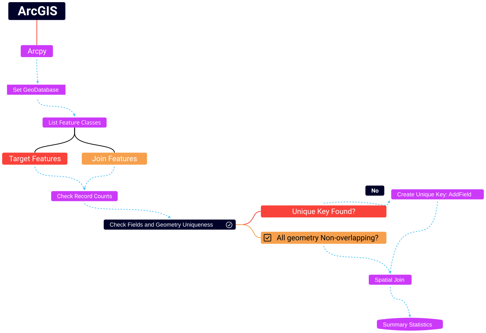
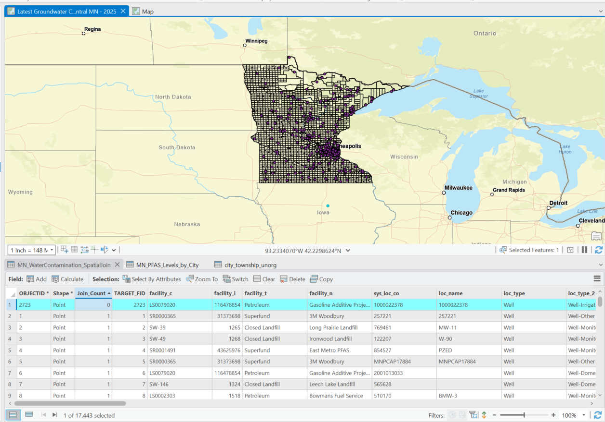

- Flow chart of a workflow to prepare two datasets for spatial join
- The analysis includes checks for unique ID fields and duplicate geometry
What is Arcpy?:¶
Arcpy is a Python library for automating GIS tasks in Arc GIS Pro
- Collection of modules, functions, and classes from the ArcGIS toolbox
- It allows you to perform geoprocessing, analysis, data management and mapping automation using python
import arcpy # allows for access to ArcGIS pro geoprocessing tools and workflow automation
import os # enables interaction with local system resources (paths to folders and files)
import requests # access data from the web
import zipfile ## process and extract downloaded zipfiles
import pandas as pd ## use to check spreadsheet formatting
initial_dir= os.getcwd() # capture the initial directory before setting environment for arcpy
print("Initial working directory: ", initial_dir)
Initial working directory: c:\Projects\my_git_pages_website\Py-and-Sky-Labs\content\ArcPY
### BE SURE TO INSTALL MAGIC LIBRARY FIRST for filetype validation example below :
# step1 activate arcgispro-py3 environment: conda activate "C:\Program Files\ArcGIS\Pro\bin\Python\envs\arcgispro-py3"
# step2 install library: pip install python-magic-bin on windows, for unix system use conda install -c conda-forge python-magic
import magic ## to validate file type requested from web
What we did last time¶
- Used requests libary to pull a shapefile dataset of ground water contamination from MN Geospatial Commons
- Used arcpy.conversion.FeatureClassToGeodatabase() to load a list of shapefiles into a geodatabase
- Created a function that would simplify checking the existance and characteristics of our feature classes
What we will do this time:¶
- Revisit the custom function to check our gdb
- Create a new function using the request library
- Pull some new data into our project
- Perform several QC checks on attributes and geometry
- Perform Spatial Analysis within Arcpy
Create and re-use Custom Functions to Save time¶
When you create a python script, the functions within those scripts can be loaded into other scripts
To import your script, do as you would any library in python
python import my_script as ms
Now the functions within this script are available to use
python ms.my_function()
- Not used here but when multiple script hold different tools you'd be better served using a package and
__init__.pysetup
## Let's load in our custom tool
import custom_arcpy_tools as cat
Initial working directory: c:\Projects\my_git_pages_website\Py-and-Sky-Labs\content\ArcPY
# note: When you import the custom arcpy tools module it sets a variable called initial_dir to store the path where your script is located
# this is intentionally done to support the modules functionality i.e., creating folders locally from a known reference point to store data
cat.listFC_dataset_Attributes()
## We purposefully caused an error!
# Why? To demonstrate that the error is due to workspace not being set in this new notebook or script
--------------------------------------------------------------------------- ValueError Traceback (most recent call last) ~\AppData\Local\Temp\ipykernel_36184\2419765190.py in <cell line: 0>() ----> 1 cat.listFC_dataset_Attributes() 2 3 ## We purposefully caused an error! 4 # Why? To demonstrate that the error is due to workspace not being set in this new notebook or script c:\Projects\my_git_pages_website\Py-and-Sky-Labs\content\ArcPY\custom_arcpy_tools.py in listFC_dataset_Attributes(workspace) 86 if not arcpy.env.workspace: 87 ---> 88 raise ValueError("No workspace is set! Please specify a workspace") #stops the program, calls out this error 89 90 ValueError: No workspace is set! Please specify a workspace
# See the ValueError?
### Don't remember the arguments for this function?
### Use this:
# help(function_name)
help(cat.listFC_dataset_Attributes) ## use help(function_name) to get the documentation for the function
Help on function listFC_dataset_Attributes in module custom_arcpy_tools:
listFC_dataset_Attributes(workspace=None)
List feature classes in the workspace and checks their key attributes, such as SpatialReference ,
geometry type, and coordinate systems
Parameters:
-----------
workspace: str, optional
The file path to the workspace (e.g., geodatabase path) containing the feature classes
If none, the function will use the current ArcPy workspace
If no workspace is set will raise an error telling you to set a a workspace
Returns:
--------
None , if no workspace exists
Otherwise, Prints the details of all feature classes in the wksp , including
- Feature Class Name
- spatial reference name
- spatial reference type
- Geometry
- Well-known ID of the spatial reference
Also, warns if different spatial references or coordinate systems exists in the dataset
Raises:
-------
Value Error:
If no wksp is set or if not feature classes are found in the workspace
Exception:
For general errors that may occur during processing
Example:
# To list fc in a geodatabase
>>> listFC_dataset_Attributes(r"c:/Path/To/Your/Workspace.gdb")
# To use the current wksp already set in Arcpy
>>> listFC_dataset_Attributes()
# Let's change the directory to where we have a geodatabase with some feature classes to work with
# Note: % is a magic command to access local system file and folders
%cd ./02 Result
c:\Projects\my_git_pages_website\Py-and-Sky-Labs\content\ArcPY\02 Result
# list the files
%ls
Volume in drive C is OS
Volume Serial Number is DA19-2472
Directory of c:\Projects\my_git_pages_website\Py-and-Sky-Labs\content\ArcPY\02 Result
03/21/2025 10:29 AM <DIR> .
03/28/2025 03:15 PM <DIR> ..
03/29/2025 05:47 PM <DIR> MN_WaterContamination.gdb
0 File(s) 0 bytes
3 Dir(s) 437,112,291,328 bytes free
## should see a file ending with .gdb. Copy the folder path and add its name below
## Use the gdb name in the folder, and set the path to the gdb
###====================== Set up file paths
gdb_path = r"c:\Projects\my_git_pages_website\Py-and-Sky-Labs\content\ArcPY\02 Result\MN_WaterContamination.gdb"
##===================== Define the path to script and project folder
# set the folder path as the working environment, and store it for later use
try:
arcpy.env.workspace = gdb_path
wksp = arcpy.env.workspace
except Exception as e:
print(f"Error setting up the path, {e}, Exception type: {type(e).__name__}") # python's built-in error messaging, {e} prints description and type(e).__name__ category
print("Working environment is here",wksp)
## Modify the env attribute to allow overwriting output files
arcpy.env.overwriteOutput= True
Working environment is here c:\Projects\my_git_pages_website\Py-and-Sky-Labs\content\ArcPY\02 Result\MN_WaterContamination.gdb
arcpy.Exists(wksp) ## similar to using print statement following if not os.path.exists(gdb_path)
True
# Now. Retry the function that failed earlier
cat.listFC_dataset_Attributes()
--------------------------------------------------------------------------- NameError Traceback (most recent call last) ~\AppData\Local\Temp\ipykernel_47992\2911834336.py in <cell line: 0>() 1 # Now. Retry the function that failed earlier 2 ----> 3 cat.listFC_dataset_Attributes() NameError: name 'cat' is not defined
# Confirm we have those feature classes
arcpy.ListFeatureClasses()
['atlas_contamination_areas', 'atlas_contamination_area_lines', 'atlas_contamination_sites', 'atlas_contamination_sites_noca', 'atlas_contamination_source_areas', 'atlas_contamination_wells_result_sum', 'MN_PFAS_Levels', 'MN_PFAS_Levels_proj', 'MN_PFAS_Levels_by_City', 'city_township_unorg', 'overlap_check1', 'MN_WaterContamination_SpatialJoin', 'MN_latest_WaterSamples_Joined_lyr']
Data Sources :¶
- Geography: MN
| Input Name | file types | Coordinate System | Source |
|---|---|---|---|
| MN PFAS levels | 1 excel file | GCS: NAD 83 | Report |
| MN Groundwater contamination atlas | 6 shape files | PCS: NAD 83 UTM Zone 15N | MetaData |
| MN Cities and townships | 1 shapefile | PCS: NAD 83 UTM Zone 15N | MetaData |
- We have already pulled and done some initial processing of all these datasets in the previous three walkthroughs
- Now will validate uniqueness of the data and join the datasets
# quick reminder of where our current workspace is set
print("Data Folder is here" , wksp)
# let's call it gdb for clarity
gdb=wksp
Data Folder is here c:\Projects\my_git_pages_website\Py-and-Sky-Labs\content\ArcPY\02 Result\MN_WaterContamination.gdb
Preparing for Spatial Join by understanding the Grain of the Data¶
When joining any datasets, spatial or otherwise, it is a good practice to:
- Validate the record counts of the initial and joined datasets
- Understand the grain of the datasets
- In our case we have two datasets at different levels of detail or resolution:
- one dataset is organized by City,Townships, and Unorganized territories (CTU) that are each assigned a unique ID called Geographic Names Information System Feature ID (GNIS_Feature_ID)
- CTU layer grain = an individual city/township/territory polygon uniquely identified by GNIS_Feature_ID
- A unique ID from the GNIS federal database developed by USGS - GNIS database contains official names and GNIS_Feature_ID for geographic features (cities, townships, lakes, etc) - The other dataset is of organized by unique well location IDs called sys_loc_code
- Well data grain = an individual well location point , uniquely identified by sys_loc_co
- Why does this matter?:
- A unique standard ID should identify the grain of a dataset--> 'thing' each unique row or geometry represents
- Use that ID for analysis of discrete entities (e.g., cities)
- e.g., Each GNIS_Feature_ID corresponds to a single unique location (City,Township or Unorganized Territory)
- Spatial join can move the data from one grain to another
- individual well --> well + CTU polygon
- What it helps with
- understanding how datasets relates
- avoiding incorrect joins
- preventing data summary/aggregation errors
- In our case we have two datasets at different levels of detail or resolution:
Common Unique ID fields and What they represent:¶
| ID Field | Description | Grain/Entity |
|---|---|---|
| GNIS_Feature_ID | USGS ID for natural cultural features | City, township, water body |
| GEOID | US Census Bureau geocode | Tract, block group , place |
| FIPS | Federal Information Processing Standard | State, county , subdivision |
| UUID | Universally Unique ID (internal system generated) | Custom entity define by creator |
| PLACE_ID | Google Unique ID for places | Point of Interest |
| sys_loc_co | Unique well / location ID | Groundwater sampling |
- These IDs define the entities each dataset represents
- When joining, aggregating or visualizing need to correctly use these IDs to avoid mixing grain or double counting
MN City,Township, Unorganized Territory (CTU) Dataset¶
- Represents boundaries of cities, townships and unorganized territories in Minnesota
- key fields
- GNIS_Feature_ID:
- official ID for geographic features (e.g., cities) that relates them to their Name and location in the GNIS Database
- County_GNIS_Feature_ID:
- official county ID that relates counties to their Name and Location in the GNIS Database
- FEATURE_NAME:
- Name of the city, township or unorganized territory
- GNIS_Feature_ID:
Source : MN Geospatial Commons:
#### What is the grain of the CTU Polgon layer? How does it Relate to the grain of the wells Layer?
## Count initial records
# first check the join fc: County/Township/Unorganized territory (CTU)
fc= "city_township_unorg"
print(f"Total records in {fc} feature class is: {int(arcpy.management.GetCount(fc)[0])}")
Total records in city_township_unorg feature class is: 2744
### Based on the metadata, this dataset is supposed to represent city/township/terr (CTU) boundaries across the state of MN
# Grain of the data is at the individual CTU level, each row is likely to be represented by a unique polygon
# Does each row have a corresponding unique ID?
# Are there overlapping CTUs?
## check the target input fc
for fc in arcpy.ListFeatureClasses("*wells_result_sum*"):
print(f"Feature class: {fc}\n Total Record Count: {int(arcpy.management.GetCount(fc)[0])}")
Feature class: atlas_contamination_wells_result_sum Total Record Count: 17443
### Based on the metadata the dataset represents well locations
# Grain is at the level of individual wells, each row is likely to be represented by a unique point
# Does each row have a corresponding unique ID?
# Are the same wells sampled multiple times on the same date?
## List and summarize all fields
print("Summary of Fields")
for field in arcpy.ListFields("city_township_unorg"):
# For better display left align, pad to same length. e.g, field.name:20, means left align text and pad to 20 characters
print(f" - {field.name:15} | {field.type:10} | {field.length}")
Summary of Fields - OBJECTID | OID | 4 - Shape | Geometry | 0 - GNIS_FEATU | Integer | 4 - FEATURE_NA | String | 254 - CTU_CLASS | String | 25 - COUNTY_GNI | Integer | 4 - COUNTY_COD | String | 2 - COUNTY_NAM | String | 100 - POPULATION | Integer | 4 - SHAPE_Leng | Double | 8 - Shape_Length | Double | 8 - Shape_Area | Double | 8 - Combined_GNIS_IDs | String | 50
### lets wrap this in a function and add total record counts
# A function to get the fields and record counts
def showFieldinfo(fc):
record_count = arcpy.management.GetCount(fc)[0]
print("Summary of Fields")
for field in arcpy.ListFields(fc):
print( f" {field.name:15} | {field.type:15} | {field.length}")
print(f"\nRecord Count:{record_count} in Feature Class {fc}")
return
fc = "city_township_unorg"
showFieldinfo(fc)
Summary of Fields OBJECTID | OID | 4 Shape | Geometry | 0 GNIS_FEATU | Integer | 4 FEATURE_NA | String | 254 CTU_CLASS | String | 25 COUNTY_GNI | Integer | 4 COUNTY_COD | String | 2 COUNTY_NAM | String | 100 POPULATION | Integer | 4 SHAPE_Leng | Double | 8 Shape_Length | Double | 8 Shape_Area | Double | 8 Combined_GNIS_IDs | String | 50 Record Count:2744 in Feature Class city_township_unorg
## We now have a way to summarize all fields in a more visual way
QC Overlapping Polygons: Do CTU polygons overlap?¶
- This is to ensure that we do have a unique polygon for each CTU
- If we do, bucketing well contamination sites by unique CTU will make sense
- otherwise, same wells would be grouped into different CTU polygons causing misinterpretation of wells data per CTU
Add a positive control for overlap¶
- we will grab a random polygon from CTU layer using the SearchCursor and the SHAPE@WKT field(i.e., string of polygon shape vertices coordinates)
- Then insert the polygon into the same CTU layer to create a duplicate
- This way we know we have an overlap and that our method can detect overlap
# We can even access the geometry of the layer
fc = "city_township_unorg"
counter= 0
with arcpy.da.SearchCursor(fc, ["SHAPE@WKT"]) as cursor:
for row in cursor:
while counter <5:
shape= row[0]
counter +=1
print(shape)
MULTIPOLYGON (((230665.87399999984 5383161.6950000003, 230639.37100000028 5383162.7919999994, 230554.57699999958 5383166.5490000006, 230412.21700000018 5383172.8640000001, 230267.49100000039 5383179.2809999995, 230107.56300000008 5383186.3880000003, 229883.49500000011 5383196.3269999996, 229855.51300000027 5383197.6449999996, 229756.63499999978 5383202.0010000002, 229443.33800000045 5383215.8969999999, 229136.76300000027 5383229.5449999999, 229047.27300000004 5383233.6539999992, 227613.41100000031 5383306.2300000004, 227435.81099999975 5383315.2200000007, 225815.58100000024 5383386.5600000005, 224217.28699999955 5383459.8330000006, 224207.0700000003 5383460.3010000009, 223712.59499999974 5383488.3249999993, 223435.43599999975 5383503.9979999997, 223216.95799999963 5383516.3440000005, 223077.14699999988 5383522.7039999999, 222604.60599999968 5383544.1999999993, 222530.85400000028 5383547.6620000005, 221193.40799999982 5383608.6380000003, 220996.10800000001 5383617.6520000007, 220984.06900000013 5383618.2050000001, 220982.33000000007 5383580.6150000002, 220909.48900000006 5382006.7789999992, 220832.41899999976 5380393.6109999996, 220757.0290000001 5378777.2290000003, 220686.99100000039 5377169.0089999996, 220606.75999999978 5375554.091, 220534.01900000032 5373941.7990000006, 222146.74100000039 5373863.8599999994, 222741.40099999961 5373832.5610000007, 223748.65899999999 5373797.4409999996, 225365.07899999991 5373719.4609999992, 226974.83000000007 5373643.0289999992, 228598.1799999997 5373570.2300000004, 230214.5410000002 5373492.2699999996, 230298.2089999998 5375108.2400000002, 230374.05099999998 5376726.4100000001, 230447.19000000041 5378306.591, 230448.00999999978 5378329.9890000001, 230504.87100000028 5379939.5399999991, 230581.79000000004 5381558.4000000004, 230663.46399999969 5383116.2809999995, 230665.87399999984 5383161.6950000003))) MULTIPOLYGON (((230665.87399999984 5383161.6950000003, 230639.37100000028 5383162.7919999994, 230554.57699999958 5383166.5490000006, 230412.21700000018 5383172.8640000001, 230267.49100000039 5383179.2809999995, 230107.56300000008 5383186.3880000003, 229883.49500000011 5383196.3269999996, 229855.51300000027 5383197.6449999996, 229756.63499999978 5383202.0010000002, 229443.33800000045 5383215.8969999999, 229136.76300000027 5383229.5449999999, 229047.27300000004 5383233.6539999992, 227613.41100000031 5383306.2300000004, 227435.81099999975 5383315.2200000007, 225815.58100000024 5383386.5600000005, 224217.28699999955 5383459.8330000006, 224207.0700000003 5383460.3010000009, 223712.59499999974 5383488.3249999993, 223435.43599999975 5383503.9979999997, 223216.95799999963 5383516.3440000005, 223077.14699999988 5383522.7039999999, 222604.60599999968 5383544.1999999993, 222530.85400000028 5383547.6620000005, 221193.40799999982 5383608.6380000003, 220996.10800000001 5383617.6520000007, 220984.06900000013 5383618.2050000001, 220982.33000000007 5383580.6150000002, 220909.48900000006 5382006.7789999992, 220832.41899999976 5380393.6109999996, 220757.0290000001 5378777.2290000003, 220686.99100000039 5377169.0089999996, 220606.75999999978 5375554.091, 220534.01900000032 5373941.7990000006, 222146.74100000039 5373863.8599999994, 222741.40099999961 5373832.5610000007, 223748.65899999999 5373797.4409999996, 225365.07899999991 5373719.4609999992, 226974.83000000007 5373643.0289999992, 228598.1799999997 5373570.2300000004, 230214.5410000002 5373492.2699999996, 230298.2089999998 5375108.2400000002, 230374.05099999998 5376726.4100000001, 230447.19000000041 5378306.591, 230448.00999999978 5378329.9890000001, 230504.87100000028 5379939.5399999991, 230581.79000000004 5381558.4000000004, 230663.46399999969 5383116.2809999995, 230665.87399999984 5383161.6950000003))) MULTIPOLYGON (((230665.87399999984 5383161.6950000003, 230639.37100000028 5383162.7919999994, 230554.57699999958 5383166.5490000006, 230412.21700000018 5383172.8640000001, 230267.49100000039 5383179.2809999995, 230107.56300000008 5383186.3880000003, 229883.49500000011 5383196.3269999996, 229855.51300000027 5383197.6449999996, 229756.63499999978 5383202.0010000002, 229443.33800000045 5383215.8969999999, 229136.76300000027 5383229.5449999999, 229047.27300000004 5383233.6539999992, 227613.41100000031 5383306.2300000004, 227435.81099999975 5383315.2200000007, 225815.58100000024 5383386.5600000005, 224217.28699999955 5383459.8330000006, 224207.0700000003 5383460.3010000009, 223712.59499999974 5383488.3249999993, 223435.43599999975 5383503.9979999997, 223216.95799999963 5383516.3440000005, 223077.14699999988 5383522.7039999999, 222604.60599999968 5383544.1999999993, 222530.85400000028 5383547.6620000005, 221193.40799999982 5383608.6380000003, 220996.10800000001 5383617.6520000007, 220984.06900000013 5383618.2050000001, 220982.33000000007 5383580.6150000002, 220909.48900000006 5382006.7789999992, 220832.41899999976 5380393.6109999996, 220757.0290000001 5378777.2290000003, 220686.99100000039 5377169.0089999996, 220606.75999999978 5375554.091, 220534.01900000032 5373941.7990000006, 222146.74100000039 5373863.8599999994, 222741.40099999961 5373832.5610000007, 223748.65899999999 5373797.4409999996, 225365.07899999991 5373719.4609999992, 226974.83000000007 5373643.0289999992, 228598.1799999997 5373570.2300000004, 230214.5410000002 5373492.2699999996, 230298.2089999998 5375108.2400000002, 230374.05099999998 5376726.4100000001, 230447.19000000041 5378306.591, 230448.00999999978 5378329.9890000001, 230504.87100000028 5379939.5399999991, 230581.79000000004 5381558.4000000004, 230663.46399999969 5383116.2809999995, 230665.87399999984 5383161.6950000003))) MULTIPOLYGON (((230665.87399999984 5383161.6950000003, 230639.37100000028 5383162.7919999994, 230554.57699999958 5383166.5490000006, 230412.21700000018 5383172.8640000001, 230267.49100000039 5383179.2809999995, 230107.56300000008 5383186.3880000003, 229883.49500000011 5383196.3269999996, 229855.51300000027 5383197.6449999996, 229756.63499999978 5383202.0010000002, 229443.33800000045 5383215.8969999999, 229136.76300000027 5383229.5449999999, 229047.27300000004 5383233.6539999992, 227613.41100000031 5383306.2300000004, 227435.81099999975 5383315.2200000007, 225815.58100000024 5383386.5600000005, 224217.28699999955 5383459.8330000006, 224207.0700000003 5383460.3010000009, 223712.59499999974 5383488.3249999993, 223435.43599999975 5383503.9979999997, 223216.95799999963 5383516.3440000005, 223077.14699999988 5383522.7039999999, 222604.60599999968 5383544.1999999993, 222530.85400000028 5383547.6620000005, 221193.40799999982 5383608.6380000003, 220996.10800000001 5383617.6520000007, 220984.06900000013 5383618.2050000001, 220982.33000000007 5383580.6150000002, 220909.48900000006 5382006.7789999992, 220832.41899999976 5380393.6109999996, 220757.0290000001 5378777.2290000003, 220686.99100000039 5377169.0089999996, 220606.75999999978 5375554.091, 220534.01900000032 5373941.7990000006, 222146.74100000039 5373863.8599999994, 222741.40099999961 5373832.5610000007, 223748.65899999999 5373797.4409999996, 225365.07899999991 5373719.4609999992, 226974.83000000007 5373643.0289999992, 228598.1799999997 5373570.2300000004, 230214.5410000002 5373492.2699999996, 230298.2089999998 5375108.2400000002, 230374.05099999998 5376726.4100000001, 230447.19000000041 5378306.591, 230448.00999999978 5378329.9890000001, 230504.87100000028 5379939.5399999991, 230581.79000000004 5381558.4000000004, 230663.46399999969 5383116.2809999995, 230665.87399999984 5383161.6950000003))) MULTIPOLYGON (((230665.87399999984 5383161.6950000003, 230639.37100000028 5383162.7919999994, 230554.57699999958 5383166.5490000006, 230412.21700000018 5383172.8640000001, 230267.49100000039 5383179.2809999995, 230107.56300000008 5383186.3880000003, 229883.49500000011 5383196.3269999996, 229855.51300000027 5383197.6449999996, 229756.63499999978 5383202.0010000002, 229443.33800000045 5383215.8969999999, 229136.76300000027 5383229.5449999999, 229047.27300000004 5383233.6539999992, 227613.41100000031 5383306.2300000004, 227435.81099999975 5383315.2200000007, 225815.58100000024 5383386.5600000005, 224217.28699999955 5383459.8330000006, 224207.0700000003 5383460.3010000009, 223712.59499999974 5383488.3249999993, 223435.43599999975 5383503.9979999997, 223216.95799999963 5383516.3440000005, 223077.14699999988 5383522.7039999999, 222604.60599999968 5383544.1999999993, 222530.85400000028 5383547.6620000005, 221193.40799999982 5383608.6380000003, 220996.10800000001 5383617.6520000007, 220984.06900000013 5383618.2050000001, 220982.33000000007 5383580.6150000002, 220909.48900000006 5382006.7789999992, 220832.41899999976 5380393.6109999996, 220757.0290000001 5378777.2290000003, 220686.99100000039 5377169.0089999996, 220606.75999999978 5375554.091, 220534.01900000032 5373941.7990000006, 222146.74100000039 5373863.8599999994, 222741.40099999961 5373832.5610000007, 223748.65899999999 5373797.4409999996, 225365.07899999991 5373719.4609999992, 226974.83000000007 5373643.0289999992, 228598.1799999997 5373570.2300000004, 230214.5410000002 5373492.2699999996, 230298.2089999998 5375108.2400000002, 230374.05099999998 5376726.4100000001, 230447.19000000041 5378306.591, 230448.00999999978 5378329.9890000001, 230504.87100000028 5379939.5399999991, 230581.79000000004 5381558.4000000004, 230663.46399999969 5383116.2809999995, 230665.87399999984 5383161.6950000003)))
More on Well-Known Text(WKT) format data¶
SHAPE@WKT
- WKT is a text-based format standardized by the international Open GeoSpatial Consortium of experts on geospatial data standards
- general format Point (x,y)
- If CRS is geographic (x,y) --> longitude , latitude
- If Projected (x,y) --> easting, northing
- general format Point (x,y)
- Used to represent the vertices for vector geometry or describe coordinate systems
- Two types of WKT:
- WKT for Geometry (most commonly used):
- Point (30 10)
- LINESTRING (30 10, 10 30, 40 40)
- POLYGON (30 10, 40 40, 20 40, 10 20, 30 10)
- MULTIPOLYGON ((...)) .. same as polygon but nested as multiple polygons
- WKT for Coordinate Systems
- GEOGCS["WGS 84", DATUM["WGS_1984",...]]
- WKT for Geometry (most commonly used):
- WKT is used in:
- PostGIS (PostgreSQL extension) to insert, export and transform geometries
- PostGIS also supports well-known binary format (WKB) but WKT is more human-readable
- APIs / Data Interchange to send, receive data from spatial services, GeoJson to WKT conversion, import export format in tools likeArcGIS, QGIS
- Although WKT is vector data, can be used to represent raster extent, projection system (e.g., might be present in raster metadata for spatial reference)
- PostGIS (PostgreSQL extension) to insert, export and transform geometries
## Copy a polygon WKT from the above output and paste it here
## Your copied polygon may be different from the one shown here, works the same regardless
### MULTIPOLYGON (((353468.7034 4904892.6543000005, 353482.93570000026 4905697.5601000004, 351878.13520000037 4905722.3309000004, 351869.37359999958 4904918.1735999994, 351853.66249999963 4904119.7785999998, 353448.25569999963 4904099.7821999993, 353468.7034 4904892.6543000005)))
### Note that the default ArcPY behavior for shapefiles labels WKT polygons as multipolygons
### The main benefit of WKT is being easy to visually see and understand, much easier to work with and move between systems
### Say you want the Geometry Type of the features in WKT format
from collections import Counter
fc = "city_township_unorg"
geom_list = set()
with arcpy.da.SearchCursor(fc, ["SHAPE@WKT"]) as cursor:
for row in cursor:
geom = row[0]
if geom:
geom_name = str(geom).split()[0] # isolates the name from the WKT
geom_list.add(geom_name)
print("List of WKT Geometries\n", geom_list)
count_geom_types = Counter(geom_list) # counter creates a dictionary with keys and counts of keys as the values
for key,count in count_geom_types.items(): # .items() dictionary method
if int(count) >0:
print(key, count) # because we made this based off unique set list of names, we should see different names if they exist and their count
List of WKT Geometries
{'MULTIPOLYGON'}
MULTIPOLYGON 1
from collections import Counter
geom_list= set()
with arcpy.da.SearchCursor(fc, ["SHAPE@"]) as cursor:
for row in cursor:
geom = row[0]
if geom:
geom_list.add(geom.type) # Can access other properties of geometry object : .area, .centroid, .extent, .partCount
count_geom_types = Counter(geom_list)
for key, count in count_geom_types.items():
if count>0:
print(key, count)
polygon 1
### In both examples, there is only one geometry type for the CTU dataset, as expected
Manually add Geometry features to a layer with arcpy.managment.Append() and arcpy.FROMWKT()¶
arcpy.management.Append()¶
- Adds new features to an existing dataset
- Can add point, line or polygon feature classes to an existing dataset of the same type ( e.g., cannot add line fc to a point fc)
- Can also add several tables to an existing table or several rasters to an existing raster
- arcpy.management.Append(inputs, target, {schema_type}, {field_mapping}, {subtype}, {expression}, {match_fields}, {update_geometry}, {enforce_domains})
- key fields:
- input: data to be appended to the target dataset (Note you can combine Tables and Feature Classes e.g., Fc+Table--> NewTable with Fc attributes)
- target: existing dataset where the input will be added
- schema_type: whether fields must match. TEST, causes error if fields do not match. NO_TEST allows fields to be null,TEST_AND_SKIP, will leave out the non-matching fields
arcpy.FromWKT(wkt_string,{spatial_reference})¶
- Creates a geometry object from well-known text string
- This geometry object is the same one as the native SHAPE@
Use-case¶
- Updating a polygon layer with a new feature (e.g., add a new city, township, territory to an existing CTU polygon layer)
- Consolidate multiple datasets into one
- Update a table with new , more recent data (e.g., update site sampling data for an existing feature)
# Insert a single duplicate polygon to CTU polygon layer
# Why?: a positive control to test for overlapping polygons, we already know it will overlap but we really want to know that our detection methods work too
wkt_geom= """MULTIPOLYGON (((353468.7034 4904892.6543000005, 353482.93570000026 4905697.5601000004, 351878.13520000037 4905722.3309000004, 351869.37359999958 4904918.1735999994, 351853.66249999963 4904119.7785999998, 353448.25569999963 4904099.7821999993, 353468.7034 4904892.6543000005)))"""
fc = "city_township_unorg"
try:
### TOOL: arcpy.management.Append(inputs, target, {schema_type}, {field_mapping}, {subtype}, {expression}, {match_fields}, {update_geometry}, {enforce_domains})
arcpy.management.Append(inputs=[arcpy.FromWKT(wkt_geom,arcpy.Describe(fc).spatialReference)], target=fc, schema_type="NO_TEST")
## Schema_type is whether you want to enforce field matching for the inserted geometry. If TEST, all fields must match exactly, including types and order
## we just have the WKT so we do not want to enforce field matching(NO_TEST)
except arcpy.ExecuteError:
print("Arcpy Error:", arcpy.GetMessages(2))
except Exception as e:
print("Error occurred: ", e, type(e).__name__)
# recall we can access fc attributes using describe object
# in the previous example we accessed the CTU attributes to set the spatial reference of the new polygon geometry object
sr= arcpy.Describe(fc).spatialReference
print(sr.name, sr.factoryCode)
NAD_1983_UTM_Zone_15N 26915
Use PairwiseIntersect to dected overlapping Features¶
arcpy.analysis.PairwiseIntersect()¶
- arcpy.analysis.PairwiseIntersect(in_features, out_feature_class, {join_attributes}, {cluster_tolerance}, {output_type})
Computes all possible pairings
- self:self (FeatureA: FeatureA)
- self:other (FeatureA: FeatureB)
- other:self (FeatureB: FeatureA)
For this QC exercise, only self:other pairing is meaningful:
- Filter-out self:self pairs (Features pairing with themselves)
- Select only self:other (Features pairing with non-self features)
- Keep only one direction of pairing (e.g., FID > FID_1 or FID < FID_1 --both mean that the match has different object IDs and overlap)
# Check for overlap within a feature class of CTU polygons
fc = "city_township_unorg"
in_fc = fc
field_name= f"FID_{fc}"
where_c = f"FID_{fc} > FID_{fc}_1"
out_fc = "overlap_check1"
overlapping_ids_list= set()
try:
### TOOL: arcpy.analysis.PairwiseIntersect(in_features, out_feature_class, {join_attributes}, {cluster_tolerance}, {output_type})
arcpy.analysis.PairwiseIntersect([in_fc, in_fc], out_fc, join_attributes="ONLY_FID") # We only want FID to track which of the original ObjectIDs overlap
print("Successfully completed PairwiseIntersect Analysis")
with arcpy.da.SearchCursor(out_fc,[field_name],where_clause=where_c) as cursor:
for row in cursor:
dup_id = row[0]
overlapping_ids_list.add(dup_id)
### ========================= Filter for actual overlaps (not self-intersections)
### Step1: Create a temporary layer from the pairwise overlap feature class
### Step2: Select those paired features whose FID values do not match, overlapping features
### Step3: Count the number of those overlapping features
### TOOL: arcpy.management.MakeFeatureLayer(in_features, out_layer, {where_clause}, {workspace}, {field_info})
arcpy.management.MakeFeatureLayer(out_fc, "overlap_lyr")
### TOOL: arcpy.management.SelectLayerByAttribute(in_layer_or_view, {selection_type}, {where_clause}, {invert_where_clause})
arcpy.management.SelectLayerByAttribute("overlap_lyr", "NEW_SELECTION",
where_c) # keep only one intersection of the pair (A->B) to clearly mark one overlap
print("Successfully filtered PairwiseIntersect features")
count = int(arcpy.management.GetCount("overlap_lyr")[0])
print(f" PairwiseIntersect detected {count} overlaps for the following objects Ids: \n{overlapping_ids_list}")
except Exception as e:
print("Error Occurred", e, type(e).__name__)
except arcpy.ExecuteError:
print("ArcPy Error", arcpy.GetMessages(2))
### We identified overlapping polygons and printed object ID (here 2745 matched to 18)
### This is the object ID from the original CTU polygon table
### The larger ID value is selected because features are labeled in sequence in a fc, making it likely the more recent one was unintentionally added
Successfully completed PairwiseIntersect Analysis
Successfully filtered PairwiseIntersect features
PairwiseIntersect detected 1 overlaps for the following objects Ids:
{2745}
### We identified overlapping polygons and printed object ID
### This is the object ID from the original CTU polygon table
### The larger ID value is selected because features are labeled in sequence in a fc, making it likely the more recent one was unintentionally added
def check_Fc_NonselfOverlap(input_fc, output_fc_name):
""" Detects overlapping features within a feature class using PairwiseIntersect.
Returns duplicate pair object ID and count
Args:
input_fc (str): Full path or name of the feature class
output_fc_name: output feature class name for PairwiseIntersect results
Returns:
count (int) : number of overlapping features
overlap_ids (list): list of Object IDs of overlapping features
output_fc (str) : Name of the output overlap feature class
"""
# Check for overlap within a feature class of CTU polygons
base_name = os.path.basename(input_fc)
safe_name= arcpy.ValidateTableName(base_name)
field_name= f"FID_{safe_name}"
field_name_1= f"FID_{safe_name}_1"
where_c = f"{field_name} > {field_name_1}"
out_fc = output_fc_name
overlapping_ids_list= set()
try:
### TOOL: arcpy.analysis.PairwiseIntersect(in_features, out_feature_class, {join_attributes}, {cluster_tolerance}, {output_type})
arcpy.analysis.PairwiseIntersect([input_fc, input_fc], out_fc, join_attributes="ONLY_FID") # We only want FID to track which of the original ObjectIDs overlap
print("Successfully completed PairwiseIntersect Analysis")
with arcpy.da.SearchCursor(out_fc,[field_name],where_clause=where_c) as cursor:
for row in cursor:
dup_id = row[0]
overlapping_ids_list.add(dup_id)
### ========================= Filter for actual overlaps (not self-intersections)
### Step1: Create a temporary layer from the pairwise overlap feature class
### Step2: Select those paired features whose FID values do not match, overlapping features
### Step3: Count the number of those overlapping features
### TOOL: arcpy.management.MakeFeatureLayer(in_features, out_layer, {where_clause}, {workspace}, {field_info})
arcpy.management.MakeFeatureLayer(out_fc, "overlap_lyr")
### TOOL: arcpy.management.SelectLayerByAttribute(in_layer_or_view, {selection_type}, {where_clause}, {invert_where_clause})
arcpy.management.SelectLayerByAttribute("overlap_lyr", "NEW_SELECTION",
where_c) # keep only one intersection of the pair (A->B) to clearly mark one overlap
print("Successfully filtered PairwiseIntersect features")
count = int(arcpy.management.GetCount("overlap_lyr")[0])
print(f" PairwiseIntersect detected {count} overlaps for the following objects Ids: \n{list(overlapping_ids_list)}")
return count, list(overlapping_ids_list), out_fc
except Exception as e:
print("Error Occurred", e, type(e).__name__)
except arcpy.ExecuteError:
print("ArcPy Error", arcpy.GetMessages(2))
### We wrapped the check for overlapping polygons in a function for repeatability
fc = "city_township_unorg"
input_fc = fc
output_fc_name = "overlap_check2"
check_Fc_NonselfOverlap(input_fc, output_fc_name)
Successfully completed PairwiseIntersect Analysis Successfully filtered PairwiseIntersect features PairwiseIntersect detected 1 overlaps for the following objects Ids: [2745]
(1, [2745], 'overlap_check2')
### It's clear that CTU layer does not have overlapping polygons (beyond what we added as a control)
### This assures us that bucketing wells by CTU polygons is valid, will not have different wells assigned to multiple CTUs
## Updated function with doc-strings to show unique values and geometries by field
def showFieldinfo(fc):
"""
Outputs detailed field information for a given ArcGIS Feature Class.
This function prints a summary of all fields in the provided Feature Class, including:
- Field names
- Field types (e.g., Text, Integer, Double)
- Field length (applicable for Text fields)
- Count of unique values for each field
Additionally, it prints counts of total records and total unique Geometries (by Well-Known Text String) for the Feature Class
Args:
fc (str):
The path to the Feature Class to be analyzed. Must be accessible within the current ArcPy workspace.
Returns:
None
This function prints the summary information directly to the console.
It does not return any values.
Example:
--------
>>> showFieldinfo("C:/Path/To/YourGDB.gdb/YourFeatureClass")
Summary of Fields in Feature Class: YourFeatureClass
Name Type Length Unique_Values
OBJECTID OID - 100
Name String 50 24
Total Record Count: 100
Total Geometry Count:100
"""
record_count = arcpy.management.GetCount(fc)[0]
shape_type = arcpy.Describe(fc).shapeType
print(f"*Summary*\n Fields in the {shape_type} Feature Class: {fc}\n")
print(f"Name Type Length Unique_Values")
geometry_set = set()
with arcpy.da.SearchCursor(fc,["SHAPE@WKT"]) as cursor:
for row in cursor:
geometry_set.add(row[0])
for field in arcpy.ListFields(fc):
unique_ids = set()
field_name= str(field.name)
with arcpy.da.SearchCursor(fc,[field_name]) as cursor:
for row in cursor:
if row[0] is not None:
unique_ids.add(row[0])
print( f" {field.name:20} | {field.type:10} | {str(field.length):5} | {str(len(unique_ids)):10}")
print(f"\nTotal Record Count: {record_count}, Total Geometry Count(by WKT): {len(geometry_set)}")
if record_count != len(geometry_set):
print(f"Warning {(int(record_count)-len(geometry_set))} Potential Duplicate Features Detected in the Feature Class")
return
# You may have noticed a new function called arcpy.da.SearchCursor()
# Enables us to access and read the attribute data for the feature classes
# More on that later
fc ="city_township_unorg"
showFieldinfo(fc)
*Summary* Fields in the Polygon Feature Class: city_township_unorg Name Type Length Unique_Values OBJECTID | OID | 4 | 2744 Shape | Geometry | 0 | 2743 GNIS_FEATU | Integer | 4 | 2693 FEATURE_NA | String | 254 | 2249 CTU_CLASS | String | 25 | 3 COUNTY_GNI | Integer | 4 | 87 COUNTY_COD | String | 2 | 87 COUNTY_NAM | String | 100 | 87 POPULATION | Integer | 4 | 1312 SHAPE_Leng | Double | 8 | 2743 Shape_Length | Double | 8 | 2743 Shape_Area | Double | 8 | 2743 Combined_GNIS_IDs | String | 50 | 2743 Total Record Count: 2744, Total Geometry Count(by WKT): 2743 Warning 1 Potential Duplicate Features Detected in the Feature Class
## CTU Layer QC Results: Unique non-overlapping geometries but no corresponding unique attribute field
# We found that the CTU layer does represent unique spatially distinct locations
# But it is NOT unique by the GNIS_Feature_ID field
# CTU total record count is greater than GNIS_FEATU count (location ID field)
# Number of unique geometries or shapes in the layer (polygons in this case) matches total record count --except the one we added manually!
# Each row represents a unique CTU location, as evident by the number of unique geometries and lack of overlap between them
# but we do not have a corresponding unique attribute field marking each of those unique polygons
Reading Attribute data with SearchCursor¶
arcpy.da.SearchCursor()¶
- Use to read attribute data (and optionally geometry) from a feature class or table
- da, stands for 'data access', a newer module that is an update from the older arcpy.SearchCursor
- SearchCursor (in_table, field_names, {where_clause}, {spatial_reference}, {explode_to_points}, {sql_clause}, {datum_transformation}, {spatial_filter}, {spatial_relationship}, {search_order})
- Arguments:
- in_table: path to input feature class (or name if workspace is set), shapefile or table
- field_names: List or tuple of field names to search. Select all fields using * versus passing a field or list of field names
- where_clause- SQL expression that selects a subset of records to view
- spatial_reference- use to project/transform spatial reference of the feature class. Requires a spatial reference object
- explode_to_points: break a multipoint fc into its points and return each one as a separate record
- sql_clause: SQL prefix and postfix clauses to modify the records returned.
- SQL Prefixes: DISTINCT, TOP (only supported in SQL Server db)
- SQL Postfixes: ORDER_BY, GROUP_BY
- Examples: sql_clause= ("prefix","postfix")
- sql_clause= ("TOP 5", "ORDER BY ELEVATION DESC") ; sql_clause=("DISTINCT STREET_NAME", None)
- datum_transformation: if changing the projection of a fc and datum are not the same, need to specify the datum
- spatial_filter - use a geometry object to spatially filter features. Also, need to specify spatial_relationship value
- spatial relationship:The relationship to apply to the input and geometry used in spatial_filter
- only applicable when using spatial_filter argument
- INTERSECTS, OVERLAPS, TOUCHES, WITHIN, CONTAINS, CROSSES, etc. Default value is INTERSECTS
- search_order- order in which spatial search are applied. only applies when using spatial_filter. Can only use in enterprise gdb
- ATTRIBUTEFIRST (default value)
- SPATIALFIRST
- Arguments:
## One more tool -- Counter
# a built-in tool to count duplicates more directly
from collections import Counter
ids= ["A11", "B22", "B22", "D12","E77","E77","E77"]
counted= Counter(ids)
print(counted)
Counter({'E77': 3, 'B22': 2, 'A11': 1, 'D12': 1})
# counter is a special method for counting items
# used to count things that are in lists
# returns a counter object that is dictionary, keys= unique values from the list, and values=how many times the key appears
## Check for repeated ID
from collections import Counter
fc = "city_township_unorg"
# identify the duplicates
ids = []
with arcpy.da.SearchCursor(fc, ["GNIS_FEATU"]) as cursor:
for row in cursor:
ids.append(row[0])
# extract the duplicate IDs into a list
duplicates = [item for item, count in Counter(ids).items() if count>1]
print(f"Duplicate ID Count: {len(duplicates)}")
# re-scan the records for the duplicate data
with arcpy.da.SearchCursor(fc, ["GNIS_FEATU", "FEATURE_NA", "COUNTY_GNI"],sql_clause=[None,"ORDER BY GNIS_FEATU"]) as cursor:
for row in cursor:
if row[0] in duplicates:
print(f"GNIS_FEATURE_ID: {row[0]} | FEATURE NAME {row[1]} | COUNTY ID {row[2]}" )
Duplicate ID Count: 48 GNIS_FEATURE_ID: 664666 | FEATURE NAME Lake City | COUNTY ID 659470 GNIS_FEATURE_ID: 664666 | FEATURE NAME Lake City | COUNTY ID 659523 GNIS_FEATURE_ID: 2393435 | FEATURE NAME Brooten | COUNTY ID 659506 GNIS_FEATURE_ID: 2393435 | FEATURE NAME Brooten | COUNTY ID 659517 GNIS_FEATURE_ID: 2393488 | FEATURE NAME Byron | COUNTY ID 659500 GNIS_FEATURE_ID: 2393488 | FEATURE NAME Byron | COUNTY ID 659465 GNIS_FEATURE_ID: 2393554 | FEATURE NAME Clearwater | COUNTY ID 659530 GNIS_FEATURE_ID: 2393554 | FEATURE NAME Clearwater | COUNTY ID 659517 GNIS_FEATURE_ID: 2393615 | FEATURE NAME Comfrey | COUNTY ID 659462 GNIS_FEATURE_ID: 2393615 | FEATURE NAME Comfrey | COUNTY ID 659453 GNIS_FEATURE_ID: 2393799 | FEATURE NAME Chanhassen | COUNTY ID 659472 GNIS_FEATURE_ID: 2393799 | FEATURE NAME Chanhassen | COUNTY ID 659455 GNIS_FEATURE_ID: 2393810 | FEATURE NAME Chatfield | COUNTY ID 659500 GNIS_FEATURE_ID: 2393810 | FEATURE NAME Chatfield | COUNTY ID 659468 GNIS_FEATURE_ID: 2394115 | FEATURE NAME Bellechester | COUNTY ID 659523 GNIS_FEATURE_ID: 2394115 | FEATURE NAME Bellechester | COUNTY ID 659470 GNIS_FEATURE_ID: 2394183 | FEATURE NAME Blaine | COUNTY ID 659507 GNIS_FEATURE_ID: 2394183 | FEATURE NAME Blaine | COUNTY ID 659447 GNIS_FEATURE_ID: 2394195 | FEATURE NAME Blooming Prairie | COUNTY ID 659465 GNIS_FEATURE_ID: 2394195 | FEATURE NAME Blooming Prairie | COUNTY ID 659518 GNIS_FEATURE_ID: 2394236 | FEATURE NAME Braham | COUNTY ID 659475 GNIS_FEATURE_ID: 2394236 | FEATURE NAME Braham | COUNTY ID 659478 GNIS_FEATURE_ID: 2394288 | FEATURE NAME Hanover | COUNTY ID 659530 GNIS_FEATURE_ID: 2394288 | FEATURE NAME Hanover | COUNTY ID 659472 GNIS_FEATURE_ID: 2394320 | FEATURE NAME Hastings | COUNTY ID 659464 GNIS_FEATURE_ID: 2394320 | FEATURE NAME Hastings | COUNTY ID 659526 GNIS_FEATURE_ID: 2394471 | FEATURE NAME Dayton | COUNTY ID 659472 GNIS_FEATURE_ID: 2394471 | FEATURE NAME Dayton | COUNTY ID 659530 GNIS_FEATURE_ID: 2394516 | FEATURE NAME Dennison | COUNTY ID 659470 GNIS_FEATURE_ID: 2394516 | FEATURE NAME Dennison | COUNTY ID 659511 GNIS_FEATURE_ID: 2394615 | FEATURE NAME Eden Valley | COUNTY ID 659517 GNIS_FEATURE_ID: 2394615 | FEATURE NAME Eden Valley | COUNTY ID 659492 GNIS_FEATURE_ID: 2394684 | FEATURE NAME Elysian | COUNTY ID 659485 GNIS_FEATURE_ID: 2394684 | FEATURE NAME Elysian | COUNTY ID 659525 GNIS_FEATURE_ID: 2394962 | FEATURE NAME Granite Falls | COUNTY ID 659531 GNIS_FEATURE_ID: 2394962 | FEATURE NAME Granite Falls | COUNTY ID 659457 GNIS_FEATURE_ID: 2395211 | FEATURE NAME New Prague | COUNTY ID 659485 GNIS_FEATURE_ID: 2395211 | FEATURE NAME New Prague | COUNTY ID 659514 GNIS_FEATURE_ID: 2395257 | FEATURE NAME North Mankato | COUNTY ID 659497 GNIS_FEATURE_ID: 2395257 | FEATURE NAME North Mankato | COUNTY ID 659452 GNIS_FEATURE_ID: 2395265 | FEATURE NAME Northfield | COUNTY ID 659511 GNIS_FEATURE_ID: 2395265 | FEATURE NAME Northfield | COUNTY ID 659464 GNIS_FEATURE_ID: 2395346 | FEATURE NAME Minneiska | COUNTY ID 659529 GNIS_FEATURE_ID: 2395346 | FEATURE NAME Minneiska | COUNTY ID 659523 GNIS_FEATURE_ID: 2395349 | FEATURE NAME Minnesota Lake | COUNTY ID 659452 GNIS_FEATURE_ID: 2395349 | FEATURE NAME Minnesota Lake | COUNTY ID 659467 GNIS_FEATURE_ID: 2395418 | FEATURE NAME Motley | COUNTY ID 659456 GNIS_FEATURE_ID: 2395418 | FEATURE NAME Motley | COUNTY ID 659494 GNIS_FEATURE_ID: 2395459 | FEATURE NAME Jasper | COUNTY ID 659504 GNIS_FEATURE_ID: 2395459 | FEATURE NAME Jasper | COUNTY ID 659512 GNIS_FEATURE_ID: 2395562 | FEATURE NAME La Crescent | COUNTY ID 659473 GNIS_FEATURE_ID: 2395562 | FEATURE NAME La Crescent | COUNTY ID 659529 GNIS_FEATURE_ID: 2395659 | FEATURE NAME Le Sueur | COUNTY ID 659485 GNIS_FEATURE_ID: 2395659 | FEATURE NAME Le Sueur | COUNTY ID 659516 GNIS_FEATURE_ID: 2395831 | FEATURE NAME Mankato | COUNTY ID 659452 GNIS_FEATURE_ID: 2395831 | FEATURE NAME Mankato | COUNTY ID 659485 GNIS_FEATURE_ID: 2395831 | FEATURE NAME Mankato | COUNTY ID 659497 GNIS_FEATURE_ID: 2395877 | FEATURE NAME Shorewood | COUNTY ID 659472 GNIS_FEATURE_ID: 2395877 | FEATURE NAME Shorewood | COUNTY ID 659455 GNIS_FEATURE_ID: 2395934 | FEATURE NAME Spring Lake Park | COUNTY ID 659447 GNIS_FEATURE_ID: 2395934 | FEATURE NAME Spring Lake Park | COUNTY ID 659507 GNIS_FEATURE_ID: 2395955 | FEATURE NAME Staples | COUNTY ID 659524 GNIS_FEATURE_ID: 2395955 | FEATURE NAME Staples | COUNTY ID 659521 GNIS_FEATURE_ID: 2396014 | FEATURE NAME Swanville | COUNTY ID 659521 GNIS_FEATURE_ID: 2396014 | FEATURE NAME Swanville | COUNTY ID 659494 GNIS_FEATURE_ID: 2396080 | FEATURE NAME Ormsby | COUNTY ID 659490 GNIS_FEATURE_ID: 2396080 | FEATURE NAME Ormsby | COUNTY ID 659527 GNIS_FEATURE_ID: 2396090 | FEATURE NAME Osakis | COUNTY ID 659521 GNIS_FEATURE_ID: 2396090 | FEATURE NAME Osakis | COUNTY ID 659466 GNIS_FEATURE_ID: 2396208 | FEATURE NAME Pine Island | COUNTY ID 659500 GNIS_FEATURE_ID: 2396208 | FEATURE NAME Pine Island | COUNTY ID 659470 GNIS_FEATURE_ID: 2396279 | FEATURE NAME Princeton | COUNTY ID 659493 GNIS_FEATURE_ID: 2396279 | FEATURE NAME Princeton | COUNTY ID 659515 GNIS_FEATURE_ID: 2396325 | FEATURE NAME Raymond | COUNTY ID 659479 GNIS_FEATURE_ID: 2396325 | FEATURE NAME Raymond | COUNTY ID 659457 GNIS_FEATURE_ID: 2396342 | FEATURE NAME Redwood Falls | COUNTY ID 659510 GNIS_FEATURE_ID: 2396342 | FEATURE NAME Redwood Falls | COUNTY ID 659509 GNIS_FEATURE_ID: 2396406 | FEATURE NAME Rockford | COUNTY ID 659472 GNIS_FEATURE_ID: 2396406 | FEATURE NAME Rockford | COUNTY ID 659530 GNIS_FEATURE_ID: 2396425 | FEATURE NAME Roosevelt | COUNTY ID 659513 GNIS_FEATURE_ID: 2396425 | FEATURE NAME Roosevelt | COUNTY ID 659483 GNIS_FEATURE_ID: 2396439 | FEATURE NAME Rothsay | COUNTY ID 659528 GNIS_FEATURE_ID: 2396439 | FEATURE NAME Rothsay | COUNTY ID 659501 GNIS_FEATURE_ID: 2396444 | FEATURE NAME Royalton | COUNTY ID 659494 GNIS_FEATURE_ID: 2396444 | FEATURE NAME Royalton | COUNTY ID 659450 GNIS_FEATURE_ID: 2396471 | FEATURE NAME Saint Anthony | COUNTY ID 659507 GNIS_FEATURE_ID: 2396471 | FEATURE NAME Saint Anthony | COUNTY ID 659472 GNIS_FEATURE_ID: 2396483 | FEATURE NAME Saint Cloud | COUNTY ID 659517 GNIS_FEATURE_ID: 2396483 | FEATURE NAME Saint Cloud | COUNTY ID 659450 GNIS_FEATURE_ID: 2396483 | FEATURE NAME Saint Cloud | COUNTY ID 659515 GNIS_FEATURE_ID: 2396487 | FEATURE NAME Saint Francis | COUNTY ID 659447 GNIS_FEATURE_ID: 2396487 | FEATURE NAME Saint Francis | COUNTY ID 659475 GNIS_FEATURE_ID: 2396539 | FEATURE NAME Sartell | COUNTY ID 659517 GNIS_FEATURE_ID: 2396539 | FEATURE NAME Sartell | COUNTY ID 659450 GNIS_FEATURE_ID: 2397160 | FEATURE NAME Wadena | COUNTY ID 659524 GNIS_FEATURE_ID: 2397160 | FEATURE NAME Wadena | COUNTY ID 659501 GNIS_FEATURE_ID: 2397299 | FEATURE NAME White Bear Lake | COUNTY ID 659526 GNIS_FEATURE_ID: 2397299 | FEATURE NAME White Bear Lake | COUNTY ID 659507
### Filter the table for a specific list of ids
# print all field values for that list
from collections import Counter
fc = "city_township_unorg"
ids= [] # list ids
with arcpy.da.SearchCursor(fc, ["GNIS_FEATU"]) as cursor:
for row in cursor:
row_id= row[0]
ids.append(row_id)
dup_ids =[item for item, count in Counter(ids).items() if count >1]
dup_counter = 0
with arcpy.da.SearchCursor(fc, ["*"], sql_clause =[None, "ORDER BY GNIS_FEATU"]) as cursor:
print([field.name for field in arcpy.ListFields(fc) if field_name])
for row in cursor:
# access row values that are in the duplicate id list
if row[2] in dup_ids: # notice how we use the row value row[2] to access the target field without having to specify its field_name directly...
dup_counter += 1
print(row)
print(f"{dup_counter} total duplicate records ")
['OBJECTID', 'Shape', 'GNIS_FEATU', 'FEATURE_NA', 'CTU_CLASS', 'COUNTY_GNI', 'COUNTY_COD', 'COUNTY_NAM', 'POPULATION', 'SHAPE_Leng', 'Shape_Length', 'Shape_Area', 'Combined_GNIS_IDs'] (784, (556547.7262840756, 4923746.708489112), 664666, 'Lake City', 'CITY', 659470, '25', 'Goodhue', 904, 13416.1568982, 13416.15689824754, 2136011.176120701, '664666_659470') (1028, (557498.3614429827, 4921089.74804861), 664666, 'Lake City', 'CITY', 659523, '79', 'Wabasha', 4480, 19234.1815176, 19234.181517616806, 9501955.626011716, '664666_659523') (1069, (333399.3737075187, 5041338.6560099255), 2393435, 'Brooten', 'CITY', 659506, '61', 'Pope', 0, 1453.87255292, 1453.8725529151695, 54912.58523351556, '2393435_659506') (1390, (334697.4697190577, 5040695.189919232), 2393435, 'Brooten', 'CITY', 659517, '73', 'Stearns', 646, 12517.0735421, 12517.073542148788, 4049205.4880357445, '2393435_659517') (375, (528782.3914170366, 4876199.8177096015), 2393488, 'Byron', 'CITY', 659500, '55', 'Olmsted', 6883, 30858.9918923, 30858.991892334318, 8124768.871885336, '2393488_659500') (1730, (525779.5506928305, 4875344.394153719), 2393488, 'Byron', 'CITY', 659465, '20', 'Dodge', 0, 580.704189625, 580.7041896246703, 3145.2861014492532, '2393488_659465') (470, (418238.2853513378, 5028894.840022133), 2393554, 'Clearwater', 'CITY', 659530, '86', 'Wright', 2125, 27075.3294046, 27075.329404625165, 5085876.081408327, '2393554_659530') (691, (417393.62908146554, 5030613.206510233), 2393554, 'Clearwater', 'CITY', 659517, '73', 'Stearns', 4, 2257.3989073, 2257.398907297505, 60007.54454034135, '2393554_659517') (1916, (347656.4352679772, 4885543.800152243), 2393615, 'Comfrey', 'CITY', 659462, '17', 'Cottonwood', 14, 2416.76459849, 2416.764598491158, 71024.38716119707, '2393615_659462') (2272, (347726.09044687764, 4885993.542850683), 2393615, 'Comfrey', 'CITY', 659453, '08', 'Brown', 375, 4613.42484843, 4613.424848425503, 1030525.5273281795, '2393615_659453') (337, (459252.26185235695, 4967777.589663978), 2393799, 'Chanhassen', 'CITY', 659472, '27', 'Hennepin', 0, 3434.22344175, 3434.2234417477343, 586545.782907749, '2393799_659472') (2261, (455548.48050538066, 4966939.534893061), 2393799, 'Chanhassen', 'CITY', 659455, '10', 'Carver', 25885, 42291.6097942, 42291.60979423013, 58565234.37524234, '2393799_659455') (2211, (565444.257747768, 4855892.309367732), 2393810, 'Chatfield', 'CITY', 659500, '55', 'Olmsted', 1168, 8708.9588563, 8708.958856304056, 2385508.3260776657, '2393810_659500') (2250, (565787.5065594733, 4854422.005216081), 2393810, 'Chatfield', 'CITY', 659468, '23', 'Fillmore', 1882, 14641.4407075, 14641.440707472795, 4183596.088939526, '2393810_659468') (1801, (538938.8778260228, 4912793.590650827), 2394115, 'Bellechester', 'CITY', 659523, '79', 'Wabasha', 40, 2022.62119814, 2022.6211981422498, 165326.63012654154, '2394115_659523') (2386, (538933.251437703, 4913300.2055924125), 2394115, 'Bellechester', 'CITY', 659470, '25', 'Goodhue', 139, 3225.31477423, 3225.314774226917, 652193.2035254453, '2394115_659470') (500, (484763.0527861131, 4996462.665068612), 2394183, 'Blaine', 'CITY', 659507, '62', 'Ramsey', 0, 2882.87423203, 2882.874232026141, 512723.46155419236, '2394183_659507') (1035, (483669.8416193873, 5001838.066852345), 2394183, 'Blaine', 'CITY', 659447, '02', 'Anoka', 71891, 47618.2807038, 47618.28070381118, 87585801.84428155, '2394183_659447') (2260, (496461.93060951127, 4857385.724876849), 2394195, 'Blooming Prairie', 'CITY', 659465, '20', 'Dodge', 0, 667.505476317, 667.5054763169602, 25152.04649992101, '2394195_659465') (2428, (495472.224904278, 4857178.5404338455), 2394195, 'Blooming Prairie', 'CITY', 659518, '74', 'Steele', 2003, 9893.74924738, 9893.749247377993, 3660475.7651869487, '2394195_659518') (1070, (486665.80570769, 5063133.587769134), 2394236, 'Braham', 'CITY', 659475, '30', 'Isanti', 1784, 12061.0544222, 12061.054422198229, 3931815.2371033435, '2394236_659475') (1544, (486389.57862153905, 5064311.183639525), 2394236, 'Braham', 'CITY', 659478, '33', 'Kanabec', 0, 3114.43323242, 3114.4332324231314, 242570.5420182053, '2394236_659478') (49, (447145.4835184772, 5000943.50149835), 2394288, 'Hanover', 'CITY', 659530, '86', 'Wright', 3194, 18116.4033005, 18116.403300536927, 8977032.807443948, '2394288_659530') (1729, (449076.552743523, 5000357.813845371), 2394288, 'Hanover', 'CITY', 659472, '27', 'Hennepin', 680, 12727.8716693, 12727.87166933024, 5498087.968666737, '2394288_659472') (750, (511577.815600238, 4953069.883972538), 2394320, 'Hastings', 'CITY', 659464, '19', 'Dakota', 22153, 30880.7199414, 30880.719941352836, 28491401.39173683, '2394320_659464') (1747, (511611.684160077, 4955523.352090123), 2394320, 'Hastings', 'CITY', 659526, '82', 'Washington', 2, 7945.21148571, 7945.211485709802, 1157586.9173575714, '2394320_659526') (1591, (462634.1686768963, 5004229.216841174), 2394471, 'Dayton', 'CITY', 659472, '27', 'Hennepin', 9231, 35134.910817, 35134.910816978976, 65184596.47858521, '2394471_659472') (1855, (459373.61595327343, 5009773.836592842), 2394471, 'Dayton', 'CITY', 659530, '86', 'Wright', 50, 1527.7822457, 1527.782245696469, 135262.63230143493, '2394471_659530') (477, (497613.9474486688, 4917284.2859620685), 2394516, 'Dennison', 'CITY', 659470, '25', 'Goodhue', 207, 7206.67285725, 7206.672857251153, 3203504.2015197244, '2394516_659470') (1063, (496747.48495166114, 4917306.506445829), 2394516, 'Dennison', 'CITY', 659511, '66', 'Rice', 14, 2209.40423432, 2209.4042343226374, 81665.86642117178, '2394516_659511') (366, (378932.1681812415, 5020832.379123309), 2394615, 'Eden Valley', 'CITY', 659517, '73', 'Stearns', 474, 6233.15125861, 6233.1512586079125, 1622506.920287876, '2394615_659517') (2391, (378819.93603786203, 5019760.6963643925), 2394615, 'Eden Valley', 'CITY', 659492, '47', 'Meeker', 602, 5898.91358402, 5898.913584022446, 1848248.2585969726, '2394615_659492') (1508, (445959.06650714146, 4895067.505165029), 2394684, 'Elysian', 'CITY', 659485, '40', 'Le Sueur', 746, 16386.9279656, 16386.92796556305, 3766500.319487176, '2394684_659485') (2554, (445878.13242209743, 4893753.698499011), 2394684, 'Elysian', 'CITY', 659525, '81', 'Waseca', 4, 1409.29576099, 1409.2957609907003, 83642.30925089614, '2394684_659525') (616, (298220.4977104936, 4965173.489223142), 2394962, 'Granite Falls', 'CITY', 659531, '87', 'Yellow Medicine', 1726, 14441.2108185, 14441.210818479489, 4869322.757958589, '2394962_659531') (2419, (300441.76872964774, 4964957.572509705), 2394962, 'Granite Falls', 'CITY', 659457, '12', 'Chippewa', 947, 19584.3899183, 19584.38991827931, 4814180.721178766, '2394962_659457') (401, (454611.4890921974, 4931773.801459276), 2395211, 'New Prague', 'CITY', 659485, '40', 'Le Sueur', 3623, 14028.0949486, 14028.09494862033, 4281101.138051456, '2395211_659485') (704, (454038.8745844101, 4933282.963946999), 2395211, 'New Prague', 'CITY', 659514, '70', 'Scott', 4717, 16922.143971, 16922.143971022237, 5906846.40237013, '2395211_659514') (1703, (416941.7163973971, 4892582.138646734), 2395257, 'North Mankato', 'CITY', 659497, '52', 'Nicollet', 14878, 32132.3416606, 32132.34166063734, 16786885.196170125, '2395257_659497') (2402, (418619.5830726987, 4892759.00379021), 2395257, 'North Mankato', 'CITY', 659452, '07', 'Blue Earth', 8, 638.421133901, 638.4211339011762, 18157.525967279715, '2395257_659452') (2380, (486894.20834784565, 4921962.929505918), 2395265, 'Northfield', 'CITY', 659511, '66', 'Rice', 19855, 31214.8435381, 31214.84353807636, 18527053.11675266, '2395265_659511') (2735, (484612.6485815981, 4924732.155221865), 2395265, 'Northfield', 'CITY', 659464, '19', 'Dakota', 1254, 18753.1220532, 18753.122053221567, 4049320.7534587295, '2395265_659464') (1025, (590323.2224671433, 4893746.712968662), 2395346, 'Minneiska', 'CITY', 659529, '85', 'Winona', 48, 4002.56965636, 4002.5696563585507, 619905.3090559737, '2395346_659529') (1660, (589672.7332157464, 4894620.503255877), 2395346, 'Minneiska', 'CITY', 659523, '79', 'Wabasha', 51, 7398.33524161, 7398.335241606814, 1887120.0593299519, '2395346_659523') (677, (433098.2834998872, 4855482.13535705), 2395349, 'Minnesota Lake', 'CITY', 659452, '07', 'Blue Earth', 5, 3528.14930911, 3528.149309108587, 197782.9742455493, '2395349_659452') (1642, (433458.06062072865, 4854494.093865978), 2395349, 'Minnesota Lake', 'CITY', 659467, '22', 'Faribault', 645, 9742.33560124, 9742.335601235627, 5332701.12906166, '2395349_659467') (1026, (374453.79106760497, 5133210.154863827), 2395418, 'Motley', 'CITY', 659456, '11', 'Cass', 15, 2861.24608698, 2861.2460869816923, 489706.2434033689, '2395418_659456') (2511, (373462.2072880948, 5132459.476608945), 2395418, 'Motley', 'CITY', 659494, '49', 'Morrison', 670, 8773.47753224, 8773.477532242952, 3240468.8070683824, '2395418_659494') (1497, (226943.57809442337, 4861136.926486659), 2395459, 'Jasper', 'CITY', 659504, '59', 'Pipestone', 535, 4834.13941821, 4834.139418211203, 1291865.8177112127, '2395459_659504') (2164, (226500.5544955391, 4860345.24436158), 2395459, 'Jasper', 'CITY', 659512, '67', 'Rock', 65, 4933.13783595, 4933.137835954369, 1356609.475130387, '2395459_659512') (11, (636365.780599834, 4854263.925853504), 2395562, 'La Crescent', 'CITY', 659473, '28', 'Houston', 5365, 24285.0371492, 24285.037149174364, 9377187.533586448, '2395562_659473') (1050, (635619.2964677489, 4856684.515670294), 2395562, 'La Crescent', 'CITY', 659529, '85', 'Winona', 66, 3894.29503115, 3894.295031152093, 550088.8787805844, '2395562_659529') (1810, (428286.22439787356, 4924361.28776264), 2395659, 'Le Sueur', 'CITY', 659485, '40', 'Le Sueur', 4268, 41877.6733921, 41877.67339207656, 12291703.419118756, '2395659_659485') (2005, (427228.3478670998, 4925345.78232833), 2395659, 'Le Sueur', 'CITY', 659516, '72', 'Sibley', 0, 7516.53390494, 7516.533904941544, 1369022.382070743, '2395659_659516') (744, (422025.7184019477, 4891271.028094733), 2395831, 'Mankato', 'CITY', 659452, '07', 'Blue Earth', 46173, 126390.13396, 126390.13395994988, 51525781.80015443, '2395831_659452') (1229, (425936.5452315974, 4899013.499473271), 2395831, 'Mankato', 'CITY', 659485, '40', 'Le Sueur', 0, 1316.82742026, 1316.8274202627913, 73780.84351768991, '2395831_659485') (2354, (418773.35214138764, 4894160.3829900995), 2395831, 'Mankato', 'CITY', 659497, '52', 'Nicollet', 0, 5713.90720455, 5713.907204554557, 680184.3981018228, '2395831_659497') (1836, (454257.1747465178, 4973485.817807878), 2395877, 'Shorewood', 'CITY', 659472, '27', 'Hennepin', 7859, 80782.3712099, 80782.37120987909, 33698655.50538101, '2395877_659472') (1907, (451219.51905335404, 4970997.952430785), 2395877, 'Shorewood', 'CITY', 659455, '10', 'Carver', 0, 547.827682091, 547.8276820908808, 18380.602499977256, '2395877_659455') (504, (480679.891994468, 4995883.21886734), 2395934, 'Spring Lake Park', 'CITY', 659447, '02', 'Anoka', 7229, 9641.05300782, 9641.053007824115, 5282582.626990581, '2395934_659447') (685, (482245.93233042903, 4995556.636501286), 2395934, 'Spring Lake Park', 'CITY', 659507, '62', 'Ramsey', 201, 1617.60036629, 1617.6003662895916, 135247.18312294327, '2395934_659507') (1023, (361236.6976607928, 5137626.030134394), 2395955, 'Staples', 'CITY', 659524, '80', 'Wadena', 845, 14227.1558891, 14227.155889073045, 6541765.129463931, '2395955_659524') (1054, (361599.3687024238, 5135511.520459138), 2395955, 'Staples', 'CITY', 659521, '77', 'Todd', 2165, 21693.5844095, 21693.584409457704, 5808619.824518214, '2395955_659521') (770, (372385.87344250875, 5085252.902595697), 2396014, 'Swanville', 'CITY', 659521, '77', 'Todd', 5, 2619.73634874, 2619.73634873502, 131314.92854860655, '2396014_659521') (1663, (372966.3996906743, 5086097.724526376), 2396014, 'Swanville', 'CITY', 659494, '49', 'Morrison', 328, 5734.11297003, 5734.112970029641, 1279171.4906161968, '2396014_659494') (652, (363590.14086723374, 4856300.490205397), 2396080, 'Ormsby', 'CITY', 659490, '46', 'Martin', 48, 2885.69499342, 2885.6949934214454, 259037.54132217905, '2396080_659490') (1992, (363428.0284490436, 4856796.075113768), 2396080, 'Ormsby', 'CITY', 659527, '83', 'Watonwan', 75, 3993.60527397, 3993.6052739694833, 656802.355191044, '2396080_659527') (1850, (334507.0348424649, 5081458.24168094), 2396090, 'Osakis', 'CITY', 659521, '77', 'Todd', 144, 7318.08413852, 7318.084138522394, 1046489.1177131525, '2396090_659521') (2166, (332600.25849970407, 5081245.971974292), 2396090, 'Osakis', 'CITY', 659466, '21', 'Douglas', 1664, 9340.8111741, 9340.81117409863, 4281280.040378015, '2396090_659466') (20, (533288.0287335011, 4892787.213199461), 2396208, 'Pine Island', 'CITY', 659500, '55', 'Olmsted', 898, 39284.6623512, 39284.662351153005, 7553175.365901952, '2396208_659500') (1811, (528441.52057095, 4894619.722337621), 2396208, 'Pine Island', 'CITY', 659470, '25', 'Goodhue', 3032, 18908.0401005, 18908.040100539387, 8751980.338088917, '2396208_659470') (30, (453866.2701210612, 5046874.484278179), 2396279, 'Princeton', 'CITY', 659493, '48', 'Mille Lacs', 5074, 20556.2605551, 20556.260555064993, 9861366.715169825, '2396279_659493') (119, (454118.6742916201, 5044603.600203236), 2396279, 'Princeton', 'CITY', 659515, '71', 'Sherburne', 351, 24371.3585588, 24371.358558797026, 3644313.119793873, '2396279_659515') (867, (323793.8213042005, 4987423.0841860175), 2396325, 'Raymond', 'CITY', 659479, '34', 'Kandiyohi', 812, 11862.4647608, 11862.4647608419, 2216695.5037587937, '2396325_659479') (1586, (322848.9309041284, 4988209.345232876), 2396325, 'Raymond', 'CITY', 659457, '12', 'Chippewa', 0, 1015.20489009, 1015.2048900947623, 58963.68339499083, '2396325_659457') (1332, (334618.444728555, 4937277.857096163), 2396342, 'Redwood Falls', 'CITY', 659510, '65', 'Renville', 0, 718.025367788, 718.0253677878848, 26532.2721340189, '2396342_659510') (2424, (333099.0590919593, 4934582.5051841745), 2396342, 'Redwood Falls', 'CITY', 659509, '64', 'Redwood', 5078, 41421.7847623, 41421.784762301344, 15222840.424361842, '2396342_659509') (971, (442712.03406011866, 4992909.118257512), 2396406, 'Rockford', 'CITY', 659472, '27', 'Hennepin', 437, 8321.75887434, 8321.758874341082, 762241.9835928886, '2396406_659472') (1738, (441183.63164926163, 4993496.6750351), 2396406, 'Rockford', 'CITY', 659530, '86', 'Wright', 4344, 25071.4849682, 25071.484968193297, 5760172.912940015, '2396406_659530') (222, (345704.55641762435, 5408151.989209067), 2396425, 'Roosevelt', 'CITY', 659513, '68', 'Roseau', 145, 6440.43671185, 6440.436711852695, 2592411.7943913513, '2396425_659513') (1426, (346638.9459988895, 5407123.350001296), 2396425, 'Roosevelt', 'CITY', 659483, '39', 'Lake of the Woods', 1, 1219.8770823, 1219.8770823039285, 69952.77786663648, '2396425_659483') (2378, (247332.49301334092, 5151714.4199815085), 2396439, 'Rothsay', 'CITY', 659528, '84', 'Wilkin', 293, 9715.07695403, 9715.07695402808, 5225795.1262082085, '2396439_659528') (2734, (248338.8655450144, 5151758.99142799), 2396439, 'Rothsay', 'CITY', 659501, '56', 'Otter Tail', 200, 4847.6398416, 4847.6398416022275, 414809.0819839182, '2396439_659501') (384, (399623.41348068893, 5076235.541276107), 2396444, 'Royalton', 'CITY', 659494, '49', 'Morrison', 1276, 8964.55965995, 8964.559659946639, 4159254.0747306114, '2396444_659494') (388, (399324.74704999756, 5074810.333031467), 2396444, 'Royalton', 'CITY', 659450, '05', 'Benton', 4, 5397.13153412, 5397.131534124804, 857894.7706679727, '2396444_659450') (1928, (482743.9510391666, 4987589.842798237), 2396471, 'Saint Anthony', 'CITY', 659507, '62', 'Ramsey', 3583, 6145.35945424, 6145.3594542379415, 1717030.129284195, '2396471_659507') (2338, (482925.93422281556, 4985452.675948137), 2396471, 'Saint Anthony', 'CITY', 659472, '27', 'Hennepin', 5477, 9560.21729449, 9560.217294489365, 4348652.536187308, '2396471_659472') (458, (407169.82362547336, 5042367.746725882), 2396483, 'Saint Cloud', 'CITY', 659517, '73', 'Stearns', 56691, 66258.3456243, 66258.34562427367, 84676640.06014259, '2396483_659517') (1387, (412985.61242812104, 5046772.800960737), 2396483, 'Saint Cloud', 'CITY', 659450, '05', 'Benton', 6885, 41429.8686342, 41429.868634194165, 9228791.689922458, '2396483_659450') (2508, (413912.77039627434, 5044094.3516415665), 2396483, 'Saint Cloud', 'CITY', 659515, '71', 'Sherburne', 7546, 28729.4771432, 28729.47714321921, 13659728.358237315, '2396483_659515') (270, (469402.5819463224, 5027334.42828446), 2396487, 'Saint Francis', 'CITY', 659447, '02', 'Anoka', 8306, 50390.194239, 50390.194239004195, 60551850.98566721, '2396487_659447') (1588, (475341.3238288143, 5029318.549971512), 2396487, 'Saint Francis', 'CITY', 659475, '30', 'Isanti', 0, 3998.92816076, 3998.9281607588578, 829117.8431867458, '2396487_659475') (8, (404516.76329655683, 5052439.83209986), 2396539, 'Sartell', 'CITY', 659517, '73', 'Stearns', 17750, 90985.7350039, 90985.73500386809, 24789051.547705896, '2396539_659517') (574, (407320.3978493153, 5052578.587899261), 2396539, 'Sartell', 'CITY', 659450, '05', 'Benton', 1856, 15632.6401453, 15632.640145309664, 3352271.504513683, '2396539_659450') (864, (336512.6501824742, 5145669.414845951), 2397160, 'Wadena', 'CITY', 659524, '80', 'Wadena', 4189, 34314.6074722, 34314.60747216429, 13541533.797612665, '2397160_659524') (1720, (334119.73405903205, 5145418.069110658), 2397160, 'Wadena', 'CITY', 659501, '56', 'Otter Tail', 108, 6461.02302426, 6461.023024263242, 630707.5211350971, '2397160_659501') (166, (501367.88359812816, 4989025.809755524), 2397299, 'White Bear Lake', 'CITY', 659526, '82', 'Washington', 374, 2407.06127412, 2407.0612741214422, 194950.68312701912, '2397299_659526') (351, (498794.82244553044, 4990233.252552558), 2397299, 'White Bear Lake', 'CITY', 659507, '62', 'Ramsey', 24315, 39673.5244701, 39673.524470071236, 22437347.253639083, '2397299_659507') 98 total duplicate records
## We now validated that this GNIS_FEATURE_ID field is not uniquely identifying each location in the layer
# (ie. some places have the same name but have/are in different counties--> aligns with why they are represented as different polygons)
## GNIS_FEATURE_ID: 664666 | FEATURE NAME Lake City | COUNTY ID 659470
## GNIS_FEATURE_ID: 664666 | FEATURE NAME Lake City | COUNTY ID 659523
## Based on this data we need to Combine GNIS_FEATURE_ID with the County ID
# Can more easily work with the dataset at the level of unique locations
Minnesota Groundwater Contamination Atlas - Wells Contamination Results Summary Dataset¶
- Shows where testing results found areas of groundwater contamination
- key fields
- Facility_ID: EQuIS facility unique row ID
- Sys_loc_code: Well unique identifier in EQuIS
- Source : MNPCA
wells_fc = "atlas_contamination_wells_result_sum"
showFieldinfo(wells_fc)
*Summary* Fields in the Point Feature Class: atlas_contamination_wells_result_sum Name Type Length Unique_Values OBJECTID | OID | 4 | 17443 Shape | Geometry | 0 | 12914 facility_c | String | 20 | 303 facility_i | Double | 8 | 303 facility_t | String | 20 | 7 facility_n | String | 60 | 303 sys_loc_co | String | 20 | 11246 loc_name | String | 80 | 3795 loc_type | String | 20 | 2 loc_type_2 | String | 50 | 18 well_statu | String | 20 | 6 geologic_u | String | 254 | 73 depth_of_w | Double | 8 | 1145 bottom_of_ | Double | 8 | 1202 surf_elev | String | 20 | 6199 latest_sam | Date | 8 | 2305 number_of_ | Double | 8 | 106 result_cou | Double | 8 | 2167 non_detect | Double | 8 | 313 detect_bel | Double | 8 | 54 exceedance | Double | 8 | 34 exceedan_1 | Double | 8 | 2098 exceedan_2 | String | 10 | 1806 exceedan_3 | String | 254 | 945 exceedan_4 | String | 254 | 1156 exceedan_5 | String | 254 | 4778 exceedan_6 | String | 254 | 4742 detect_b_1 | String | 254 | 2971 detect_b_2 | String | 254 | 3190 detect_b_3 | String | 254 | 6499 detect_b_4 | String | 254 | 5210 detect_b_5 | String | 10 | 2086 latitude | Double | 8 | 12313 longitude | Double | 8 | 12595 eda_url | String | 80 | 11246 data_downl | String | 121 | 11246 Total Record Count: 17443, Total Geometry Count(by WKT): 12914 Warning 4529 Potential Duplicate Features Detected in the Feature Class
# This also seems to be a case where we do not have unique values for the ID field that stores locations i.e, sys_loc_co
# Means that the water monitoring location IDs are being duplicated in the table
wells_fc = "atlas_contamination_wells_result_sum"
from collections import Counter
ids = []
with arcpy.da.SearchCursor(wells_fc, ["sys_loc_co"]) as cursor:
for row in cursor:
ids.append(row[0])
# For each item grab only those item in the Counter dictionary (item,count) if the count >1
Duplicates = [item for item, count in Counter(ids).items() if count >1]
print(f"Duplicate id count: {len(Duplicates)}")
Duplicate id count: 4968
## Why do we use Counter(ids).items() and not just loop over Counter(id)?
# To get the key:value pair, having both enable use to filter keys by their counts
from collections import Counter
ids= ["A11", "B22", "B22", "D12","E77","E77","E77"]
for key in Counter(ids): # looping over Counter(ids) directly
print(key) # just holds keys
dups= Counter(ids).items() # Creates a counter object with counts of the key
print("\n",dups)
dups= [key for key,count in Counter(ids).items() if count >1] # now we can use count to filter
print("\n", dups)
A11
B22
D12
E77
dict_items([('A11', 1), ('B22', 2), ('D12', 1), ('E77', 3)])
['B22', 'E77']
### What do duplicate well location IDs actually mean?
# It means that each well may have different timepoints or some other attribute that is different across the different entries with same well ID
### why do we care?
# Goal: to analyze those wells with contaminant exceeding standards for each unique City/township for the most recent sampling date
# although multiple wells at the same exact position within a CTU may not visually change the conclusion
# The total records counts and analyses are easier to understand and more meaningful if each row in our dataset represents a unique well grouped by CTU
# we need to understand these duplicates better, are they simply different sampling dates?
wells_fc = "atlas_contamination_wells_result_sum"
id_date_counter = Counter() # counter can be used to set up an empty dictionary object that counts keys
with arcpy.da.SearchCursor(wells_fc,["sys_loc_co","latest_sam"]) as cursor:
for row in cursor:
key= (row[0], row[1]) # key created as a tuple of two fields: well id and date
id_date_counter[key] += 1 # when we see the same combo well+date, add 1
print("\nDuplicate Well ID Sampling Date Combinations\n", len(id_date_counter))
for key,count in id_date_counter.items():
if count>1:
print(f"sys_loc_code {key[0]} on date {key[1]} occurs {count} times")
Duplicate Well ID Sampling Date Combinations 11246 sys_loc_code 257221 on date 2007-03-22 00:00:00 occurs 2 times sys_loc_code MNPCAP17884 on date 2008-03-18 00:00:00 occurs 2 times sys_loc_code 122194 on date 2024-06-05 00:00:00 occurs 2 times sys_loc_code 1000029195 on date 2022-08-22 00:00:00 occurs 2 times sys_loc_code 542025 on date 2019-05-16 00:00:00 occurs 2 times sys_loc_code 175188 on date 2006-05-25 00:00:00 occurs 3 times sys_loc_code 457693 on date 2022-04-21 00:00:00 occurs 2 times sys_loc_code 257614 on date 2022-01-25 00:00:00 occurs 2 times sys_loc_code 710101 on date 2024-08-15 00:00:00 occurs 2 times sys_loc_code 257704 on date 2019-05-28 00:00:00 occurs 2 times sys_loc_code 593137 on date 2022-06-02 00:00:00 occurs 3 times sys_loc_code 645631 on date 2021-10-25 00:00:00 occurs 2 times sys_loc_code 761657 on date 2019-09-24 00:00:00 occurs 2 times sys_loc_code 340455 on date 2019-10-31 00:00:00 occurs 2 times sys_loc_code 257279 on date 2006-04-27 00:00:00 occurs 2 times sys_loc_code 257929 on date 2020-06-18 00:00:00 occurs 2 times sys_loc_code 142338 on date 2019-06-03 00:00:00 occurs 2 times sys_loc_code 437819 on date 2018-09-14 00:00:00 occurs 3 times sys_loc_code 609276 on date 2020-09-30 00:00:00 occurs 3 times sys_loc_code 142313 on date 2023-02-28 00:00:00 occurs 2 times sys_loc_code 273622 on date 2017-01-24 00:00:00 occurs 3 times sys_loc_code 637436 on date 2024-04-03 00:00:00 occurs 3 times sys_loc_code 517266 on date 2014-12-09 00:00:00 occurs 2 times sys_loc_code 497375 on date 2016-09-02 00:00:00 occurs 2 times sys_loc_code 641043 on date 2020-04-01 00:00:00 occurs 3 times sys_loc_code 636390 on date 2012-11-08 00:00:00 occurs 2 times sys_loc_code 2001002346 on date 2014-01-10 00:00:00 occurs 2 times sys_loc_code 710074 on date 2007-08-29 00:00:00 occurs 2 times sys_loc_code 110436 on date 2021-10-12 00:00:00 occurs 2 times sys_loc_code 649692 on date 2024-04-12 00:00:00 occurs 3 times sys_loc_code 583343 on date 2006-05-16 00:00:00 occurs 2 times sys_loc_code MNPCAP17882 on date 2006-12-12 00:00:00 occurs 2 times sys_loc_code 810056 on date 2019-11-12 00:00:00 occurs 2 times sys_loc_code 756498 on date 2022-04-20 00:00:00 occurs 2 times sys_loc_code 1000023984 on date 2020-07-08 00:00:00 occurs 2 times sys_loc_code 819126 on date 2021-08-26 00:00:00 occurs 2 times sys_loc_code 1000023219 on date 2021-11-03 00:00:00 occurs 2 times sys_loc_code 122005 on date 2021-10-13 00:00:00 occurs 2 times sys_loc_code 519107 on date 2016-04-19 00:00:00 occurs 2 times sys_loc_code 806165 on date 2017-11-13 00:00:00 occurs 2 times sys_loc_code 257454 on date 2015-10-08 00:00:00 occurs 2 times sys_loc_code 257225 on date 2017-01-25 00:00:00 occurs 2 times sys_loc_code 190012 on date 2021-11-16 00:00:00 occurs 2 times sys_loc_code 435234 on date 2021-04-05 00:00:00 occurs 2 times sys_loc_code 257804 on date 2018-06-13 00:00:00 occurs 2 times sys_loc_code 599961 on date 2018-02-28 00:00:00 occurs 2 times sys_loc_code 801763 on date 2021-10-25 00:00:00 occurs 3 times sys_loc_code 257365 on date 2006-05-18 00:00:00 occurs 3 times sys_loc_code 235629 on date 2021-04-09 00:00:00 occurs 2 times sys_loc_code 554312 on date 2006-05-18 00:00:00 occurs 3 times sys_loc_code 435114 on date 2021-07-22 00:00:00 occurs 2 times sys_loc_code 514333 on date 2019-07-02 00:00:00 occurs 2 times sys_loc_code 106287 on date 2021-01-13 00:00:00 occurs 2 times sys_loc_code MNPCAP17865 on date 2005-05-12 00:00:00 occurs 2 times sys_loc_code 612713 on date 2005-05-17 00:00:00 occurs 2 times sys_loc_code 134789 on date 2022-04-01 00:00:00 occurs 2 times sys_loc_code 1000021205 on date 2018-09-04 00:00:00 occurs 2 times sys_loc_code 575174 on date 2019-03-26 00:00:00 occurs 2 times sys_loc_code 257838 on date 2007-09-19 00:00:00 occurs 2 times sys_loc_code 544373 on date 2017-08-18 00:00:00 occurs 2 times sys_loc_code 708071 on date 2014-10-09 00:00:00 occurs 2 times sys_loc_code 425203 on date 2016-04-19 00:00:00 occurs 2 times sys_loc_code 810049 on date 2019-10-28 00:00:00 occurs 2 times sys_loc_code H258550 on date 2007-07-05 00:00:00 occurs 2 times sys_loc_code 112309 on date 2007-04-03 00:00:00 occurs 2 times sys_loc_code 147188 on date 2024-06-06 00:00:00 occurs 2 times sys_loc_code 133547 on date 2020-08-07 00:00:00 occurs 2 times sys_loc_code 408157 on date 2007-09-10 00:00:00 occurs 2 times sys_loc_code 476660 on date 2018-09-25 00:00:00 occurs 3 times sys_loc_code 405094 on date 2017-11-01 00:00:00 occurs 2 times sys_loc_code 510043 on date 2006-06-07 00:00:00 occurs 2 times sys_loc_code 257305 on date 2007-04-04 00:00:00 occurs 2 times sys_loc_code 257918 on date 2011-05-04 00:00:00 occurs 2 times sys_loc_code 257699 on date 2021-02-11 00:00:00 occurs 2 times sys_loc_code 257797 on date 2017-09-06 00:00:00 occurs 2 times sys_loc_code 758038 on date 2018-12-06 00:00:00 occurs 2 times sys_loc_code 493185 on date 2021-08-09 00:00:00 occurs 3 times sys_loc_code 657302 on date 2021-05-19 00:00:00 occurs 2 times sys_loc_code 1000026217 on date 2022-06-07 00:00:00 occurs 2 times sys_loc_code 641465 on date 2020-12-04 00:00:00 occurs 3 times sys_loc_code 590093 on date 2024-05-08 00:00:00 occurs 3 times sys_loc_code 1000022296 on date 2020-07-22 00:00:00 occurs 2 times sys_loc_code 837815 on date 2019-12-26 00:00:00 occurs 3 times sys_loc_code 493230 on date 2022-04-21 00:00:00 occurs 3 times sys_loc_code 503323 on date 2024-05-08 00:00:00 occurs 2 times sys_loc_code 109738 on date 2019-12-04 00:00:00 occurs 2 times sys_loc_code 546252 on date 2017-12-08 00:00:00 occurs 2 times sys_loc_code 607492 on date 2018-06-14 00:00:00 occurs 2 times sys_loc_code 1000026160 on date 2019-03-29 00:00:00 occurs 2 times sys_loc_code 199516 on date 2007-12-04 00:00:00 occurs 2 times sys_loc_code 637428 on date 2007-10-23 00:00:00 occurs 2 times sys_loc_code 526339 on date 2019-02-20 00:00:00 occurs 2 times sys_loc_code 791726 on date 2020-07-28 00:00:00 occurs 2 times sys_loc_code 412487 on date 2020-03-23 00:00:00 occurs 3 times sys_loc_code 257923 on date 2021-06-17 00:00:00 occurs 3 times sys_loc_code 595073 on date 2022-09-09 00:00:00 occurs 2 times sys_loc_code 1000020454 on date 2019-10-16 00:00:00 occurs 2 times sys_loc_code 1000020954 on date 2018-01-24 00:00:00 occurs 2 times sys_loc_code 257863 on date 2017-05-12 00:00:00 occurs 2 times sys_loc_code 575688 on date 2020-07-20 00:00:00 occurs 2 times sys_loc_code 603586 on date 2024-04-04 00:00:00 occurs 2 times sys_loc_code 824647 on date 2022-05-19 00:00:00 occurs 2 times sys_loc_code 457695 on date 2019-12-19 00:00:00 occurs 2 times sys_loc_code 698159 on date 2017-12-21 00:00:00 occurs 2 times sys_loc_code 587439 on date 2020-12-28 00:00:00 occurs 3 times sys_loc_code 641453 on date 2021-10-13 00:00:00 occurs 2 times sys_loc_code 536664 on date 2024-04-12 00:00:00 occurs 3 times sys_loc_code 651934 on date 2021-08-06 00:00:00 occurs 2 times sys_loc_code 641014 on date 2017-04-05 00:00:00 occurs 2 times sys_loc_code 1000026150 on date 2021-09-01 00:00:00 occurs 2 times sys_loc_code 735648 on date 2018-09-18 00:00:00 occurs 3 times sys_loc_code 257715 on date 2021-07-07 00:00:00 occurs 2 times sys_loc_code 182975 on date 2017-07-28 00:00:00 occurs 3 times sys_loc_code 257752 on date 2024-03-22 00:00:00 occurs 2 times sys_loc_code 1000026215 on date 2023-11-21 00:00:00 occurs 2 times sys_loc_code 645616 on date 2018-12-05 00:00:00 occurs 2 times sys_loc_code 655912 on date 2015-10-22 00:00:00 occurs 2 times sys_loc_code 170795 on date 2017-03-27 00:00:00 occurs 2 times sys_loc_code 1000020460 on date 2017-12-08 00:00:00 occurs 2 times sys_loc_code 628261 on date 2020-04-20 00:00:00 occurs 3 times sys_loc_code 257508 on date 2006-04-27 00:00:00 occurs 2 times sys_loc_code 701928 on date 2021-05-19 00:00:00 occurs 2 times sys_loc_code 138354 on date 2022-12-19 00:00:00 occurs 2 times sys_loc_code 1000020306 on date 2021-10-22 00:00:00 occurs 3 times sys_loc_code 131986 on date 2019-08-28 00:00:00 occurs 2 times sys_loc_code 1000020826 on date 2015-11-02 00:00:00 occurs 2 times sys_loc_code 519062 on date 2022-04-21 00:00:00 occurs 2 times sys_loc_code 437324 on date 2021-04-16 00:00:00 occurs 2 times sys_loc_code 648857 on date 2019-10-18 00:00:00 occurs 3 times sys_loc_code 651925 on date 2017-07-27 00:00:00 occurs 2 times sys_loc_code 142306 on date 2022-09-09 00:00:00 occurs 2 times sys_loc_code 409685 on date 2022-05-16 00:00:00 occurs 2 times sys_loc_code 607455 on date 2022-02-08 00:00:00 occurs 2 times sys_loc_code 541304 on date 2022-08-03 00:00:00 occurs 2 times sys_loc_code 596896 on date 2022-06-02 00:00:00 occurs 3 times sys_loc_code 679966 on date 2006-05-17 00:00:00 occurs 3 times sys_loc_code 436681 on date 2020-11-10 00:00:00 occurs 2 times sys_loc_code 833022 on date 2021-11-05 00:00:00 occurs 2 times sys_loc_code 569771 on date 2018-08-16 00:00:00 occurs 2 times sys_loc_code 257940 on date 2012-08-10 00:00:00 occurs 2 times sys_loc_code 736074 on date 2017-09-05 00:00:00 occurs 2 times sys_loc_code 257981 on date 2017-03-28 00:00:00 occurs 2 times sys_loc_code 563975 on date 2020-09-02 00:00:00 occurs 2 times sys_loc_code 735043 on date 2021-05-19 00:00:00 occurs 2 times sys_loc_code 493182 on date 2022-04-21 00:00:00 occurs 3 times sys_loc_code 574349 on date 2001-06-13 00:00:00 occurs 2 times sys_loc_code 678136 on date 2021-04-08 00:00:00 occurs 2 times sys_loc_code 611095 on date 2019-10-09 00:00:00 occurs 2 times sys_loc_code 826013 on date 2022-03-23 00:00:00 occurs 3 times sys_loc_code 1000022235 on date 2024-05-07 00:00:00 occurs 2 times sys_loc_code 425239 on date 2019-10-23 00:00:00 occurs 2 times sys_loc_code 257995 on date 2018-10-15 00:00:00 occurs 3 times sys_loc_code 274309 on date 2018-08-13 00:00:00 occurs 2 times sys_loc_code 146860 on date 2020-02-14 00:00:00 occurs 2 times sys_loc_code 686585 on date 2021-04-09 00:00:00 occurs 2 times sys_loc_code 277703 on date 2013-09-09 00:00:00 occurs 2 times sys_loc_code 544342 on date 2019-07-17 00:00:00 occurs 3 times sys_loc_code 257849 on date 2021-10-28 00:00:00 occurs 3 times sys_loc_code 274347 on date 2021-08-18 00:00:00 occurs 2 times sys_loc_code 257735 on date 2016-11-03 00:00:00 occurs 2 times sys_loc_code 225692 on date 2021-10-22 00:00:00 occurs 3 times sys_loc_code 503288 on date 2006-05-17 00:00:00 occurs 3 times sys_loc_code 810036 on date 2019-11-14 00:00:00 occurs 2 times sys_loc_code 747218 on date 2024-04-01 00:00:00 occurs 2 times sys_loc_code 725144 on date 2024-03-15 00:00:00 occurs 2 times sys_loc_code 409672 on date 2020-06-22 00:00:00 occurs 2 times sys_loc_code 700646 on date 2021-10-25 00:00:00 occurs 2 times sys_loc_code 539238 on date 2021-11-03 00:00:00 occurs 2 times sys_loc_code 651480 on date 2003-06-23 00:00:00 occurs 2 times sys_loc_code 1000020971 on date 2018-02-14 00:00:00 occurs 2 times sys_loc_code 471454 on date 2021-10-12 00:00:00 occurs 2 times sys_loc_code 484941 on date 2020-05-06 00:00:00 occurs 2 times sys_loc_code 109684 on date 2019-02-19 00:00:00 occurs 3 times sys_loc_code 1000023217 on date 2021-11-03 00:00:00 occurs 2 times sys_loc_code 641534 on date 2020-10-16 00:00:00 occurs 2 times sys_loc_code 1000029193 on date 2022-07-27 00:00:00 occurs 2 times sys_loc_code 436685 on date 2016-08-12 00:00:00 occurs 2 times sys_loc_code 142327 on date 2021-05-05 00:00:00 occurs 2 times sys_loc_code 471498 on date 2022-04-20 00:00:00 occurs 2 times sys_loc_code 257280 on date 2006-06-14 00:00:00 occurs 2 times sys_loc_code 769506 on date 2014-09-30 00:00:00 occurs 2 times sys_loc_code 603037 on date 2024-04-24 00:00:00 occurs 2 times sys_loc_code 670747 on date 2007-11-27 00:00:00 occurs 2 times sys_loc_code 423338 on date 2018-10-19 00:00:00 occurs 2 times sys_loc_code 625061 on date 2006-06-15 00:00:00 occurs 2 times sys_loc_code 539273 on date 2019-06-03 00:00:00 occurs 3 times sys_loc_code 1000022300 on date 2020-07-21 00:00:00 occurs 2 times sys_loc_code 187000 on date 2006-04-27 00:00:00 occurs 2 times sys_loc_code 585186 on date 2019-11-05 00:00:00 occurs 2 times sys_loc_code 656749 on date 2014-10-09 00:00:00 occurs 2 times sys_loc_code 700573 on date 2019-07-16 00:00:00 occurs 2 times sys_loc_code 717768 on date 2019-10-08 00:00:00 occurs 2 times sys_loc_code 745055 on date 2020-08-19 00:00:00 occurs 2 times sys_loc_code 257157 on date 2006-05-18 00:00:00 occurs 3 times sys_loc_code 194068 on date 2007-10-02 00:00:00 occurs 2 times sys_loc_code 450599 on date 2021-08-17 00:00:00 occurs 2 times sys_loc_code 594346 on date 2021-01-04 00:00:00 occurs 2 times sys_loc_code 1000021167 on date 2023-01-12 00:00:00 occurs 2 times sys_loc_code 649672 on date 2015-03-10 00:00:00 occurs 3 times sys_loc_code 410173 on date 2019-12-06 00:00:00 occurs 2 times sys_loc_code 450606 on date 2019-01-09 00:00:00 occurs 2 times sys_loc_code 106302 on date 2020-06-18 00:00:00 occurs 2 times sys_loc_code 1000022304 on date 2020-07-22 00:00:00 occurs 2 times sys_loc_code 424127 on date 2022-06-01 00:00:00 occurs 2 times sys_loc_code 133455 on date 2021-06-30 00:00:00 occurs 2 times sys_loc_code 701931 on date 2021-05-19 00:00:00 occurs 2 times sys_loc_code 678110 on date 2017-08-16 00:00:00 occurs 2 times sys_loc_code 257986 on date 2019-05-13 00:00:00 occurs 3 times sys_loc_code 406165 on date 2021-01-06 00:00:00 occurs 3 times sys_loc_code 665306 on date 2018-06-11 00:00:00 occurs 2 times sys_loc_code 257410 on date 2006-05-18 00:00:00 occurs 3 times sys_loc_code 170840 on date 2018-05-29 00:00:00 occurs 2 times sys_loc_code 718207 on date 2012-05-03 00:00:00 occurs 2 times sys_loc_code 701972 on date 2021-05-19 00:00:00 occurs 2 times sys_loc_code 832646 on date 2022-04-01 00:00:00 occurs 2 times sys_loc_code 1000026239 on date 2024-04-04 00:00:00 occurs 2 times sys_loc_code 609516 on date 2023-04-11 00:00:00 occurs 2 times sys_loc_code 410200 on date 2018-10-08 00:00:00 occurs 2 times sys_loc_code 257689 on date 2007-08-28 00:00:00 occurs 2 times sys_loc_code 521386 on date 2016-09-21 00:00:00 occurs 4 times sys_loc_code 641052 on date 2020-10-15 00:00:00 occurs 2 times sys_loc_code 638653 on date 2019-10-04 00:00:00 occurs 2 times sys_loc_code 539234 on date 2019-07-16 00:00:00 occurs 2 times sys_loc_code 599353 on date 2012-06-08 00:00:00 occurs 2 times sys_loc_code 637329 on date 2016-10-03 00:00:00 occurs 2 times sys_loc_code 798740 on date 2017-02-27 00:00:00 occurs 5 times sys_loc_code 435063 on date 2018-03-06 00:00:00 occurs 2 times sys_loc_code 1000029192 on date 2022-07-27 00:00:00 occurs 2 times sys_loc_code 257162 on date 2006-05-18 00:00:00 occurs 3 times sys_loc_code 437334 on date 1999-05-27 00:00:00 occurs 3 times sys_loc_code 762105 on date 2018-11-27 00:00:00 occurs 2 times sys_loc_code 1000021104 on date 2018-09-05 00:00:00 occurs 2 times sys_loc_code 110425 on date 2019-10-23 00:00:00 occurs 3 times sys_loc_code 590081 on date 2017-06-09 00:00:00 occurs 2 times sys_loc_code 207991 on date 2013-06-11 00:00:00 occurs 2 times sys_loc_code 634234 on date 2019-05-10 00:00:00 occurs 2 times sys_loc_code 573794 on date 2018-08-15 00:00:00 occurs 2 times sys_loc_code 257494 on date 2024-08-29 00:00:00 occurs 3 times sys_loc_code 701973 on date 2021-05-19 00:00:00 occurs 2 times sys_loc_code 1000026151 on date 2021-07-28 00:00:00 occurs 2 times sys_loc_code 1000023762 on date 2019-03-15 00:00:00 occurs 2 times sys_loc_code 257719 on date 2007-08-22 00:00:00 occurs 2 times sys_loc_code 427876 on date 2015-04-23 00:00:00 occurs 2 times sys_loc_code 751117 on date 2019-10-22 00:00:00 occurs 2 times sys_loc_code 515189 on date 2007-03-22 00:00:00 occurs 2 times sys_loc_code 257323 on date 2007-04-17 00:00:00 occurs 2 times sys_loc_code 808082 on date 2014-11-25 00:00:00 occurs 2 times sys_loc_code 512500 on date 2018-07-17 00:00:00 occurs 2 times sys_loc_code 544412 on date 2020-02-05 00:00:00 occurs 2 times sys_loc_code 1000022295 on date 2020-07-23 00:00:00 occurs 2 times sys_loc_code 413699 on date 2020-01-24 00:00:00 occurs 2 times sys_loc_code 653044 on date 2020-10-19 00:00:00 occurs 2 times sys_loc_code 274322 on date 2020-09-30 00:00:00 occurs 3 times sys_loc_code 257769 on date 2007-10-02 00:00:00 occurs 2 times sys_loc_code 257852 on date 2007-10-12 00:00:00 occurs 2 times sys_loc_code 493237 on date 2018-03-14 00:00:00 occurs 2 times sys_loc_code 542028 on date 2019-11-19 00:00:00 occurs 2 times sys_loc_code 615599 on date 2021-10-21 00:00:00 occurs 3 times sys_loc_code 819679 on date 2021-07-02 00:00:00 occurs 2 times sys_loc_code 418709 on date 2017-06-13 00:00:00 occurs 2 times sys_loc_code 257939 on date 2012-08-10 00:00:00 occurs 2 times sys_loc_code 858426 on date 2023-07-27 00:00:00 occurs 6 times sys_loc_code 428478 on date 2006-09-25 00:00:00 occurs 3 times sys_loc_code 447265 on date 2020-06-05 00:00:00 occurs 2 times sys_loc_code 514359 on date 2019-03-05 00:00:00 occurs 3 times sys_loc_code 577036 on date 2006-05-23 00:00:00 occurs 3 times sys_loc_code 493239 on date 2018-08-06 00:00:00 occurs 2 times sys_loc_code 199513 on date 2019-04-08 00:00:00 occurs 2 times sys_loc_code 418746 on date 2020-11-30 00:00:00 occurs 3 times sys_loc_code 585145 on date 2006-05-17 00:00:00 occurs 2 times sys_loc_code 768846 on date 2019-05-13 00:00:00 occurs 2 times sys_loc_code 1000025385 on date 2021-08-06 00:00:00 occurs 2 times sys_loc_code 404232 on date 2020-09-15 00:00:00 occurs 2 times sys_loc_code 412466 on date 2017-06-13 00:00:00 occurs 2 times sys_loc_code 156371 on date 2019-02-19 00:00:00 occurs 2 times sys_loc_code 142383 on date 2020-10-23 00:00:00 occurs 3 times sys_loc_code 546257 on date 2007-10-26 00:00:00 occurs 2 times sys_loc_code 1000025416 on date 2022-04-20 00:00:00 occurs 3 times sys_loc_code 1000029194 on date 2022-08-23 00:00:00 occurs 2 times sys_loc_code 1000023260 on date 2018-11-21 00:00:00 occurs 2 times sys_loc_code 823988 on date 2020-07-31 00:00:00 occurs 2 times sys_loc_code 257276 on date 2006-05-18 00:00:00 occurs 3 times sys_loc_code 156421 on date 2006-05-16 00:00:00 occurs 3 times sys_loc_code 426982 on date 2023-11-30 00:00:00 occurs 2 times sys_loc_code 112320 on date 2020-07-31 00:00:00 occurs 2 times sys_loc_code 656740 on date 2017-08-18 00:00:00 occurs 2 times sys_loc_code 110582 on date 2023-07-28 00:00:00 occurs 4 times sys_loc_code 453245 on date 2006-05-23 00:00:00 occurs 3 times sys_loc_code 430504 on date 2024-04-18 00:00:00 occurs 2 times sys_loc_code 654749 on date 2017-11-03 00:00:00 occurs 2 times sys_loc_code 672565 on date 2020-04-29 00:00:00 occurs 3 times sys_loc_code 544350 on date 2007-04-12 00:00:00 occurs 2 times sys_loc_code 542014 on date 2024-04-03 00:00:00 occurs 3 times sys_loc_code 406217 on date 2024-06-07 00:00:00 occurs 3 times sys_loc_code 177097 on date 2018-11-26 00:00:00 occurs 2 times sys_loc_code 1000020824 on date 2019-10-07 00:00:00 occurs 2 times sys_loc_code 575673 on date 2018-09-05 00:00:00 occurs 2 times sys_loc_code 1000023971 on date 2020-02-21 00:00:00 occurs 2 times sys_loc_code 678186 on date 2022-11-14 00:00:00 occurs 2 times sys_loc_code 245983 on date 2005-11-29 00:00:00 occurs 2 times sys_loc_code 1000021099 on date 2018-05-01 00:00:00 occurs 3 times sys_loc_code 195742 on date 2007-09-19 00:00:00 occurs 3 times sys_loc_code 199508 on date 2017-09-11 00:00:00 occurs 3 times sys_loc_code 628277 on date 2019-06-26 00:00:00 occurs 3 times sys_loc_code 1000020446 on date 2019-08-26 00:00:00 occurs 2 times sys_loc_code 418557 on date 2007-09-10 00:00:00 occurs 2 times sys_loc_code 723543 on date 2019-05-07 00:00:00 occurs 3 times sys_loc_code 1000021176 on date 2023-02-27 00:00:00 occurs 2 times sys_loc_code 453259 on date 2021-11-23 00:00:00 occurs 2 times sys_loc_code 1000021057 on date 2018-05-08 00:00:00 occurs 2 times sys_loc_code 476672 on date 2017-08-17 00:00:00 occurs 2 times sys_loc_code 718157 on date 2021-05-17 00:00:00 occurs 2 times sys_loc_code 476682 on date 2017-06-08 00:00:00 occurs 2 times sys_loc_code 1000021097 on date 2018-07-17 00:00:00 occurs 2 times sys_loc_code 1000023211 on date 2019-07-17 00:00:00 occurs 2 times sys_loc_code 156379 on date 2020-03-31 00:00:00 occurs 2 times sys_loc_code 162967 on date 2018-10-24 00:00:00 occurs 4 times sys_loc_code 751199 on date 2019-04-15 00:00:00 occurs 3 times sys_loc_code 142355 on date 2021-11-04 00:00:00 occurs 3 times sys_loc_code 625964 on date 2024-03-22 00:00:00 occurs 2 times sys_loc_code 678176 on date 2007-11-20 00:00:00 occurs 2 times sys_loc_code 457680 on date 2006-05-23 00:00:00 occurs 3 times sys_loc_code 406152 on date 2019-07-10 00:00:00 occurs 2 times sys_loc_code 109651 on date 2012-04-10 00:00:00 occurs 3 times sys_loc_code 156354 on date 1999-06-04 00:00:00 occurs 2 times sys_loc_code 426969 on date 2007-11-16 00:00:00 occurs 2 times sys_loc_code 257932 on date 2006-07-25 00:00:00 occurs 2 times sys_loc_code 614938 on date 2018-09-12 00:00:00 occurs 2 times sys_loc_code 521371 on date 2020-07-21 00:00:00 occurs 2 times sys_loc_code 780334 on date 2020-07-31 00:00:00 occurs 2 times sys_loc_code 712014 on date 2019-03-29 00:00:00 occurs 2 times sys_loc_code 273627 on date 2021-11-02 00:00:00 occurs 2 times sys_loc_code 575176 on date 2019-05-06 00:00:00 occurs 2 times sys_loc_code 824633 on date 2021-04-16 00:00:00 occurs 3 times sys_loc_code 169216 on date 2018-10-19 00:00:00 occurs 2 times sys_loc_code 421745 on date 2021-01-11 00:00:00 occurs 2 times sys_loc_code 162914 on date 2018-10-09 00:00:00 occurs 3 times sys_loc_code 712565 on date 2020-07-29 00:00:00 occurs 2 times sys_loc_code 480313 on date 2007-06-14 00:00:00 occurs 2 times sys_loc_code 665333 on date 2022-03-17 00:00:00 occurs 3 times sys_loc_code 607453 on date 2017-03-21 00:00:00 occurs 2 times sys_loc_code 638654 on date 2019-10-04 00:00:00 occurs 2 times sys_loc_code 569787 on date 2022-09-22 00:00:00 occurs 2 times sys_loc_code 130900 on date 2018-11-13 00:00:00 occurs 2 times sys_loc_code 574823 on date 2016-10-03 00:00:00 occurs 2 times sys_loc_code 765481 on date 2012-04-30 00:00:00 occurs 2 times sys_loc_code 257161 on date 2006-08-03 00:00:00 occurs 3 times sys_loc_code 257820 on date 2007-10-02 00:00:00 occurs 2 times sys_loc_code 697843 on date 2007-12-11 00:00:00 occurs 2 times sys_loc_code 257885 on date 2008-06-19 00:00:00 occurs 2 times sys_loc_code 142585 on date 2007-11-20 00:00:00 occurs 2 times sys_loc_code 257767 on date 2007-09-28 00:00:00 occurs 2 times sys_loc_code 131955 on date 2016-09-20 00:00:00 occurs 3 times sys_loc_code 442162 on date 2022-06-22 00:00:00 occurs 3 times sys_loc_code 763380 on date 2020-10-20 00:00:00 occurs 2 times sys_loc_code 753634 on date 2019-05-16 00:00:00 occurs 2 times sys_loc_code 613449 on date 2017-07-28 00:00:00 occurs 2 times sys_loc_code 710112 on date 2019-07-18 00:00:00 occurs 3 times sys_loc_code 133460 on date 2017-05-09 00:00:00 occurs 2 times sys_loc_code 1000022219 on date 2018-05-14 00:00:00 occurs 3 times sys_loc_code 596084 on date 2007-06-20 00:00:00 occurs 2 times sys_loc_code 122002 on date 2021-11-11 00:00:00 occurs 2 times sys_loc_code 631524 on date 2016-01-29 00:00:00 occurs 3 times sys_loc_code 1000020297 on date 2024-03-29 00:00:00 occurs 2 times sys_loc_code 1000021093 on date 2018-05-02 00:00:00 occurs 3 times sys_loc_code 575111 on date 2020-02-21 00:00:00 occurs 3 times sys_loc_code 134776 on date 2018-08-21 00:00:00 occurs 2 times sys_loc_code 127256 on date 2005-10-04 00:00:00 occurs 2 times sys_loc_code 156404 on date 2023-10-05 00:00:00 occurs 2 times sys_loc_code 542031 on date 2019-02-19 00:00:00 occurs 2 times sys_loc_code 1000029198 on date 2022-08-17 00:00:00 occurs 2 times sys_loc_code 569740 on date 2007-08-15 00:00:00 occurs 2 times sys_loc_code 426965 on date 2022-04-26 00:00:00 occurs 3 times sys_loc_code 698190 on date 2017-11-21 00:00:00 occurs 2 times sys_loc_code 546288 on date 2022-07-26 00:00:00 occurs 3 times sys_loc_code 1000023959 on date 2019-08-28 00:00:00 occurs 3 times sys_loc_code 569984 on date 2006-05-23 00:00:00 occurs 3 times sys_loc_code 156389 on date 2022-09-01 00:00:00 occurs 2 times sys_loc_code 194215 on date 2012-10-25 00:00:00 occurs 2 times sys_loc_code 519074 on date 2017-01-24 00:00:00 occurs 2 times sys_loc_code 745073 on date 2019-07-29 00:00:00 occurs 3 times sys_loc_code 109711 on date 2019-08-27 00:00:00 occurs 3 times sys_loc_code 554311 on date 2006-04-27 00:00:00 occurs 3 times sys_loc_code 531443 on date 2007-03-29 00:00:00 occurs 2 times sys_loc_code 546277 on date 2020-04-22 00:00:00 occurs 3 times sys_loc_code 575677 on date 2022-09-09 00:00:00 occurs 2 times sys_loc_code 245554 on date 2002-08-15 00:00:00 occurs 2 times sys_loc_code 558479 on date 2007-06-06 00:00:00 occurs 2 times sys_loc_code 531434 on date 2021-01-07 00:00:00 occurs 2 times sys_loc_code 1000025123 on date 2021-11-19 00:00:00 occurs 3 times sys_loc_code 493214 on date 2019-11-18 00:00:00 occurs 2 times sys_loc_code 503254 on date 2022-05-19 00:00:00 occurs 2 times sys_loc_code 440577 on date 2006-05-23 00:00:00 occurs 3 times sys_loc_code 637439 on date 2019-09-17 00:00:00 occurs 2 times sys_loc_code 257815 on date 2007-09-19 00:00:00 occurs 2 times sys_loc_code 1000020478 on date 2017-12-27 00:00:00 occurs 3 times sys_loc_code 112436 on date 2018-09-10 00:00:00 occurs 2 times sys_loc_code 257936 on date 2012-08-13 00:00:00 occurs 2 times sys_loc_code 257841 on date 2007-06-08 00:00:00 occurs 2 times sys_loc_code 733024 on date 2017-06-16 00:00:00 occurs 2 times sys_loc_code 511725 on date 2017-04-18 00:00:00 occurs 2 times sys_loc_code 124386 on date 2019-12-06 00:00:00 occurs 2 times sys_loc_code 1000020759 on date 2024-05-03 00:00:00 occurs 3 times sys_loc_code 546299 on date 2018-08-27 00:00:00 occurs 2 times sys_loc_code 424921 on date 2007-10-10 00:00:00 occurs 3 times sys_loc_code 523130 on date 2019-05-21 00:00:00 occurs 2 times sys_loc_code 404136 on date 2019-09-16 00:00:00 occurs 2 times sys_loc_code 427021 on date 2007-04-06 00:00:00 occurs 2 times sys_loc_code 626566 on date 2017-05-24 00:00:00 occurs 2 times sys_loc_code 450977 on date 2007-09-28 00:00:00 occurs 2 times sys_loc_code 509055 on date 2023-03-07 00:00:00 occurs 2 times sys_loc_code 789711 on date 2017-08-01 00:00:00 occurs 3 times sys_loc_code 542015 on date 2024-07-26 00:00:00 occurs 2 times sys_loc_code 480312 on date 2007-05-23 00:00:00 occurs 2 times sys_loc_code 162933 on date 2019-03-05 00:00:00 occurs 3 times sys_loc_code 824646 on date 2024-06-14 00:00:00 occurs 2 times sys_loc_code 2001013078 on date 2023-07-27 00:00:00 occurs 5 times sys_loc_code 1000020766 on date 2017-06-01 00:00:00 occurs 4 times sys_loc_code 524099 on date 2021-11-03 00:00:00 occurs 2 times sys_loc_code 521389 on date 2016-09-22 00:00:00 occurs 3 times sys_loc_code 413559 on date 2021-03-30 00:00:00 occurs 2 times sys_loc_code 544365 on date 2016-09-22 00:00:00 occurs 3 times sys_loc_code 521819 on date 2022-03-08 00:00:00 occurs 3 times sys_loc_code 1000022301 on date 2020-07-21 00:00:00 occurs 2 times sys_loc_code 1000020470 on date 2020-12-30 00:00:00 occurs 2 times sys_loc_code 257812 on date 2007-10-22 00:00:00 occurs 2 times sys_loc_code 1000021084 on date 2018-07-17 00:00:00 occurs 2 times sys_loc_code 515180 on date 2018-07-17 00:00:00 occurs 2 times sys_loc_code 1000025129 on date 2020-10-23 00:00:00 occurs 3 times sys_loc_code 618244 on date 2007-04-03 00:00:00 occurs 3 times sys_loc_code 672563 on date 2019-07-25 00:00:00 occurs 2 times sys_loc_code 544430 on date 2021-11-11 00:00:00 occurs 3 times sys_loc_code 257322 on date 2007-04-17 00:00:00 occurs 2 times sys_loc_code 513513 on date 2020-07-31 00:00:00 occurs 2 times sys_loc_code 745063 on date 2019-03-28 00:00:00 occurs 3 times sys_loc_code 595130 on date 2018-08-16 00:00:00 occurs 2 times sys_loc_code 642490 on date 2021-10-22 00:00:00 occurs 2 times sys_loc_code 475496 on date 2007-04-25 00:00:00 occurs 2 times sys_loc_code 1000026152 on date 2021-08-27 00:00:00 occurs 2 times sys_loc_code 733001 on date 2007-05-30 00:00:00 occurs 2 times sys_loc_code 425289 on date 2007-03-29 00:00:00 occurs 2 times sys_loc_code 133470 on date 2021-07-26 00:00:00 occurs 2 times sys_loc_code 737773 on date 2019-08-28 00:00:00 occurs 3 times sys_loc_code 710113 on date 2023-06-21 00:00:00 occurs 2 times sys_loc_code 257750 on date 2016-09-22 00:00:00 occurs 2 times sys_loc_code 645601 on date 2018-04-30 00:00:00 occurs 2 times sys_loc_code 278055 on date 2016-10-13 00:00:00 occurs 2 times sys_loc_code 1000029204 on date 2022-08-23 00:00:00 occurs 2 times sys_loc_code 435068 on date 2021-10-22 00:00:00 occurs 2 times sys_loc_code 536665 on date 2007-09-28 00:00:00 occurs 2 times sys_loc_code 2001012669 on date 2023-05-15 00:00:00 occurs 2 times sys_loc_code 257299 on date 2006-05-18 00:00:00 occurs 3 times sys_loc_code 733009 on date 2019-10-25 00:00:00 occurs 2 times sys_loc_code 656713 on date 2019-08-02 00:00:00 occurs 2 times sys_loc_code 418758 on date 2017-06-02 00:00:00 occurs 2 times sys_loc_code 436623 on date 2007-04-03 00:00:00 occurs 3 times sys_loc_code 554316 on date 2006-05-23 00:00:00 occurs 3 times sys_loc_code 519069 on date 2018-07-17 00:00:00 occurs 2 times sys_loc_code 544358 on date 2020-05-05 00:00:00 occurs 2 times sys_loc_code 768840 on date 2019-06-24 00:00:00 occurs 2 times sys_loc_code 768675 on date 2020-08-13 00:00:00 occurs 3 times sys_loc_code 426921 on date 2017-05-31 00:00:00 occurs 2 times sys_loc_code 273631 on date 2021-10-12 00:00:00 occurs 2 times sys_loc_code 257836 on date 2007-10-02 00:00:00 occurs 2 times sys_loc_code 511684 on date 2014-12-30 00:00:00 occurs 2 times sys_loc_code 437308 on date 2006-03-20 00:00:00 occurs 2 times sys_loc_code 436657 on date 2017-08-18 00:00:00 occurs 2 times sys_loc_code 257219 on date 2007-03-20 00:00:00 occurs 2 times sys_loc_code 692868 on date 2007-04-03 00:00:00 occurs 2 times sys_loc_code 13988 on date 2020-07-21 00:00:00 occurs 2 times sys_loc_code 542012 on date 2020-10-14 00:00:00 occurs 3 times sys_loc_code 257912 on date 2017-11-07 00:00:00 occurs 2 times sys_loc_code 536676 on date 2021-07-07 00:00:00 occurs 2 times sys_loc_code 257571 on date 2006-03-20 00:00:00 occurs 2 times sys_loc_code 526318 on date 2021-01-07 00:00:00 occurs 2 times sys_loc_code 575691 on date 2022-04-26 00:00:00 occurs 3 times sys_loc_code 504165 on date 2019-05-29 00:00:00 occurs 2 times sys_loc_code 432035 on date 2022-06-06 00:00:00 occurs 3 times sys_loc_code 122020 on date 2017-02-20 00:00:00 occurs 2 times sys_loc_code 765488 on date 2012-05-02 00:00:00 occurs 2 times sys_loc_code 1000026128 on date 2023-11-21 00:00:00 occurs 2 times sys_loc_code 616692 on date 2019-08-02 00:00:00 occurs 2 times sys_loc_code 761695 on date 2021-08-04 00:00:00 occurs 3 times sys_loc_code MNPCAP17885 on date 2008-03-18 00:00:00 occurs 2 times sys_loc_code 638664 on date 2019-10-08 00:00:00 occurs 2 times sys_loc_code 546335 on date 2022-05-19 00:00:00 occurs 2 times sys_loc_code 584742 on date 2020-06-23 00:00:00 occurs 3 times sys_loc_code 1000023197 on date 2023-02-27 00:00:00 occurs 2 times sys_loc_code 104263 on date 2016-09-15 00:00:00 occurs 2 times sys_loc_code 1000023766 on date 2020-07-27 00:00:00 occurs 4 times sys_loc_code 673807 on date 2019-10-06 00:00:00 occurs 2 times sys_loc_code 810035 on date 2019-11-13 00:00:00 occurs 2 times sys_loc_code 620329 on date 2021-05-28 00:00:00 occurs 3 times sys_loc_code 586453 on date 2016-06-13 00:00:00 occurs 2 times sys_loc_code 431233 on date 2020-07-16 00:00:00 occurs 2 times sys_loc_code 431659 on date 2021-11-19 00:00:00 occurs 2 times sys_loc_code 233951 on date 2005-03-15 00:00:00 occurs 2 times sys_loc_code 539547 on date 2020-08-31 00:00:00 occurs 2 times sys_loc_code 257493 on date 2015-09-21 00:00:00 occurs 2 times sys_loc_code 1000023770 on date 2019-06-26 00:00:00 occurs 2 times sys_loc_code 569778 on date 2019-08-22 00:00:00 occurs 3 times sys_loc_code 649680 on date 2017-07-28 00:00:00 occurs 3 times sys_loc_code 1000024037 on date 2021-07-15 00:00:00 occurs 3 times sys_loc_code 854619 on date 2022-05-18 00:00:00 occurs 2 times sys_loc_code 656711 on date 2016-10-03 00:00:00 occurs 2 times sys_loc_code 705340 on date 2016-09-20 00:00:00 occurs 3 times sys_loc_code 1000025149 on date 2022-06-21 00:00:00 occurs 3 times sys_loc_code 406163 on date 2023-07-24 00:00:00 occurs 3 times sys_loc_code H259206 on date 2007-07-05 00:00:00 occurs 2 times sys_loc_code 1000023771 on date 2019-06-19 00:00:00 occurs 2 times sys_loc_code 1000021063 on date 2018-05-08 00:00:00 occurs 2 times sys_loc_code 664432 on date 2020-12-08 00:00:00 occurs 2 times sys_loc_code 437311 on date 2013-08-27 00:00:00 occurs 2 times sys_loc_code 686658 on date 2012-05-02 00:00:00 occurs 2 times sys_loc_code 269303 on date 2020-10-27 00:00:00 occurs 2 times sys_loc_code 710252 on date 2021-05-19 00:00:00 occurs 2 times sys_loc_code 737002 on date 2021-05-20 00:00:00 occurs 2 times sys_loc_code 633285 on date 2017-03-29 00:00:00 occurs 2 times sys_loc_code 257639 on date 2016-09-13 00:00:00 occurs 2 times sys_loc_code 633276 on date 2016-08-24 00:00:00 occurs 2 times sys_loc_code 748211 on date 2017-11-13 00:00:00 occurs 2 times sys_loc_code 1000023791 on date 2019-11-15 00:00:00 occurs 2 times sys_loc_code 194756 on date 2021-11-19 00:00:00 occurs 2 times sys_loc_code 1000024039 on date 2020-09-03 00:00:00 occurs 2 times sys_loc_code 257373 on date 2023-04-13 00:00:00 occurs 2 times sys_loc_code 162904 on date 2019-09-17 00:00:00 occurs 2 times sys_loc_code 801475 on date 2020-09-01 00:00:00 occurs 2 times sys_loc_code 739393 on date 2018-06-13 00:00:00 occurs 2 times sys_loc_code 725137 on date 2023-04-13 00:00:00 occurs 2 times sys_loc_code 554503 on date 2014-09-30 00:00:00 occurs 2 times sys_loc_code 430933 on date 2020-04-10 00:00:00 occurs 2 times sys_loc_code 431206 on date 2017-08-10 00:00:00 occurs 2 times sys_loc_code 437337 on date 2007-04-03 00:00:00 occurs 2 times sys_loc_code 424116 on date 2022-02-09 00:00:00 occurs 2 times sys_loc_code 727765 on date 2006-09-07 00:00:00 occurs 2 times sys_loc_code 511651 on date 2020-06-25 00:00:00 occurs 3 times sys_loc_code 257301 on date 2017-09-08 00:00:00 occurs 2 times sys_loc_code 811802 on date 2022-04-21 00:00:00 occurs 3 times sys_loc_code 616654 on date 2022-10-05 00:00:00 occurs 3 times sys_loc_code 641013 on date 2019-07-16 00:00:00 occurs 2 times sys_loc_code 569794 on date 2020-03-04 00:00:00 occurs 2 times sys_loc_code 1000026109 on date 2023-10-06 00:00:00 occurs 2 times sys_loc_code 1000020373 on date 2017-10-10 00:00:00 occurs 2 times sys_loc_code 170836 on date 2016-04-29 00:00:00 occurs 2 times sys_loc_code 426828 on date 2016-10-05 00:00:00 occurs 2 times sys_loc_code 498917 on date 2022-06-08 00:00:00 occurs 4 times sys_loc_code 801769 on date 2022-10-03 00:00:00 occurs 3 times sys_loc_code 1000025088 on date 2024-08-09 00:00:00 occurs 2 times sys_loc_code 1000022428 on date 2024-04-02 00:00:00 occurs 2 times sys_loc_code 536658 on date 2007-08-15 00:00:00 occurs 2 times sys_loc_code 503307 on date 2017-02-28 00:00:00 occurs 2 times sys_loc_code 401875 on date 2018-10-04 00:00:00 occurs 3 times sys_loc_code 824061 on date 2021-07-29 00:00:00 occurs 2 times sys_loc_code 546334 on date 2017-12-22 00:00:00 occurs 2 times sys_loc_code 1000023976 on date 2020-08-07 00:00:00 occurs 2 times sys_loc_code 761684 on date 2017-05-24 00:00:00 occurs 3 times sys_loc_code 763465 on date 2014-11-26 00:00:00 occurs 2 times sys_loc_code 777170 on date 2012-05-01 00:00:00 occurs 2 times sys_loc_code 196731 on date 2021-11-17 00:00:00 occurs 2 times sys_loc_code 142385 on date 2019-01-10 00:00:00 occurs 3 times sys_loc_code 257624 on date 2015-09-29 00:00:00 occurs 2 times sys_loc_code 575345 on date 2021-05-20 00:00:00 occurs 2 times sys_loc_code 479693 on date 2021-11-23 00:00:00 occurs 3 times sys_loc_code 257470 on date 2015-09-14 00:00:00 occurs 2 times sys_loc_code 257658 on date 2016-04-20 00:00:00 occurs 2 times sys_loc_code 1000022126 on date 2024-05-14 00:00:00 occurs 2 times sys_loc_code 450706 on date 2019-03-19 00:00:00 occurs 2 times sys_loc_code 649669 on date 2020-04-02 00:00:00 occurs 2 times sys_loc_code 182960 on date 2022-04-22 00:00:00 occurs 2 times sys_loc_code MNPCAP17887 on date 2008-03-14 00:00:00 occurs 2 times sys_loc_code 274346 on date 2016-11-09 00:00:00 occurs 2 times sys_loc_code 475388 on date 2018-08-07 00:00:00 occurs 2 times sys_loc_code 1000023714 on date 2019-08-08 00:00:00 occurs 2 times sys_loc_code 453791 on date 2011-05-25 00:00:00 occurs 2 times sys_loc_code 517294 on date 2021-08-27 00:00:00 occurs 2 times sys_loc_code 109685 on date 2023-08-11 00:00:00 occurs 2 times sys_loc_code 199550 on date 2022-04-21 00:00:00 occurs 2 times sys_loc_code 426367 on date 2020-10-29 00:00:00 occurs 3 times sys_loc_code 471487 on date 2017-03-28 00:00:00 occurs 2 times sys_loc_code 1000020318 on date 2017-07-14 00:00:00 occurs 2 times sys_loc_code 1000021194 on date 2018-08-28 00:00:00 occurs 2 times sys_loc_code 536669 on date 2022-04-28 00:00:00 occurs 3 times sys_loc_code 1000024048 on date 2021-08-05 00:00:00 occurs 3 times sys_loc_code 719460 on date 2021-11-18 00:00:00 occurs 2 times sys_loc_code 580587 on date 2024-06-05 00:00:00 occurs 2 times sys_loc_code 426927 on date 2019-12-26 00:00:00 occurs 2 times sys_loc_code 257183 on date 2006-05-17 00:00:00 occurs 3 times sys_loc_code 257872 on date 2012-06-08 00:00:00 occurs 2 times sys_loc_code 109668 on date 2023-03-08 00:00:00 occurs 2 times sys_loc_code 1000020758 on date 2019-04-15 00:00:00 occurs 2 times sys_loc_code 500327 on date 2022-12-12 00:00:00 occurs 2 times sys_loc_code 590083 on date 2017-06-16 00:00:00 occurs 2 times sys_loc_code 462929 on date 2022-06-06 00:00:00 occurs 4 times sys_loc_code 679267 on date 2018-11-15 00:00:00 occurs 2 times sys_loc_code 832159 on date 2020-07-21 00:00:00 occurs 2 times sys_loc_code 544372 on date 2021-11-04 00:00:00 occurs 3 times sys_loc_code 257791 on date 2007-09-17 00:00:00 occurs 2 times sys_loc_code 107312 on date 2017-05-31 00:00:00 occurs 3 times sys_loc_code 274366 on date 2017-03-21 00:00:00 occurs 2 times sys_loc_code 763351 on date 2016-09-29 00:00:00 occurs 2 times sys_loc_code 1000021220 on date 2018-10-16 00:00:00 occurs 2 times sys_loc_code 1000025392 on date 2021-11-01 00:00:00 occurs 3 times sys_loc_code 832627 on date 2022-07-26 00:00:00 occurs 2 times sys_loc_code 437307 on date 2020-10-07 00:00:00 occurs 2 times sys_loc_code 1000021168 on date 2018-07-24 00:00:00 occurs 2 times sys_loc_code 818557 on date 2020-06-29 00:00:00 occurs 3 times sys_loc_code 1000025157 on date 2022-06-21 00:00:00 occurs 3 times sys_loc_code 257707 on date 2017-06-01 00:00:00 occurs 2 times sys_loc_code 257853 on date 2007-10-16 00:00:00 occurs 2 times sys_loc_code 156423 on date 2019-07-24 00:00:00 occurs 2 times sys_loc_code 663152 on date 2024-06-06 00:00:00 occurs 2 times sys_loc_code 462522 on date 2022-12-09 00:00:00 occurs 3 times sys_loc_code 810068 on date 2020-10-28 00:00:00 occurs 2 times sys_loc_code 569790 on date 2018-07-17 00:00:00 occurs 2 times sys_loc_code 451528 on date 2017-07-28 00:00:00 occurs 2 times sys_loc_code 823977 on date 2017-01-31 00:00:00 occurs 2 times sys_loc_code 575072 on date 2020-06-25 00:00:00 occurs 3 times sys_loc_code 176031 on date 2023-01-12 00:00:00 occurs 3 times sys_loc_code 637424 on date 2021-10-11 00:00:00 occurs 3 times sys_loc_code 633207 on date 2020-03-03 00:00:00 occurs 2 times sys_loc_code MNPCAP17875 on date 2005-05-12 00:00:00 occurs 2 times sys_loc_code 269306 on date 2020-10-27 00:00:00 occurs 2 times sys_loc_code 590082 on date 2020-09-16 00:00:00 occurs 2 times sys_loc_code 476698 on date 2017-04-12 00:00:00 occurs 2 times sys_loc_code 257495 on date 2021-11-04 00:00:00 occurs 2 times sys_loc_code 644685 on date 2022-06-27 00:00:00 occurs 3 times sys_loc_code 257876 on date 2015-10-22 00:00:00 occurs 2 times sys_loc_code 1000020760 on date 2017-06-01 00:00:00 occurs 3 times sys_loc_code 526341 on date 2017-10-11 00:00:00 occurs 2 times sys_loc_code 139019 on date 2023-07-27 00:00:00 occurs 5 times sys_loc_code 257623 on date 2017-03-27 00:00:00 occurs 2 times sys_loc_code 813288 on date 2023-11-20 00:00:00 occurs 2 times sys_loc_code 197144 on date 2017-10-24 00:00:00 occurs 2 times sys_loc_code 426924 on date 2021-06-10 00:00:00 occurs 2 times sys_loc_code 257643 on date 2016-09-13 00:00:00 occurs 2 times sys_loc_code 257970 on date 2023-11-10 00:00:00 occurs 2 times sys_loc_code 614802 on date 2015-09-14 00:00:00 occurs 2 times sys_loc_code 185791 on date 2019-08-28 00:00:00 occurs 4 times sys_loc_code 1000023251 on date 2021-11-03 00:00:00 occurs 2 times sys_loc_code 810059 on date 2019-10-28 00:00:00 occurs 2 times sys_loc_code 224647 on date 2016-08-16 00:00:00 occurs 2 times sys_loc_code 1000022444 on date 2021-10-26 00:00:00 occurs 2 times sys_loc_code 678196 on date 2006-02-28 00:00:00 occurs 2 times sys_loc_code 112653 on date 2015-04-17 00:00:00 occurs 2 times sys_loc_code 257488 on date 2016-11-01 00:00:00 occurs 2 times sys_loc_code 442172 on date 2022-06-16 00:00:00 occurs 3 times sys_loc_code 257633 on date 2007-10-08 00:00:00 occurs 3 times sys_loc_code 1000025397 on date 2021-12-13 00:00:00 occurs 3 times sys_loc_code 765491 on date 2012-05-01 00:00:00 occurs 2 times sys_loc_code 160031 on date 2021-03-17 00:00:00 occurs 4 times sys_loc_code 786745 on date 2021-11-18 00:00:00 occurs 2 times sys_loc_code 1000021893 on date 2022-09-19 00:00:00 occurs 2 times sys_loc_code 745834 on date 2019-05-01 00:00:00 occurs 3 times sys_loc_code 257701 on date 2017-02-07 00:00:00 occurs 2 times sys_loc_code 274329 on date 2016-10-03 00:00:00 occurs 2 times sys_loc_code 672536 on date 2020-10-20 00:00:00 occurs 2 times sys_loc_code 257670 on date 2015-10-06 00:00:00 occurs 2 times sys_loc_code 257906 on date 2021-07-22 00:00:00 occurs 3 times sys_loc_code 548733 on date 2017-09-29 00:00:00 occurs 2 times sys_loc_code 463340 on date 2021-10-22 00:00:00 occurs 3 times sys_loc_code 257319 on date 2018-08-06 00:00:00 occurs 2 times sys_loc_code 447271 on date 2015-09-16 00:00:00 occurs 2 times sys_loc_code 110439 on date 2021-04-07 00:00:00 occurs 2 times sys_loc_code 665313 on date 2022-03-08 00:00:00 occurs 3 times sys_loc_code 257350 on date 2015-09-14 00:00:00 occurs 2 times sys_loc_code 257687 on date 2016-09-02 00:00:00 occurs 2 times sys_loc_code 257650 on date 2016-10-05 00:00:00 occurs 2 times sys_loc_code 798675 on date 2020-07-28 00:00:00 occurs 2 times sys_loc_code 273793 on date 2012-08-06 00:00:00 occurs 2 times sys_loc_code 272709 on date 2019-08-25 00:00:00 occurs 3 times sys_loc_code 837813 on date 2019-12-26 00:00:00 occurs 3 times sys_loc_code 257999 on date 2021-06-30 00:00:00 occurs 3 times sys_loc_code 664153 on date 2020-06-26 00:00:00 occurs 2 times sys_loc_code 503336 on date 2024-05-08 00:00:00 occurs 2 times sys_loc_code 1000021101 on date 2019-06-24 00:00:00 occurs 2 times sys_loc_code 257720 on date 2016-11-03 00:00:00 occurs 2 times sys_loc_code 697803 on date 2007-12-11 00:00:00 occurs 2 times sys_loc_code 257202 on date 2017-01-18 00:00:00 occurs 2 times sys_loc_code 511675 on date 2020-11-30 00:00:00 occurs 2 times sys_loc_code 257738 on date 2015-10-23 00:00:00 occurs 2 times sys_loc_code 1000020938 on date 2018-09-27 00:00:00 occurs 2 times sys_loc_code 641472 on date 2016-10-20 00:00:00 occurs 2 times sys_loc_code 521908 on date 2020-09-18 00:00:00 occurs 3 times sys_loc_code 1000020473 on date 2017-11-30 00:00:00 occurs 2 times sys_loc_code 638663 on date 2019-10-06 00:00:00 occurs 2 times sys_loc_code 479659 on date 2018-08-31 00:00:00 occurs 2 times sys_loc_code 511700 on date 2024-05-08 00:00:00 occurs 2 times sys_loc_code 257789 on date 2022-04-26 00:00:00 occurs 3 times sys_loc_code 257867 on date 2021-08-06 00:00:00 occurs 2 times sys_loc_code 546293 on date 2023-03-08 00:00:00 occurs 2 times sys_loc_code 594964 on date 2016-10-03 00:00:00 occurs 2 times sys_loc_code 401883 on date 2024-08-14 00:00:00 occurs 3 times sys_loc_code 672516 on date 2022-09-21 00:00:00 occurs 2 times sys_loc_code 1000023267 on date 2023-08-11 00:00:00 occurs 3 times sys_loc_code 654319 on date 2016-04-19 00:00:00 occurs 2 times sys_loc_code 511744 on date 2022-03-08 00:00:00 occurs 2 times sys_loc_code 511740 on date 2016-10-20 00:00:00 occurs 2 times sys_loc_code 1000020287 on date 2022-06-09 00:00:00 occurs 2 times sys_loc_code 620309 on date 2019-10-17 00:00:00 occurs 3 times sys_loc_code 156355 on date 2018-08-21 00:00:00 occurs 2 times sys_loc_code 462935 on date 2021-03-17 00:00:00 occurs 3 times sys_loc_code 498919 on date 2022-06-06 00:00:00 occurs 4 times sys_loc_code 637414 on date 2020-12-01 00:00:00 occurs 3 times sys_loc_code 763378 on date 2022-06-06 00:00:00 occurs 4 times sys_loc_code 273790 on date 2013-08-28 00:00:00 occurs 2 times sys_loc_code 278049 on date 2016-10-18 00:00:00 occurs 2 times sys_loc_code 1000024033 on date 2021-08-02 00:00:00 occurs 3 times sys_loc_code 1000026216 on date 2024-04-03 00:00:00 occurs 3 times sys_loc_code 479653 on date 2022-04-21 00:00:00 occurs 2 times sys_loc_code 462928 on date 2020-05-08 00:00:00 occurs 4 times sys_loc_code 735044 on date 2021-05-19 00:00:00 occurs 2 times sys_loc_code 663874 on date 2020-10-28 00:00:00 occurs 2 times sys_loc_code 1000022432 on date 2024-06-05 00:00:00 occurs 2 times sys_loc_code 751328 on date 2016-11-17 00:00:00 occurs 2 times sys_loc_code 257467 on date 2015-09-22 00:00:00 occurs 2 times sys_loc_code 810040 on date 2019-11-04 00:00:00 occurs 2 times sys_loc_code 208451 on date 2021-07-29 00:00:00 occurs 2 times sys_loc_code 440575 on date 2020-09-24 00:00:00 occurs 2 times sys_loc_code 257170 on date 2006-08-03 00:00:00 occurs 2 times sys_loc_code 503306 on date 2024-03-29 00:00:00 occurs 2 times sys_loc_code 257194 on date 2006-04-27 00:00:00 occurs 2 times sys_loc_code 626604 on date 2022-04-28 00:00:00 occurs 3 times sys_loc_code 431223 on date 2017-10-23 00:00:00 occurs 2 times sys_loc_code 810053 on date 2019-11-15 00:00:00 occurs 2 times sys_loc_code 664108 on date 2018-11-28 00:00:00 occurs 2 times sys_loc_code 484938 on date 2020-05-06 00:00:00 occurs 2 times sys_loc_code 656705 on date 2020-10-13 00:00:00 occurs 3 times sys_loc_code 1000022123 on date 2022-08-23 00:00:00 occurs 2 times sys_loc_code 440558 on date 2016-10-13 00:00:00 occurs 2 times sys_loc_code 1000020290 on date 2019-09-19 00:00:00 occurs 2 times sys_loc_code 670779 on date 2022-06-27 00:00:00 occurs 3 times sys_loc_code 257860 on date 2007-09-28 00:00:00 occurs 2 times sys_loc_code 476664 on date 2022-07-06 00:00:00 occurs 3 times sys_loc_code 429670 on date 2020-03-02 00:00:00 occurs 2 times sys_loc_code 437301 on date 2017-08-21 00:00:00 occurs 2 times sys_loc_code 257747 on date 2015-09-11 00:00:00 occurs 3 times sys_loc_code 628279 on date 2015-10-07 00:00:00 occurs 2 times sys_loc_code 585195 on date 2022-03-02 00:00:00 occurs 2 times sys_loc_code 537237 on date 2017-10-31 00:00:00 occurs 3 times sys_loc_code 628291 on date 2023-08-01 00:00:00 occurs 2 times sys_loc_code 257646 on date 2017-01-18 00:00:00 occurs 2 times sys_loc_code 717771 on date 2019-10-09 00:00:00 occurs 2 times sys_loc_code 431662 on date 2021-11-18 00:00:00 occurs 2 times sys_loc_code 216399 on date 2019-02-19 00:00:00 occurs 3 times sys_loc_code 1000023982 on date 2021-08-05 00:00:00 occurs 2 times sys_loc_code 637402 on date 2024-08-07 00:00:00 occurs 2 times sys_loc_code 408278 on date 2021-11-02 00:00:00 occurs 2 times sys_loc_code 784704 on date 2023-06-02 00:00:00 occurs 3 times sys_loc_code 638656 on date 2019-10-04 00:00:00 occurs 2 times sys_loc_code 620775 on date 2016-07-28 00:00:00 occurs 2 times sys_loc_code 539267 on date 2021-04-05 00:00:00 occurs 3 times sys_loc_code 437850 on date 2020-03-23 00:00:00 occurs 3 times sys_loc_code 442159 on date 2021-11-04 00:00:00 occurs 3 times sys_loc_code 196728 on date 2014-05-30 00:00:00 occurs 2 times sys_loc_code 257479 on date 2015-09-25 00:00:00 occurs 2 times sys_loc_code 431205 on date 2012-06-12 00:00:00 occurs 2 times sys_loc_code 536667 on date 2019-09-16 00:00:00 occurs 2 times sys_loc_code 587440 on date 2019-06-18 00:00:00 occurs 3 times sys_loc_code 440565 on date 2022-07-19 00:00:00 occurs 2 times sys_loc_code 431243 on date 2021-08-31 00:00:00 occurs 2 times sys_loc_code 622321 on date 2021-10-28 00:00:00 occurs 3 times sys_loc_code 1000023797 on date 2022-03-04 00:00:00 occurs 2 times sys_loc_code 257971 on date 2016-11-16 00:00:00 occurs 2 times sys_loc_code 112477 on date 2018-08-07 00:00:00 occurs 2 times sys_loc_code 633298 on date 2021-11-03 00:00:00 occurs 3 times sys_loc_code 428543 on date 2020-02-24 00:00:00 occurs 2 times sys_loc_code 257228 on date 2017-06-16 00:00:00 occurs 2 times sys_loc_code 804276 on date 2020-09-01 00:00:00 occurs 2 times sys_loc_code 257909 on date 2017-11-01 00:00:00 occurs 2 times sys_loc_code 520034 on date 2016-11-15 00:00:00 occurs 2 times sys_loc_code 503286 on date 2014-09-24 00:00:00 occurs 2 times sys_loc_code 480304 on date 2019-10-23 00:00:00 occurs 2 times sys_loc_code 866725 on date 2023-11-15 00:00:00 occurs 2 times sys_loc_code 2001012668 on date 2023-05-15 00:00:00 occurs 2 times sys_loc_code 257913 on date 2017-11-07 00:00:00 occurs 2 times sys_loc_code 257926 on date 2021-07-29 00:00:00 occurs 3 times sys_loc_code 534352 on date 2016-04-19 00:00:00 occurs 2 times sys_loc_code 188769 on date 2024-04-24 00:00:00 occurs 2 times sys_loc_code 460080 on date 2024-04-25 00:00:00 occurs 2 times sys_loc_code 665329 on date 2019-08-22 00:00:00 occurs 2 times sys_loc_code 273633 on date 2021-10-13 00:00:00 occurs 3 times sys_loc_code 216052 on date 2022-06-08 00:00:00 occurs 3 times sys_loc_code 793000 on date 2019-03-08 00:00:00 occurs 2 times sys_loc_code 177092 on date 2019-08-08 00:00:00 occurs 2 times sys_loc_code 185773 on date 2019-11-22 00:00:00 occurs 2 times sys_loc_code 257710 on date 2021-08-06 00:00:00 occurs 2 times sys_loc_code 1000025389 on date 2021-08-27 00:00:00 occurs 2 times sys_loc_code 1000023801 on date 2019-10-22 00:00:00 occurs 2 times sys_loc_code 1000024049 on date 2020-07-16 00:00:00 occurs 3 times sys_loc_code 107119 on date 2022-07-26 00:00:00 occurs 2 times sys_loc_code 440010 on date 2024-08-23 00:00:00 occurs 3 times sys_loc_code 813766 on date 2019-09-25 00:00:00 occurs 3 times sys_loc_code 648585 on date 2021-11-17 00:00:00 occurs 2 times sys_loc_code 1000020362 on date 2019-07-16 00:00:00 occurs 2 times sys_loc_code 274372 on date 2017-07-27 00:00:00 occurs 2 times sys_loc_code 257839 on date 2007-10-03 00:00:00 occurs 2 times sys_loc_code 149711 on date 2021-03-17 00:00:00 occurs 3 times sys_loc_code 824649 on date 2022-04-20 00:00:00 occurs 3 times sys_loc_code 1000023716 on date 2019-10-22 00:00:00 occurs 2 times sys_loc_code 511729 on date 2017-09-27 00:00:00 occurs 2 times sys_loc_code 594342 on date 2022-04-21 00:00:00 occurs 3 times sys_loc_code 743449 on date 2024-04-03 00:00:00 occurs 2 times sys_loc_code 406158 on date 2023-03-06 00:00:00 occurs 2 times sys_loc_code 257927 on date 2020-04-27 00:00:00 occurs 2 times sys_loc_code 426913 on date 2021-06-30 00:00:00 occurs 2 times sys_loc_code 554506 on date 2014-09-30 00:00:00 occurs 2 times sys_loc_code 431225 on date 2017-05-09 00:00:00 occurs 2 times sys_loc_code 597061 on date 2018-07-17 00:00:00 occurs 2 times sys_loc_code 678102 on date 2019-04-08 00:00:00 occurs 2 times sys_loc_code 185945 on date 2006-05-17 00:00:00 occurs 2 times sys_loc_code 408198 on date 2018-09-10 00:00:00 occurs 2 times sys_loc_code 819682 on date 2019-07-23 00:00:00 occurs 2 times sys_loc_code 440567 on date 2020-03-12 00:00:00 occurs 2 times sys_loc_code 657845 on date 2020-09-01 00:00:00 occurs 2 times sys_loc_code 257882 on date 2018-09-11 00:00:00 occurs 2 times sys_loc_code 1000029202 on date 2022-08-17 00:00:00 occurs 2 times sys_loc_code 257456 on date 2015-10-22 00:00:00 occurs 2 times sys_loc_code 427893 on date 2021-08-17 00:00:00 occurs 2 times sys_loc_code 592587 on date 2020-06-26 00:00:00 occurs 2 times sys_loc_code 257781 on date 2017-06-16 00:00:00 occurs 2 times sys_loc_code 631508 on date 2019-10-18 00:00:00 occurs 3 times sys_loc_code 664107 on date 2018-11-28 00:00:00 occurs 2 times sys_loc_code 615538 on date 2023-08-01 00:00:00 occurs 3 times sys_loc_code 162915 on date 2019-12-03 00:00:00 occurs 2 times sys_loc_code 808986 on date 2024-04-04 00:00:00 occurs 2 times sys_loc_code 587438 on date 2020-05-05 00:00:00 occurs 3 times sys_loc_code 692853 on date 2021-10-11 00:00:00 occurs 2 times sys_loc_code 754634 on date 2018-05-08 00:00:00 occurs 2 times sys_loc_code 457688 on date 2017-01-31 00:00:00 occurs 2 times sys_loc_code 519070 on date 2018-07-17 00:00:00 occurs 2 times sys_loc_code 479660 on date 2017-08-18 00:00:00 occurs 2 times sys_loc_code 257211 on date 2019-12-04 00:00:00 occurs 2 times sys_loc_code 1000021191 on date 2018-10-23 00:00:00 occurs 2 times sys_loc_code 257901 on date 2020-06-24 00:00:00 occurs 3 times sys_loc_code 257191 on date 2006-05-18 00:00:00 occurs 2 times sys_loc_code 611098 on date 2019-10-09 00:00:00 occurs 2 times sys_loc_code 699709 on date 2023-11-22 00:00:00 occurs 3 times sys_loc_code 462945 on date 2019-10-05 00:00:00 occurs 2 times sys_loc_code 426834 on date 2019-10-07 00:00:00 occurs 2 times sys_loc_code 1000021106 on date 2018-05-21 00:00:00 occurs 2 times sys_loc_code 1000026235 on date 2024-04-04 00:00:00 occurs 3 times sys_loc_code 625123 on date 2022-06-27 00:00:00 occurs 3 times sys_loc_code 257907 on date 2020-10-14 00:00:00 occurs 2 times sys_loc_code 1000022453 on date 2021-08-27 00:00:00 occurs 2 times sys_loc_code 727761 on date 2006-09-08 00:00:00 occurs 2 times sys_loc_code 544355 on date 2021-11-19 00:00:00 occurs 2 times sys_loc_code 106266 on date 2019-04-22 00:00:00 occurs 4 times sys_loc_code 216088 on date 2016-11-01 00:00:00 occurs 2 times sys_loc_code 1000029200 on date 2022-08-16 00:00:00 occurs 2 times sys_loc_code 786755 on date 2021-11-19 00:00:00 occurs 2 times sys_loc_code 426940 on date 2024-04-04 00:00:00 occurs 2 times sys_loc_code 439725 on date 1990-05-31 00:00:00 occurs 2 times sys_loc_code 437348 on date 2018-10-23 00:00:00 occurs 2 times sys_loc_code 548880 on date 2018-07-17 00:00:00 occurs 2 times sys_loc_code 804075 on date 2021-11-05 00:00:00 occurs 2 times sys_loc_code 852577 on date 2021-11-04 00:00:00 occurs 3 times sys_loc_code 1000025409 on date 2022-04-20 00:00:00 occurs 2 times sys_loc_code 503300 on date 2024-07-24 00:00:00 occurs 3 times sys_loc_code 1000023803 on date 2019-10-23 00:00:00 occurs 2 times sys_loc_code 142360 on date 2020-11-04 00:00:00 occurs 2 times sys_loc_code 177922 on date 2017-02-20 00:00:00 occurs 2 times sys_loc_code 555891 on date 2020-06-29 00:00:00 occurs 3 times sys_loc_code 699707 on date 2022-12-08 00:00:00 occurs 3 times sys_loc_code 699708 on date 2023-11-22 00:00:00 occurs 3 times sys_loc_code 547876 on date 2023-11-16 00:00:00 occurs 3 times sys_loc_code 216194 on date 2021-03-19 00:00:00 occurs 3 times sys_loc_code 539276 on date 2016-09-02 00:00:00 occurs 2 times sys_loc_code 701974 on date 2021-05-19 00:00:00 occurs 2 times sys_loc_code 257216 on date 2016-10-20 00:00:00 occurs 2 times sys_loc_code 170832 on date 2024-04-04 00:00:00 occurs 2 times sys_loc_code 1000021221 on date 2024-05-03 00:00:00 occurs 2 times sys_loc_code 506666 on date 2024-04-19 00:00:00 occurs 2 times sys_loc_code 257457 on date 2016-09-14 00:00:00 occurs 2 times sys_loc_code 840762 on date 2021-12-22 00:00:00 occurs 2 times sys_loc_code 551000 on date 2024-06-06 00:00:00 occurs 2 times sys_loc_code 423254 on date 2023-02-27 00:00:00 occurs 2 times sys_loc_code 628269 on date 2024-04-18 00:00:00 occurs 2 times sys_loc_code 404110 on date 2020-11-06 00:00:00 occurs 2 times sys_loc_code 1000023772 on date 2019-06-26 00:00:00 occurs 2 times sys_loc_code 582669 on date 2006-05-23 00:00:00 occurs 3 times sys_loc_code 645618 on date 2020-05-05 00:00:00 occurs 3 times sys_loc_code 1000024047 on date 2021-08-02 00:00:00 occurs 3 times sys_loc_code 590091 on date 2021-06-21 00:00:00 occurs 3 times sys_loc_code 590062 on date 2020-02-05 00:00:00 occurs 3 times sys_loc_code 637429 on date 2022-02-02 00:00:00 occurs 3 times sys_loc_code 756518 on date 2019-09-17 00:00:00 occurs 2 times sys_loc_code 546249 on date 2021-10-11 00:00:00 occurs 3 times sys_loc_code 442140 on date 2006-05-23 00:00:00 occurs 2 times sys_loc_code 439126 on date 2021-08-09 00:00:00 occurs 3 times sys_loc_code 1000025354 on date 2024-07-26 00:00:00 occurs 3 times sys_loc_code 806073 on date 2018-10-30 00:00:00 occurs 2 times sys_loc_code 182968 on date 2022-02-03 00:00:00 occurs 4 times sys_loc_code 104107 on date 2019-10-22 00:00:00 occurs 3 times sys_loc_code 511661 on date 2016-11-01 00:00:00 occurs 2 times sys_loc_code 617661 on date 2018-11-12 00:00:00 occurs 2 times sys_loc_code 621596 on date 2016-04-27 00:00:00 occurs 2 times sys_loc_code 810046 on date 2019-11-12 00:00:00 occurs 2 times sys_loc_code 182994 on date 2015-10-08 00:00:00 occurs 2 times sys_loc_code 1000020925 on date 2018-03-13 00:00:00 occurs 2 times sys_loc_code 770707 on date 2024-04-25 00:00:00 occurs 2 times sys_loc_code 670746 on date 2018-11-13 00:00:00 occurs 2 times sys_loc_code 257730 on date 2007-09-12 00:00:00 occurs 2 times sys_loc_code 441775 on date 2021-04-13 00:00:00 occurs 3 times sys_loc_code 436637 on date 2019-05-16 00:00:00 occurs 2 times sys_loc_code 123538 on date 2022-03-17 00:00:00 occurs 3 times sys_loc_code 257476 on date 2015-10-08 00:00:00 occurs 2 times sys_loc_code 810027 on date 2019-11-06 00:00:00 occurs 2 times sys_loc_code 1000026173 on date 2024-04-02 00:00:00 occurs 2 times sys_loc_code 539549 on date 2020-09-02 00:00:00 occurs 2 times sys_loc_code 473412 on date 2014-10-01 00:00:00 occurs 2 times sys_loc_code 453262 on date 2016-08-24 00:00:00 occurs 2 times sys_loc_code 2001004616 on date 2019-06-07 00:00:00 occurs 2 times sys_loc_code 569789 on date 2020-01-28 00:00:00 occurs 3 times sys_loc_code 588140 on date 2006-04-27 00:00:00 occurs 2 times sys_loc_code 608221 on date 2022-10-05 00:00:00 occurs 2 times sys_loc_code 733028 on date 2024-04-11 00:00:00 occurs 2 times sys_loc_code 182072 on date 2024-04-30 00:00:00 occurs 2 times sys_loc_code 628278 on date 2022-04-19 00:00:00 occurs 2 times sys_loc_code 637450 on date 2022-10-05 00:00:00 occurs 2 times sys_loc_code 257605 on date 2015-09-21 00:00:00 occurs 2 times sys_loc_code 485410 on date 2017-06-16 00:00:00 occurs 3 times sys_loc_code 537206 on date 2015-09-23 00:00:00 occurs 3 times sys_loc_code 216046 on date 2017-05-09 00:00:00 occurs 3 times sys_loc_code 475942 on date 2024-03-15 00:00:00 occurs 3 times sys_loc_code 431222 on date 2020-07-16 00:00:00 occurs 4 times sys_loc_code 753121 on date 2020-08-26 00:00:00 occurs 2 times sys_loc_code 672531 on date 2012-03-02 00:00:00 occurs 2 times sys_loc_code 435076 on date 2017-04-19 00:00:00 occurs 2 times sys_loc_code 845778 on date 2021-05-19 00:00:00 occurs 2 times sys_loc_code 494975 on date 2021-08-25 00:00:00 occurs 2 times sys_loc_code 421736 on date 2022-02-09 00:00:00 occurs 2 times sys_loc_code 539265 on date 2020-08-07 00:00:00 occurs 2 times sys_loc_code 575682 on date 2021-11-15 00:00:00 occurs 2 times sys_loc_code 756495 on date 2020-07-10 00:00:00 occurs 2 times sys_loc_code 1000021214 on date 2019-07-29 00:00:00 occurs 2 times sys_loc_code 802788 on date 2020-10-16 00:00:00 occurs 3 times sys_loc_code 2001000208 on date 2015-11-24 00:00:00 occurs 2 times sys_loc_code 257734 on date 2016-09-14 00:00:00 occurs 2 times sys_loc_code 1000021200 on date 2018-08-13 00:00:00 occurs 2 times sys_loc_code 133461 on date 2015-09-14 00:00:00 occurs 2 times sys_loc_code 777305 on date 2023-06-21 00:00:00 occurs 3 times sys_loc_code 426942 on date 2020-07-08 00:00:00 occurs 2 times sys_loc_code 866719 on date 2023-11-20 00:00:00 occurs 2 times sys_loc_code 832199 on date 2021-11-04 00:00:00 occurs 3 times sys_loc_code 810058 on date 2019-10-29 00:00:00 occurs 2 times sys_loc_code 542058 on date 2014-09-30 00:00:00 occurs 3 times sys_loc_code 1000023998 on date 2022-05-25 00:00:00 occurs 3 times sys_loc_code 1000023785 on date 2022-06-22 00:00:00 occurs 3 times sys_loc_code 1000020968 on date 2019-07-17 00:00:00 occurs 2 times sys_loc_code 497206 on date 2018-05-08 00:00:00 occurs 2 times sys_loc_code 608343 on date 2015-10-30 00:00:00 occurs 2 times sys_loc_code 1000021172 on date 2020-04-22 00:00:00 occurs 2 times sys_loc_code 2001000138 on date 2022-12-08 00:00:00 occurs 2 times sys_loc_code 1000024008 on date 2020-04-07 00:00:00 occurs 2 times sys_loc_code 408189 on date 2019-11-05 00:00:00 occurs 2 times sys_loc_code 751348 on date 2021-05-19 00:00:00 occurs 2 times sys_loc_code 786746 on date 2021-11-18 00:00:00 occurs 2 times sys_loc_code 404227 on date 2020-11-04 00:00:00 occurs 2 times sys_loc_code 780086 on date 2022-04-08 00:00:00 occurs 3 times sys_loc_code 537266 on date 2016-09-23 00:00:00 occurs 2 times sys_loc_code 1000021185 on date 2019-09-11 00:00:00 occurs 2 times sys_loc_code 587407 on date 2020-07-21 00:00:00 occurs 3 times sys_loc_code 599994 on date 2020-08-07 00:00:00 occurs 3 times sys_loc_code 431244 on date 2022-04-21 00:00:00 occurs 2 times sys_loc_code 587422 on date 2018-11-07 00:00:00 occurs 2 times sys_loc_code 748210 on date 2017-11-13 00:00:00 occurs 2 times sys_loc_code 175178 on date 2020-04-29 00:00:00 occurs 2 times sys_loc_code 457709 on date 2017-05-08 00:00:00 occurs 2 times sys_loc_code 269300 on date 2020-10-28 00:00:00 occurs 2 times sys_loc_code 786754 on date 2014-08-14 00:00:00 occurs 2 times sys_loc_code 1000021209 on date 2019-07-19 00:00:00 occurs 2 times sys_loc_code 406162 on date 2020-08-18 00:00:00 occurs 3 times sys_loc_code 124109 on date 2024-04-02 00:00:00 occurs 2 times sys_loc_code 233141 on date 2016-09-01 00:00:00 occurs 2 times sys_loc_code 616653 on date 2024-05-16 00:00:00 occurs 3 times sys_loc_code 634224 on date 2023-02-27 00:00:00 occurs 2 times sys_loc_code 633254 on date 2024-05-22 00:00:00 occurs 2 times sys_loc_code 512499 on date 2012-06-12 00:00:00 occurs 2 times sys_loc_code 453261 on date 2019-07-17 00:00:00 occurs 2 times sys_loc_code 278053 on date 2016-10-07 00:00:00 occurs 2 times sys_loc_code 544405 on date 2020-10-09 00:00:00 occurs 3 times sys_loc_code 753657 on date 2024-04-04 00:00:00 occurs 2 times sys_loc_code 730404 on date 2014-09-30 00:00:00 occurs 3 times sys_loc_code 159479 on date 2021-10-13 00:00:00 occurs 3 times sys_loc_code 616608 on date 2023-03-10 00:00:00 occurs 2 times sys_loc_code 257808 on date 2021-10-13 00:00:00 occurs 3 times sys_loc_code 1000020958 on date 2021-06-23 00:00:00 occurs 2 times sys_loc_code 525489 on date 2017-05-26 00:00:00 occurs 2 times sys_loc_code 427020 on date 2017-10-23 00:00:00 occurs 2 times sys_loc_code 257497 on date 2017-10-02 00:00:00 occurs 2 times sys_loc_code 442127 on date 2024-05-03 00:00:00 occurs 3 times sys_loc_code 659059 on date 2013-05-09 00:00:00 occurs 3 times sys_loc_code 523129 on date 2024-03-07 00:00:00 occurs 2 times sys_loc_code 257370 on date 2006-04-27 00:00:00 occurs 2 times sys_loc_code 257989 on date 2023-10-12 00:00:00 occurs 4 times sys_loc_code 1000026238 on date 2024-04-03 00:00:00 occurs 2 times sys_loc_code 151732 on date 2021-08-27 00:00:00 occurs 2 times sys_loc_code 607451 on date 2018-07-17 00:00:00 occurs 2 times sys_loc_code 590064 on date 2015-10-23 00:00:00 occurs 2 times sys_loc_code 185279 on date 2016-10-05 00:00:00 occurs 2 times sys_loc_code 761635 on date 2020-06-29 00:00:00 occurs 3 times sys_loc_code 471492 on date 2017-05-12 00:00:00 occurs 3 times sys_loc_code 257931 on date 2020-07-15 00:00:00 occurs 2 times sys_loc_code 511696 on date 2018-08-07 00:00:00 occurs 2 times sys_loc_code 476689 on date 2024-03-15 00:00:00 occurs 2 times sys_loc_code 435061 on date 2019-03-26 00:00:00 occurs 3 times sys_loc_code 519077 on date 2019-07-26 00:00:00 occurs 2 times sys_loc_code 1000020317 on date 2017-06-02 00:00:00 occurs 2 times sys_loc_code 547874 on date 2023-11-21 00:00:00 occurs 3 times sys_loc_code 257458 on date 2016-04-07 00:00:00 occurs 2 times sys_loc_code 257739 on date 2015-09-17 00:00:00 occurs 2 times sys_loc_code 575672 on date 2017-09-29 00:00:00 occurs 2 times sys_loc_code 257453 on date 2016-04-19 00:00:00 occurs 2 times sys_loc_code 182679 on date 2006-05-17 00:00:00 occurs 2 times sys_loc_code 534069 on date 2019-08-21 00:00:00 occurs 2 times sys_loc_code 810030 on date 2019-11-11 00:00:00 occurs 2 times sys_loc_code 257988 on date 2019-05-14 00:00:00 occurs 4 times sys_loc_code 257464 on date 2015-09-22 00:00:00 occurs 2 times sys_loc_code 431215 on date 2021-05-26 00:00:00 occurs 2 times sys_loc_code 257672 on date 2016-04-20 00:00:00 occurs 2 times sys_loc_code 1000021113 on date 2018-05-09 00:00:00 occurs 2 times sys_loc_code 194751 on date 2019-11-04 00:00:00 occurs 2 times sys_loc_code 460136 on date 2022-06-16 00:00:00 occurs 3 times sys_loc_code 678194 on date 2020-04-21 00:00:00 occurs 3 times sys_loc_code 257994 on date 2018-10-15 00:00:00 occurs 3 times sys_loc_code 678112 on date 2020-11-10 00:00:00 occurs 2 times sys_loc_code 521202 on date 2020-08-17 00:00:00 occurs 2 times sys_loc_code 620307 on date 2020-06-26 00:00:00 occurs 4 times sys_loc_code 1000021242 on date 2019-08-08 00:00:00 occurs 2 times sys_loc_code 233575 on date 2005-03-15 00:00:00 occurs 2 times sys_loc_code 163747 on date 2024-08-30 00:00:00 occurs 2 times sys_loc_code 1000024042 on date 2021-08-02 00:00:00 occurs 3 times sys_loc_code 1000022141 on date 2022-04-28 00:00:00 occurs 3 times sys_loc_code 615473 on date 2022-01-31 00:00:00 occurs 2 times sys_loc_code 257712 on date 2007-08-28 00:00:00 occurs 2 times sys_loc_code MNPCAP17871 on date 2006-12-14 00:00:00 occurs 2 times sys_loc_code 1000021201 on date 2018-08-15 00:00:00 occurs 2 times sys_loc_code 713295 on date 2023-02-27 00:00:00 occurs 2 times sys_loc_code 544383 on date 2020-04-20 00:00:00 occurs 2 times sys_loc_code 257695 on date 2015-10-23 00:00:00 occurs 2 times sys_loc_code 340449 on date 2019-11-08 00:00:00 occurs 2 times sys_loc_code 257847 on date 2020-09-04 00:00:00 occurs 2 times sys_loc_code 257718 on date 2016-11-03 00:00:00 occurs 2 times sys_loc_code 511667 on date 2017-04-19 00:00:00 occurs 2 times sys_loc_code 575207 on date 2018-08-16 00:00:00 occurs 2 times sys_loc_code 138264 on date 2021-10-21 00:00:00 occurs 3 times sys_loc_code 439810 on date 2021-10-04 00:00:00 occurs 3 times sys_loc_code 690118 on date 2020-11-03 00:00:00 occurs 2 times sys_loc_code 717772 on date 2019-10-08 00:00:00 occurs 2 times sys_loc_code 190014 on date 2021-11-16 00:00:00 occurs 2 times sys_loc_code 665349 on date 2015-05-04 00:00:00 occurs 3 times sys_loc_code 453232 on date 2018-11-02 00:00:00 occurs 2 times sys_loc_code 450557 on date 2017-09-05 00:00:00 occurs 2 times sys_loc_code 1000026138 on date 2024-05-07 00:00:00 occurs 2 times sys_loc_code 257667 on date 2016-10-05 00:00:00 occurs 2 times sys_loc_code 429663 on date 2022-04-01 00:00:00 occurs 2 times sys_loc_code 765484 on date 2012-04-30 00:00:00 occurs 2 times sys_loc_code 257875 on date 2017-03-28 00:00:00 occurs 2 times sys_loc_code 679285 on date 2018-11-16 00:00:00 occurs 2 times sys_loc_code 421717 on date 2020-04-21 00:00:00 occurs 2 times sys_loc_code 555646 on date 1996-06-12 00:00:00 occurs 2 times sys_loc_code 810069 on date 2020-10-28 00:00:00 occurs 2 times sys_loc_code MNPCAP17870 on date 2005-05-12 00:00:00 occurs 2 times sys_loc_code 1000020965 on date 2018-03-06 00:00:00 occurs 2 times sys_loc_code 470374 on date 2021-08-25 00:00:00 occurs 2 times sys_loc_code 700644 on date 2022-03-23 00:00:00 occurs 3 times sys_loc_code 766418 on date 2020-10-28 00:00:00 occurs 2 times sys_loc_code 514373 on date 2017-12-18 00:00:00 occurs 2 times sys_loc_code 424111 on date 2021-06-30 00:00:00 occurs 2 times sys_loc_code 748220 on date 2016-11-17 00:00:00 occurs 2 times sys_loc_code 613418 on date 2024-03-15 00:00:00 occurs 2 times sys_loc_code 710109 on date 2019-11-08 00:00:00 occurs 2 times sys_loc_code 1000020357 on date 2017-08-01 00:00:00 occurs 3 times sys_loc_code 1000025079 on date 2023-05-23 00:00:00 occurs 2 times sys_loc_code 257713 on date 2021-07-29 00:00:00 occurs 2 times sys_loc_code 665322 on date 2019-05-28 00:00:00 occurs 2 times sys_loc_code 476686 on date 2020-06-24 00:00:00 occurs 2 times sys_loc_code 406234 on date 2019-05-16 00:00:00 occurs 2 times sys_loc_code 727762 on date 2006-09-08 00:00:00 occurs 2 times sys_loc_code 257760 on date 2016-10-07 00:00:00 occurs 2 times sys_loc_code 432036 on date 2021-10-05 00:00:00 occurs 3 times sys_loc_code 436635 on date 2017-06-09 00:00:00 occurs 2 times sys_loc_code 1000025391 on date 2021-11-01 00:00:00 occurs 2 times sys_loc_code 748208 on date 2016-08-30 00:00:00 occurs 2 times sys_loc_code 590061 on date 2022-02-03 00:00:00 occurs 3 times sys_loc_code 278051 on date 2016-10-06 00:00:00 occurs 2 times sys_loc_code 641475 on date 2021-10-12 00:00:00 occurs 2 times sys_loc_code 686644 on date 2021-04-15 00:00:00 occurs 2 times sys_loc_code 257990 on date 2018-10-10 00:00:00 occurs 3 times sys_loc_code 649698 on date 2021-08-17 00:00:00 occurs 2 times sys_loc_code 460081 on date 2024-04-25 00:00:00 occurs 2 times sys_loc_code 257236 on date 2023-10-31 00:00:00 occurs 2 times sys_loc_code 696690 on date 2022-06-15 00:00:00 occurs 2 times sys_loc_code 529513 on date 2011-05-25 00:00:00 occurs 3 times sys_loc_code 194757 on date 2021-11-19 00:00:00 occurs 2 times sys_loc_code 638657 on date 2019-10-04 00:00:00 occurs 2 times sys_loc_code 569816 on date 2018-05-21 00:00:00 occurs 2 times sys_loc_code 649027 on date 2020-10-16 00:00:00 occurs 2 times sys_loc_code 520706 on date 2015-10-23 00:00:00 occurs 2 times sys_loc_code 415659 on date 2006-05-17 00:00:00 occurs 3 times sys_loc_code 416042 on date 2021-11-15 00:00:00 occurs 2 times sys_loc_code 665347 on date 2022-04-20 00:00:00 occurs 3 times sys_loc_code 173927 on date 2006-04-27 00:00:00 occurs 2 times sys_loc_code 197136 on date 2016-10-07 00:00:00 occurs 2 times sys_loc_code 1000021092 on date 2018-05-23 00:00:00 occurs 3 times sys_loc_code 257877 on date 2017-10-10 00:00:00 occurs 2 times sys_loc_code 106292 on date 2018-09-19 00:00:00 occurs 2 times sys_loc_code 1000024046 on date 2022-05-25 00:00:00 occurs 3 times sys_loc_code 440093 on date 2022-07-18 00:00:00 occurs 2 times sys_loc_code 539240 on date 2019-03-05 00:00:00 occurs 3 times sys_loc_code 257461 on date 2016-04-07 00:00:00 occurs 2 times sys_loc_code 616675 on date 2017-12-19 00:00:00 occurs 2 times sys_loc_code 1000021236 on date 2024-05-03 00:00:00 occurs 2 times sys_loc_code 104283 on date 2017-03-28 00:00:00 occurs 2 times sys_loc_code 748209 on date 2017-11-13 00:00:00 occurs 2 times sys_loc_code 257653 on date 2021-07-21 00:00:00 occurs 2 times sys_loc_code 733045 on date 2022-08-30 00:00:00 occurs 2 times sys_loc_code 162952 on date 2016-10-20 00:00:00 occurs 2 times sys_loc_code 257749 on date 2020-02-28 00:00:00 occurs 2 times sys_loc_code 2001000826 on date 2018-03-21 00:00:00 occurs 3 times sys_loc_code 412497 on date 2017-12-12 00:00:00 occurs 2 times sys_loc_code 665345 on date 2020-04-23 00:00:00 occurs 3 times sys_loc_code 576751 on date 2017-08-03 00:00:00 occurs 3 times sys_loc_code 519103 on date 2019-06-03 00:00:00 occurs 2 times sys_loc_code 810061 on date 2019-11-14 00:00:00 occurs 2 times sys_loc_code 476684 on date 2017-07-27 00:00:00 occurs 2 times sys_loc_code 257864 on date 2006-07-25 00:00:00 occurs 2 times sys_loc_code 257934 on date 2024-03-08 00:00:00 occurs 3 times sys_loc_code 426971 on date 2016-11-01 00:00:00 occurs 2 times sys_loc_code 426907 on date 2022-06-09 00:00:00 occurs 2 times sys_loc_code 493165 on date 2019-10-17 00:00:00 occurs 2 times sys_loc_code 842253 on date 2023-02-28 00:00:00 occurs 3 times sys_loc_code 415694 on date 2023-05-30 00:00:00 occurs 3 times sys_loc_code 2001002578 on date 2017-04-20 00:00:00 occurs 2 times sys_loc_code 645624 on date 2022-04-20 00:00:00 occurs 2 times sys_loc_code 686615 on date 2017-08-31 00:00:00 occurs 2 times sys_loc_code 842146 on date 2020-08-21 00:00:00 occurs 3 times sys_loc_code 678135 on date 2019-01-10 00:00:00 occurs 2 times sys_loc_code 817198 on date 2019-04-11 00:00:00 occurs 3 times sys_loc_code 442170 on date 2018-12-06 00:00:00 occurs 2 times sys_loc_code 135369 on date 2024-08-07 00:00:00 occurs 2 times sys_loc_code 257818 on date 2007-10-02 00:00:00 occurs 2 times sys_loc_code 476690 on date 2021-06-23 00:00:00 occurs 2 times sys_loc_code 813765 on date 2022-12-15 00:00:00 occurs 3 times sys_loc_code 748219 on date 2016-11-17 00:00:00 occurs 2 times sys_loc_code 138727 on date 2023-12-08 00:00:00 occurs 2 times sys_loc_code 462927 on date 2022-06-08 00:00:00 occurs 3 times sys_loc_code 696697 on date 2021-05-19 00:00:00 occurs 2 times sys_loc_code 190013 on date 2021-11-16 00:00:00 occurs 2 times sys_loc_code 587368 on date 2021-06-08 00:00:00 occurs 3 times sys_loc_code 670786 on date 2021-08-24 00:00:00 occurs 3 times sys_loc_code 656702 on date 2022-05-19 00:00:00 occurs 3 times sys_loc_code 637340 on date 2019-08-26 00:00:00 occurs 2 times sys_loc_code 257682 on date 2016-09-02 00:00:00 occurs 2 times sys_loc_code 160018 on date 2021-03-16 00:00:00 occurs 3 times sys_loc_code 104250 on date 2016-08-30 00:00:00 occurs 2 times sys_loc_code 257212 on date 2019-12-03 00:00:00 occurs 2 times sys_loc_code 424128 on date 2022-03-04 00:00:00 occurs 2 times sys_loc_code 257342 on date 2015-05-04 00:00:00 occurs 2 times sys_loc_code 257431 on date 2006-08-09 00:00:00 occurs 3 times sys_loc_code 156360 on date 2022-07-19 00:00:00 occurs 3 times sys_loc_code 575708 on date 2016-10-03 00:00:00 occurs 2 times sys_loc_code 257627 on date 2017-02-09 00:00:00 occurs 2 times sys_loc_code 257645 on date 2015-09-17 00:00:00 occurs 2 times sys_loc_code 1000025349 on date 2021-11-15 00:00:00 occurs 3 times sys_loc_code 539262 on date 2020-08-17 00:00:00 occurs 2 times sys_loc_code 110525 on date 2018-10-10 00:00:00 occurs 3 times sys_loc_code 413583 on date 2017-05-08 00:00:00 occurs 2 times sys_loc_code 546308 on date 2015-09-16 00:00:00 occurs 2 times sys_loc_code 641034 on date 2017-06-01 00:00:00 occurs 2 times sys_loc_code 599974 on date 2018-07-17 00:00:00 occurs 2 times sys_loc_code 679278 on date 2021-04-09 00:00:00 occurs 2 times sys_loc_code 1000020457 on date 2017-12-26 00:00:00 occurs 2 times sys_loc_code 257835 on date 2019-08-14 00:00:00 occurs 2 times sys_loc_code 185948 on date 2015-09-21 00:00:00 occurs 2 times sys_loc_code 462926 on date 2022-06-08 00:00:00 occurs 3 times sys_loc_code 651975 on date 2021-03-30 00:00:00 occurs 2 times sys_loc_code 503346 on date 2020-02-28 00:00:00 occurs 2 times sys_loc_code 257729 on date 2016-09-14 00:00:00 occurs 2 times sys_loc_code 447211 on date 2017-01-18 00:00:00 occurs 2 times sys_loc_code 727766 on date 2006-09-07 00:00:00 occurs 2 times sys_loc_code 196730 on date 2021-11-17 00:00:00 occurs 2 times sys_loc_code 257374 on date 2006-06-14 00:00:00 occurs 2 times sys_loc_code 637411 on date 2018-05-30 00:00:00 occurs 2 times sys_loc_code 555647 on date 1996-06-12 00:00:00 occurs 2 times sys_loc_code 439812 on date 2022-06-08 00:00:00 occurs 3 times sys_loc_code 709312 on date 2012-05-02 00:00:00 occurs 2 times sys_loc_code 493241 on date 2021-11-03 00:00:00 occurs 2 times sys_loc_code 447184 on date 2022-04-19 00:00:00 occurs 2 times sys_loc_code 216030 on date 2000-09-12 00:00:00 occurs 3 times sys_loc_code 599512 on date 2021-05-20 00:00:00 occurs 2 times sys_loc_code 1000025081 on date 2020-09-28 00:00:00 occurs 2 times sys_loc_code 575671 on date 2023-04-03 00:00:00 occurs 2 times sys_loc_code 186975 on date 2019-07-17 00:00:00 occurs 3 times sys_loc_code 847410 on date 2024-09-10 00:00:00 occurs 2 times sys_loc_code 257887 on date 2018-12-07 00:00:00 occurs 2 times sys_loc_code 421718 on date 2020-10-23 00:00:00 occurs 2 times sys_loc_code 462933 on date 2010-09-27 00:00:00 occurs 3 times sys_loc_code 257753 on date 2024-02-23 00:00:00 occurs 2 times sys_loc_code 582677 on date 2020-06-26 00:00:00 occurs 3 times sys_loc_code 1000023234 on date 2021-06-30 00:00:00 occurs 2 times sys_loc_code 561753 on date 2019-08-06 00:00:00 occurs 3 times sys_loc_code 599967 on date 2020-09-01 00:00:00 occurs 2 times sys_loc_code 404229 on date 2024-07-17 00:00:00 occurs 2 times sys_loc_code 609808 on date 2007-10-02 00:00:00 occurs 2 times sys_loc_code 623939 on date 2024-04-11 00:00:00 occurs 5 times sys_loc_code 569799 on date 2017-11-21 00:00:00 occurs 2 times sys_loc_code 1000022297 on date 2020-07-22 00:00:00 occurs 2 times sys_loc_code 1000026148 on date 2021-08-27 00:00:00 occurs 2 times sys_loc_code 493196 on date 2019-06-04 00:00:00 occurs 2 times sys_loc_code 162991 on date 2018-05-30 00:00:00 occurs 2 times sys_loc_code 182976 on date 2015-09-23 00:00:00 occurs 2 times sys_loc_code 1000021116 on date 2018-05-08 00:00:00 occurs 2 times sys_loc_code 1000023205 on date 2018-10-19 00:00:00 occurs 3 times sys_loc_code 503297 on date 2021-11-04 00:00:00 occurs 2 times sys_loc_code 634269 on date 2018-12-05 00:00:00 occurs 2 times sys_loc_code 257652 on date 2022-06-29 00:00:00 occurs 2 times sys_loc_code 460086 on date 2024-04-25 00:00:00 occurs 2 times sys_loc_code 1000029196 on date 2022-08-16 00:00:00 occurs 2 times sys_loc_code 628257 on date 2019-07-17 00:00:00 occurs 2 times sys_loc_code 257801 on date 2007-10-03 00:00:00 occurs 2 times sys_loc_code 710090 on date 2020-02-28 00:00:00 occurs 2 times sys_loc_code 460079 on date 2024-04-29 00:00:00 occurs 2 times sys_loc_code 607496 on date 2007-08-14 00:00:00 occurs 3 times sys_loc_code 1000022447 on date 2024-04-04 00:00:00 occurs 2 times sys_loc_code 257741 on date 2015-04-14 00:00:00 occurs 2 times sys_loc_code 852535 on date 2022-01-10 00:00:00 occurs 2 times sys_loc_code 1000023712 on date 2019-02-28 00:00:00 occurs 2 times sys_loc_code 257501 on date 2006-04-27 00:00:00 occurs 2 times sys_loc_code 1000023246 on date 2021-11-03 00:00:00 occurs 2 times sys_loc_code 1000023250 on date 2021-11-03 00:00:00 occurs 2 times sys_loc_code 546338 on date 2020-05-18 00:00:00 occurs 2 times sys_loc_code 768791 on date 2020-06-29 00:00:00 occurs 3 times sys_loc_code 712524 on date 2020-11-04 00:00:00 occurs 2 times sys_loc_code 638662 on date 2019-10-04 00:00:00 occurs 2 times sys_loc_code 806161 on date 2017-11-13 00:00:00 occurs 2 times sys_loc_code 546313 on date 2020-02-04 00:00:00 occurs 2 times sys_loc_code 428488 on date 2019-12-19 00:00:00 occurs 2 times sys_loc_code 563976 on date 2020-09-02 00:00:00 occurs 2 times sys_loc_code 2001001452 on date 2014-03-19 00:00:00 occurs 2 times sys_loc_code 442131 on date 2020-11-04 00:00:00 occurs 3 times sys_loc_code 274302 on date 2015-09-23 00:00:00 occurs 2 times sys_loc_code 162983 on date 2023-06-07 00:00:00 occurs 4 times sys_loc_code 340454 on date 2019-11-04 00:00:00 occurs 2 times sys_loc_code 656733 on date 2022-05-20 00:00:00 occurs 2 times sys_loc_code 834661 on date 2019-09-16 00:00:00 occurs 3 times sys_loc_code 196703 on date 2021-11-19 00:00:00 occurs 2 times sys_loc_code 186315 on date 2015-09-14 00:00:00 occurs 2 times sys_loc_code 708096 on date 2016-09-14 00:00:00 occurs 2 times sys_loc_code 123518 on date 2023-11-10 00:00:00 occurs 4 times sys_loc_code 810028 on date 2019-11-04 00:00:00 occurs 2 times sys_loc_code 637431 on date 2017-03-03 00:00:00 occurs 2 times sys_loc_code 257462 on date 2015-09-21 00:00:00 occurs 2 times sys_loc_code 408291 on date 2012-11-26 00:00:00 occurs 2 times sys_loc_code 156412 on date 2022-08-30 00:00:00 occurs 4 times sys_loc_code 471484 on date 2019-07-30 00:00:00 occurs 2 times sys_loc_code 1000025346 on date 2021-07-28 00:00:00 occurs 3 times sys_loc_code 123504 on date 2019-06-26 00:00:00 occurs 2 times sys_loc_code 257774 on date 2021-03-31 00:00:00 occurs 2 times sys_loc_code 1000023185 on date 2018-10-19 00:00:00 occurs 2 times sys_loc_code 114965 on date 2018-05-09 00:00:00 occurs 2 times sys_loc_code 658844 on date 2017-01-31 00:00:00 occurs 3 times sys_loc_code 686659 on date 2012-05-02 00:00:00 occurs 2 times sys_loc_code 257227 on date 2017-10-23 00:00:00 occurs 2 times sys_loc_code MNPCAP17873 on date 2008-03-15 00:00:00 occurs 2 times sys_loc_code 196714 on date 2021-11-18 00:00:00 occurs 2 times sys_loc_code 645637 on date 2014-10-15 00:00:00 occurs 3 times sys_loc_code 511664 on date 2017-03-09 00:00:00 occurs 2 times sys_loc_code 1000025096 on date 2021-10-07 00:00:00 occurs 2 times sys_loc_code 628265 on date 2021-01-26 00:00:00 occurs 3 times sys_loc_code 641705 on date 2014-09-30 00:00:00 occurs 2 times sys_loc_code 786961 on date 2014-02-20 00:00:00 occurs 2 times sys_loc_code 460129 on date 2019-04-24 00:00:00 occurs 2 times sys_loc_code 481473 on date 2012-06-21 00:00:00 occurs 3 times sys_loc_code 257241 on date 2016-11-01 00:00:00 occurs 2 times sys_loc_code 1000021031 on date 2024-07-31 00:00:00 occurs 2 times sys_loc_code 257421 on date 2006-06-14 00:00:00 occurs 2 times sys_loc_code 257732 on date 2023-04-14 00:00:00 occurs 2 times sys_loc_code 163724 on date 2016-09-20 00:00:00 occurs 2 times sys_loc_code 430937 on date 2023-03-15 00:00:00 occurs 2 times sys_loc_code 523627 on date 2016-09-12 00:00:00 occurs 3 times sys_loc_code 257631 on date 2015-10-07 00:00:00 occurs 2 times sys_loc_code 426970 on date 2017-01-26 00:00:00 occurs 2 times sys_loc_code 1000026154 on date 2021-07-29 00:00:00 occurs 2 times sys_loc_code 431651 on date 2021-11-19 00:00:00 occurs 2 times sys_loc_code 696178 on date 2024-04-24 00:00:00 occurs 2 times sys_loc_code 653086 on date 2020-05-04 00:00:00 occurs 3 times sys_loc_code 104199 on date 2017-05-31 00:00:00 occurs 2 times sys_loc_code 175168 on date 2021-08-24 00:00:00 occurs 2 times sys_loc_code 453265 on date 2017-08-17 00:00:00 occurs 2 times sys_loc_code 559254 on date 2017-05-10 00:00:00 occurs 2 times sys_loc_code 539260 on date 2019-10-22 00:00:00 occurs 2 times sys_loc_code 435094 on date 2022-04-18 00:00:00 occurs 2 times sys_loc_code 709278 on date 2021-05-19 00:00:00 occurs 2 times sys_loc_code 633266 on date 2014-09-30 00:00:00 occurs 3 times sys_loc_code 106294 on date 2020-04-13 00:00:00 occurs 2 times sys_loc_code 847409 on date 2024-09-10 00:00:00 occurs 2 times sys_loc_code 432034 on date 2021-10-04 00:00:00 occurs 4 times sys_loc_code 579498 on date 2002-11-21 00:00:00 occurs 2 times sys_loc_code 429667 on date 2024-05-03 00:00:00 occurs 3 times sys_loc_code 133458 on date 2023-10-31 00:00:00 occurs 2 times sys_loc_code 121004 on date 2021-10-21 00:00:00 occurs 2 times sys_loc_code 1000023248 on date 2021-11-03 00:00:00 occurs 2 times sys_loc_code 257866 on date 2007-10-22 00:00:00 occurs 2 times sys_loc_code 827186 on date 2020-09-01 00:00:00 occurs 2 times sys_loc_code 806164 on date 2017-11-13 00:00:00 occurs 2 times sys_loc_code 176030 on date 2021-06-30 00:00:00 occurs 3 times sys_loc_code 748731 on date 2019-11-05 00:00:00 occurs 2 times sys_loc_code 1000022210 on date 2024-04-02 00:00:00 occurs 2 times sys_loc_code 127363 on date 2015-10-29 00:00:00 occurs 2 times sys_loc_code 256780 on date 2022-04-18 00:00:00 occurs 2 times sys_loc_code 804278 on date 2014-04-08 00:00:00 occurs 2 times sys_loc_code 257700 on date 2019-06-19 00:00:00 occurs 2 times sys_loc_code 274364 on date 2019-03-27 00:00:00 occurs 2 times sys_loc_code 594071 on date 2024-05-16 00:00:00 occurs 2 times sys_loc_code 421735 on date 2022-10-03 00:00:00 occurs 2 times sys_loc_code 2001000210 on date 2015-11-24 00:00:00 occurs 2 times sys_loc_code 444825 on date 2021-06-25 00:00:00 occurs 2 times sys_loc_code 761630 on date 2020-03-23 00:00:00 occurs 2 times sys_loc_code 257799 on date 2007-10-12 00:00:00 occurs 2 times sys_loc_code 216047 on date 2012-01-25 00:00:00 occurs 2 times sys_loc_code 1000020283 on date 2017-06-02 00:00:00 occurs 2 times sys_loc_code 423260 on date 2020-11-06 00:00:00 occurs 3 times sys_loc_code 856555 on date 2022-03-02 00:00:00 occurs 2 times sys_loc_code 274337 on date 2016-11-01 00:00:00 occurs 2 times sys_loc_code 433297 on date 2008-10-31 00:00:00 occurs 2 times sys_loc_code 617651 on date 2016-11-01 00:00:00 occurs 2 times sys_loc_code 460083 on date 2024-04-25 00:00:00 occurs 2 times sys_loc_code 631509 on date 2019-10-18 00:00:00 occurs 3 times sys_loc_code 603289 on date 2019-09-18 00:00:00 occurs 3 times sys_loc_code 506119 on date 2022-08-03 00:00:00 occurs 3 times sys_loc_code 840763 on date 2021-12-22 00:00:00 occurs 2 times sys_loc_code 719458 on date 2021-11-17 00:00:00 occurs 2 times sys_loc_code 442166 on date 2022-09-08 00:00:00 occurs 2 times sys_loc_code 415693 on date 2017-04-19 00:00:00 occurs 2 times sys_loc_code 519835 on date 2020-07-20 00:00:00 occurs 2 times sys_loc_code 676833 on date 2013-05-09 00:00:00 occurs 3 times sys_loc_code 2001004610 on date 2019-06-06 00:00:00 occurs 2 times sys_loc_code 406156 on date 2023-06-07 00:00:00 occurs 2 times sys_loc_code 142352 on date 2019-09-11 00:00:00 occurs 2 times sys_loc_code 544364 on date 2023-08-01 00:00:00 occurs 3 times sys_loc_code 107311 on date 2021-06-30 00:00:00 occurs 2 times sys_loc_code 257348 on date 2016-04-20 00:00:00 occurs 2 times sys_loc_code 585138 on date 2012-06-21 00:00:00 occurs 2 times sys_loc_code 257206 on date 2019-11-07 00:00:00 occurs 2 times sys_loc_code 1000023908 on date 2021-06-23 00:00:00 occurs 3 times sys_loc_code 575062 on date 2022-05-19 00:00:00 occurs 2 times sys_loc_code 257755 on date 2018-09-12 00:00:00 occurs 2 times sys_loc_code 185784 on date 2018-10-28 00:00:00 occurs 2 times sys_loc_code 1000023195 on date 2021-08-30 00:00:00 occurs 3 times sys_loc_code 484259 on date 2020-02-19 00:00:00 occurs 2 times sys_loc_code 586065 on date 2017-06-16 00:00:00 occurs 4 times sys_loc_code 544464 on date 2017-09-08 00:00:00 occurs 2 times sys_loc_code 257248 on date 2020-11-06 00:00:00 occurs 2 times sys_loc_code 1000023970 on date 2021-11-08 00:00:00 occurs 2 times sys_loc_code 523650 on date 2017-01-31 00:00:00 occurs 3 times sys_loc_code 671986 on date 2020-06-01 00:00:00 occurs 2 times sys_loc_code 257754 on date 2024-08-15 00:00:00 occurs 2 times sys_loc_code 257690 on date 2016-09-02 00:00:00 occurs 2 times sys_loc_code 162292 on date 2010-09-20 00:00:00 occurs 3 times sys_loc_code 404171 on date 2024-03-15 00:00:00 occurs 3 times sys_loc_code 678183 on date 2019-08-22 00:00:00 occurs 2 times sys_loc_code 628253 on date 2007-09-28 00:00:00 occurs 2 times sys_loc_code 109693 on date 2019-02-19 00:00:00 occurs 2 times sys_loc_code 257405 on date 2006-05-17 00:00:00 occurs 3 times sys_loc_code 733000 on date 2018-12-05 00:00:00 occurs 2 times sys_loc_code 245982 on date 2009-05-05 00:00:00 occurs 2 times sys_loc_code 683350 on date 2020-04-29 00:00:00 occurs 2 times sys_loc_code 625117 on date 2019-10-17 00:00:00 occurs 3 times sys_loc_code 2001000894 on date 2018-04-13 00:00:00 occurs 3 times sys_loc_code 699711 on date 2023-11-21 00:00:00 occurs 3 times sys_loc_code 613412 on date 2021-10-12 00:00:00 occurs 3 times sys_loc_code 165579 on date 2020-07-01 00:00:00 occurs 4 times sys_loc_code 191935 on date 2021-11-16 00:00:00 occurs 2 times sys_loc_code 628939 on date 2019-10-10 00:00:00 occurs 2 times sys_loc_code 194229 on date 2020-05-08 00:00:00 occurs 2 times sys_loc_code 274382 on date 2017-04-18 00:00:00 occurs 2 times sys_loc_code 599977 on date 2023-06-22 00:00:00 occurs 2 times sys_loc_code 1000026243 on date 2024-04-04 00:00:00 occurs 2 times sys_loc_code 876308 on date 2022-08-25 00:00:00 occurs 2 times sys_loc_code 104288 on date 2019-10-22 00:00:00 occurs 2 times sys_loc_code 257831 on date 2020-01-24 00:00:00 occurs 2 times sys_loc_code 672532 on date 2015-09-03 00:00:00 occurs 3 times sys_loc_code 257725 on date 2015-04-14 00:00:00 occurs 2 times sys_loc_code 658987 on date 2015-10-07 00:00:00 occurs 2 times sys_loc_code 503313 on date 2017-04-19 00:00:00 occurs 2 times sys_loc_code 537235 on date 2020-06-25 00:00:00 occurs 3 times sys_loc_code 274374 on date 2017-02-20 00:00:00 occurs 2 times sys_loc_code 206502 on date 2017-03-01 00:00:00 occurs 2 times sys_loc_code 257460 on date 2015-09-29 00:00:00 occurs 2 times sys_loc_code 457701 on date 2020-07-10 00:00:00 occurs 2 times sys_loc_code 503318 on date 2021-11-03 00:00:00 occurs 2 times sys_loc_code 199529 on date 2022-06-02 00:00:00 occurs 3 times sys_loc_code 1000022299 on date 2021-08-04 00:00:00 occurs 2 times sys_loc_code 625677 on date 2018-05-08 00:00:00 occurs 2 times sys_loc_code 162927 on date 2022-06-02 00:00:00 occurs 2 times sys_loc_code 631523 on date 2019-10-18 00:00:00 occurs 2 times sys_loc_code 768667 on date 2020-06-29 00:00:00 occurs 3 times sys_loc_code 257606 on date 2016-04-07 00:00:00 occurs 2 times sys_loc_code 257663 on date 2016-08-30 00:00:00 occurs 2 times sys_loc_code 503285 on date 2020-06-01 00:00:00 occurs 2 times sys_loc_code 274375 on date 2017-02-27 00:00:00 occurs 2 times sys_loc_code 415689 on date 2023-06-22 00:00:00 occurs 3 times sys_loc_code 257282 on date 2006-04-27 00:00:00 occurs 2 times sys_loc_code 159537 on date 2012-05-30 00:00:00 occurs 3 times sys_loc_code 1000020459 on date 2017-12-08 00:00:00 occurs 2 times sys_loc_code 546298 on date 2007-11-20 00:00:00 occurs 2 times sys_loc_code 736070 on date 2015-05-04 00:00:00 occurs 3 times sys_loc_code 690500 on date 2018-05-08 00:00:00 occurs 2 times sys_loc_code 804279 on date 2020-08-31 00:00:00 occurs 2 times sys_loc_code 770706 on date 2024-04-23 00:00:00 occurs 2 times sys_loc_code 616682 on date 2019-03-25 00:00:00 occurs 3 times sys_loc_code 112348 on date 2022-06-21 00:00:00 occurs 3 times sys_loc_code 617695 on date 2018-07-26 00:00:00 occurs 2 times sys_loc_code 1000025395 on date 2021-11-05 00:00:00 occurs 2 times sys_loc_code 257889 on date 2018-09-12 00:00:00 occurs 2 times sys_loc_code 257917 on date 2020-10-15 00:00:00 occurs 3 times sys_loc_code 1000023202 on date 2018-10-19 00:00:00 occurs 2 times sys_loc_code 521167 on date 2022-06-14 00:00:00 occurs 2 times sys_loc_code 1000013995 on date 2022-08-03 00:00:00 occurs 2 times sys_loc_code 628286 on date 2022-04-28 00:00:00 occurs 3 times sys_loc_code 563978 on date 2020-09-01 00:00:00 occurs 2 times sys_loc_code 613432 on date 2022-02-03 00:00:00 occurs 3 times sys_loc_code 109748 on date 2018-10-16 00:00:00 occurs 3 times sys_loc_code 473841 on date 2022-04-04 00:00:00 occurs 2 times sys_loc_code 431654 on date 2021-09-22 00:00:00 occurs 2 times sys_loc_code 569742 on date 2017-03-09 00:00:00 occurs 2 times sys_loc_code 616671 on date 2022-04-21 00:00:00 occurs 2 times sys_loc_code 1000021163 on date 2018-11-07 00:00:00 occurs 2 times sys_loc_code 257736 on date 2023-12-07 00:00:00 occurs 2 times sys_loc_code 233570 on date 2006-06-29 00:00:00 occurs 2 times sys_loc_code 701949 on date 2021-05-19 00:00:00 occurs 2 times sys_loc_code 439751 on date 2022-10-19 00:00:00 occurs 3 times sys_loc_code 748212 on date 2017-11-13 00:00:00 occurs 2 times sys_loc_code 590055 on date 2019-08-05 00:00:00 occurs 2 times sys_loc_code 408277 on date 2019-11-05 00:00:00 occurs 2 times sys_loc_code 641706 on date 2022-04-28 00:00:00 occurs 3 times sys_loc_code 1000023253 on date 2019-03-25 00:00:00 occurs 2 times sys_loc_code 1000026236 on date 2022-06-02 00:00:00 occurs 2 times sys_loc_code 672548 on date 2022-08-03 00:00:00 occurs 2 times sys_loc_code 208452 on date 2020-05-05 00:00:00 occurs 3 times sys_loc_code 570405 on date 2014-09-30 00:00:00 occurs 2 times sys_loc_code 668373 on date 2020-10-14 00:00:00 occurs 2 times sys_loc_code 1000023809 on date 2019-11-08 00:00:00 occurs 3 times sys_loc_code 1000025127 on date 2021-01-29 00:00:00 occurs 3 times sys_loc_code 2001000207 on date 2015-11-23 00:00:00 occurs 2 times sys_loc_code 1000021187 on date 2018-08-28 00:00:00 occurs 2 times sys_loc_code 768663 on date 2018-09-18 00:00:00 occurs 2 times sys_loc_code 1000025154 on date 2022-07-18 00:00:00 occurs 3 times sys_loc_code 511654 on date 2022-08-30 00:00:00 occurs 3 times sys_loc_code 503290 on date 2021-11-11 00:00:00 occurs 2 times sys_loc_code 257217 on date 2024-05-01 00:00:00 occurs 2 times sys_loc_code 1000021203 on date 2019-08-27 00:00:00 occurs 2 times sys_loc_code 710075 on date 2021-10-11 00:00:00 occurs 3 times sys_loc_code 257648 on date 2016-04-20 00:00:00 occurs 2 times sys_loc_code 257215 on date 2007-03-22 00:00:00 occurs 2 times sys_loc_code 608338 on date 2015-11-17 00:00:00 occurs 2 times sys_loc_code 627459 on date 2024-04-02 00:00:00 occurs 2 times sys_loc_code 1000024023 on date 2022-05-25 00:00:00 occurs 3 times sys_loc_code 257619 on date 2016-11-01 00:00:00 occurs 2 times sys_loc_code 641018 on date 2017-10-18 00:00:00 occurs 2 times sys_loc_code 569792 on date 2016-12-29 00:00:00 occurs 2 times sys_loc_code 257890 on date 2021-08-18 00:00:00 occurs 3 times sys_loc_code 191913 on date 2019-10-30 00:00:00 occurs 2 times sys_loc_code 786750 on date 2014-08-13 00:00:00 occurs 2 times sys_loc_code 340447 on date 2019-10-30 00:00:00 occurs 2 times sys_loc_code 633131 on date 2021-05-19 00:00:00 occurs 2 times sys_loc_code 810054 on date 2019-11-18 00:00:00 occurs 2 times sys_loc_code 447210 on date 2020-06-24 00:00:00 occurs 3 times sys_loc_code 542030 on date 2016-11-10 00:00:00 occurs 2 times sys_loc_code 733029 on date 2024-04-23 00:00:00 occurs 2 times sys_loc_code 670722 on date 2018-08-17 00:00:00 occurs 2 times sys_loc_code 440583 on date 2021-11-02 00:00:00 occurs 2 times sys_loc_code 847962 on date 2022-09-20 00:00:00 occurs 2 times sys_loc_code 547878 on date 2015-11-19 00:00:00 occurs 3 times sys_loc_code 188774 on date 2024-04-23 00:00:00 occurs 3 times sys_loc_code 642417 on date 2020-10-30 00:00:00 occurs 2 times sys_loc_code 554504 on date 2014-09-30 00:00:00 occurs 2 times sys_loc_code 638909 on date 2018-12-07 00:00:00 occurs 3 times sys_loc_code 520033 on date 2016-11-15 00:00:00 occurs 2 times sys_loc_code 257826 on date 2007-09-19 00:00:00 occurs 2 times sys_loc_code 514334 on date 2021-08-06 00:00:00 occurs 2 times sys_loc_code 777169 on date 2012-05-01 00:00:00 occurs 2 times sys_loc_code 672541 on date 2020-09-24 00:00:00 occurs 2 times sys_loc_code 626609 on date 2020-11-05 00:00:00 occurs 2 times sys_loc_code 257203 on date 2020-06-10 00:00:00 occurs 2 times sys_loc_code 426946 on date 2016-09-02 00:00:00 occurs 2 times sys_loc_code 1000023276 on date 2019-04-08 00:00:00 occurs 2 times sys_loc_code MNPCAP17881 on date 2005-05-12 00:00:00 occurs 2 times sys_loc_code 616667 on date 2017-01-05 00:00:00 occurs 2 times sys_loc_code 257442 on date 2006-03-21 00:00:00 occurs 2 times sys_loc_code 2001001450 on date 2014-03-17 00:00:00 occurs 2 times sys_loc_code 457148 on date 2016-10-10 00:00:00 occurs 2 times sys_loc_code 525483 on date 2007-10-03 00:00:00 occurs 2 times sys_loc_code 257761 on date 2018-05-03 00:00:00 occurs 2 times sys_loc_code 243192 on date 2019-06-17 00:00:00 occurs 2 times sys_loc_code 786758 on date 2021-11-17 00:00:00 occurs 2 times sys_loc_code 826482 on date 2020-10-27 00:00:00 occurs 2 times sys_loc_code 544367 on date 2022-04-20 00:00:00 occurs 2 times sys_loc_code 1000021056 on date 2018-05-08 00:00:00 occurs 2 times sys_loc_code 185763 on date 2021-11-03 00:00:00 occurs 2 times sys_loc_code 563238 on date 2019-10-30 00:00:00 occurs 2 times sys_loc_code 542047 on date 2017-12-27 00:00:00 occurs 2 times sys_loc_code 571971 on date 2021-04-05 00:00:00 occurs 3 times sys_loc_code 628283 on date 2019-03-26 00:00:00 occurs 3 times sys_loc_code 273646 on date 2021-03-25 00:00:00 occurs 2 times sys_loc_code 1000020933 on date 2018-02-14 00:00:00 occurs 2 times sys_loc_code 123514 on date 2018-10-10 00:00:00 occurs 3 times sys_loc_code 257920 on date 2020-06-24 00:00:00 occurs 3 times sys_loc_code 609513 on date 2018-09-20 00:00:00 occurs 3 times sys_loc_code 634207 on date 2022-06-03 00:00:00 occurs 3 times sys_loc_code 804280 on date 2020-08-31 00:00:00 occurs 2 times sys_loc_code 257320 on date 2017-10-23 00:00:00 occurs 2 times sys_loc_code 257164 on date 2006-05-18 00:00:00 occurs 3 times sys_loc_code 257334 on date 2015-09-29 00:00:00 occurs 2 times sys_loc_code 756530 on date 2023-11-30 00:00:00 occurs 2 times sys_loc_code 511746 on date 2020-11-04 00:00:00 occurs 2 times sys_loc_code 479658 on date 2017-10-20 00:00:00 occurs 2 times sys_loc_code 110402 on date 2019-05-28 00:00:00 occurs 2 times sys_loc_code 684049 on date 2024-03-15 00:00:00 occurs 2 times sys_loc_code 644354 on date 2020-11-05 00:00:00 occurs 2 times sys_loc_code 748215 on date 2016-11-15 00:00:00 occurs 2 times sys_loc_code 519076 on date 2020-05-05 00:00:00 occurs 3 times sys_loc_code 142328 on date 2018-08-06 00:00:00 occurs 2 times sys_loc_code 257475 on date 2007-06-29 00:00:00 occurs 2 times sys_loc_code 519079 on date 2021-08-04 00:00:00 occurs 3 times sys_loc_code 244674 on date 2021-06-25 00:00:00 occurs 2 times sys_loc_code 519083 on date 2021-10-20 00:00:00 occurs 3 times sys_loc_code 428479 on date 2006-05-16 00:00:00 occurs 3 times sys_loc_code 756514 on date 2015-09-14 00:00:00 occurs 2 times sys_loc_code 592592 on date 2021-07-29 00:00:00 occurs 2 times sys_loc_code 575129 on date 2019-11-18 00:00:00 occurs 2 times sys_loc_code 710250 on date 2021-05-19 00:00:00 occurs 2 times sys_loc_code 511721 on date 2021-08-31 00:00:00 occurs 2 times sys_loc_code 1000024035 on date 2020-09-01 00:00:00 occurs 2 times sys_loc_code 712018 on date 2020-01-22 00:00:00 occurs 2 times sys_loc_code 243413 on date 2017-08-01 00:00:00 occurs 3 times sys_loc_code 435228 on date 2019-08-05 00:00:00 occurs 2 times sys_loc_code 637823 on date 2017-02-27 00:00:00 occurs 2 times sys_loc_code 544441 on date 2022-02-03 00:00:00 occurs 2 times sys_loc_code 174274 on date 2019-08-28 00:00:00 occurs 4 times sys_loc_code 1000020945 on date 2021-11-08 00:00:00 occurs 2 times sys_loc_code 607464 on date 2022-01-31 00:00:00 occurs 2 times sys_loc_code 2001000205 on date 2015-11-23 00:00:00 occurs 2 times sys_loc_code 641236 on date 2023-07-24 00:00:00 occurs 3 times sys_loc_code 672582 on date 2015-10-07 00:00:00 occurs 2 times sys_loc_code 1000024052 on date 2020-08-17 00:00:00 occurs 2 times sys_loc_code 670799 on date 2021-07-07 00:00:00 occurs 2 times sys_loc_code 765487 on date 2012-05-03 00:00:00 occurs 2 times sys_loc_code 257871 on date 2017-02-15 00:00:00 occurs 2 times sys_loc_code 257332 on date 2014-05-06 00:00:00 occurs 2 times sys_loc_code 1000022452 on date 2021-08-23 00:00:00 occurs 2 times sys_loc_code 806163 on date 2017-11-13 00:00:00 occurs 2 times sys_loc_code 611097 on date 2019-10-09 00:00:00 occurs 2 times sys_loc_code 810038 on date 2015-03-06 00:00:00 occurs 2 times sys_loc_code 1000020455 on date 2017-12-12 00:00:00 occurs 2 times sys_loc_code 1000023236 on date 2021-05-21 00:00:00 occurs 2 times sys_loc_code 435059 on date 2018-12-04 00:00:00 occurs 2 times sys_loc_code 460082 on date 2024-04-24 00:00:00 occurs 2 times sys_loc_code 257684 on date 2016-09-02 00:00:00 occurs 2 times sys_loc_code 480324 on date 2007-03-20 00:00:00 occurs 2 times sys_loc_code 206443 on date 1988-10-25 00:00:00 occurs 2 times sys_loc_code 182916 on date 2022-06-27 00:00:00 occurs 3 times sys_loc_code 476659 on date 2017-04-19 00:00:00 occurs 2 times sys_loc_code 511668 on date 2017-05-26 00:00:00 occurs 2 times sys_loc_code 142343 on date 2020-01-29 00:00:00 occurs 2 times sys_loc_code 745074 on date 2024-04-23 00:00:00 occurs 2 times sys_loc_code 447180 on date 2024-05-03 00:00:00 occurs 2 times sys_loc_code 637416 on date 2020-04-08 00:00:00 occurs 3 times sys_loc_code 780078 on date 2021-11-01 00:00:00 occurs 2 times sys_loc_code 257232 on date 2020-06-26 00:00:00 occurs 2 times sys_loc_code 257683 on date 2016-09-02 00:00:00 occurs 2 times sys_loc_code 1000021192 on date 2018-08-17 00:00:00 occurs 2 times sys_loc_code 257703 on date 2016-11-03 00:00:00 occurs 2 times sys_loc_code 156373 on date 2018-08-06 00:00:00 occurs 2 times sys_loc_code 453256 on date 2022-06-22 00:00:00 occurs 2 times sys_loc_code 257716 on date 2021-07-07 00:00:00 occurs 2 times sys_loc_code 550103 on date 2021-10-21 00:00:00 occurs 3 times sys_loc_code 107009 on date 2016-08-30 00:00:00 occurs 2 times sys_loc_code 673570 on date 2011-05-23 00:00:00 occurs 2 times sys_loc_code 185770 on date 2017-10-25 00:00:00 occurs 2 times sys_loc_code 576140 on date 2020-07-21 00:00:00 occurs 3 times sys_loc_code 139250 on date 2020-05-01 00:00:00 occurs 2 times sys_loc_code 1000022427 on date 2023-10-09 00:00:00 occurs 2 times sys_loc_code 1000022437 on date 2024-04-03 00:00:00 occurs 2 times sys_loc_code 810041 on date 2016-09-12 00:00:00 occurs 2 times sys_loc_code 1000020823 on date 2018-03-29 00:00:00 occurs 2 times sys_loc_code 194752 on date 2021-11-19 00:00:00 occurs 2 times sys_loc_code 670713 on date 2018-09-25 00:00:00 occurs 2 times sys_loc_code 257473 on date 2016-08-30 00:00:00 occurs 2 times sys_loc_code 540344 on date 2024-03-22 00:00:00 occurs 2 times sys_loc_code 470368 on date 2024-06-07 00:00:00 occurs 2 times sys_loc_code 402267 on date 2021-08-27 00:00:00 occurs 2 times sys_loc_code 257244 on date 2016-10-11 00:00:00 occurs 3 times sys_loc_code 622322 on date 2021-04-08 00:00:00 occurs 3 times sys_loc_code 1000025163 on date 2022-06-21 00:00:00 occurs 3 times sys_loc_code 569781 on date 2020-06-25 00:00:00 occurs 3 times sys_loc_code 638652 on date 2019-10-04 00:00:00 occurs 2 times sys_loc_code 597115 on date 2019-08-27 00:00:00 occurs 2 times sys_loc_code 765492 on date 2012-05-02 00:00:00 occurs 2 times sys_loc_code 637437 on date 2019-12-13 00:00:00 occurs 3 times sys_loc_code 790242 on date 2019-12-17 00:00:00 occurs 2 times sys_loc_code 686602 on date 2020-04-29 00:00:00 occurs 2 times sys_loc_code 270396 on date 2008-11-25 00:00:00 occurs 2 times sys_loc_code 617657 on date 2007-11-20 00:00:00 occurs 2 times sys_loc_code 447212 on date 2024-04-12 00:00:00 occurs 2 times sys_loc_code 427873 on date 2019-10-08 00:00:00 occurs 2 times sys_loc_code 257213 on date 2019-12-03 00:00:00 occurs 2 times sys_loc_code 257827 on date 2020-10-09 00:00:00 occurs 2 times sys_loc_code 106270 on date 2017-04-28 00:00:00 occurs 4 times sys_loc_code 763376 on date 2021-08-26 00:00:00 occurs 3 times sys_loc_code 257724 on date 2015-04-14 00:00:00 occurs 2 times sys_loc_code 1000022122 on date 2022-04-28 00:00:00 occurs 2 times sys_loc_code 437853 on date 2020-03-02 00:00:00 occurs 2 times sys_loc_code 876302 on date 2022-08-25 00:00:00 occurs 2 times sys_loc_code 569737 on date 2022-09-08 00:00:00 occurs 2 times sys_loc_code 106278 on date 2018-09-19 00:00:00 occurs 3 times sys_loc_code 827187 on date 2020-09-01 00:00:00 occurs 2 times sys_loc_code 257997 on date 2023-04-25 00:00:00 occurs 3 times sys_loc_code 143773 on date 2024-05-03 00:00:00 occurs 2 times sys_loc_code 547870 on date 2023-11-21 00:00:00 occurs 2 times sys_loc_code 447189 on date 2023-02-28 00:00:00 occurs 3 times sys_loc_code 544418 on date 2019-08-28 00:00:00 occurs 2 times sys_loc_code 686645 on date 2019-05-02 00:00:00 occurs 2 times sys_loc_code 257496 on date 2017-09-27 00:00:00 occurs 2 times sys_loc_code 503301 on date 2021-02-04 00:00:00 occurs 3 times sys_loc_code 503256 on date 2018-11-16 00:00:00 occurs 2 times sys_loc_code 569752 on date 2021-06-21 00:00:00 occurs 3 times sys_loc_code 1000024003 on date 2020-08-13 00:00:00 occurs 2 times sys_loc_code 460157 on date 2024-03-08 00:00:00 occurs 3 times sys_loc_code 257903 on date 2021-01-26 00:00:00 occurs 3 times sys_loc_code 471097 on date 2017-01-04 00:00:00 occurs 3 times sys_loc_code 197122 on date 2019-10-06 00:00:00 occurs 2 times sys_loc_code 546243 on date 2021-08-06 00:00:00 occurs 3 times sys_loc_code 739375 on date 2007-04-04 00:00:00 occurs 2 times sys_loc_code 617689 on date 2019-04-16 00:00:00 occurs 2 times sys_loc_code 849714 on date 2024-06-05 00:00:00 occurs 2 times sys_loc_code 663886 on date 2009-08-10 00:00:00 occurs 2 times sys_loc_code 170790 on date 2024-08-14 00:00:00 occurs 2 times sys_loc_code 166878 on date 2022-08-17 00:00:00 occurs 2 times sys_loc_code 257782 on date 2007-09-19 00:00:00 occurs 2 times sys_loc_code 257855 on date 2007-09-19 00:00:00 occurs 2 times sys_loc_code 840765 on date 2021-12-22 00:00:00 occurs 2 times sys_loc_code 1000023255 on date 2021-04-05 00:00:00 occurs 3 times sys_loc_code 440561 on date 2019-12-05 00:00:00 occurs 2 times sys_loc_code 447206 on date 2021-04-06 00:00:00 occurs 2 times sys_loc_code 616504 on date 2002-05-31 00:00:00 occurs 2 times sys_loc_code 1000021090 on date 2018-05-02 00:00:00 occurs 2 times sys_loc_code 122033 on date 2023-10-12 00:00:00 occurs 2 times sys_loc_code 642425 on date 2021-07-28 00:00:00 occurs 2 times sys_loc_code 257465 on date 2015-09-14 00:00:00 occurs 2 times sys_loc_code 506632 on date 2017-01-12 00:00:00 occurs 3 times sys_loc_code 569802 on date 2021-08-05 00:00:00 occurs 2 times sys_loc_code 257728 on date 2020-06-09 00:00:00 occurs 2 times sys_loc_code 257281 on date 2006-06-14 00:00:00 occurs 2 times sys_loc_code 651926 on date 2022-09-21 00:00:00 occurs 2 times sys_loc_code 274351 on date 2019-09-16 00:00:00 occurs 2 times sys_loc_code 142398 on date 2019-05-29 00:00:00 occurs 2 times sys_loc_code 602290 on date 2020-04-20 00:00:00 occurs 3 times sys_loc_code 536673 on date 2021-11-03 00:00:00 occurs 2 times sys_loc_code 257477 on date 2015-09-25 00:00:00 occurs 2 times sys_loc_code 646929 on date 2015-10-14 00:00:00 occurs 2 times sys_loc_code 1000023787 on date 2021-11-04 00:00:00 occurs 2 times sys_loc_code 569818 on date 2019-08-22 00:00:00 occurs 2 times sys_loc_code 274369 on date 2017-02-20 00:00:00 occurs 2 times sys_loc_code 606907 on date 2024-04-12 00:00:00 occurs 3 times sys_loc_code 559233 on date 2012-06-21 00:00:00 occurs 2 times sys_loc_code 658952 on date 2021-06-30 00:00:00 occurs 2 times sys_loc_code 122015 on date 2018-10-23 00:00:00 occurs 3 times sys_loc_code 514343 on date 2020-10-13 00:00:00 occurs 3 times sys_loc_code 1000029197 on date 2022-08-16 00:00:00 occurs 2 times sys_loc_code 502140 on date 2017-09-08 00:00:00 occurs 2 times sys_loc_code 242209 on date 2021-04-05 00:00:00 occurs 2 times sys_loc_code 657294 on date 2020-05-21 00:00:00 occurs 2 times sys_loc_code 470359 on date 2019-08-23 00:00:00 occurs 3 times sys_loc_code 457714 on date 2022-06-09 00:00:00 occurs 2 times sys_loc_code 1000023207 on date 2018-11-01 00:00:00 occurs 2 times sys_loc_code 424135 on date 2020-10-19 00:00:00 occurs 3 times sys_loc_code 233950 on date 2005-03-12 00:00:00 occurs 2 times sys_loc_code 442143 on date 2020-07-22 00:00:00 occurs 2 times sys_loc_code 182073 on date 2024-04-24 00:00:00 occurs 2 times sys_loc_code 257969 on date 2024-08-15 00:00:00 occurs 2 times sys_loc_code 660874 on date 2017-11-03 00:00:00 occurs 2 times sys_loc_code 603281 on date 2019-09-16 00:00:00 occurs 3 times sys_loc_code 733041 on date 2022-04-21 00:00:00 occurs 2 times sys_loc_code 257349 on date 2015-09-14 00:00:00 occurs 2 times sys_loc_code 745847 on date 2015-09-22 00:00:00 occurs 3 times sys_loc_code 431242 on date 2019-02-28 00:00:00 occurs 2 times sys_loc_code 546261 on date 2017-05-05 00:00:00 occurs 2 times sys_loc_code 122008 on date 2021-01-14 00:00:00 occurs 3 times sys_loc_code 626631 on date 2020-06-26 00:00:00 occurs 2 times sys_loc_code 617683 on date 2018-08-13 00:00:00 occurs 2 times sys_loc_code 257759 on date 2017-05-10 00:00:00 occurs 2 times sys_loc_code 1000021183 on date 2020-02-20 00:00:00 occurs 2 times sys_loc_code 424105 on date 2007-09-19 00:00:00 occurs 2 times sys_loc_code 440563 on date 2018-10-24 00:00:00 occurs 2 times sys_loc_code 412397 on date 2022-04-21 00:00:00 occurs 2 times sys_loc_code 588150 on date 2017-05-09 00:00:00 occurs 2 times sys_loc_code 470354 on date 2013-09-11 00:00:00 occurs 3 times sys_loc_code 633295 on date 2019-11-20 00:00:00 occurs 3 times sys_loc_code 1000022292 on date 2020-07-29 00:00:00 occurs 2 times sys_loc_code 536663 on date 2021-05-04 00:00:00 occurs 2 times sys_loc_code 197143 on date 2019-10-03 00:00:00 occurs 2 times sys_loc_code 616684 on date 2017-02-07 00:00:00 occurs 3 times sys_loc_code 569753 on date 2019-04-17 00:00:00 occurs 3 times sys_loc_code 542052 on date 2020-02-18 00:00:00 occurs 2 times sys_loc_code 133536 on date 2020-04-21 00:00:00 occurs 2 times sys_loc_code 1000025373 on date 2022-04-26 00:00:00 occurs 2 times sys_loc_code 257740 on date 2016-08-30 00:00:00 occurs 2 times sys_loc_code 1000023985 on date 2023-04-25 00:00:00 occurs 2 times sys_loc_code 540352 on date 2024-05-07 00:00:00 occurs 2 times sys_loc_code 670733 on date 2024-04-12 00:00:00 occurs 2 times sys_loc_code 443910 on date 2016-05-23 00:00:00 occurs 2 times sys_loc_code 257451 on date 2015-09-22 00:00:00 occurs 2 times sys_loc_code 588145 on date 2017-05-26 00:00:00 occurs 2 times sys_loc_code 575148 on date 2006-09-25 00:00:00 occurs 4 times sys_loc_code 1000021120 on date 2018-05-08 00:00:00 occurs 2 times sys_loc_code 162940 on date 2017-05-10 00:00:00 occurs 2 times sys_loc_code 562388 on date 2021-02-23 00:00:00 occurs 3 times sys_loc_code 670770 on date 2006-04-27 00:00:00 occurs 2 times sys_loc_code 2001002560 on date 2017-04-19 00:00:00 occurs 2 times sys_loc_code 667041 on date 2020-05-26 00:00:00 occurs 2 times sys_loc_code 1000024045 on date 2022-05-25 00:00:00 occurs 3 times sys_loc_code 274301 on date 2016-09-02 00:00:00 occurs 2 times sys_loc_code 569734 on date 2017-10-20 00:00:00 occurs 2 times sys_loc_code 1000025355 on date 2021-03-16 00:00:00 occurs 3 times sys_loc_code 257897 on date 2008-09-24 00:00:00 occurs 2 times sys_loc_code 123536 on date 2017-02-20 00:00:00 occurs 2 times sys_loc_code 723931 on date 2018-08-16 00:00:00 occurs 2 times sys_loc_code 822850 on date 2021-06-25 00:00:00 occurs 3 times sys_loc_code 257706 on date 2017-06-01 00:00:00 occurs 2 times sys_loc_code 257565 on date 2006-05-17 00:00:00 occurs 3 times sys_loc_code 257915 on date 2017-09-11 00:00:00 occurs 3 times sys_loc_code 568747 on date 2007-08-07 00:00:00 occurs 2 times sys_loc_code 278108 on date 2022-04-06 00:00:00 occurs 2 times sys_loc_code 561185 on date 2019-10-09 00:00:00 occurs 2 times sys_loc_code 196710 on date 2021-11-17 00:00:00 occurs 2 times sys_loc_code 546331 on date 2021-07-16 00:00:00 occurs 2 times sys_loc_code 131930 on date 2021-11-04 00:00:00 occurs 3 times sys_loc_code 607465 on date 2022-08-30 00:00:00 occurs 2 times sys_loc_code 691026 on date 2024-04-11 00:00:00 occurs 2 times sys_loc_code 121063 on date 2023-08-07 00:00:00 occurs 2 times sys_loc_code 257933 on date 2020-07-16 00:00:00 occurs 2 times sys_loc_code 628942 on date 2019-10-05 00:00:00 occurs 2 times sys_loc_code 257675 on date 2021-06-30 00:00:00 occurs 2 times sys_loc_code 257874 on date 2017-03-28 00:00:00 occurs 2 times sys_loc_code 657030 on date 2019-10-18 00:00:00 occurs 2 times sys_loc_code 484937 on date 2022-04-12 00:00:00 occurs 2 times sys_loc_code 569729 on date 2017-01-24 00:00:00 occurs 2 times sys_loc_code 538992 on date 1996-06-12 00:00:00 occurs 2 times sys_loc_code 569731 on date 2024-08-15 00:00:00 occurs 2 times sys_loc_code 687008 on date 2021-08-27 00:00:00 occurs 2 times sys_loc_code 810043 on date 2019-11-08 00:00:00 occurs 2 times sys_loc_code 1000025121 on date 2020-10-23 00:00:00 occurs 3 times sys_loc_code 667958 on date 2019-12-06 00:00:00 occurs 2 times sys_loc_code 440566 on date 2006-05-17 00:00:00 occurs 3 times sys_loc_code 483229 on date 2007-08-14 00:00:00 occurs 3 times sys_loc_code 658461 on date 2007-09-05 00:00:00 occurs 2 times sys_loc_code 233571 on date 2005-03-16 00:00:00 occurs 2 times sys_loc_code 608334 on date 2019-10-02 00:00:00 occurs 2 times sys_loc_code 676133 on date 2024-04-04 00:00:00 occurs 2 times sys_loc_code 519063 on date 2023-02-28 00:00:00 occurs 2 times sys_loc_code 271978 on date 2007-05-15 00:00:00 occurs 2 times sys_loc_code 529678 on date 2014-10-01 00:00:00 occurs 2 times sys_loc_code 257209 on date 2019-11-21 00:00:00 occurs 2 times sys_loc_code 526317 on date 2016-04-07 00:00:00 occurs 2 times sys_loc_code 257651 on date 2016-08-30 00:00:00 occurs 2 times sys_loc_code 490069 on date 2011-05-24 00:00:00 occurs 4 times sys_loc_code 526953 on date 2005-07-15 00:00:00 occurs 2 times sys_loc_code 837814 on date 2019-12-26 00:00:00 occurs 3 times sys_loc_code 257249 on date 2016-11-16 00:00:00 occurs 2 times sys_loc_code 649652 on date 2019-01-04 00:00:00 occurs 2 times sys_loc_code 514369 on date 2019-09-24 00:00:00 occurs 2 times sys_loc_code 712578 on date 2021-08-25 00:00:00 occurs 2 times sys_loc_code 526322 on date 2017-05-11 00:00:00 occurs 2 times sys_loc_code 475429 on date 2020-07-20 00:00:00 occurs 3 times sys_loc_code 431234 on date 2018-10-15 00:00:00 occurs 4 times sys_loc_code 511724 on date 2017-07-27 00:00:00 occurs 2 times sys_loc_code 736051 on date 2019-02-11 00:00:00 occurs 2 times sys_loc_code 257602 on date 2015-10-22 00:00:00 occurs 2 times sys_loc_code 523127 on date 2021-11-01 00:00:00 occurs 3 times sys_loc_code 832848 on date 2020-07-17 00:00:00 occurs 2 times sys_loc_code 135340 on date 2022-10-14 00:00:00 occurs 2 times sys_loc_code 1000023786 on date 2019-08-07 00:00:00 occurs 2 times sys_loc_code 658982 on date 2015-09-23 00:00:00 occurs 2 times sys_loc_code 777354 on date 2024-04-23 00:00:00 occurs 2 times sys_loc_code 1000023960 on date 2020-01-28 00:00:00 occurs 2 times sys_loc_code 1000026123 on date 2023-10-06 00:00:00 occurs 2 times sys_loc_code 709279 on date 2021-05-19 00:00:00 occurs 2 times sys_loc_code 585141 on date 2022-04-28 00:00:00 occurs 3 times sys_loc_code 742768 on date 2009-03-03 00:00:00 occurs 2 times sys_loc_code 719457 on date 2021-11-17 00:00:00 occurs 2 times sys_loc_code 208441 on date 2022-05-24 00:00:00 occurs 3 times sys_loc_code 1000024010 on date 2020-04-29 00:00:00 occurs 2 times sys_loc_code 1000025424 on date 2022-06-22 00:00:00 occurs 2 times sys_loc_code 1000021118 on date 2018-05-08 00:00:00 occurs 2 times sys_loc_code 457703 on date 2024-03-08 00:00:00 occurs 4 times sys_loc_code 725095 on date 2021-10-13 00:00:00 occurs 3 times sys_loc_code 142373 on date 2017-04-28 00:00:00 occurs 3 times sys_loc_code 698235 on date 2019-05-30 00:00:00 occurs 2 times sys_loc_code 1000022220 on date 2024-01-11 00:00:00 occurs 3 times sys_loc_code 678143 on date 2021-04-08 00:00:00 occurs 2 times sys_loc_code 431227 on date 2020-07-16 00:00:00 occurs 2 times sys_loc_code 402592 on date 2019-11-05 00:00:00 occurs 2 times sys_loc_code 678146 on date 2021-10-21 00:00:00 occurs 2 times sys_loc_code 603283 on date 2019-09-16 00:00:00 occurs 3 times sys_loc_code 511657 on date 2018-05-21 00:00:00 occurs 3 times sys_loc_code 1000021188 on date 2018-08-13 00:00:00 occurs 2 times sys_loc_code 544378 on date 2020-03-12 00:00:00 occurs 2 times sys_loc_code 1000025356 on date 2022-06-21 00:00:00 occurs 3 times sys_loc_code 257487 on date 2015-09-25 00:00:00 occurs 2 times sys_loc_code 519072 on date 2024-04-03 00:00:00 occurs 3 times sys_loc_code 617664 on date 2017-02-01 00:00:00 occurs 3 times sys_loc_code 541058 on date 2020-10-26 00:00:00 occurs 2 times sys_loc_code 1000021109 on date 2018-07-27 00:00:00 occurs 2 times sys_loc_code 575684 on date 2017-01-04 00:00:00 occurs 2 times sys_loc_code 594331 on date 2021-12-22 00:00:00 occurs 2 times sys_loc_code 596917 on date 2020-04-07 00:00:00 occurs 2 times sys_loc_code 257899 on date 2020-08-13 00:00:00 occurs 2 times sys_loc_code 765483 on date 2012-04-30 00:00:00 occurs 2 times sys_loc_code 257243 on date 2016-11-01 00:00:00 occurs 2 times sys_loc_code 776887 on date 2016-04-26 00:00:00 occurs 2 times sys_loc_code 641046 on date 2019-05-14 00:00:00 occurs 2 times sys_loc_code 493153 on date 2020-10-07 00:00:00 occurs 2 times sys_loc_code 1000025074 on date 2021-05-26 00:00:00 occurs 2 times sys_loc_code 777355 on date 2024-04-24 00:00:00 occurs 2 times sys_loc_code 257888 on date 2020-06-24 00:00:00 occurs 2 times sys_loc_code 525981 on date 2018-05-02 00:00:00 occurs 2 times sys_loc_code 490067 on date 2011-05-24 00:00:00 occurs 3 times sys_loc_code 476656 on date 2019-10-28 00:00:00 occurs 2 times sys_loc_code 799161 on date 2014-12-17 00:00:00 occurs 2 times sys_loc_code 439809 on date 2020-10-20 00:00:00 occurs 3 times sys_loc_code 753534 on date 2022-06-06 00:00:00 occurs 2 times sys_loc_code 475495 on date 2007-04-25 00:00:00 occurs 2 times sys_loc_code 257489 on date 2015-09-21 00:00:00 occurs 2 times sys_loc_code 257621 on date 2017-11-21 00:00:00 occurs 2 times sys_loc_code 436631 on date 2017-06-09 00:00:00 occurs 2 times sys_loc_code 194154 on date 2015-10-14 00:00:00 occurs 2 times sys_loc_code 2001000209 on date 2015-11-24 00:00:00 occurs 2 times sys_loc_code 171727 on date 2022-09-01 00:00:00 occurs 3 times sys_loc_code 559239 on date 2007-03-23 00:00:00 occurs 2 times sys_loc_code 622302 on date 2015-09-23 00:00:00 occurs 2 times sys_loc_code 733003 on date 2015-10-07 00:00:00 occurs 3 times sys_loc_code 257905 on date 2020-10-15 00:00:00 occurs 3 times sys_loc_code 437345 on date 2021-08-09 00:00:00 occurs 3 times sys_loc_code 574348 on date 2006-01-16 00:00:00 occurs 2 times sys_loc_code 122043 on date 2017-07-28 00:00:00 occurs 2 times sys_loc_code 429665 on date 2024-06-07 00:00:00 occurs 2 times sys_loc_code 854621 on date 2022-05-17 00:00:00 occurs 2 times sys_loc_code 257921 on date 2021-04-28 00:00:00 occurs 3 times sys_loc_code 686580 on date 2010-06-09 00:00:00 occurs 3 times sys_loc_code 571958 on date 2016-09-27 00:00:00 occurs 4 times sys_loc_code 633281 on date 2019-12-12 00:00:00 occurs 2 times sys_loc_code 1000021123 on date 2018-05-08 00:00:00 occurs 2 times sys_loc_code 106293 on date 2020-05-18 00:00:00 occurs 2 times sys_loc_code 444796 on date 2022-03-17 00:00:00 occurs 2 times sys_loc_code 633256 on date 2023-10-06 00:00:00 occurs 2 times sys_loc_code 739368 on date 2017-01-24 00:00:00 occurs 2 times sys_loc_code 756539 on date 2022-04-20 00:00:00 occurs 3 times sys_loc_code 506631 on date 2021-06-30 00:00:00 occurs 2 times sys_loc_code 447178 on date 2022-06-27 00:00:00 occurs 2 times sys_loc_code 544427 on date 2018-03-16 00:00:00 occurs 2 times sys_loc_code 1000024054 on date 2020-09-09 00:00:00 occurs 3 times sys_loc_code 257660 on date 2014-09-24 00:00:00 occurs 2 times sys_loc_code 653773 on date 2019-10-18 00:00:00 occurs 3 times sys_loc_code 185259 on date 2023-03-06 00:00:00 occurs 2 times sys_loc_code 628932 on date 2019-10-09 00:00:00 occurs 2 times sys_loc_code 665344 on date 2007-12-11 00:00:00 occurs 2 times sys_loc_code 476693 on date 2018-08-15 00:00:00 occurs 2 times sys_loc_code 1000021156 on date 2019-08-01 00:00:00 occurs 2 times sys_loc_code 511653 on date 2021-10-25 00:00:00 occurs 2 times sys_loc_code 257567 on date 2007-10-11 00:00:00 occurs 2 times sys_loc_code 257807 on date 2019-08-15 00:00:00 occurs 2 times sys_loc_code 1000026242 on date 2024-04-04 00:00:00 occurs 2 times sys_loc_code 511711 on date 2018-02-16 00:00:00 occurs 2 times sys_loc_code 257278 on date 2006-05-18 00:00:00 occurs 2 times sys_loc_code 257854 on date 2007-10-12 00:00:00 occurs 2 times sys_loc_code 1000020463 on date 2017-12-11 00:00:00 occurs 2 times sys_loc_code 2001001453 on date 2014-03-18 00:00:00 occurs 2 times sys_loc_code 104332 on date 2007-10-03 00:00:00 occurs 2 times sys_loc_code 1000022455 on date 2021-08-24 00:00:00 occurs 2 times sys_loc_code 278052 on date 2016-10-06 00:00:00 occurs 2 times sys_loc_code 575702 on date 2020-09-03 00:00:00 occurs 2 times sys_loc_code 413567 on date 2018-09-25 00:00:00 occurs 3 times sys_loc_code 777172 on date 2012-05-01 00:00:00 occurs 2 times sys_loc_code 200993 on date 2020-10-16 00:00:00 occurs 3 times sys_loc_code 763377 on date 2020-10-19 00:00:00 occurs 2 times sys_loc_code 658961 on date 2015-05-04 00:00:00 occurs 2 times sys_loc_code 123507 on date 2016-04-20 00:00:00 occurs 2 times sys_loc_code 804277 on date 2014-04-07 00:00:00 occurs 2 times sys_loc_code 274332 on date 2021-08-09 00:00:00 occurs 2 times sys_loc_code 401890 on date 2014-09-25 00:00:00 occurs 2 times sys_loc_code 448685 on date 2024-08-09 00:00:00 occurs 2 times sys_loc_code 273113 on date 2022-01-31 00:00:00 occurs 2 times sys_loc_code 498222 on date 2021-10-08 00:00:00 occurs 2 times sys_loc_code 633286 on date 2021-10-22 00:00:00 occurs 2 times sys_loc_code 471481 on date 2021-08-18 00:00:00 occurs 2 times sys_loc_code 701958 on date 2019-05-21 00:00:00 occurs 2 times sys_loc_code 182781 on date 2021-07-16 00:00:00 occurs 3 times sys_loc_code 142307 on date 2020-08-12 00:00:00 occurs 2 times sys_loc_code 122031 on date 2022-06-27 00:00:00 occurs 2 times sys_loc_code 257671 on date 2016-08-30 00:00:00 occurs 2 times sys_loc_code 670782 on date 2020-04-22 00:00:00 occurs 2 times sys_loc_code 435070 on date 2023-08-30 00:00:00 occurs 2 times sys_loc_code 453234 on date 2024-07-03 00:00:00 occurs 2 times sys_loc_code 186330 on date 2024-05-01 00:00:00 occurs 2 times sys_loc_code 479681 on date 2016-10-25 00:00:00 occurs 2 times sys_loc_code 1000023795 on date 2019-10-22 00:00:00 occurs 2 times sys_loc_code 274340 on date 2016-11-16 00:00:00 occurs 2 times sys_loc_code 523128 on date 2019-06-03 00:00:00 occurs 2 times sys_loc_code 274386 on date 2017-06-22 00:00:00 occurs 2 times sys_loc_code 1000023268 on date 2019-10-25 00:00:00 occurs 3 times sys_loc_code 165588 on date 2021-10-04 00:00:00 occurs 3 times sys_loc_code 475491 on date 2003-06-23 00:00:00 occurs 2 times sys_loc_code 257629 on date 2016-09-14 00:00:00 occurs 2 times sys_loc_code 469843 on date 2020-12-02 00:00:00 occurs 2 times sys_loc_code 435098 on date 2022-04-18 00:00:00 occurs 2 times sys_loc_code 692872 on date 2018-11-28 00:00:00 occurs 2 times sys_loc_code 658983 on date 2020-06-26 00:00:00 occurs 3 times sys_loc_code 1000026171 on date 2024-04-03 00:00:00 occurs 2 times sys_loc_code 431226 on date 2017-01-18 00:00:00 occurs 2 times sys_loc_code 1000023181 on date 2018-10-04 00:00:00 occurs 2 times sys_loc_code 811797 on date 2022-07-20 00:00:00 occurs 2 times sys_loc_code 1000025335 on date 2022-06-21 00:00:00 occurs 2 times sys_loc_code 257423 on date 2006-05-18 00:00:00 occurs 2 times sys_loc_code 269304 on date 2020-10-27 00:00:00 occurs 2 times sys_loc_code 563974 on date 2020-09-02 00:00:00 occurs 2 times sys_loc_code 162959 on date 2007-10-11 00:00:00 occurs 3 times sys_loc_code 1000023262 on date 2018-11-16 00:00:00 occurs 2 times sys_loc_code 471496 on date 2017-08-25 00:00:00 occurs 2 times sys_loc_code 165583 on date 2020-10-19 00:00:00 occurs 3 times sys_loc_code 593131 on date 2018-07-17 00:00:00 occurs 2 times sys_loc_code 599988 on date 2019-12-04 00:00:00 occurs 2 times sys_loc_code 686423 on date 2023-09-08 00:00:00 occurs 2 times sys_loc_code 508116 on date 2020-07-21 00:00:00 occurs 3 times sys_loc_code 588141 on date 2017-12-21 00:00:00 occurs 2 times sys_loc_code 153462 on date 2024-08-15 00:00:00 occurs 2 times sys_loc_code 257678 on date 2007-08-31 00:00:00 occurs 2 times sys_loc_code 437326 on date 2017-08-25 00:00:00 occurs 2 times sys_loc_code 792093 on date 2017-11-13 00:00:00 occurs 2 times sys_loc_code 1000020369 on date 2019-07-16 00:00:00 occurs 2 times sys_loc_code 131926 on date 2017-12-19 00:00:00 occurs 2 times sys_loc_code 543095 on date 2020-10-27 00:00:00 occurs 2 times sys_loc_code 257625 on date 2016-09-14 00:00:00 occurs 2 times sys_loc_code 493187 on date 2015-10-06 00:00:00 occurs 2 times sys_loc_code 641478 on date 2019-09-16 00:00:00 occurs 3 times sys_loc_code 545618 on date 2002-04-19 00:00:00 occurs 2 times sys_loc_code 579617 on date 2017-06-14 00:00:00 occurs 2 times sys_loc_code 1000026130 on date 2024-04-04 00:00:00 occurs 2 times sys_loc_code 630630 on date 2025-01-30 00:00:00 occurs 2 times sys_loc_code 756486 on date 2019-08-22 00:00:00 occurs 2 times sys_loc_code 786749 on date 2014-08-13 00:00:00 occurs 2 times sys_loc_code 133498 on date 2021-11-08 00:00:00 occurs 2 times sys_loc_code 447216 on date 2020-06-23 00:00:00 occurs 3 times sys_loc_code 617687 on date 2023-06-22 00:00:00 occurs 3 times sys_loc_code 645646 on date 2020-08-24 00:00:00 occurs 2 times sys_loc_code 437945 on date 2024-05-01 00:00:00 occurs 2 times sys_loc_code 457721 on date 2024-07-12 00:00:00 occurs 2 times sys_loc_code 539256 on date 2019-09-17 00:00:00 occurs 2 times sys_loc_code 710102 on date 2023-08-01 00:00:00 occurs 2 times sys_loc_code 607462 on date 2018-10-01 00:00:00 occurs 2 times sys_loc_code 425246 on date 2012-06-12 00:00:00 occurs 2 times sys_loc_code 1000026103 on date 2024-04-03 00:00:00 occurs 2 times sys_loc_code 257336 on date 2021-10-13 00:00:00 occurs 3 times sys_loc_code 2001001454 on date 2014-03-17 00:00:00 occurs 2 times sys_loc_code 1000022348 on date 2021-03-30 00:00:00 occurs 2 times sys_loc_code 1000023199 on date 2019-08-28 00:00:00 occurs 2 times sys_loc_code 133508 on date 2019-12-18 00:00:00 occurs 2 times sys_loc_code 406236 on date 2015-09-21 00:00:00 occurs 3 times sys_loc_code 1000022456 on date 2021-08-24 00:00:00 occurs 2 times sys_loc_code 1000021159 on date 2018-06-13 00:00:00 occurs 2 times sys_loc_code 634705 on date 2007-06-01 00:00:00 occurs 3 times sys_loc_code 569821 on date 2019-12-16 00:00:00 occurs 2 times sys_loc_code 401869 on date 2024-07-03 00:00:00 occurs 2 times sys_loc_code 1000026147 on date 2021-09-01 00:00:00 occurs 2 times sys_loc_code 768776 on date 2019-05-10 00:00:00 occurs 2 times sys_loc_code 563247 on date 2012-06-12 00:00:00 occurs 2 times sys_loc_code 418729 on date 2019-08-12 00:00:00 occurs 2 times sys_loc_code 699124 on date 2012-05-02 00:00:00 occurs 2 times sys_loc_code 777357 on date 2024-04-25 00:00:00 occurs 2 times sys_loc_code 567235 on date 2023-10-09 00:00:00 occurs 2 times sys_loc_code 603282 on date 2019-09-16 00:00:00 occurs 3 times sys_loc_code 826038 on date 2021-08-23 00:00:00 occurs 2 times sys_loc_code 663156 on date 2019-10-18 00:00:00 occurs 2 times sys_loc_code 609514 on date 2019-10-17 00:00:00 occurs 3 times sys_loc_code 447245 on date 2012-10-08 00:00:00 occurs 3 times sys_loc_code 419847 on date 2021-11-08 00:00:00 occurs 2 times sys_loc_code 811788 on date 2021-08-06 00:00:00 occurs 2 times sys_loc_code 270207 on date 2006-09-25 00:00:00 occurs 3 times sys_loc_code 712742 on date 2019-07-18 00:00:00 occurs 2 times sys_loc_code 526337 on date 2021-06-25 00:00:00 occurs 2 times sys_loc_code 257468 on date 2015-10-30 00:00:00 occurs 2 times sys_loc_code 544438 on date 2019-12-04 00:00:00 occurs 2 times sys_loc_code 436629 on date 2022-04-20 00:00:00 occurs 2 times sys_loc_code 473411 on date 2014-10-01 00:00:00 occurs 2 times sys_loc_code 680685 on date 2006-06-29 00:00:00 occurs 2 times sys_loc_code 175191 on date 2008-09-24 00:00:00 occurs 2 times sys_loc_code 607470 on date 2008-01-31 00:00:00 occurs 2 times sys_loc_code 641763 on date 2017-12-08 00:00:00 occurs 2 times sys_loc_code 2001012673 on date 2023-05-15 00:00:00 occurs 2 times sys_loc_code 457131 on date 2016-04-07 00:00:00 occurs 2 times sys_loc_code 569978 on date 2006-05-23 00:00:00 occurs 3 times sys_loc_code 1000023186 on date 2019-05-13 00:00:00 occurs 2 times sys_loc_code 524105 on date 2017-10-25 00:00:00 occurs 2 times sys_loc_code 437828 on date 2021-08-09 00:00:00 occurs 2 times sys_loc_code 257850 on date 2007-10-12 00:00:00 occurs 2 times sys_loc_code 733012 on date 2021-10-12 00:00:00 occurs 2 times sys_loc_code 257166 on date 2006-04-27 00:00:00 occurs 2 times sys_loc_code 134754 on date 2005-03-08 00:00:00 occurs 2 times sys_loc_code 503282 on date 2023-06-21 00:00:00 occurs 3 times sys_loc_code 698214 on date 2019-12-02 00:00:00 occurs 2 times sys_loc_code 257628 on date 2012-04-17 00:00:00 occurs 2 times sys_loc_code 225747 on date 2020-04-01 00:00:00 occurs 2 times sys_loc_code 450595 on date 2024-03-29 00:00:00 occurs 2 times sys_loc_code MNPCAP17895 on date 2008-03-18 00:00:00 occurs 2 times sys_loc_code 678113 on date 2024-05-07 00:00:00 occurs 2 times sys_loc_code 1000021197 on date 2018-08-23 00:00:00 occurs 2 times sys_loc_code H261902 on date 2007-08-28 00:00:00 occurs 2 times sys_loc_code 471500 on date 2019-02-19 00:00:00 occurs 2 times sys_loc_code 418584 on date 2020-11-06 00:00:00 occurs 3 times sys_loc_code 573833 on date 2017-04-19 00:00:00 occurs 2 times sys_loc_code 832643 on date 2021-08-25 00:00:00 occurs 2 times sys_loc_code 257638 on date 2016-09-13 00:00:00 occurs 2 times sys_loc_code 257825 on date 2007-10-16 00:00:00 occurs 2 times sys_loc_code 597143 on date 2017-01-31 00:00:00 occurs 3 times sys_loc_code 740865 on date 2014-08-27 00:00:00 occurs 2 times sys_loc_code 637430 on date 2020-05-04 00:00:00 occurs 2 times sys_loc_code 693085 on date 2007-04-04 00:00:00 occurs 2 times sys_loc_code 740864 on date 2014-08-27 00:00:00 occurs 2 times sys_loc_code 625136 on date 2016-09-13 00:00:00 occurs 3 times sys_loc_code 1000021100 on date 2018-04-30 00:00:00 occurs 2 times sys_loc_code 427855 on date 2024-05-03 00:00:00 occurs 3 times sys_loc_code 626607 on date 2016-08-24 00:00:00 occurs 2 times sys_loc_code 827194 on date 2020-08-31 00:00:00 occurs 2 times sys_loc_code 542055 on date 2016-09-09 00:00:00 occurs 2 times sys_loc_code 597116 on date 2016-05-23 00:00:00 occurs 2 times sys_loc_code 216043 on date 2020-10-19 00:00:00 occurs 3 times sys_loc_code 575204 on date 2015-09-01 00:00:00 occurs 3 times sys_loc_code 142376 on date 2017-12-08 00:00:00 occurs 2 times sys_loc_code 738802 on date 2022-02-03 00:00:00 occurs 3 times sys_loc_code 404129 on date 2018-08-28 00:00:00 occurs 2 times sys_loc_code 257659 on date 2016-09-13 00:00:00 occurs 2 times sys_loc_code 1000023259 on date 2018-11-21 00:00:00 occurs 2 times sys_loc_code 1000021230 on date 2019-08-09 00:00:00 occurs 2 times sys_loc_code 110580 on date 2016-09-22 00:00:00 occurs 2 times sys_loc_code 1000023280 on date 2024-08-07 00:00:00 occurs 2 times sys_loc_code 544433 on date 2022-04-18 00:00:00 occurs 2 times sys_loc_code 435057 on date 2022-10-05 00:00:00 occurs 2 times sys_loc_code 542013 on date 2020-04-08 00:00:00 occurs 3 times sys_loc_code 1000023779 on date 2022-07-20 00:00:00 occurs 3 times sys_loc_code 446322 on date 2020-01-28 00:00:00 occurs 2 times sys_loc_code 686611 on date 2019-01-30 00:00:00 occurs 2 times sys_loc_code 110443 on date 2020-03-11 00:00:00 occurs 2 times sys_loc_code 274363 on date 2017-06-16 00:00:00 occurs 2 times sys_loc_code 638659 on date 2019-10-07 00:00:00 occurs 2 times sys_loc_code 274349 on date 2021-05-21 00:00:00 occurs 2 times sys_loc_code 498221 on date 2019-04-04 00:00:00 occurs 2 times sys_loc_code 539274 on date 2020-07-15 00:00:00 occurs 2 times sys_loc_code 1000021171 on date 2021-10-20 00:00:00 occurs 2 times sys_loc_code 1000025339 on date 2022-05-25 00:00:00 occurs 3 times sys_loc_code 715640 on date 2020-07-24 00:00:00 occurs 2 times sys_loc_code 156361 on date 2012-05-30 00:00:00 occurs 2 times sys_loc_code 427899 on date 2020-10-15 00:00:00 occurs 3 times sys_loc_code 2001000143 on date 2021-12-14 00:00:00 occurs 2 times sys_loc_code 1000026245 on date 2024-04-04 00:00:00 occurs 2 times sys_loc_code 588134 on date 2021-01-07 00:00:00 occurs 3 times sys_loc_code 185260 on date 2022-06-01 00:00:00 occurs 3 times sys_loc_code 784703 on date 2023-06-02 00:00:00 occurs 3 times sys_loc_code 278050 on date 2016-10-06 00:00:00 occurs 2 times sys_loc_code 1000025344 on date 2022-05-25 00:00:00 occurs 3 times sys_loc_code 257746 on date 2021-07-24 00:00:00 occurs 3 times sys_loc_code 2001000842 on date 2018-03-28 00:00:00 occurs 3 times sys_loc_code 257237 on date 2016-11-01 00:00:00 occurs 2 times sys_loc_code 165578 on date 2020-10-16 00:00:00 occurs 4 times sys_loc_code 503263 on date 2017-08-16 00:00:00 occurs 3 times sys_loc_code 503279 on date 2019-07-17 00:00:00 occurs 2 times sys_loc_code 439813 on date 2020-10-20 00:00:00 occurs 3 times sys_loc_code 544431 on date 2020-06-01 00:00:00 occurs 2 times sys_loc_code 810060 on date 2019-11-14 00:00:00 occurs 2 times sys_loc_code 1000023767 on date 2021-10-22 00:00:00 occurs 2 times sys_loc_code 435058 on date 2017-05-09 00:00:00 occurs 2 times sys_loc_code 177933 on date 2021-10-22 00:00:00 occurs 2 times sys_loc_code 1000020353 on date 2017-08-17 00:00:00 occurs 2 times sys_loc_code 653769 on date 2024-04-11 00:00:00 occurs 2 times sys_loc_code 670750 on date 2022-06-29 00:00:00 occurs 2 times sys_loc_code 447185 on date 2021-10-12 00:00:00 occurs 2 times sys_loc_code 131965 on date 2017-10-20 00:00:00 occurs 2 times sys_loc_code 273112 on date 2021-03-30 00:00:00 occurs 3 times sys_loc_code 756547 on date 2018-09-18 00:00:00 occurs 3 times sys_loc_code 109726 on date 2020-01-29 00:00:00 occurs 2 times sys_loc_code 257930 on date 2020-03-11 00:00:00 occurs 2 times sys_loc_code 613443 on date 2020-01-15 00:00:00 occurs 2 times sys_loc_code 525986 on date 2017-10-11 00:00:00 occurs 2 times sys_loc_code 595056 on date 2021-08-18 00:00:00 occurs 3 times sys_loc_code 1000021034 on date 2018-03-13 00:00:00 occurs 2 times sys_loc_code 471451 on date 2018-08-13 00:00:00 occurs 2 times sys_loc_code 599976 on date 2015-09-23 00:00:00 occurs 3 times sys_loc_code 421715 on date 2022-07-20 00:00:00 occurs 2 times sys_loc_code H258547 on date 2007-07-02 00:00:00 occurs 2 times sys_loc_code 616666 on date 2020-02-18 00:00:00 occurs 3 times sys_loc_code 827185 on date 2020-09-02 00:00:00 occurs 2 times sys_loc_code 1000020302 on date 2021-08-06 00:00:00 occurs 2 times sys_loc_code 130828 on date 2017-04-06 00:00:00 occurs 2 times sys_loc_code 531027 on date 2021-04-28 00:00:00 occurs 2 times sys_loc_code 216038 on date 2020-10-16 00:00:00 occurs 3 times sys_loc_code 165585 on date 2021-03-19 00:00:00 occurs 3 times sys_loc_code 453805 on date 2020-07-21 00:00:00 occurs 3 times sys_loc_code 515170 on date 2022-06-29 00:00:00 occurs 2 times sys_loc_code 1000023274 on date 2019-05-14 00:00:00 occurs 2 times sys_loc_code 1000021892 on date 2022-09-20 00:00:00 occurs 2 times sys_loc_code 1000023225 on date 2021-10-20 00:00:00 occurs 2 times sys_loc_code 476657 on date 2020-07-22 00:00:00 occurs 2 times sys_loc_code 340450 on date 2019-10-28 00:00:00 occurs 2 times sys_loc_code 1000020300 on date 2024-03-22 00:00:00 occurs 2 times sys_loc_code 814757 on date 2021-08-26 00:00:00 occurs 2 times sys_loc_code 257159 on date 2006-09-25 00:00:00 occurs 3 times sys_loc_code 1000025413 on date 2022-05-24 00:00:00 occurs 3 times sys_loc_code 257339 on date 2015-10-07 00:00:00 occurs 2 times sys_loc_code 2001002345 on date 2014-01-09 00:00:00 occurs 2 times sys_loc_code 511695 on date 2018-07-26 00:00:00 occurs 2 times sys_loc_code 257617 on date 2015-09-15 00:00:00 occurs 2 times sys_loc_code 185753 on date 2012-11-26 00:00:00 occurs 2 times sys_loc_code 615494 on date 2015-02-13 00:00:00 occurs 2 times sys_loc_code 665337 on date 2023-07-27 00:00:00 occurs 5 times sys_loc_code 424136 on date 2006-03-20 00:00:00 occurs 2 times sys_loc_code 638057 on date 2022-04-28 00:00:00 occurs 3 times sys_loc_code 257644 on date 2016-09-15 00:00:00 occurs 2 times sys_loc_code 503299 on date 2007-10-08 00:00:00 occurs 2 times sys_loc_code 429687 on date 2019-07-17 00:00:00 occurs 2 times sys_loc_code 198294 on date 2017-09-05 00:00:00 occurs 2 times sys_loc_code 182984 on date 2020-06-19 00:00:00 occurs 2 times sys_loc_code 257925 on date 2007-01-31 00:00:00 occurs 2 times sys_loc_code 707094 on date 2015-04-17 00:00:00 occurs 3 times sys_loc_code 564198 on date 2020-10-23 00:00:00 occurs 2 times sys_loc_code 641477 on date 2022-04-21 00:00:00 occurs 3 times sys_loc_code 826046 on date 2019-08-15 00:00:00 occurs 2 times sys_loc_code 460152 on date 2021-08-06 00:00:00 occurs 2 times sys_loc_code 656748 on date 2020-11-06 00:00:00 occurs 3 times sys_loc_code 625806 on date 2021-05-26 00:00:00 occurs 2 times sys_loc_code 1000025156 on date 2022-06-21 00:00:00 occurs 3 times sys_loc_code 569728 on date 2021-12-22 00:00:00 occurs 3 times sys_loc_code 419845 on date 2012-11-26 00:00:00 occurs 2 times sys_loc_code 710121 on date 2022-10-19 00:00:00 occurs 2 times sys_loc_code 424109 on date 2018-08-16 00:00:00 occurs 2 times sys_loc_code 644948 on date 2020-10-27 00:00:00 occurs 2 times sys_loc_code 437332 on date 2019-04-08 00:00:00 occurs 2 times sys_loc_code 1000022303 on date 2020-07-21 00:00:00 occurs 2 times sys_loc_code 1000025331 on date 2021-02-17 00:00:00 occurs 3 times sys_loc_code 699704 on date 2019-11-11 00:00:00 occurs 3 times sys_loc_code 1000022351 on date 2009-08-10 00:00:00 occurs 2 times sys_loc_code 194198 on date 2012-06-06 00:00:00 occurs 2 times sys_loc_code 174298 on date 2005-03-07 00:00:00 occurs 2 times sys_loc_code 510044 on date 2009-03-04 00:00:00 occurs 2 times sys_loc_code 837591 on date 2022-09-20 00:00:00 occurs 2 times sys_loc_code 613450 on date 2021-05-21 00:00:00 occurs 2 times sys_loc_code 1000021070 on date 2018-05-08 00:00:00 occurs 2 times sys_loc_code 751106 on date 2021-06-18 00:00:00 occurs 2 times sys_loc_code 617678 on date 2019-07-29 00:00:00 occurs 2 times sys_loc_code 1000021085 on date 2018-05-01 00:00:00 occurs 2 times sys_loc_code 1000021086 on date 2021-08-05 00:00:00 occurs 3 times sys_loc_code 539248 on date 2024-03-08 00:00:00 occurs 3 times sys_loc_code 628946 on date 2019-10-05 00:00:00 occurs 2 times sys_loc_code 182983 on date 2017-08-31 00:00:00 occurs 2 times sys_loc_code 663973 on date 2018-05-08 00:00:00 occurs 2 times sys_loc_code 664112 on date 2015-09-22 00:00:00 occurs 3 times sys_loc_code 257486 on date 2015-09-25 00:00:00 occurs 2 times sys_loc_code 801753 on date 2021-08-24 00:00:00 occurs 2 times sys_loc_code 1000021111 on date 2024-04-23 00:00:00 occurs 3 times sys_loc_code 1000020964 on date 2021-11-01 00:00:00 occurs 2 times sys_loc_code 463336 on date 2012-06-12 00:00:00 occurs 2 times sys_loc_code 779166 on date 2024-04-01 00:00:00 occurs 2 times sys_loc_code 197118 on date 2015-11-06 00:00:00 occurs 2 times sys_loc_code 569982 on date 2006-05-23 00:00:00 occurs 3 times sys_loc_code 1000021062 on date 2018-05-08 00:00:00 occurs 2 times sys_loc_code 1000025362 on date 2022-06-01 00:00:00 occurs 2 times sys_loc_code 511720 on date 2017-09-29 00:00:00 occurs 2 times sys_loc_code 257480 on date 2021-06-10 00:00:00 occurs 2 times sys_loc_code 795456 on date 2021-07-02 00:00:00 occurs 2 times sys_loc_code 2001002557 on date 2017-04-20 00:00:00 occurs 2 times sys_loc_code 273695 on date 2016-09-08 00:00:00 occurs 2 times sys_loc_code 424115 on date 2019-08-22 00:00:00 occurs 3 times sys_loc_code 450535 on date 2017-10-31 00:00:00 occurs 2 times sys_loc_code 1000025087 on date 2021-08-25 00:00:00 occurs 2 times sys_loc_code 257727 on date 2017-04-12 00:00:00 occurs 2 times sys_loc_code 1000023183 on date 2018-10-05 00:00:00 occurs 2 times sys_loc_code 588139 on date 2006-09-25 00:00:00 occurs 3 times sys_loc_code 1000026122 on date 2023-11-20 00:00:00 occurs 2 times sys_loc_code 512444 on date 2017-03-21 00:00:00 occurs 2 times sys_loc_code 523501 on date 2022-06-14 00:00:00 occurs 2 times sys_loc_code 257784 on date 2016-11-01 00:00:00 occurs 2 times sys_loc_code 248887 on date 2020-11-06 00:00:00 occurs 2 times sys_loc_code 719459 on date 2021-11-18 00:00:00 occurs 2 times sys_loc_code 457147 on date 2023-05-30 00:00:00 occurs 2 times sys_loc_code 194158 on date 2019-06-19 00:00:00 occurs 2 times sys_loc_code 616697 on date 2018-12-06 00:00:00 occurs 2 times sys_loc_code 503292 on date 2023-06-22 00:00:00 occurs 2 times sys_loc_code 447195 on date 2020-09-04 00:00:00 occurs 2 times sys_loc_code 696177 on date 2006-04-21 00:00:00 occurs 2 times sys_loc_code 257938 on date 2012-08-10 00:00:00 occurs 2 times sys_loc_code 1000021218 on date 2018-10-04 00:00:00 occurs 2 times sys_loc_code 625115 on date 2019-10-17 00:00:00 occurs 3 times sys_loc_code 112698 on date 2022-08-22 00:00:00 occurs 2 times sys_loc_code 678168 on date 2021-04-13 00:00:00 occurs 2 times sys_loc_code 810047 on date 2016-09-14 00:00:00 occurs 2 times sys_loc_code 440562 on date 2022-06-02 00:00:00 occurs 3 times sys_loc_code 242854 on date 2020-02-04 00:00:00 occurs 2 times sys_loc_code 657804 on date 2020-10-02 00:00:00 occurs 2 times sys_loc_code 847772 on date 2021-10-28 00:00:00 occurs 2 times sys_loc_code 590079 on date 2020-06-26 00:00:00 occurs 3 times sys_loc_code 415662 on date 2020-01-16 00:00:00 occurs 2 times sys_loc_code 493172 on date 2023-08-01 00:00:00 occurs 2 times sys_loc_code 274335 on date 2016-11-01 00:00:00 occurs 2 times sys_loc_code 419840 on date 2017-05-31 00:00:00 occurs 2 times sys_loc_code 1000025420 on date 2022-05-24 00:00:00 occurs 2 times sys_loc_code 1000020466 on date 2018-10-30 00:00:00 occurs 2 times sys_loc_code 503281 on date 2017-01-18 00:00:00 occurs 2 times sys_loc_code 257726 on date 2017-02-09 00:00:00 occurs 2 times sys_loc_code 569770 on date 2018-10-31 00:00:00 occurs 2 times sys_loc_code 834662 on date 2019-09-17 00:00:00 occurs 3 times sys_loc_code 462521 on date 2022-12-09 00:00:00 occurs 3 times sys_loc_code 701947 on date 2021-05-19 00:00:00 occurs 2 times sys_loc_code 257669 on date 2016-08-30 00:00:00 occurs 2 times sys_loc_code 806162 on date 2016-11-14 00:00:00 occurs 2 times sys_loc_code 613407 on date 2013-05-09 00:00:00 occurs 3 times sys_loc_code 705848 on date 2014-08-27 00:00:00 occurs 2 times sys_loc_code 810034 on date 2019-11-13 00:00:00 occurs 2 times sys_loc_code 663900 on date 2006-01-16 00:00:00 occurs 2 times sys_loc_code 617693 on date 2020-07-22 00:00:00 occurs 2 times sys_loc_code 142467 on date 2016-09-02 00:00:00 occurs 2 times sys_loc_code 756475 on date 2019-09-20 00:00:00 occurs 2 times sys_loc_code 622205 on date 2011-09-20 00:00:00 occurs 3 times sys_loc_code 427890 on date 2016-04-19 00:00:00 occurs 2 times sys_loc_code 269301 on date 2020-10-27 00:00:00 occurs 2 times sys_loc_code 448911 on date 2022-07-20 00:00:00 occurs 2 times sys_loc_code 196939 on date 2006-03-21 00:00:00 occurs 2 times sys_loc_code 512409 on date 2017-04-18 00:00:00 occurs 2 times sys_loc_code 404823 on date 2015-06-11 00:00:00 occurs 2 times sys_loc_code 273636 on date 2022-06-02 00:00:00 occurs 3 times sys_loc_code 1000023773 on date 2021-10-13 00:00:00 occurs 3 times sys_loc_code 435083 on date 2017-04-18 00:00:00 occurs 2 times sys_loc_code 182954 on date 2017-06-16 00:00:00 occurs 2 times sys_loc_code 633260 on date 2021-05-04 00:00:00 occurs 2 times sys_loc_code 133517 on date 2018-09-04 00:00:00 occurs 2 times sys_loc_code 633253 on date 2018-07-25 00:00:00 occurs 2 times sys_loc_code 110410 on date 2015-09-14 00:00:00 occurs 2 times sys_loc_code 658964 on date 2012-06-21 00:00:00 occurs 2 times sys_loc_code 1000025398 on date 2021-12-22 00:00:00 occurs 2 times sys_loc_code MNPCAP17825 on date 2005-04-05 00:00:00 occurs 2 times sys_loc_code 633201 on date 2016-10-25 00:00:00 occurs 2 times sys_loc_code 216037 on date 2017-05-09 00:00:00 occurs 3 times sys_loc_code 575680 on date 2023-07-28 00:00:00 occurs 6 times sys_loc_code 2001013079 on date 2023-07-27 00:00:00 occurs 5 times sys_loc_code 182686 on date 2017-06-02 00:00:00 occurs 2 times sys_loc_code 768785 on date 2021-06-21 00:00:00 occurs 3 times sys_loc_code 510042 on date 2006-06-06 00:00:00 occurs 2 times sys_loc_code 779030 on date 2019-10-18 00:00:00 occurs 3 times sys_loc_code 547875 on date 2023-11-22 00:00:00 occurs 3 times sys_loc_code 257611 on date 2016-04-19 00:00:00 occurs 2 times sys_loc_code 1000025377 on date 2021-06-18 00:00:00 occurs 3 times sys_loc_code 802162 on date 2022-10-19 00:00:00 occurs 2 times sys_loc_code 199531 on date 2022-07-28 00:00:00 occurs 3 times sys_loc_code 1000025370 on date 2022-04-26 00:00:00 occurs 2 times sys_loc_code 665323 on date 2021-02-10 00:00:00 occurs 2 times sys_loc_code 1000025419 on date 2022-04-21 00:00:00 occurs 2 times sys_loc_code 521892 on date 2022-08-23 00:00:00 occurs 2 times sys_loc_code 830861 on date 2020-09-01 00:00:00 occurs 2 times sys_loc_code 257745 on date 2020-10-15 00:00:00 occurs 3 times sys_loc_code 162931 on date 2006-07-25 00:00:00 occurs 2 times sys_loc_code 539258 on date 2020-12-01 00:00:00 occurs 2 times sys_loc_code 460108 on date 2019-07-26 00:00:00 occurs 2 times sys_loc_code 257777 on date 2007-09-20 00:00:00 occurs 2 times sys_loc_code 278799 on date 2024-04-04 00:00:00 occurs 2 times sys_loc_code 1000021215 on date 2018-08-23 00:00:00 occurs 2 times sys_loc_code 185263 on date 2012-06-12 00:00:00 occurs 2 times sys_loc_code 257770 on date 2007-10-02 00:00:00 occurs 2 times sys_loc_code 257762 on date 2018-09-17 00:00:00 occurs 2 times sys_loc_code 257976 on date 2006-07-25 00:00:00 occurs 2 times sys_loc_code 257615 on date 2016-08-24 00:00:00 occurs 2 times sys_loc_code 1000020352 on date 2017-08-25 00:00:00 occurs 2 times sys_loc_code 618203 on date 2018-11-07 00:00:00 occurs 2 times sys_loc_code 576158 on date 2020-02-05 00:00:00 occurs 2 times sys_loc_code 479655 on date 2018-06-12 00:00:00 occurs 2 times sys_loc_code 678121 on date 2019-03-28 00:00:00 occurs 2 times sys_loc_code 642415 on date 2022-06-09 00:00:00 occurs 2 times sys_loc_code 511693 on date 2019-07-31 00:00:00 occurs 2 times sys_loc_code 471470 on date 2019-04-10 00:00:00 occurs 2 times sys_loc_code 2001012666 on date 2023-05-15 00:00:00 occurs 2 times sys_loc_code 245987 on date 2006-11-10 00:00:00 occurs 2 times sys_loc_code 756527 on date 2024-04-18 00:00:00 occurs 3 times sys_loc_code 793958 on date 2020-07-31 00:00:00 occurs 2 times sys_loc_code 507807 on date 2021-08-24 00:00:00 occurs 3 times sys_loc_code 1000020341 on date 2017-09-06 00:00:00 occurs 2 times sys_loc_code 587352 on date 2019-02-26 00:00:00 occurs 3 times sys_loc_code 756546 on date 2020-07-22 00:00:00 occurs 2 times sys_loc_code 195609 on date 2022-06-29 00:00:00 occurs 3 times sys_loc_code 196724 on date 2021-11-19 00:00:00 occurs 2 times sys_loc_code 170796 on date 2021-06-30 00:00:00 occurs 2 times sys_loc_code 109758 on date 2021-11-02 00:00:00 occurs 3 times sys_loc_code 447258 on date 2023-07-28 00:00:00 occurs 6 times sys_loc_code 257788 on date 2019-06-20 00:00:00 occurs 2 times sys_loc_code 440595 on date 2017-06-09 00:00:00 occurs 2 times sys_loc_code 526305 on date 2020-12-01 00:00:00 occurs 3 times sys_loc_code 257673 on date 2021-07-02 00:00:00 occurs 2 times sys_loc_code 542019 on date 2022-08-03 00:00:00 occurs 3 times sys_loc_code 457705 on date 2024-04-23 00:00:00 occurs 3 times sys_loc_code 257506 on date 2006-04-27 00:00:00 occurs 2 times sys_loc_code 483236 on date 2024-03-07 00:00:00 occurs 2 times sys_loc_code 457699 on date 2023-10-20 00:00:00 occurs 3 times sys_loc_code 544407 on date 2024-07-12 00:00:00 occurs 2 times sys_loc_code 257665 on date 2014-09-24 00:00:00 occurs 2 times sys_loc_code 599954 on date 2016-09-13 00:00:00 occurs 3 times sys_loc_code 233569 on date 2005-03-16 00:00:00 occurs 2 times sys_loc_code 156406 on date 2017-04-06 00:00:00 occurs 2 times sys_loc_code 1000023807 on date 2019-11-01 00:00:00 occurs 2 times sys_loc_code 165584 on date 2020-10-16 00:00:00 occurs 3 times sys_loc_code 756509 on date 2022-03-02 00:00:00 occurs 2 times sys_loc_code 777356 on date 2024-04-22 00:00:00 occurs 2 times sys_loc_code 1000023780 on date 2019-07-24 00:00:00 occurs 3 times sys_loc_code 710263 on date 2021-05-20 00:00:00 occurs 2 times sys_loc_code 1000024030 on date 2022-06-29 00:00:00 occurs 2 times sys_loc_code 1000023266 on date 2023-08-11 00:00:00 occurs 3 times sys_loc_code 1000021208 on date 2018-08-27 00:00:00 occurs 2 times sys_loc_code 428591 on date 2019-09-16 00:00:00 occurs 2 times sys_loc_code 423297 on date 2023-01-12 00:00:00 occurs 2 times sys_loc_code 1000022433 on date 2024-06-06 00:00:00 occurs 2 times sys_loc_code 274191 on date 2022-08-30 00:00:00 occurs 2 times sys_loc_code 514371 on date 2020-01-30 00:00:00 occurs 2 times sys_loc_code 620310 on date 2019-10-17 00:00:00 occurs 3 times sys_loc_code 469807 on date 2016-10-03 00:00:00 occurs 2 times sys_loc_code 531455 on date 2021-10-21 00:00:00 occurs 2 times sys_loc_code 521872 on date 2021-08-25 00:00:00 occurs 2 times sys_loc_code 170797 on date 2016-10-05 00:00:00 occurs 2 times sys_loc_code 156390 on date 2019-09-27 00:00:00 occurs 2 times sys_loc_code 585166 on date 2019-04-30 00:00:00 occurs 3 times sys_loc_code 519090 on date 2017-11-21 00:00:00 occurs 2 times sys_loc_code 280023 on date 2021-07-30 00:00:00 occurs 3 times sys_loc_code 539257 on date 2021-06-21 00:00:00 occurs 2 times sys_loc_code 798714 on date 2019-06-04 00:00:00 occurs 2 times sys_loc_code 257844 on date 2007-10-12 00:00:00 occurs 2 times sys_loc_code 837812 on date 2019-12-26 00:00:00 occurs 3 times sys_loc_code 638091 on date 2017-10-18 00:00:00 occurs 2 times sys_loc_code 495108 on date 2015-09-16 00:00:00 occurs 2 times sys_loc_code 1000024028 on date 2020-07-16 00:00:00 occurs 2 times sys_loc_code 768673 on date 2020-10-16 00:00:00 occurs 3 times sys_loc_code 487531 on date 2017-09-06 00:00:00 occurs 2 times sys_loc_code 616663 on date 2015-06-11 00:00:00 occurs 3 times sys_loc_code 633292 on date 2021-04-08 00:00:00 occurs 3 times sys_loc_code 257307 on date 2019-05-23 00:00:00 occurs 2 times sys_loc_code 436645 on date 2021-06-25 00:00:00 occurs 2 times sys_loc_code 544404 on date 2021-05-26 00:00:00 occurs 2 times sys_loc_code 645642 on date 2024-06-14 00:00:00 occurs 3 times sys_loc_code 616660 on date 2021-12-22 00:00:00 occurs 2 times sys_loc_code 617681 on date 2024-04-23 00:00:00 occurs 3 times sys_loc_code 447262 on date 2016-10-05 00:00:00 occurs 2 times sys_loc_code 1000025414 on date 2023-10-12 00:00:00 occurs 2 times sys_loc_code 493180 on date 2016-04-07 00:00:00 occurs 2 times sys_loc_code 127632 on date 2019-12-06 00:00:00 occurs 2 times sys_loc_code 106344 on date 2018-08-27 00:00:00 occurs 2 times sys_loc_code 476681 on date 2020-04-29 00:00:00 occurs 2 times sys_loc_code MNPCAP17864 on date 2008-03-15 00:00:00 occurs 2 times sys_loc_code 633132 on date 2021-05-19 00:00:00 occurs 2 times sys_loc_code 641470 on date 2018-11-30 00:00:00 occurs 2 times sys_loc_code 194076 on date 2020-09-03 00:00:00 occurs 2 times sys_loc_code 588142 on date 2024-08-07 00:00:00 occurs 2 times sys_loc_code 257369 on date 2006-04-27 00:00:00 occurs 2 times sys_loc_code 644947 on date 2020-10-27 00:00:00 occurs 2 times sys_loc_code 408240 on date 2015-09-17 00:00:00 occurs 2 times sys_loc_code 697822 on date 2019-05-16 00:00:00 occurs 2 times sys_loc_code 810055 on date 2019-11-13 00:00:00 occurs 2 times sys_loc_code 587437 on date 2020-06-09 00:00:00 occurs 3 times sys_loc_code 683025 on date 2021-10-28 00:00:00 occurs 3 times sys_loc_code 580430 on date 2020-06-25 00:00:00 occurs 3 times sys_loc_code 679953 on date 2021-05-05 00:00:00 occurs 2 times sys_loc_code 616657 on date 2015-06-11 00:00:00 occurs 2 times sys_loc_code 194755 on date 2016-11-05 00:00:00 occurs 2 times sys_loc_code 427887 on date 2021-11-03 00:00:00 occurs 2 times sys_loc_code 237014 on date 2012-06-18 00:00:00 occurs 3 times sys_loc_code 194289 on date 2016-04-19 00:00:00 occurs 2 times sys_loc_code 613429 on date 2019-06-03 00:00:00 occurs 2 times sys_loc_code 142569 on date 2018-05-03 00:00:00 occurs 2 times sys_loc_code 257154 on date 2006-04-27 00:00:00 occurs 2 times sys_loc_code 651905 on date 2021-07-02 00:00:00 occurs 2 times sys_loc_code 503284 on date 2020-07-10 00:00:00 occurs 2 times sys_loc_code 514358 on date 2018-03-15 00:00:00 occurs 2 times sys_loc_code 748213 on date 2016-11-17 00:00:00 occurs 2 times sys_loc_code 791728 on date 2022-09-01 00:00:00 occurs 2 times sys_loc_code 476654 on date 2020-01-24 00:00:00 occurs 2 times sys_loc_code 532080 on date 2016-04-29 00:00:00 occurs 2 times sys_loc_code 686639 on date 2022-08-17 00:00:00 occurs 2 times sys_loc_code 1000023996 on date 2020-01-29 00:00:00 occurs 2 times sys_loc_code 689912 on date 2017-11-04 00:00:00 occurs 2 times sys_loc_code 448154 on date 2013-08-27 00:00:00 occurs 2 times sys_loc_code 428590 on date 2019-05-21 00:00:00 occurs 2 times sys_loc_code 676068 on date 2024-04-01 00:00:00 occurs 2 times sys_loc_code 511701 on date 2017-02-27 00:00:00 occurs 2 times sys_loc_code 506893 on date 2023-11-15 00:00:00 occurs 3 times sys_loc_code 625582 on date 2016-09-19 00:00:00 occurs 3 times sys_loc_code 649651 on date 2022-05-19 00:00:00 occurs 3 times sys_loc_code 810032 on date 2019-10-29 00:00:00 occurs 2 times sys_loc_code 427017 on date 2019-08-07 00:00:00 occurs 2 times sys_loc_code 207397 on date 2024-08-30 00:00:00 occurs 2 times sys_loc_code 182690 on date 2020-02-25 00:00:00 occurs 2 times sys_loc_code 1000025334 on date 2022-06-21 00:00:00 occurs 3 times sys_loc_code 810044 on date 2019-11-08 00:00:00 occurs 2 times sys_loc_code 514337 on date 2018-06-14 00:00:00 occurs 2 times sys_loc_code 274368 on date 2021-08-02 00:00:00 occurs 2 times sys_loc_code 641814 on date 2019-07-16 00:00:00 occurs 2 times sys_loc_code 521160 on date 2022-06-15 00:00:00 occurs 2 times sys_loc_code 696175 on date 2024-04-30 00:00:00 occurs 2 times sys_loc_code 419829 on date 2020-04-14 00:00:00 occurs 2 times sys_loc_code 1000023796 on date 2022-03-04 00:00:00 occurs 2 times sys_loc_code 784705 on date 2023-06-02 00:00:00 occurs 3 times sys_loc_code 835600 on date 2021-11-01 00:00:00 occurs 2 times sys_loc_code 628294 on date 2020-12-03 00:00:00 occurs 3 times sys_loc_code 832160 on date 2020-09-03 00:00:00 occurs 3 times sys_loc_code 576141 on date 2013-11-19 00:00:00 occurs 3 times sys_loc_code 637444 on date 2021-04-13 00:00:00 occurs 2 times sys_loc_code 138907 on date 2020-10-14 00:00:00 occurs 2 times sys_loc_code 112602 on date 2022-05-25 00:00:00 occurs 3 times sys_loc_code 142317 on date 2022-06-16 00:00:00 occurs 3 times sys_loc_code 521164 on date 2022-06-14 00:00:00 occurs 2 times sys_loc_code 874738 on date 2023-11-14 00:00:00 occurs 2 times sys_loc_code 462946 on date 2019-10-05 00:00:00 occurs 2 times sys_loc_code 645633 on date 2020-01-30 00:00:00 occurs 3 times sys_loc_code 613414 on date 2021-04-08 00:00:00 occurs 3 times sys_loc_code 523126 on date 2019-07-25 00:00:00 occurs 2 times sys_loc_code 427863 on date 2022-04-18 00:00:00 occurs 3 times sys_loc_code 276144 on date 2012-05-01 00:00:00 occurs 2 times sys_loc_code 575344 on date 2021-05-18 00:00:00 occurs 2 times sys_loc_code 1000026145 on date 2021-08-23 00:00:00 occurs 2 times sys_loc_code 257928 on date 2020-02-27 00:00:00 occurs 2 times sys_loc_code 594326 on date 2021-04-14 00:00:00 occurs 2 times sys_loc_code 765494 on date 2012-05-01 00:00:00 occurs 2 times sys_loc_code 151703 on date 2016-02-16 00:00:00 occurs 4 times sys_loc_code 257869 on date 2016-09-15 00:00:00 occurs 2 times sys_loc_code 413555 on date 2024-03-29 00:00:00 occurs 3 times sys_loc_code 768754 on date 2018-02-28 00:00:00 occurs 2 times sys_loc_code 177910 on date 2021-11-30 00:00:00 occurs 3 times sys_loc_code 176049 on date 2006-05-17 00:00:00 occurs 3 times sys_loc_code 175190 on date 2006-07-31 00:00:00 occurs 2 times sys_loc_code 641709 on date 2017-09-08 00:00:00 occurs 2 times sys_loc_code 533976 on date 2024-04-18 00:00:00 occurs 2 times sys_loc_code 145761 on date 1999-02-18 00:00:00 occurs 2 times sys_loc_code 777281 on date 2024-04-18 00:00:00 occurs 2 times sys_loc_code 121013 on date 2020-07-08 00:00:00 occurs 2 times sys_loc_code 257424 on date 2006-05-18 00:00:00 occurs 3 times sys_loc_code 470375 on date 2022-02-09 00:00:00 occurs 2 times sys_loc_code 1000023987 on date 2020-02-05 00:00:00 occurs 2 times sys_loc_code 1000026136 on date 2024-04-03 00:00:00 occurs 2 times sys_loc_code 754612 on date 2017-11-03 00:00:00 occurs 2 times sys_loc_code 571956 on date 2018-09-12 00:00:00 occurs 2 times sys_loc_code 526325 on date 2018-08-21 00:00:00 occurs 2 times sys_loc_code 257817 on date 2007-10-16 00:00:00 occurs 2 times sys_loc_code 1000021105 on date 2018-07-24 00:00:00 occurs 2 times sys_loc_code 423313 on date 2018-07-17 00:00:00 occurs 2 times sys_loc_code 471455 on date 2018-07-17 00:00:00 occurs 2 times sys_loc_code 852520 on date 2022-11-28 00:00:00 occurs 5 times sys_loc_code 1000023184 on date 2018-10-19 00:00:00 occurs 2 times sys_loc_code 1000022442 on date 2023-11-20 00:00:00 occurs 2 times sys_loc_code 521166 on date 2002-08-15 00:00:00 occurs 2 times sys_loc_code 633269 on date 2015-05-04 00:00:00 occurs 3 times sys_loc_code 257474 on date 2016-09-02 00:00:00 occurs 2 times sys_loc_code 1000025348 on date 2022-05-24 00:00:00 occurs 3 times sys_loc_code 876305 on date 2022-08-25 00:00:00 occurs 2 times sys_loc_code 609537 on date 2006-09-25 00:00:00 occurs 3 times sys_loc_code 1000021241 on date 2022-03-23 00:00:00 occurs 3 times sys_loc_code 625060 on date 2006-06-15 00:00:00 occurs 2 times sys_loc_code 587849 on date 2006-09-25 00:00:00 occurs 3 times sys_loc_code 558809 on date 2007-10-30 00:00:00 occurs 2 times sys_loc_code 641097 on date 2019-12-06 00:00:00 occurs 3 times sys_loc_code 1000022423 on date 2023-11-20 00:00:00 occurs 2 times sys_loc_code 1000026139 on date 2024-06-06 00:00:00 occurs 2 times sys_loc_code 269307 on date 2020-10-26 00:00:00 occurs 2 times sys_loc_code 2001002567 on date 2017-04-28 00:00:00 occurs 2 times sys_loc_code 112256 on date 2020-09-24 00:00:00 occurs 2 times sys_loc_code 670705 on date 2022-04-01 00:00:00 occurs 2 times sys_loc_code 257483 on date 2022-07-26 00:00:00 occurs 2 times sys_loc_code 573829 on date 2021-05-26 00:00:00 occurs 2 times sys_loc_code 1000023200 on date 2023-07-27 00:00:00 occurs 5 times sys_loc_code 786743 on date 2021-11-18 00:00:00 occurs 2 times sys_loc_code 1000023808 on date 2021-03-30 00:00:00 occurs 3 times sys_loc_code 546336 on date 2020-10-07 00:00:00 occurs 3 times sys_loc_code 745058 on date 2017-07-13 00:00:00 occurs 2 times sys_loc_code 156367 on date 2019-05-13 00:00:00 occurs 3 times sys_loc_code 570762 on date 2020-06-25 00:00:00 occurs 4 times sys_loc_code 274352 on date 2019-09-16 00:00:00 occurs 2 times sys_loc_code 542050 on date 2020-09-15 00:00:00 occurs 3 times sys_loc_code 257649 on date 2016-08-24 00:00:00 occurs 2 times sys_loc_code 185997 on date 2024-05-01 00:00:00 occurs 3 times sys_loc_code 594337 on date 2018-09-25 00:00:00 occurs 2 times sys_loc_code 1000022223 on date 2018-05-15 00:00:00 occurs 2 times sys_loc_code 1000020350 on date 2019-07-25 00:00:00 occurs 2 times sys_loc_code 257455 on date 2015-09-22 00:00:00 occurs 2 times sys_loc_code 434043 on date 2022-06-06 00:00:00 occurs 3 times sys_loc_code 431249 on date 2023-10-20 00:00:00 occurs 2 times sys_loc_code 423307 on date 2007-10-08 00:00:00 occurs 3 times sys_loc_code 542656 on date 2017-08-03 00:00:00 occurs 2 times sys_loc_code 651945 on date 2017-01-13 00:00:00 occurs 2 times sys_loc_code 429856 on date 2017-10-02 00:00:00 occurs 2 times sys_loc_code 257277 on date 2006-05-18 00:00:00 occurs 2 times sys_loc_code 170691 on date 2023-06-21 00:00:00 occurs 2 times sys_loc_code 135313 on date 2022-05-24 00:00:00 occurs 3 times sys_loc_code 1000021143 on date 2024-04-11 00:00:00 occurs 2 times sys_loc_code 431209 on date 2017-01-24 00:00:00 occurs 2 times sys_loc_code 2001004609 on date 2019-06-06 00:00:00 occurs 2 times sys_loc_code 257491 on date 2015-09-22 00:00:00 occurs 2 times sys_loc_code 257742 on date 2017-02-15 00:00:00 occurs 2 times sys_loc_code 435097 on date 2024-04-24 00:00:00 occurs 2 times sys_loc_code 2001012664 on date 2023-05-25 00:00:00 occurs 2 times sys_loc_code 649040 on date 2020-10-19 00:00:00 occurs 2 times sys_loc_code 699712 on date 2023-11-15 00:00:00 occurs 3 times sys_loc_code 432037 on date 2020-10-16 00:00:00 occurs 2 times sys_loc_code 622311 on date 2015-09-22 00:00:00 occurs 4 times sys_loc_code 139002 on date 2000-09-21 00:00:00 occurs 2 times sys_loc_code 810063 on date 2019-11-11 00:00:00 occurs 2 times sys_loc_code 257311 on date 2020-08-13 00:00:00 occurs 2 times sys_loc_code 257647 on date 2016-09-15 00:00:00 occurs 2 times sys_loc_code 659052 on date 2020-06-29 00:00:00 occurs 2 times sys_loc_code 1000020438 on date 2017-10-18 00:00:00 occurs 2 times sys_loc_code 808083 on date 2014-11-25 00:00:00 occurs 2 times sys_loc_code 257822 on date 2007-10-02 00:00:00 occurs 2 times sys_loc_code 257472 on date 2016-04-07 00:00:00 occurs 2 times sys_loc_code 678132 on date 2021-08-18 00:00:00 occurs 2 times sys_loc_code 257347 on date 2016-04-07 00:00:00 occurs 2 times sys_loc_code 1000020332 on date 2014-12-17 00:00:00 occurs 2 times sys_loc_code 1000026169 on date 2024-04-03 00:00:00 occurs 2 times sys_loc_code 257637 on date 2017-03-22 00:00:00 occurs 2 times sys_loc_code 469849 on date 2018-09-14 00:00:00 occurs 4 times sys_loc_code 540351 on date 2023-10-20 00:00:00 occurs 2 times sys_loc_code 257163 on date 2006-09-25 00:00:00 occurs 3 times sys_loc_code 628936 on date 2019-10-10 00:00:00 occurs 2 times sys_loc_code 615503 on date 2018-07-26 00:00:00 occurs 2 times sys_loc_code 415664 on date 2019-04-15 00:00:00 occurs 3 times sys_loc_code 641467 on date 2019-09-25 00:00:00 occurs 2 times sys_loc_code 112269 on date 2024-05-07 00:00:00 occurs 3 times sys_loc_code 257340 on date 2015-10-07 00:00:00 occurs 2 times sys_loc_code 1000021199 on date 2018-08-16 00:00:00 occurs 2 times sys_loc_code 257239 on date 2018-06-13 00:00:00 occurs 2 times sys_loc_code 257499 on date 2015-09-21 00:00:00 occurs 2 times sys_loc_code 550114 on date 2021-12-13 00:00:00 occurs 3 times sys_loc_code 475351 on date 2017-08-31 00:00:00 occurs 2 times sys_loc_code 797203 on date 2020-09-03 00:00:00 occurs 2 times sys_loc_code 257996 on date 2018-10-15 00:00:00 occurs 3 times sys_loc_code 257696 on date 2016-09-14 00:00:00 occurs 2 times sys_loc_code 1000023909 on date 2021-07-15 00:00:00 occurs 2 times sys_loc_code 2001004615 on date 2019-06-07 00:00:00 occurs 2 times sys_loc_code 622336 on date 2019-11-07 00:00:00 occurs 2 times sys_loc_code 124370 on date 2016-04-19 00:00:00 occurs 2 times sys_loc_code 511712 on date 2021-11-08 00:00:00 occurs 2 times sys_loc_code 1000025164 on date 2020-11-06 00:00:00 occurs 3 times sys_loc_code 633129 on date 2021-05-19 00:00:00 occurs 2 times sys_loc_code 1000021069 on date 2019-10-09 00:00:00 occurs 3 times sys_loc_code 2001016368 on date 2024-07-26 00:00:00 occurs 2 times sys_loc_code 618389 on date 2018-09-05 00:00:00 occurs 2 times sys_loc_code 423330 on date 2024-04-24 00:00:00 occurs 2 times sys_loc_code 710065 on date 2012-06-12 00:00:00 occurs 2 times sys_loc_code 1000022209 on date 2024-04-01 00:00:00 occurs 2 times sys_loc_code 159266 on date 2023-11-20 00:00:00 occurs 2 times sys_loc_code 1000020937 on date 2018-01-23 00:00:00 occurs 2 times sys_loc_code 257568 on date 2007-10-11 00:00:00 occurs 2 times sys_loc_code 404135 on date 2017-06-09 00:00:00 occurs 2 times sys_loc_code 447269 on date 2020-02-05 00:00:00 occurs 2 times sys_loc_code 832630 on date 2020-06-01 00:00:00 occurs 2 times sys_loc_code 240816 on date 2022-12-14 00:00:00 occurs 3 times sys_loc_code 699705 on date 2023-11-16 00:00:00 occurs 3 times sys_loc_code 107010 on date 2020-07-22 00:00:00 occurs 2 times sys_loc_code 737674 on date 2021-05-20 00:00:00 occurs 2 times sys_loc_code 431653 on date 2021-12-22 00:00:00 occurs 2 times sys_loc_code 608342 on date 2015-11-06 00:00:00 occurs 2 times sys_loc_code 672545 on date 2015-09-22 00:00:00 occurs 2 times sys_loc_code 138171 on date 2021-02-17 00:00:00 occurs 2 times sys_loc_code 1000023257 on date 2018-11-16 00:00:00 occurs 2 times sys_loc_code 686643 on date 2018-01-31 00:00:00 occurs 2 times sys_loc_code 437335 on date 2022-06-16 00:00:00 occurs 2 times sys_loc_code 825990 on date 2017-12-19 00:00:00 occurs 2 times sys_loc_code 780093 on date 2023-03-16 00:00:00 occurs 2 times sys_loc_code 493167 on date 2017-08-17 00:00:00 occurs 2 times sys_loc_code 1000022448 on date 2022-10-17 00:00:00 occurs 2 times sys_loc_code 603288 on date 2019-09-18 00:00:00 occurs 3 times sys_loc_code 671185 on date 2020-08-31 00:00:00 occurs 2 times sys_loc_code 257469 on date 2015-09-22 00:00:00 occurs 2 times sys_loc_code 257748 on date 2020-06-03 00:00:00 occurs 2 times sys_loc_code 832189 on date 2021-05-05 00:00:00 occurs 2 times sys_loc_code 435087 on date 2019-04-18 00:00:00 occurs 2 times sys_loc_code 2001001455 on date 2014-03-21 00:00:00 occurs 2 times sys_loc_code 109728 on date 2018-08-29 00:00:00 occurs 2 times sys_loc_code 651918 on date 2018-11-15 00:00:00 occurs 2 times sys_loc_code 694931 on date 2018-12-04 00:00:00 occurs 2 times sys_loc_code 182958 on date 2021-07-27 00:00:00 occurs 2 times sys_loc_code 1000021193 on date 2018-08-23 00:00:00 occurs 2 times sys_loc_code 641452 on date 2018-11-12 00:00:00 occurs 2 times sys_loc_code 1000022291 on date 2020-07-29 00:00:00 occurs 2 times sys_loc_code 608332 on date 2016-10-10 00:00:00 occurs 2 times sys_loc_code 257919 on date 2024-05-16 00:00:00 occurs 3 times sys_loc_code 526306 on date 2019-03-04 00:00:00 occurs 3 times sys_loc_code 800866 on date 2021-06-18 00:00:00 occurs 3 times sys_loc_code 570322 on date 2005-03-15 00:00:00 occurs 2 times sys_loc_code 575699 on date 2023-12-08 00:00:00 occurs 3 times sys_loc_code 208801 on date 2017-11-30 00:00:00 occurs 2 times sys_loc_code 506113 on date 2021-10-20 00:00:00 occurs 3 times sys_loc_code 110314 on date 2016-09-12 00:00:00 occurs 2 times sys_loc_code 559236 on date 2015-09-25 00:00:00 occurs 2 times sys_loc_code 607485 on date 2018-09-11 00:00:00 occurs 2 times sys_loc_code 678123 on date 2019-03-04 00:00:00 occurs 2 times sys_loc_code 274313 on date 2022-07-20 00:00:00 occurs 2 times sys_loc_code 257435 on date 2006-10-13 00:00:00 occurs 3 times sys_loc_code 185786 on date 2021-03-25 00:00:00 occurs 2 times sys_loc_code 819496 on date 2019-11-06 00:00:00 occurs 2 times sys_loc_code 257786 on date 2019-07-22 00:00:00 occurs 2 times sys_loc_code 257604 on date 2015-09-21 00:00:00 occurs 2 times sys_loc_code 651957 on date 2024-04-19 00:00:00 occurs 4 times sys_loc_code 748224 on date 2016-11-17 00:00:00 occurs 2 times sys_loc_code 656718 on date 2022-08-30 00:00:00 occurs 2 times sys_loc_code 620330 on date 2018-09-17 00:00:00 occurs 3 times sys_loc_code 810057 on date 2019-11-12 00:00:00 occurs 2 times sys_loc_code 200060 on date 2021-06-18 00:00:00 occurs 2 times sys_loc_code 476669 on date 2020-08-28 00:00:00 occurs 2 times sys_loc_code 415691 on date 2018-09-12 00:00:00 occurs 3 times sys_loc_code 641757 on date 2020-06-26 00:00:00 occurs 3 times sys_loc_code 542018 on date 2022-08-03 00:00:00 occurs 2 times sys_loc_code 257338 on date 2013-04-05 00:00:00 occurs 2 times sys_loc_code 2001012665 on date 2023-05-15 00:00:00 occurs 2 times sys_loc_code 575690 on date 2017-12-06 00:00:00 occurs 2 times sys_loc_code 106284 on date 2020-03-10 00:00:00 occurs 2 times sys_loc_code 257368 on date 2006-04-27 00:00:00 occurs 2 times sys_loc_code 558229 on date 2023-07-28 00:00:00 occurs 5 times sys_loc_code 257824 on date 2007-10-02 00:00:00 occurs 2 times sys_loc_code 649693 on date 2020-01-31 00:00:00 occurs 3 times sys_loc_code 450613 on date 2020-12-28 00:00:00 occurs 2 times sys_loc_code 470186 on date 2021-11-05 00:00:00 occurs 3 times sys_loc_code 163720 on date 2022-06-27 00:00:00 occurs 2 times sys_loc_code 656750 on date 2024-04-23 00:00:00 occurs 2 times sys_loc_code 185783 on date 2019-07-19 00:00:00 occurs 2 times sys_loc_code 1000023208 on date 2019-02-19 00:00:00 occurs 2 times sys_loc_code 257908 on date 2021-08-24 00:00:00 occurs 3 times sys_loc_code 511738 on date 2007-04-17 00:00:00 occurs 2 times sys_loc_code 257692 on date 2016-09-02 00:00:00 occurs 2 times sys_loc_code 257343 on date 2016-10-20 00:00:00 occurs 2 times sys_loc_code 617660 on date 2019-07-19 00:00:00 occurs 2 times sys_loc_code 274325 on date 2017-08-02 00:00:00 occurs 3 times sys_loc_code 651915 on date 2019-05-10 00:00:00 occurs 2 times sys_loc_code 671183 on date 2020-09-03 00:00:00 occurs 2 times sys_loc_code 427874 on date 2018-07-17 00:00:00 occurs 2 times sys_loc_code 783358 on date 2021-08-05 00:00:00 occurs 3 times sys_loc_code 521159 on date 2022-06-15 00:00:00 occurs 2 times sys_loc_code 813741 on date 2022-12-12 00:00:00 occurs 3 times sys_loc_code 165590 on date 1994-05-09 00:00:00 occurs 2 times sys_loc_code 657303 on date 2021-05-19 00:00:00 occurs 2 times sys_loc_code 257998 on date 2019-08-08 00:00:00 occurs 3 times sys_loc_code 1000021894 on date 2022-09-19 00:00:00 occurs 2 times sys_loc_code 426826 on date 2019-10-10 00:00:00 occurs 2 times sys_loc_code 678161 on date 2024-03-08 00:00:00 occurs 2 times sys_loc_code 1000020429 on date 2020-08-13 00:00:00 occurs 2 times sys_loc_code 609538 on date 2021-10-25 00:00:00 occurs 3 times sys_loc_code 637433 on date 2018-09-24 00:00:00 occurs 3 times sys_loc_code 609667 on date 2020-10-26 00:00:00 occurs 2 times sys_loc_code 568746 on date 2006-06-15 00:00:00 occurs 2 times sys_loc_code 257371 on date 2006-04-27 00:00:00 occurs 2 times sys_loc_code 546330 on date 2023-06-21 00:00:00 occurs 3 times sys_loc_code 544434 on date 2021-06-30 00:00:00 occurs 2 times sys_loc_code 133494 on date 2018-02-14 00:00:00 occurs 3 times sys_loc_code 109697 on date 2007-09-19 00:00:00 occurs 2 times sys_loc_code 641027 on date 2020-08-13 00:00:00 occurs 3 times sys_loc_code 748216 on date 2016-11-15 00:00:00 occurs 2 times sys_loc_code 257856 on date 2007-09-19 00:00:00 occurs 2 times sys_loc_code 569756 on date 2020-03-05 00:00:00 occurs 3 times sys_loc_code 423328 on date 2024-04-03 00:00:00 occurs 2 times sys_loc_code 512491 on date 2017-09-11 00:00:00 occurs 3 times sys_loc_code 1000020944 on date 2024-03-07 00:00:00 occurs 2 times sys_loc_code 663157 on date 2016-01-28 00:00:00 occurs 2 times sys_loc_code 1000025401 on date 2022-01-31 00:00:00 occurs 2 times sys_loc_code 453274 on date 2017-09-29 00:00:00 occurs 2 times sys_loc_code 547283 on date 2018-06-13 00:00:00 occurs 2 times sys_loc_code 257641 on date 2016-04-20 00:00:00 occurs 2 times sys_loc_code 511687 on date 2007-10-26 00:00:00 occurs 2 times sys_loc_code 437330 on date 2020-08-17 00:00:00 occurs 2 times sys_loc_code 665309 on date 2024-04-12 00:00:00 occurs 3 times sys_loc_code 427100 on date 2018-08-13 00:00:00 occurs 2 times sys_loc_code 110426 on date 2019-12-03 00:00:00 occurs 2 times sys_loc_code 496770 on date 2021-08-05 00:00:00 occurs 2 times sys_loc_code 1000029368 on date 2023-05-09 00:00:00 occurs 2 times sys_loc_code 607454 on date 2022-09-01 00:00:00 occurs 2 times sys_loc_code 145781 on date 2020-07-28 00:00:00 occurs 2 times sys_loc_code 257711 on date 2016-11-03 00:00:00 occurs 2 times sys_loc_code 608232 on date 2018-08-16 00:00:00 occurs 2 times sys_loc_code 571976 on date 2016-09-12 00:00:00 occurs 2 times sys_loc_code 257805 on date 2019-05-23 00:00:00 occurs 2 times sys_loc_code 656743 on date 2018-05-21 00:00:00 occurs 2 times sys_loc_code 649656 on date 2020-09-09 00:00:00 occurs 2 times sys_loc_code 2001002348 on date 2014-01-16 00:00:00 occurs 2 times sys_loc_code 177099 on date 2021-12-16 00:00:00 occurs 2 times sys_loc_code 769508 on date 2012-11-21 00:00:00 occurs 2 times sys_loc_code 206694 on date 2020-10-27 00:00:00 occurs 2 times sys_loc_code 1000021890 on date 2022-09-20 00:00:00 occurs 2 times sys_loc_code 717769 on date 2019-10-08 00:00:00 occurs 2 times sys_loc_code 628292 on date 2012-10-08 00:00:00 occurs 2 times sys_loc_code 419819 on date 2018-08-13 00:00:00 occurs 2 times sys_loc_code 678109 on date 2021-10-21 00:00:00 occurs 2 times sys_loc_code 692655 on date 2024-04-04 00:00:00 occurs 2 times sys_loc_code 808296 on date 2021-07-02 00:00:00 occurs 2 times sys_loc_code 638666 on date 2019-10-08 00:00:00 occurs 2 times sys_loc_code 431656 on date 2021-12-22 00:00:00 occurs 2 times sys_loc_code 598819 on date 2006-05-17 00:00:00 occurs 2 times sys_loc_code 575032 on date 2021-08-05 00:00:00 occurs 3 times sys_loc_code 133516 on date 2018-01-26 00:00:00 occurs 2 times sys_loc_code 742767 on date 2022-04-07 00:00:00 occurs 2 times sys_loc_code 162131 on date 2020-09-24 00:00:00 occurs 2 times sys_loc_code 1000021211 on date 2024-04-11 00:00:00 occurs 2 times sys_loc_code 1000026144 on date 2021-09-01 00:00:00 occurs 2 times sys_loc_code MNPCAP17883 on date 2008-03-18 00:00:00 occurs 2 times sys_loc_code 834659 on date 2019-09-24 00:00:00 occurs 3 times sys_loc_code 616665 on date 2020-02-06 00:00:00 occurs 2 times sys_loc_code 199503 on date 2022-06-16 00:00:00 occurs 3 times sys_loc_code 670727 on date 2020-05-18 00:00:00 occurs 3 times sys_loc_code 519110 on date 2019-08-07 00:00:00 occurs 2 times sys_loc_code 2001000830 on date 2018-03-28 00:00:00 occurs 3 times sys_loc_code 424141 on date 2019-06-18 00:00:00 occurs 2 times sys_loc_code 156428 on date 2019-11-01 00:00:00 occurs 2 times sys_loc_code 544439 on date 2020-05-18 00:00:00 occurs 2 times sys_loc_code 516631 on date 2020-03-11 00:00:00 occurs 2 times sys_loc_code 1000021147 on date 2018-08-23 00:00:00 occurs 2 times sys_loc_code 641048 on date 2020-08-13 00:00:00 occurs 3 times sys_loc_code 511666 on date 2021-08-31 00:00:00 occurs 2 times sys_loc_code 460128 on date 2017-03-27 00:00:00 occurs 2 times sys_loc_code 623885 on date 2023-10-20 00:00:00 occurs 2 times sys_loc_code 435079 on date 2022-02-09 00:00:00 occurs 2 times sys_loc_code 1000020989 on date 2021-07-30 00:00:00 occurs 3 times sys_loc_code 257858 on date 2007-09-28 00:00:00 occurs 2 times sys_loc_code 751725 on date 2018-05-02 00:00:00 occurs 3 times sys_loc_code 1000025126 on date 2022-05-24 00:00:00 occurs 3 times sys_loc_code 516633 on date 2024-05-01 00:00:00 occurs 2 times sys_loc_code 628298 on date 2019-10-17 00:00:00 occurs 4 times sys_loc_code 521861 on date 2012-06-13 00:00:00 occurs 2 times sys_loc_code 434044 on date 2021-10-06 00:00:00 occurs 4 times sys_loc_code 1000020448 on date 2019-08-26 00:00:00 occurs 2 times sys_loc_code 462930 on date 2014-05-13 00:00:00 occurs 2 times sys_loc_code 406171 on date 2021-10-21 00:00:00 occurs 3 times sys_loc_code 257205 on date 2016-10-07 00:00:00 occurs 3 times sys_loc_code 514361 on date 2017-10-20 00:00:00 occurs 2 times sys_loc_code 544368 on date 2018-10-12 00:00:00 occurs 2 times sys_loc_code 710061 on date 2017-07-27 00:00:00 occurs 2 times sys_loc_code 645607 on date 2022-03-07 00:00:00 occurs 3 times sys_loc_code 173938 on date 2006-03-20 00:00:00 occurs 2 times sys_loc_code 133513 on date 2018-05-01 00:00:00 occurs 2 times sys_loc_code 672550 on date 2021-12-16 00:00:00 occurs 2 times sys_loc_code 107045 on date 2014-09-12 00:00:00 occurs 2 times sys_loc_code 786751 on date 2014-08-13 00:00:00 occurs 2 times sys_loc_code 599973 on date 2006-07-25 00:00:00 occurs 2 times sys_loc_code 406176 on date 2021-08-17 00:00:00 occurs 2 times sys_loc_code 257979 on date 2012-07-12 00:00:00 occurs 2 times sys_loc_code 406243 on date 2019-10-29 00:00:00 occurs 2 times sys_loc_code 638090 on date 2022-10-05 00:00:00 occurs 3 times sys_loc_code 415685 on date 2021-11-03 00:00:00 occurs 2 times sys_loc_code 182760 on date 2022-06-01 00:00:00 occurs 3 times sys_loc_code 274344 on date 2016-12-19 00:00:00 occurs 2 times sys_loc_code 142359 on date 2017-10-18 00:00:00 occurs 2 times sys_loc_code 440098 on date 2024-03-29 00:00:00 occurs 2 times sys_loc_code 1000026237 on date 2024-04-03 00:00:00 occurs 2 times sys_loc_code 538076 on date 2020-10-28 00:00:00 occurs 2 times sys_loc_code 536655 on date 2018-01-22 00:00:00 occurs 2 times sys_loc_code 1000025412 on date 2022-04-20 00:00:00 occurs 3 times sys_loc_code 1000029201 on date 2022-08-22 00:00:00 occurs 2 times sys_loc_code 447230 on date 2021-07-29 00:00:00 occurs 2 times sys_loc_code 526432 on date 2016-11-07 00:00:00 occurs 2 times sys_loc_code 1000029365 on date 2023-03-07 00:00:00 occurs 3 times sys_loc_code 435062 on date 2020-04-22 00:00:00 occurs 3 times sys_loc_code 122049 on date 2019-07-17 00:00:00 occurs 2 times sys_loc_code 761665 on date 2017-10-27 00:00:00 occurs 2 times sys_loc_code 792092 on date 2017-11-13 00:00:00 occurs 2 times sys_loc_code 142323 on date 2006-07-31 00:00:00 occurs 2 times sys_loc_code 257181 on date 2006-08-03 00:00:00 occurs 3 times sys_loc_code 231876 on date 2016-09-01 00:00:00 occurs 2 times sys_loc_code 837589 on date 2022-09-20 00:00:00 occurs 2 times sys_loc_code 470182 on date 2016-09-02 00:00:00 occurs 2 times sys_loc_code 527764 on date 2021-10-12 00:00:00 occurs 2 times sys_loc_code 440579 on date 2021-11-03 00:00:00 occurs 2 times sys_loc_code 638479 on date 2018-12-04 00:00:00 occurs 2 times sys_loc_code 628934 on date 2019-10-09 00:00:00 occurs 2 times sys_loc_code 700594 on date 2006-05-17 00:00:00 occurs 3 times sys_loc_code 206454 on date 2020-07-21 00:00:00 occurs 3 times sys_loc_code 274304 on date 2016-10-25 00:00:00 occurs 2 times sys_loc_code 808080 on date 2014-11-25 00:00:00 occurs 2 times sys_loc_code 1000021164 on date 2018-07-17 00:00:00 occurs 2 times sys_loc_code 646928 on date 2020-09-02 00:00:00 occurs 2 times sys_loc_code 257861 on date 2016-11-07 00:00:00 occurs 2 times sys_loc_code 274385 on date 2017-04-19 00:00:00 occurs 2 times sys_loc_code 257662 on date 2016-08-30 00:00:00 occurs 2 times sys_loc_code 1000023252 on date 2019-03-25 00:00:00 occurs 2 times sys_loc_code 641497 on date 2019-06-26 00:00:00 occurs 3 times sys_loc_code 534335 on date 2020-10-15 00:00:00 occurs 3 times sys_loc_code 628274 on date 2018-08-29 00:00:00 occurs 2 times sys_loc_code 544391 on date 2017-12-08 00:00:00 occurs 2 times sys_loc_code 1000025085 on date 2020-09-30 00:00:00 occurs 2 times sys_loc_code 644371 on date 2021-10-21 00:00:00 occurs 2 times sys_loc_code 257438 on date 2006-04-27 00:00:00 occurs 2 times sys_loc_code 777173 on date 2012-05-01 00:00:00 occurs 2 times sys_loc_code 190350 on date 2021-11-17 00:00:00 occurs 2 times sys_loc_code 1000029364 on date 2024-08-14 00:00:00 occurs 2 times sys_loc_code 208453 on date 2022-05-25 00:00:00 occurs 3 times sys_loc_code 1000026129 on date 2024-04-02 00:00:00 occurs 2 times sys_loc_code 141736 on date 2019-04-15 00:00:00 occurs 3 times sys_loc_code 1000025378 on date 2021-06-18 00:00:00 occurs 2 times sys_loc_code 529677 on date 2014-09-30 00:00:00 occurs 2 times sys_loc_code 811800 on date 2022-04-20 00:00:00 occurs 3 times sys_loc_code 216051 on date 2022-06-06 00:00:00 occurs 3 times sys_loc_code 435051 on date 2017-04-25 00:00:00 occurs 2 times sys_loc_code 715399 on date 2024-03-26 00:00:00 occurs 2 times sys_loc_code 531440 on date 2020-02-05 00:00:00 occurs 3 times sys_loc_code 1000023223 on date 2021-08-09 00:00:00 occurs 2 times sys_loc_code 216048 on date 2021-03-19 00:00:00 occurs 4 times sys_loc_code 648586 on date 2021-11-19 00:00:00 occurs 2 times sys_loc_code 1000020472 on date 2021-11-08 00:00:00 occurs 2 times sys_loc_code 712799 on date 2023-06-21 00:00:00 occurs 2 times sys_loc_code 1000023755 on date 2019-08-09 00:00:00 occurs 2 times sys_loc_code 613420 on date 2019-11-08 00:00:00 occurs 3 times sys_loc_code 707095 on date 2015-05-04 00:00:00 occurs 2 times sys_loc_code 107417 on date 2021-08-23 00:00:00 occurs 2 times sys_loc_code 668167 on date 2018-05-09 00:00:00 occurs 2 times sys_loc_code 1000026104 on date 2023-10-09 00:00:00 occurs 2 times sys_loc_code 1000024011 on date 2021-06-21 00:00:00 occurs 3 times sys_loc_code 751326 on date 2017-11-13 00:00:00 occurs 3 times sys_loc_code 1000021190 on date 2018-11-01 00:00:00 occurs 2 times sys_loc_code 257636 on date 2016-09-15 00:00:00 occurs 2 times sys_loc_code 142322 on date 2020-09-16 00:00:00 occurs 2 times sys_loc_code 727759 on date 2006-09-08 00:00:00 occurs 2 times sys_loc_code 159482 on date 2017-03-28 00:00:00 occurs 2 times sys_loc_code 145822 on date 2017-05-10 00:00:00 occurs 2 times sys_loc_code 451599 on date 2021-11-15 00:00:00 occurs 3 times sys_loc_code 109746 on date 2021-10-28 00:00:00 occurs 3 times sys_loc_code 597129 on date 2022-09-22 00:00:00 occurs 2 times sys_loc_code 576160 on date 2006-05-17 00:00:00 occurs 2 times sys_loc_code 557883 on date 2021-08-25 00:00:00 occurs 2 times sys_loc_code 544369 on date 2024-06-06 00:00:00 occurs 2 times sys_loc_code 608192 on date 2015-10-08 00:00:00 occurs 2 times sys_loc_code 437900 on date 2007-12-11 00:00:00 occurs 2 times sys_loc_code 435086 on date 2021-07-23 00:00:00 occurs 2 times sys_loc_code 1000021228 on date 2021-12-13 00:00:00 occurs 2 times sys_loc_code 133509 on date 2016-04-19 00:00:00 occurs 2 times sys_loc_code 257375 on date 2006-05-17 00:00:00 occurs 3 times sys_loc_code 162296 on date 2018-06-27 00:00:00 occurs 4 times sys_loc_code 569776 on date 2020-06-25 00:00:00 occurs 2 times sys_loc_code 484940 on date 2020-05-06 00:00:00 occurs 2 times sys_loc_code 607456 on date 2022-08-26 00:00:00 occurs 3 times sys_loc_code MNPCAP17888 on date 2008-03-14 00:00:00 occurs 2 times sys_loc_code 699706 on date 2023-11-16 00:00:00 occurs 3 times sys_loc_code 653351 on date 2024-04-04 00:00:00 occurs 2 times sys_loc_code 756464 on date 2017-02-20 00:00:00 occurs 2 times sys_loc_code 645629 on date 2021-11-23 00:00:00 occurs 3 times sys_loc_code 257840 on date 2017-06-16 00:00:00 occurs 2 times sys_loc_code 493175 on date 2024-05-08 00:00:00 occurs 3 times sys_loc_code 1000023229 on date 2021-11-03 00:00:00 occurs 2 times sys_loc_code 442128 on date 2021-10-12 00:00:00 occurs 2 times sys_loc_code 1000022134 on date 2022-08-30 00:00:00 occurs 2 times sys_loc_code 142396 on date 2020-02-27 00:00:00 occurs 2 times sys_loc_code 616503 on date 2002-05-31 00:00:00 occurs 2 times sys_loc_code 636504 on date 2021-05-20 00:00:00 occurs 2 times sys_loc_code 1000025084 on date 2021-08-03 00:00:00 occurs 2 times sys_loc_code 471456 on date 2017-06-09 00:00:00 occurs 2 times sys_loc_code 418753 on date 2022-07-18 00:00:00 occurs 3 times sys_loc_code 678104 on date 2018-08-31 00:00:00 occurs 2 times sys_loc_code 1000023198 on date 2019-08-08 00:00:00 occurs 2 times sys_loc_code 1000021071 on date 2019-08-26 00:00:00 occurs 2 times sys_loc_code 712551 on date 2022-03-17 00:00:00 occurs 2 times sys_loc_code 216050 on date 2022-10-19 00:00:00 occurs 4 times sys_loc_code 821500 on date 2019-11-06 00:00:00 occurs 2 times sys_loc_code 257680 on date 2016-09-02 00:00:00 occurs 2 times sys_loc_code 257681 on date 2017-01-12 00:00:00 occurs 2 times sys_loc_code 450614 on date 2020-01-24 00:00:00 occurs 3 times sys_loc_code H152836 on date 2001-06-01 00:00:00 occurs 2 times sys_loc_code 1000021178 on date 2021-07-02 00:00:00 occurs 2 times sys_loc_code 479668 on date 2023-03-13 00:00:00 occurs 2 times sys_loc_code 273129 on date 2021-10-22 00:00:00 occurs 3 times sys_loc_code 1000022349 on date 2009-08-10 00:00:00 occurs 2 times sys_loc_code 159478 on date 2024-07-24 00:00:00 occurs 2 times sys_loc_code 257916 on date 2017-09-11 00:00:00 occurs 3 times sys_loc_code 607457 on date 2020-08-17 00:00:00 occurs 2 times sys_loc_code 575172 on date 2016-09-23 00:00:00 occurs 2 times sys_loc_code 193769 on date 2023-10-09 00:00:00 occurs 2 times sys_loc_code 546260 on date 2021-10-13 00:00:00 occurs 2 times sys_loc_code 233573 on date 2006-06-29 00:00:00 occurs 2 times sys_loc_code 174255 on date 2021-07-27 00:00:00 occurs 2 times sys_loc_code 575700 on date 2017-07-14 00:00:00 occurs 2 times sys_loc_code 1000023711 on date 2019-02-22 00:00:00 occurs 2 times sys_loc_code 493159 on date 2007-03-22 00:00:00 occurs 2 times sys_loc_code 1000020946 on date 2024-04-11 00:00:00 occurs 2 times sys_loc_code 607494 on date 2021-11-11 00:00:00 occurs 3 times sys_loc_code 665311 on date 2020-09-21 00:00:00 occurs 2 times sys_loc_code 268045 on date 2022-12-16 00:00:00 occurs 3 times sys_loc_code 427043 on date 2017-11-20 00:00:00 occurs 3 times sys_loc_code 768826 on date 2020-08-28 00:00:00 occurs 3 times sys_loc_code 582075 on date 2016-10-05 00:00:00 occurs 2 times sys_loc_code 493234 on date 2017-04-19 00:00:00 occurs 2 times sys_loc_code 112258 on date 2017-03-28 00:00:00 occurs 2 times sys_loc_code 2001013075 on date 2023-06-30 00:00:00 occurs 4 times sys_loc_code 1000022449 on date 2023-11-20 00:00:00 occurs 2 times sys_loc_code 1000023206 on date 2023-05-31 00:00:00 occurs 2 times sys_loc_code 665321 on date 2017-03-17 00:00:00 occurs 2 times sys_loc_code 528627 on date 2015-09-11 00:00:00 occurs 2 times sys_loc_code 544413 on date 2020-08-25 00:00:00 occurs 2 times sys_loc_code 607489 on date 2018-11-30 00:00:00 occurs 2 times sys_loc_code 810026 on date 2019-10-29 00:00:00 occurs 2 times sys_loc_code 1000021217 on date 2019-10-14 00:00:00 occurs 3 times sys_loc_code 2001016364 on date 2024-06-06 00:00:00 occurs 2 times sys_loc_code 633265 on date 2014-10-15 00:00:00 occurs 3 times sys_loc_code 257610 on date 2015-06-11 00:00:00 occurs 2 times sys_loc_code 649697 on date 2016-08-30 00:00:00 occurs 2 times sys_loc_code 404807 on date 2018-08-07 00:00:00 occurs 2 times sys_loc_code MNPCAP17879 on date 2005-05-12 00:00:00 occurs 2 times sys_loc_code 257492 on date 2015-10-29 00:00:00 occurs 2 times sys_loc_code 590036 on date 2006-04-27 00:00:00 occurs 3 times sys_loc_code 511749 on date 2022-01-10 00:00:00 occurs 2 times sys_loc_code 501657 on date 2023-11-16 00:00:00 occurs 3 times sys_loc_code 340465 on date 2019-10-30 00:00:00 occurs 2 times sys_loc_code 257143 on date 2006-05-16 00:00:00 occurs 3 times sys_loc_code 273126 on date 2020-04-10 00:00:00 occurs 5 times sys_loc_code 645649 on date 2023-12-08 00:00:00 occurs 2 times sys_loc_code 257463 on date 2016-04-07 00:00:00 occurs 2 times sys_loc_code 511739 on date 2006-05-17 00:00:00 occurs 2 times sys_loc_code 257924 on date 2018-09-13 00:00:00 occurs 3 times sys_loc_code 497452 on date 2013-06-18 00:00:00 occurs 2 times sys_loc_code 616674 on date 2017-02-27 00:00:00 occurs 2 times sys_loc_code 569815 on date 2017-03-03 00:00:00 occurs 2 times sys_loc_code 633274 on date 2024-04-11 00:00:00 occurs 2 times sys_loc_code 257167 on date 2006-07-21 00:00:00 occurs 2 times sys_loc_code 124111 on date 2024-04-05 00:00:00 occurs 2 times sys_loc_code 1000023776 on date 2019-06-19 00:00:00 occurs 2 times sys_loc_code 257785 on date 2007-10-02 00:00:00 occurs 3 times sys_loc_code 1000021173 on date 2018-08-15 00:00:00 occurs 2 times sys_loc_code 811806 on date 2020-02-04 00:00:00 occurs 3 times sys_loc_code 257975 on date 2010-07-02 00:00:00 occurs 2 times sys_loc_code 197146 on date 2015-10-29 00:00:00 occurs 2 times sys_loc_code 1000022224 on date 2016-04-27 00:00:00 occurs 2 times sys_loc_code 841924 on date 2021-08-18 00:00:00 occurs 2 times sys_loc_code 447207 on date 2022-02-09 00:00:00 occurs 2 times sys_loc_code 431218 on date 2020-03-18 00:00:00 occurs 2 times sys_loc_code 641457 on date 2021-08-24 00:00:00 occurs 3 times sys_loc_code 401884 on date 2022-07-26 00:00:00 occurs 2 times sys_loc_code 109723 on date 2019-08-12 00:00:00 occurs 2 times sys_loc_code 463012 on date 2021-10-04 00:00:00 occurs 3 times sys_loc_code 649691 on date 2020-09-24 00:00:00 occurs 2 times sys_loc_code 1000022440 on date 2024-04-02 00:00:00 occurs 2 times sys_loc_code 1000020364 on date 2017-10-27 00:00:00 occurs 2 times sys_loc_code 651996 on date 2017-10-04 00:00:00 occurs 2 times sys_loc_code 710251 on date 2021-05-19 00:00:00 occurs 2 times sys_loc_code 515168 on date 2021-04-16 00:00:00 occurs 3 times sys_loc_code 595384 on date 2021-08-24 00:00:00 occurs 2 times sys_loc_code 670714 on date 2019-01-09 00:00:00 occurs 2 times sys_loc_code 1000021891 on date 2022-09-19 00:00:00 occurs 2 times sys_loc_code 561186 on date 2019-10-09 00:00:00 occurs 2 times sys_loc_code 257235 on date 2019-11-21 00:00:00 occurs 2 times sys_loc_code 110414 on date 2023-07-28 00:00:00 occurs 2 times sys_loc_code 779043 on date 2021-08-27 00:00:00 occurs 2 times sys_loc_code 185797 on date 2024-08-30 00:00:00 occurs 2 times sys_loc_code 1000024006 on date 2020-08-24 00:00:00 occurs 2 times sys_loc_code 503328 on date 2018-05-30 00:00:00 occurs 2 times sys_loc_code 2001000892 on date 2018-04-13 00:00:00 occurs 3 times sys_loc_code 1000025345 on date 2021-06-09 00:00:00 occurs 3 times sys_loc_code 457677 on date 2017-06-09 00:00:00 occurs 2 times sys_loc_code 122035 on date 2017-04-05 00:00:00 occurs 2 times sys_loc_code 620343 on date 2020-10-07 00:00:00 occurs 3 times sys_loc_code 866720 on date 2023-11-20 00:00:00 occurs 2 times sys_loc_code 665316 on date 2023-10-31 00:00:00 occurs 2 times sys_loc_code 131931 on date 2019-06-27 00:00:00 occurs 2 times sys_loc_code 682620 on date 2018-05-08 00:00:00 occurs 2 times sys_loc_code 257694 on date 2016-04-29 00:00:00 occurs 2 times sys_loc_code 1000021234 on date 2023-08-11 00:00:00 occurs 2 times sys_loc_code 714247 on date 2017-09-06 00:00:00 occurs 2 times sys_loc_code 765489 on date 2012-05-01 00:00:00 occurs 2 times sys_loc_code 476655 on date 2018-10-02 00:00:00 occurs 2 times sys_loc_code 257737 on date 2019-10-29 00:00:00 occurs 2 times sys_loc_code 165591 on date 2020-10-19 00:00:00 occurs 3 times sys_loc_code 633278 on date 2022-02-04 00:00:00 occurs 3 times sys_loc_code 194190 on date 2020-02-21 00:00:00 occurs 2 times sys_loc_code 533007 on date 2016-10-07 00:00:00 occurs 2 times sys_loc_code 1000024056 on date 2021-06-17 00:00:00 occurs 2 times sys_loc_code 818600 on date 2017-06-15 00:00:00 occurs 2 times sys_loc_code 679294 on date 2017-08-28 00:00:00 occurs 3 times sys_loc_code 257607 on date 2016-04-20 00:00:00 occurs 2 times sys_loc_code 178211 on date 2017-06-09 00:00:00 occurs 3 times sys_loc_code 820290 on date 2016-12-12 00:00:00 occurs 2 times sys_loc_code 678144 on date 2018-11-08 00:00:00 occurs 2 times sys_loc_code 2001000888 on date 2018-04-12 00:00:00 occurs 3 times sys_loc_code 1000023194 on date 2024-03-08 00:00:00 occurs 2 times sys_loc_code 537236 on date 2020-06-25 00:00:00 occurs 3 times sys_loc_code 506714 on date 2021-11-02 00:00:00 occurs 3 times sys_loc_code 521821 on date 2019-02-20 00:00:00 occurs 3 times sys_loc_code 162973 on date 2019-02-19 00:00:00 occurs 2 times sys_loc_code 440597 on date 2017-08-25 00:00:00 occurs 3 times sys_loc_code 730425 on date 2015-09-09 00:00:00 occurs 3 times sys_loc_code 684439 on date 2016-02-02 00:00:00 occurs 2 times sys_loc_code 199530 on date 2021-07-07 00:00:00 occurs 2 times sys_loc_code 173936 on date 2019-04-09 00:00:00 occurs 3 times sys_loc_code 133495 on date 2018-04-30 00:00:00 occurs 2 times sys_loc_code 616699 on date 2016-08-24 00:00:00 occurs 3 times sys_loc_code 542038 on date 2022-10-03 00:00:00 occurs 2 times sys_loc_code 257452 on date 2015-09-22 00:00:00 occurs 2 times sys_loc_code 512385 on date 2021-06-17 00:00:00 occurs 2 times sys_loc_code 437826 on date 2016-09-20 00:00:00 occurs 3 times sys_loc_code 511674 on date 2023-06-22 00:00:00 occurs 2 times sys_loc_code 818580 on date 2024-09-11 00:00:00 occurs 2 times sys_loc_code 435235 on date 2016-11-01 00:00:00 occurs 2 times sys_loc_code 676817 on date 2024-05-03 00:00:00 occurs 2 times sys_loc_code 257865 on date 2016-09-13 00:00:00 occurs 2 times sys_loc_code 187646 on date 2019-09-23 00:00:00 occurs 2 times sys_loc_code 656704 on date 2021-04-15 00:00:00 occurs 3 times sys_loc_code 257594 on date 2006-05-02 00:00:00 occurs 2 times sys_loc_code 558821 on date 2021-10-13 00:00:00 occurs 3 times sys_loc_code 145410 on date 2024-04-02 00:00:00 occurs 2 times sys_loc_code 701558 on date 2019-07-16 00:00:00 occurs 2 times sys_loc_code 569826 on date 2020-06-03 00:00:00 occurs 3 times sys_loc_code 1000029256 on date 2022-08-22 00:00:00 occurs 2 times sys_loc_code 430547 on date 2020-02-18 00:00:00 occurs 2 times sys_loc_code 444978 on date 2022-06-15 00:00:00 occurs 2 times sys_loc_code 539241 on date 2018-02-14 00:00:00 occurs 2 times sys_loc_code 547871 on date 2023-11-22 00:00:00 occurs 3 times sys_loc_code 833347 on date 2022-08-23 00:00:00 occurs 2 times sys_loc_code 783381 on date 2019-03-28 00:00:00 occurs 3 times sys_loc_code 607452 on date 2016-09-21 00:00:00 occurs 2 times sys_loc_code 608165 on date 2021-07-29 00:00:00 occurs 3 times sys_loc_code 493151 on date 2017-04-25 00:00:00 occurs 3 times sys_loc_code 437840 on date 2018-02-19 00:00:00 occurs 2 times sys_loc_code 671184 on date 2020-09-01 00:00:00 occurs 2 times sys_loc_code 133454 on date 2020-11-11 00:00:00 occurs 3 times sys_loc_code 599953 on date 2022-04-28 00:00:00 occurs 3 times sys_loc_code 476667 on date 2016-11-16 00:00:00 occurs 2 times sys_loc_code 257796 on date 2007-09-19 00:00:00 occurs 2 times sys_loc_code 274326 on date 2019-08-28 00:00:00 occurs 3 times sys_loc_code 623937 on date 2018-07-17 00:00:00 occurs 2 times sys_loc_code 1000021068 on date 2018-05-08 00:00:00 occurs 2 times sys_loc_code 603287 on date 2019-09-18 00:00:00 occurs 3 times sys_loc_code 665312 on date 2018-07-17 00:00:00 occurs 2 times sys_loc_code 628931 on date 2016-10-15 00:00:00 occurs 2 times sys_loc_code 154476 on date 2005-06-13 00:00:00 occurs 3 times sys_loc_code 439767 on date 1990-05-31 00:00:00 occurs 2 times sys_loc_code 176008 on date 2019-05-16 00:00:00 occurs 2 times sys_loc_code 511692 on date 2018-06-06 00:00:00 occurs 2 times sys_loc_code 506750 on date 2022-04-21 00:00:00 occurs 2 times sys_loc_code 625114 on date 2020-10-13 00:00:00 occurs 2 times sys_loc_code 1000023857 on date 2017-11-14 00:00:00 occurs 2 times sys_loc_code 420611 on date 2018-05-14 00:00:00 occurs 2 times sys_loc_code 784702 on date 2023-06-02 00:00:00 occurs 3 times sys_loc_code 171831 on date 2020-07-23 00:00:00 occurs 2 times sys_loc_code 768665 on date 2020-07-24 00:00:00 occurs 2 times sys_loc_code 1000026241 on date 2024-04-04 00:00:00 occurs 2 times sys_loc_code 511709 on date 2020-02-05 00:00:00 occurs 2 times sys_loc_code 257603 on date 2017-03-27 00:00:00 occurs 2 times sys_loc_code 107317 on date 2016-10-05 00:00:00 occurs 2 times sys_loc_code 546279 on date 2019-07-16 00:00:00 occurs 2 times sys_loc_code 195642 on date 2007-04-04 00:00:00 occurs 3 times sys_loc_code 188773 on date 2024-04-30 00:00:00 occurs 2 times sys_loc_code 2001002347 on date 2014-01-12 00:00:00 occurs 2 times sys_loc_code 503322 on date 2020-04-21 00:00:00 occurs 2 times sys_loc_code 1000024044 on date 2021-08-02 00:00:00 occurs 3 times sys_loc_code 134788 on date 2022-06-02 00:00:00 occurs 2 times sys_loc_code 568787 on date 2006-01-16 00:00:00 occurs 2 times sys_loc_code 1000022451 on date 2021-08-23 00:00:00 occurs 2 times sys_loc_code 564026 on date 2022-04-07 00:00:00 occurs 2 times sys_loc_code 257702 on date 2021-10-07 00:00:00 occurs 3 times sys_loc_code 257859 on date 2007-09-19 00:00:00 occurs 2 times sys_loc_code 460084 on date 2024-04-25 00:00:00 occurs 3 times sys_loc_code 739249 on date 2021-11-17 00:00:00 occurs 2 times sys_loc_code 637406 on date 2012-09-12 00:00:00 occurs 3 times sys_loc_code 274376 on date 2018-09-17 00:00:00 occurs 2 times sys_loc_code 447223 on date 2017-08-18 00:00:00 occurs 2 times sys_loc_code 801161 on date 2015-10-12 00:00:00 occurs 2 times sys_loc_code 649681 on date 2007-09-19 00:00:00 occurs 2 times sys_loc_code 2001000827 on date 2018-03-21 00:00:00 occurs 3 times sys_loc_code 428548 on date 2006-07-31 00:00:00 occurs 2 times sys_loc_code 257152 on date 2006-07-21 00:00:00 occurs 2 times sys_loc_code 633268 on date 2021-04-28 00:00:00 occurs 4 times sys_loc_code 1000021179 on date 2018-08-29 00:00:00 occurs 2 times sys_loc_code 233574 on date 2005-05-16 00:00:00 occurs 2 times sys_loc_code 739360 on date 2019-08-27 00:00:00 occurs 3 times sys_loc_code 497386 on date 2011-05-25 00:00:00 occurs 3 times sys_loc_code 435072 on date 2021-07-23 00:00:00 occurs 2 times sys_loc_code 142576 on date 2018-06-11 00:00:00 occurs 2 times sys_loc_code 617666 on date 2020-08-13 00:00:00 occurs 2 times sys_loc_code 197134 on date 2019-10-03 00:00:00 occurs 2 times sys_loc_code 257153 on date 2006-08-03 00:00:00 occurs 2 times sys_loc_code 155565 on date 2000-09-20 00:00:00 occurs 2 times sys_loc_code 785142 on date 2019-10-09 00:00:00 occurs 2 times sys_loc_code 465959 on date 2020-02-27 00:00:00 occurs 2 times sys_loc_code 725077 on date 2021-10-22 00:00:00 occurs 2 times sys_loc_code 1000021170 on date 2023-04-13 00:00:00 occurs 2 times sys_loc_code 597581 on date 2017-11-27 00:00:00 occurs 2 times sys_loc_code 1000025350 on date 2022-05-24 00:00:00 occurs 3 times sys_loc_code 170833 on date 2007-11-16 00:00:00 occurs 2 times sys_loc_code 2001002559 on date 2017-04-19 00:00:00 occurs 2 times sys_loc_code 1000023989 on date 2020-04-14 00:00:00 occurs 2 times sys_loc_code 1000025159 on date 2020-11-06 00:00:00 occurs 3 times sys_loc_code 1000021175 on date 2019-01-30 00:00:00 occurs 2 times sys_loc_code 846230 on date 2020-09-01 00:00:00 occurs 2 times sys_loc_code 257192 on date 2006-09-25 00:00:00 occurs 2 times sys_loc_code 554391 on date 2023-03-15 00:00:00 occurs 2 times sys_loc_code 182692 on date 2019-10-03 00:00:00 occurs 2 times sys_loc_code 487535 on date 2021-08-04 00:00:00 occurs 2 times sys_loc_code 763464 on date 2014-08-27 00:00:00 occurs 2 times sys_loc_code 1000021229 on date 2019-11-21 00:00:00 occurs 2 times sys_loc_code 595074 on date 2020-02-25 00:00:00 occurs 3 times sys_loc_code 511698 on date 2021-10-13 00:00:00 occurs 3 times sys_loc_code 274324 on date 2016-10-25 00:00:00 occurs 2 times sys_loc_code 156377 on date 2020-02-21 00:00:00 occurs 3 times sys_loc_code 274310 on date 2019-08-13 00:00:00 occurs 2 times sys_loc_code 257723 on date 2007-08-28 00:00:00 occurs 2 times sys_loc_code 588126 on date 2019-11-07 00:00:00 occurs 3 times sys_loc_code 590089 on date 2018-09-17 00:00:00 occurs 2 times sys_loc_code 149710 on date 1994-05-10 00:00:00 occurs 2 times sys_loc_code 737001 on date 2021-05-19 00:00:00 occurs 2 times sys_loc_code 756452 on date 2019-11-05 00:00:00 occurs 2 times sys_loc_code 170834 on date 2017-07-28 00:00:00 occurs 2 times sys_loc_code 463886 on date 2019-06-26 00:00:00 occurs 2 times sys_loc_code 641460 on date 2020-07-24 00:00:00 occurs 2 times sys_loc_code 1000022434 on date 2024-04-05 00:00:00 occurs 2 times sys_loc_code 257795 on date 2017-05-31 00:00:00 occurs 2 times sys_loc_code 696298 on date 2020-08-13 00:00:00 occurs 3 times sys_loc_code 121062 on date 2024-07-03 00:00:00 occurs 2 times sys_loc_code 608339 on date 2015-11-19 00:00:00 occurs 2 times sys_loc_code 174268 on date 2018-09-12 00:00:00 occurs 3 times sys_loc_code 478956 on date 2017-09-11 00:00:00 occurs 3 times sys_loc_code 434011 on date 2022-12-12 00:00:00 occurs 3 times sys_loc_code 810070 on date 2020-10-28 00:00:00 occurs 2 times sys_loc_code 736637 on date 2020-07-20 00:00:00 occurs 2 times sys_loc_code 810033 on date 2019-10-29 00:00:00 occurs 2 times sys_loc_code 1000023990 on date 2020-02-21 00:00:00 occurs 2 times sys_loc_code 426835 on date 2019-10-07 00:00:00 occurs 2 times sys_loc_code 200539 on date 2006-05-15 00:00:00 occurs 3 times sys_loc_code 216166 on date 2016-08-23 00:00:00 occurs 3 times sys_loc_code 616683 on date 2016-09-19 00:00:00 occurs 2 times sys_loc_code 751642 on date 2020-10-16 00:00:00 occurs 3 times sys_loc_code 710136 on date 2024-04-19 00:00:00 occurs 2 times sys_loc_code 526340 on date 2018-03-13 00:00:00 occurs 2 times sys_loc_code 257459 on date 2019-03-07 00:00:00 occurs 2 times sys_loc_code 765490 on date 2012-05-02 00:00:00 occurs 2 times sys_loc_code 649689 on date 2022-10-20 00:00:00 occurs 3 times sys_loc_code 257828 on date 2019-04-22 00:00:00 occurs 2 times sys_loc_code 651917 on date 2017-01-04 00:00:00 occurs 2 times sys_loc_code 618382 on date 2021-10-07 00:00:00 occurs 3 times sys_loc_code 834657 on date 2022-12-08 00:00:00 occurs 3 times sys_loc_code 435088 on date 2024-03-07 00:00:00 occurs 2 times sys_loc_code 2001016370 on date 2024-05-17 00:00:00 occurs 2 times sys_loc_code 426373 on date 2015-09-14 00:00:00 occurs 2 times sys_loc_code 641778 on date 2020-07-20 00:00:00 occurs 2 times sys_loc_code 552073 on date 2020-09-01 00:00:00 occurs 2 times sys_loc_code 832846 on date 2019-07-02 00:00:00 occurs 2 times sys_loc_code 2001004613 on date 2019-06-06 00:00:00 occurs 2 times sys_loc_code 514489 on date 2019-07-17 00:00:00 occurs 2 times sys_loc_code 159530 on date 2015-09-25 00:00:00 occurs 2 times sys_loc_code 257471 on date 2015-09-21 00:00:00 occurs 2 times sys_loc_code 523669 on date 2016-12-29 00:00:00 occurs 2 times sys_loc_code 198301 on date 2017-08-18 00:00:00 occurs 2 times sys_loc_code 133539 on date 2019-08-08 00:00:00 occurs 3 times sys_loc_code 273628 on date 2022-02-04 00:00:00 occurs 2 times sys_loc_code 1000020926 on date 2018-02-14 00:00:00 occurs 2 times sys_loc_code 519075 on date 2021-10-20 00:00:00 occurs 3 times sys_loc_code 733002 on date 2022-09-21 00:00:00 occurs 2 times sys_loc_code 546254 on date 2019-09-17 00:00:00 occurs 2 times sys_loc_code 590096 on date 2016-09-22 00:00:00 occurs 2 times sys_loc_code 803237 on date 2023-03-06 00:00:00 occurs 2 times sys_loc_code 104320 on date 2015-09-17 00:00:00 occurs 2 times sys_loc_code 257165 on date 2006-09-25 00:00:00 occurs 3 times sys_loc_code 257507 on date 2006-06-01 00:00:00 occurs 2 times sys_loc_code 834660 on date 2019-09-17 00:00:00 occurs 3 times sys_loc_code 182978 on date 2020-10-14 00:00:00 occurs 2 times sys_loc_code 257172 on date 2006-03-20 00:00:00 occurs 2 times sys_loc_code 406235 on date 2018-07-17 00:00:00 occurs 2 times sys_loc_code 110588 on date 2017-10-27 00:00:00 occurs 2 times sys_loc_code 514374 on date 2023-05-15 00:00:00 occurs 2 times sys_loc_code 700568 on date 2017-10-09 00:00:00 occurs 2 times sys_loc_code 699125 on date 2012-05-03 00:00:00 occurs 2 times sys_loc_code 670708 on date 2017-12-19 00:00:00 occurs 2 times sys_loc_code 511717 on date 2018-11-07 00:00:00 occurs 3 times sys_loc_code 257656 on date 2019-08-14 00:00:00 occurs 2 times sys_loc_code 450619 on date 2021-08-04 00:00:00 occurs 2 times sys_loc_code 638667 on date 2019-10-08 00:00:00 occurs 2 times sys_loc_code 412371 on date 2024-05-07 00:00:00 occurs 3 times sys_loc_code 625116 on date 2019-10-17 00:00:00 occurs 3 times sys_loc_code 656726 on date 2016-09-14 00:00:00 occurs 2 times sys_loc_code 727760 on date 2006-09-08 00:00:00 occurs 2 times sys_loc_code 257764 on date 2016-09-02 00:00:00 occurs 2 times sys_loc_code 1000021224 on date 2020-12-30 00:00:00 occurs 2 times sys_loc_code 542048 on date 2017-09-11 00:00:00 occurs 2 times sys_loc_code 476675 on date 2017-03-07 00:00:00 occurs 2 times sys_loc_code 122006 on date 2020-07-20 00:00:00 occurs 2 times sys_loc_code 423293 on date 2020-08-12 00:00:00 occurs 2 times sys_loc_code 542029 on date 2022-02-25 00:00:00 occurs 2 times sys_loc_code 763466 on date 2014-08-27 00:00:00 occurs 2 times sys_loc_code 837588 on date 2022-09-20 00:00:00 occurs 2 times sys_loc_code 257274 on date 2006-04-27 00:00:00 occurs 2 times sys_loc_code 696173 on date 2024-04-29 00:00:00 occurs 2 times sys_loc_code 569804 on date 2021-11-19 00:00:00 occurs 2 times sys_loc_code 646371 on date 2018-07-17 00:00:00 occurs 2 times sys_loc_code 669279 on date 2016-10-07 00:00:00 occurs 2 times sys_loc_code 109665 on date 2018-08-17 00:00:00 occurs 2 times sys_loc_code 257709 on date 2021-07-07 00:00:00 occurs 2 times sys_loc_code 1000025393 on date 2021-11-03 00:00:00 occurs 3 times sys_loc_code 481477 on date 2016-05-23 00:00:00 occurs 2 times sys_loc_code 637435 on date 2024-05-16 00:00:00 occurs 3 times sys_loc_code 257779 on date 2018-12-17 00:00:00 occurs 2 times sys_loc_code 257250 on date 2015-09-21 00:00:00 occurs 3 times sys_loc_code 1000025162 on date 2022-07-18 00:00:00 occurs 3 times sys_loc_code 274303 on date 2015-09-23 00:00:00 occurs 2 times sys_loc_code 453260 on date 2020-10-23 00:00:00 occurs 3 times sys_loc_code 257622 on date 2017-01-26 00:00:00 occurs 2 times sys_loc_code 453789 on date 2008-03-20 00:00:00 occurs 2 times sys_loc_code 625666 on date 2017-11-04 00:00:00 occurs 2 times sys_loc_code 1000026213 on date 2022-08-22 00:00:00 occurs 2 times sys_loc_code 539253 on date 2017-02-27 00:00:00 occurs 2 times sys_loc_code 196920 on date 2021-10-22 00:00:00 occurs 2 times sys_loc_code 820268 on date 2017-07-26 00:00:00 occurs 2 times sys_loc_code 493233 on date 2017-08-10 00:00:00 occurs 2 times sys_loc_code 599968 on date 2017-04-27 00:00:00 occurs 2 times sys_loc_code 780095 on date 2022-05-24 00:00:00 occurs 3 times sys_loc_code 490070 on date 2011-05-24 00:00:00 occurs 3 times sys_loc_code 1000020949 on date 2019-07-16 00:00:00 occurs 2 times sys_loc_code 628276 on date 2015-09-22 00:00:00 occurs 2 times sys_loc_code 810062 on date 2019-10-28 00:00:00 occurs 2 times sys_loc_code 257198 on date 2006-04-27 00:00:00 occurs 2 times sys_loc_code 813767 on date 2022-12-14 00:00:00 occurs 3 times sys_loc_code 106298 on date 2012-06-12 00:00:00 occurs 2 times sys_loc_code 159493 on date 2007-09-19 00:00:00 occurs 2 times sys_loc_code 110434 on date 2006-04-27 00:00:00 occurs 2 times sys_loc_code 497363 on date 2021-11-01 00:00:00 occurs 2 times sys_loc_code 1000025396 on date 2021-11-30 00:00:00 occurs 2 times sys_loc_code 493192 on date 2020-04-29 00:00:00 occurs 3 times sys_loc_code 628290 on date 2021-05-05 00:00:00 occurs 2 times sys_loc_code 692895 on date 2020-08-13 00:00:00 occurs 2 times sys_loc_code 2001004611 on date 2019-06-06 00:00:00 occurs 2 times sys_loc_code 434045 on date 2021-10-06 00:00:00 occurs 4 times sys_loc_code 152101 on date 2024-04-23 00:00:00 occurs 2 times sys_loc_code 634270 on date 2006-07-21 00:00:00 occurs 2 times sys_loc_code 503252 on date 2017-08-16 00:00:00 occurs 3 times sys_loc_code 531422 on date 2023-03-07 00:00:00 occurs 3 times sys_loc_code 607488 on date 2006-05-17 00:00:00 occurs 3 times sys_loc_code 274387 on date 2017-07-27 00:00:00 occurs 2 times sys_loc_code 177060 on date 2020-02-06 00:00:00 occurs 2 times sys_loc_code 257765 on date 2017-01-25 00:00:00 occurs 2 times sys_loc_code 1000021181 on date 2018-08-23 00:00:00 occurs 2 times sys_loc_code 546269 on date 2019-10-25 00:00:00 occurs 2 times sys_loc_code 542040 on date 2020-04-08 00:00:00 occurs 3 times sys_loc_code 418703 on date 2018-12-06 00:00:00 occurs 2 times sys_loc_code 651916 on date 2018-11-26 00:00:00 occurs 2 times sys_loc_code 641458 on date 2016-09-22 00:00:00 occurs 3 times sys_loc_code 813764 on date 2019-09-26 00:00:00 occurs 3 times sys_loc_code 1000021231 on date 2020-08-18 00:00:00 occurs 2 times sys_loc_code 765485 on date 2012-04-30 00:00:00 occurs 2 times sys_loc_code 678119 on date 2018-09-13 00:00:00 occurs 3 times sys_loc_code 1000029205 on date 2022-08-17 00:00:00 occurs 2 times sys_loc_code 426825 on date 2019-10-06 00:00:00 occurs 2 times sys_loc_code 451560 on date 2019-08-09 00:00:00 occurs 2 times sys_loc_code 656731 on date 2020-10-13 00:00:00 occurs 3 times sys_loc_code 542017 on date 2019-10-28 00:00:00 occurs 3 times sys_loc_code 786756 on date 2021-11-19 00:00:00 occurs 2 times sys_loc_code 1000020339 on date 2020-10-09 00:00:00 occurs 2 times sys_loc_code 243404 on date 2015-10-06 00:00:00 occurs 2 times sys_loc_code 1000026141 on date 2021-08-23 00:00:00 occurs 2 times sys_loc_code 756517 on date 2024-03-22 00:00:00 occurs 4 times sys_loc_code 1000021189 on date 2018-08-15 00:00:00 occurs 2 times sys_loc_code 599970 on date 2016-09-13 00:00:00 occurs 4 times sys_loc_code 511686 on date 2019-08-07 00:00:00 occurs 2 times sys_loc_code 804007 on date 2019-08-28 00:00:00 occurs 2 times sys_loc_code 257608 on date 2021-01-06 00:00:00 occurs 2 times sys_loc_code 170878 on date 2015-09-17 00:00:00 occurs 2 times sys_loc_code 185999 on date 2017-08-11 00:00:00 occurs 2 times sys_loc_code 174290 on date 2018-09-25 00:00:00 occurs 2 times sys_loc_code 440578 on date 2019-02-25 00:00:00 occurs 2 times sys_loc_code 493232 on date 2017-04-05 00:00:00 occurs 2 times sys_loc_code 678118 on date 2022-08-26 00:00:00 occurs 2 times sys_loc_code 637405 on date 2018-08-16 00:00:00 occurs 2 times sys_loc_code 628251 on date 2019-05-28 00:00:00 occurs 3 times sys_loc_code 424113 on date 2020-02-05 00:00:00 occurs 2 times sys_loc_code 1000021052 on date 2024-08-14 00:00:00 occurs 3 times sys_loc_code 670724 on date 2018-11-15 00:00:00 occurs 2 times sys_loc_code 774062 on date 2022-06-14 00:00:00 occurs 2 times sys_loc_code 104220 on date 2016-11-01 00:00:00 occurs 2 times sys_loc_code 233556 on date 2016-09-01 00:00:00 occurs 2 times sys_loc_code 435071 on date 2015-09-23 00:00:00 occurs 3 times sys_loc_code 1000020299 on date 2021-10-15 00:00:00 occurs 2 times sys_loc_code 672580 on date 2014-05-28 00:00:00 occurs 2 times sys_loc_code 471499 on date 2022-04-20 00:00:00 occurs 2 times sys_loc_code 531438 on date 2021-12-13 00:00:00 occurs 3 times sys_loc_code 434042 on date 2022-06-06 00:00:00 occurs 3 times sys_loc_code 447204 on date 2021-06-25 00:00:00 occurs 3 times sys_loc_code 876301 on date 2022-08-25 00:00:00 occurs 2 times sys_loc_code 810048 on date 2016-09-14 00:00:00 occurs 2 times sys_loc_code 786752 on date 2014-08-13 00:00:00 occurs 2 times sys_loc_code 109712 on date 2007-10-30 00:00:00 occurs 2 times sys_loc_code 544351 on date 2023-03-08 00:00:00 occurs 2 times sys_loc_code 780075 on date 2021-10-28 00:00:00 occurs 2 times sys_loc_code 616945 on date 2006-05-23 00:00:00 occurs 3 times sys_loc_code 257794 on date 2022-06-22 00:00:00 occurs 2 times sys_loc_code 447252 on date 2020-11-04 00:00:00 occurs 2 times sys_loc_code 507719 on date 2020-11-03 00:00:00 occurs 2 times sys_loc_code 404262 on date 2017-07-21 00:00:00 occurs 2 times sys_loc_code 1000026140 on date 2021-08-27 00:00:00 occurs 2 times sys_loc_code 1000021094 on date 2018-06-14 00:00:00 occurs 3 times sys_loc_code 2001004614 on date 2019-06-10 00:00:00 occurs 2 times sys_loc_code 476387 on date 2013-05-03 00:00:00 occurs 2 times sys_loc_code 412485 on date 2024-03-15 00:00:00 occurs 2 times sys_loc_code 2001000206 on date 2015-11-23 00:00:00 occurs 2 times sys_loc_code 486834 on date 2018-05-08 00:00:00 occurs 2 times sys_loc_code 713843 on date 2019-08-05 00:00:00 occurs 2 times sys_loc_code 145718 on date 2021-08-24 00:00:00 occurs 2 times sys_loc_code 436563 on date 2020-05-04 00:00:00 occurs 2 times sys_loc_code 257341 on date 2016-05-19 00:00:00 occurs 2 times sys_loc_code 789215 on date 2022-10-17 00:00:00 occurs 2 times sys_loc_code 1000026101 on date 2024-04-03 00:00:00 occurs 2 times sys_loc_code 206449 on date 2008-05-05 00:00:00 occurs 3 times sys_loc_code 638665 on date 2019-10-09 00:00:00 occurs 2 times sys_loc_code 503317 on date 2018-10-28 00:00:00 occurs 2 times sys_loc_code 133499 on date 2020-07-22 00:00:00 occurs 2 times sys_loc_code 839456 on date 2020-04-02 00:00:00 occurs 3 times sys_loc_code 274320 on date 2020-09-30 00:00:00 occurs 3 times sys_loc_code 257144 on date 2006-05-16 00:00:00 occurs 2 times sys_loc_code 1000023768 on date 2022-05-24 00:00:00 occurs 3 times sys_loc_code 623855 on date 2021-04-13 00:00:00 occurs 2 times sys_loc_code 1000020307 on date 2021-08-06 00:00:00 occurs 3 times sys_loc_code 440591 on date 2018-08-02 00:00:00 occurs 2 times sys_loc_code 710079 on date 2016-08-30 00:00:00 occurs 2 times sys_loc_code 756458 on date 2021-05-26 00:00:00 occurs 2 times sys_loc_code 1000024029 on date 2020-07-10 00:00:00 occurs 2 times sys_loc_code 628941 on date 2019-10-05 00:00:00 occurs 2 times sys_loc_code 784706 on date 2022-06-14 00:00:00 occurs 3 times sys_loc_code 1000020355 on date 2020-09-23 00:00:00 occurs 2 times sys_loc_code 756454 on date 2020-07-08 00:00:00 occurs 2 times sys_loc_code 493221 on date 2019-03-21 00:00:00 occurs 2 times sys_loc_code 437318 on date 2017-08-18 00:00:00 occurs 2 times sys_loc_code 257308 on date 2021-06-10 00:00:00 occurs 2 times sys_loc_code 257430 on date 2006-05-16 00:00:00 occurs 3 times sys_loc_code 832174 on date 2021-10-21 00:00:00 occurs 2 times sys_loc_code 142368 on date 2024-05-16 00:00:00 occurs 3 times sys_loc_code 597072 on date 2017-06-09 00:00:00 occurs 2 times sys_loc_code 538702 on date 2020-01-28 00:00:00 occurs 2 times sys_loc_code MNPCAP17893 on date 2006-12-14 00:00:00 occurs 2 times sys_loc_code 257366 on date 2006-07-21 00:00:00 occurs 2 times sys_loc_code 1000020461 on date 2017-12-06 00:00:00 occurs 2 times sys_loc_code 715644 on date 2020-07-29 00:00:00 occurs 2 times sys_loc_code 257783 on date 2007-09-17 00:00:00 occurs 2 times sys_loc_code 453237 on date 2018-04-30 00:00:00 occurs 2 times sys_loc_code 763379 on date 2020-10-19 00:00:00 occurs 2 times sys_loc_code 427880 on date 2022-06-16 00:00:00 occurs 3 times sys_loc_code 546276 on date 2020-09-03 00:00:00 occurs 2 times sys_loc_code 575665 on date 2017-12-18 00:00:00 occurs 2 times sys_loc_code 1000021095 on date 2018-05-01 00:00:00 occurs 3 times sys_loc_code 519099 on date 2007-08-29 00:00:00 occurs 3 times sys_loc_code 442437 on date 2022-04-12 00:00:00 occurs 2 times sys_loc_code 611096 on date 2019-10-09 00:00:00 occurs 2 times sys_loc_code 633200 on date 2021-05-20 00:00:00 occurs 2 times sys_loc_code 544384 on date 2019-09-17 00:00:00 occurs 2 times sys_loc_code 642413 on date 2021-06-18 00:00:00 occurs 2 times sys_loc_code 450644 on date 2022-06-02 00:00:00 occurs 3 times sys_loc_code 526310 on date 2023-04-03 00:00:00 occurs 2 times sys_loc_code 188771 on date 2024-04-22 00:00:00 occurs 2 times sys_loc_code 122013 on date 2023-05-25 00:00:00 occurs 3 times sys_loc_code 641015 on date 2021-06-23 00:00:00 occurs 2 times sys_loc_code 505386 on date 2016-11-17 00:00:00 occurs 2 times sys_loc_code 623865 on date 2015-09-23 00:00:00 occurs 2 times sys_loc_code 649663 on date 2024-08-30 00:00:00 occurs 2 times sys_loc_code 1000021180 on date 2018-08-20 00:00:00 occurs 2 times sys_loc_code 834655 on date 2022-12-08 00:00:00 occurs 3 times sys_loc_code 2001002579 on date 2017-04-19 00:00:00 occurs 2 times sys_loc_code 606747 on date 2018-06-14 00:00:00 occurs 2 times sys_loc_code 1000021196 on date 2018-08-28 00:00:00 occurs 2 times sys_loc_code 1000021087 on date 2019-08-01 00:00:00 occurs 2 times sys_loc_code 127637 on date 2023-08-11 00:00:00 occurs 2 times sys_loc_code 142314 on date 2020-03-05 00:00:00 occurs 2 times sys_loc_code 1000025336 on date 2021-03-23 00:00:00 occurs 3 times sys_loc_code 453842 on date 2023-06-14 00:00:00 occurs 2 times sys_loc_code 582072 on date 2015-11-04 00:00:00 occurs 2 times sys_loc_code 431236 on date 2006-11-17 00:00:00 occurs 2 times sys_loc_code 1000021112 on date 2020-11-06 00:00:00 occurs 3 times sys_loc_code 448710 on date 2022-02-22 00:00:00 occurs 2 times sys_loc_code 421232 on date 2017-06-13 00:00:00 occurs 2 times sys_loc_code 641818 on date 2019-07-15 00:00:00 occurs 2 times sys_loc_code 699126 on date 2012-04-30 00:00:00 occurs 2 times sys_loc_code 765493 on date 2012-05-01 00:00:00 occurs 2 times sys_loc_code 431655 on date 2021-12-22 00:00:00 occurs 2 times sys_loc_code 642404 on date 2023-04-14 00:00:00 occurs 2 times sys_loc_code 531431 on date 2017-10-25 00:00:00 occurs 2 times sys_loc_code 569775 on date 2021-07-02 00:00:00 occurs 3 times sys_loc_code 779034 on date 2020-06-29 00:00:00 occurs 3 times sys_loc_code 582076 on date 2014-09-29 00:00:00 occurs 2 times sys_loc_code 1000026244 on date 2024-06-05 00:00:00 occurs 2 times sys_loc_code 603913 on date 2017-08-31 00:00:00 occurs 2 times sys_loc_code 638661 on date 2019-10-04 00:00:00 occurs 2 times sys_loc_code 1000020464 on date 2018-07-24 00:00:00 occurs 2 times sys_loc_code 1000025076 on date 2020-08-28 00:00:00 occurs 2 times sys_loc_code 104106 on date 2012-10-25 00:00:00 occurs 2 times sys_loc_code 122023 on date 2024-04-11 00:00:00 occurs 2 times sys_loc_code 616944 on date 2018-07-17 00:00:00 occurs 2 times sys_loc_code 617699 on date 2006-05-17 00:00:00 occurs 3 times sys_loc_code 471065 on date 2006-08-03 00:00:00 occurs 2 times sys_loc_code 416050 on date 2021-06-18 00:00:00 occurs 2 times sys_loc_code 177056 on date 2007-08-08 00:00:00 occurs 2 times sys_loc_code 1000023969 on date 2021-11-08 00:00:00 occurs 2 times sys_loc_code 257763 on date 2018-08-06 00:00:00 occurs 2 times sys_loc_code 503343 on date 2017-04-05 00:00:00 occurs 2 times sys_loc_code 156401 on date 2019-11-19 00:00:00 occurs 2 times sys_loc_code 614269 on date 2006-05-17 00:00:00 occurs 4 times sys_loc_code 460198 on date 2021-07-07 00:00:00 occurs 2 times sys_loc_code 257367 on date 2006-05-16 00:00:00 occurs 3 times sys_loc_code 419837 on date 2019-04-10 00:00:00 occurs 4 times sys_loc_code 710055 on date 2007-05-30 00:00:00 occurs 2 times sys_loc_code 691025 on date 2019-04-17 00:00:00 occurs 2 times sys_loc_code 257664 on date 2016-04-20 00:00:00 occurs 2 times sys_loc_code 834663 on date 2019-09-17 00:00:00 occurs 3 times sys_loc_code 1000021145 on date 2018-07-30 00:00:00 occurs 2 times sys_loc_code 590074 on date 2018-03-07 00:00:00 occurs 2 times sys_loc_code 768781 on date 2021-10-12 00:00:00 occurs 2 times sys_loc_code 511688 on date 2018-02-28 00:00:00 occurs 2 times sys_loc_code 257830 on date 2007-09-19 00:00:00 occurs 2 times sys_loc_code 402555 on date 2007-09-10 00:00:00 occurs 2 times sys_loc_code 745860 on date 2007-11-16 00:00:00 occurs 2 times sys_loc_code 2001000828 on date 2018-03-26 00:00:00 occurs 3 times sys_loc_code 257481 on date 2016-04-19 00:00:00 occurs 2 times sys_loc_code 670703 on date 2019-05-16 00:00:00 occurs 2 times sys_loc_code 634285 on date 2022-07-28 00:00:00 occurs 2 times sys_loc_code 733739 on date 2021-11-17 00:00:00 occurs 2 times sys_loc_code 190015 on date 2021-11-16 00:00:00 occurs 2 times sys_loc_code 569744 on date 2006-05-01 00:00:00 occurs 2 times sys_loc_code 515179 on date 2018-11-07 00:00:00 occurs 2 times sys_loc_code 173925 on date 2006-09-25 00:00:00 occurs 3 times sys_loc_code 471495 on date 2021-01-26 00:00:00 occurs 2 times sys_loc_code 768672 on date 2021-10-12 00:00:00 occurs 2 times sys_loc_code 447264 on date 2021-08-09 00:00:00 occurs 2 times sys_loc_code 1000024031 on date 2021-08-02 00:00:00 occurs 3 times sys_loc_code 813761 on date 2019-09-26 00:00:00 occurs 3 times sys_loc_code 257419 on date 2006-08-24 00:00:00 occurs 2 times sys_loc_code 1000022350 on date 2013-03-07 00:00:00 occurs 2 times sys_loc_code 440593 on date 2017-04-27 00:00:00 occurs 2 times sys_loc_code 1000021169 on date 2024-05-16 00:00:00 occurs 2 times sys_loc_code 274381 on date 2020-05-26 00:00:00 occurs 2 times sys_loc_code 257149 on date 2006-05-17 00:00:00 occurs 2 times sys_loc_code 110589 on date 2022-02-08 00:00:00 occurs 2 times sys_loc_code 1000020356 on date 2017-10-09 00:00:00 occurs 2 times sys_loc_code 519092 on date 2015-09-25 00:00:00 occurs 2 times sys_loc_code 1000023204 on date 2018-10-26 00:00:00 occurs 2 times sys_loc_code 506107 on date 2021-08-24 00:00:00 occurs 2 times sys_loc_code 112274 on date 2023-11-17 00:00:00 occurs 2 times sys_loc_code 176020 on date 2006-05-17 00:00:00 occurs 3 times sys_loc_code 641476 on date 2017-06-14 00:00:00 occurs 2 times sys_loc_code 1000020749 on date 2022-10-19 00:00:00 occurs 2 times sys_loc_code 594330 on date 2021-11-02 00:00:00 occurs 3 times sys_loc_code 142394 on date 2021-10-20 00:00:00 occurs 2 times sys_loc_code 539548 on date 2020-09-03 00:00:00 occurs 2 times sys_loc_code 575128 on date 2024-08-30 00:00:00 occurs 3 times sys_loc_code 503066 on date 2024-04-01 00:00:00 occurs 2 times sys_loc_code 197140 on date 2016-10-07 00:00:00 occurs 2 times sys_loc_code 233555 on date 2016-09-01 00:00:00 occurs 2 times sys_loc_code 160030 on date 1994-05-17 00:00:00 occurs 3 times sys_loc_code 645650 on date 2018-10-02 00:00:00 occurs 2 times sys_loc_code 404199 on date 2021-06-23 00:00:00 occurs 2 times sys_loc_code 1000025169 on date 2022-05-24 00:00:00 occurs 3 times sys_loc_code 142316 on date 2018-10-17 00:00:00 occurs 3 times sys_loc_code 257345 on date 2015-10-08 00:00:00 occurs 2 times sys_loc_code 876307 on date 2022-08-25 00:00:00 occurs 2 times sys_loc_code 594328 on date 2015-09-23 00:00:00 occurs 3 times sys_loc_code 623866 on date 2017-07-27 00:00:00 occurs 2 times sys_loc_code 536654 on date 2017-08-17 00:00:00 occurs 2 times sys_loc_code 670763 on date 2006-05-17 00:00:00 occurs 2 times sys_loc_code 550889 on date 2024-04-11 00:00:00 occurs 2 times sys_loc_code 664172 on date 2020-09-10 00:00:00 occurs 2 times sys_loc_code 257717 on date 2016-11-03 00:00:00 occurs 2 times sys_loc_code 257851 on date 2016-10-03 00:00:00 occurs 2 times sys_loc_code 1000022222 on date 2022-06-22 00:00:00 occurs 3 times sys_loc_code 493189 on date 2021-10-28 00:00:00 occurs 2 times sys_loc_code 122027 on date 2019-07-25 00:00:00 occurs 2 times sys_loc_code 208425 on date 2019-11-07 00:00:00 occurs 2 times sys_loc_code 475925 on date 2024-06-12 00:00:00 occurs 2 times sys_loc_code 106269 on date 2020-12-02 00:00:00 occurs 2 times sys_loc_code 1000023279 on date 2019-04-04 00:00:00 occurs 2 times sys_loc_code 736136 on date 2022-04-14 00:00:00 occurs 2 times sys_loc_code 570395 on date 2021-05-18 00:00:00 occurs 2 times sys_loc_code 633264 on date 2017-02-07 00:00:00 occurs 3 times sys_loc_code 607499 on date 2015-09-01 00:00:00 occurs 2 times sys_loc_code 142362 on date 2007-10-23 00:00:00 occurs 2 times sys_loc_code 182731 on date 2006-03-21 00:00:00 occurs 2 times sys_loc_code 257275 on date 2006-04-27 00:00:00 occurs 2 times sys_loc_code 667017 on date 2020-10-16 00:00:00 occurs 3 times sys_loc_code 257691 on date 2014-09-12 00:00:00 occurs 2 times sys_loc_code 257983 on date 2016-10-05 00:00:00 occurs 2 times sys_loc_code 810029 on date 2019-11-07 00:00:00 occurs 2 times sys_loc_code 257346 on date 2015-05-04 00:00:00 occurs 2 times sys_loc_code 106299 on date 2020-09-11 00:00:00 occurs 2 times sys_loc_code 546272 on date 2021-04-14 00:00:00 occurs 2 times sys_loc_code 546287 on date 2021-03-25 00:00:00 occurs 2 times sys_loc_code 185780 on date 2007-10-03 00:00:00 occurs 2 times sys_loc_code 257768 on date 2007-10-02 00:00:00 occurs 2 times sys_loc_code 613436 on date 2019-06-17 00:00:00 occurs 2 times sys_loc_code 257733 on date 2021-06-30 00:00:00 occurs 2 times sys_loc_code 751744 on date 2020-10-14 00:00:00 occurs 2 times sys_loc_code 451602 on date 2006-04-27 00:00:00 occurs 2 times sys_loc_code 579641 on date 2014-05-06 00:00:00 occurs 2 times sys_loc_code 628260 on date 2019-12-13 00:00:00 occurs 3 times sys_loc_code 756488 on date 2020-02-20 00:00:00 occurs 2 times sys_loc_code 1000021091 on date 2018-10-23 00:00:00 occurs 2 times sys_loc_code 745835 on date 2019-02-11 00:00:00 occurs 3 times sys_loc_code 616658 on date 2018-10-01 00:00:00 occurs 2 times sys_loc_code 273120 on date 2022-08-03 00:00:00 occurs 2 times sys_loc_code 588051 on date 2020-05-14 00:00:00 occurs 2 times sys_loc_code 538134 on date 2022-06-08 00:00:00 occurs 3 times sys_loc_code 433293 on date 2018-06-27 00:00:00 occurs 2 times sys_loc_code 837590 on date 2022-09-20 00:00:00 occurs 2 times sys_loc_code 257478 on date 2015-09-21 00:00:00 occurs 2 times sys_loc_code 427853 on date 2021-08-18 00:00:00 occurs 2 times sys_loc_code 427012 on date 2023-06-22 00:00:00 occurs 2 times sys_loc_code 672546 on date 2014-05-28 00:00:00 occurs 2 times sys_loc_code 534018 on date 2016-01-29 00:00:00 occurs 3 times sys_loc_code 766417 on date 2020-10-28 00:00:00 occurs 2 times sys_loc_code 493183 on date 2019-08-29 00:00:00 occurs 2 times sys_loc_code 185768 on date 2021-08-30 00:00:00 occurs 3 times sys_loc_code 710147 on date 2007-05-30 00:00:00 occurs 2 times sys_loc_code 768838 on date 2016-04-07 00:00:00 occurs 2 times sys_loc_code 428463 on date 2018-10-09 00:00:00 occurs 3 times sys_loc_code 257214 on date 2015-09-15 00:00:00 occurs 2 times sys_loc_code 539275 on date 2017-10-25 00:00:00 occurs 2 times sys_loc_code 594336 on date 2022-10-05 00:00:00 occurs 3 times sys_loc_code 437349 on date 2020-04-20 00:00:00 occurs 2 times sys_loc_code 257900 on date 2008-09-24 00:00:00 occurs 2 times sys_loc_code 257226 on date 2017-10-19 00:00:00 occurs 2 times sys_loc_code 257151 on date 2006-04-27 00:00:00 occurs 2 times sys_loc_code 257731 on date 2017-04-12 00:00:00 occurs 2 times sys_loc_code 431213 on date 2023-06-07 00:00:00 occurs 2 times sys_loc_code 122018 on date 2018-10-16 00:00:00 occurs 3 times sys_loc_code 626638 on date 2019-05-29 00:00:00 occurs 2 times sys_loc_code 257207 on date 2021-06-30 00:00:00 occurs 2 times sys_loc_code 440589 on date 2006-05-23 00:00:00 occurs 3 times sys_loc_code 519086 on date 2020-07-15 00:00:00 occurs 2 times sys_loc_code 430515 on date 2020-02-03 00:00:00 occurs 2 times sys_loc_code 613434 on date 2021-10-15 00:00:00 occurs 2 times sys_loc_code 2001002558 on date 2017-04-19 00:00:00 occurs 2 times sys_loc_code 427898 on date 2016-11-07 00:00:00 occurs 2 times sys_loc_code 479673 on date 2017-10-20 00:00:00 occurs 2 times sys_loc_code 1000023980 on date 2020-06-19 00:00:00 occurs 2 times sys_loc_code 457704 on date 2021-03-30 00:00:00 occurs 2 times sys_loc_code 257193 on date 2006-05-25 00:00:00 occurs 2 times sys_loc_code 188768 on date 2024-04-29 00:00:00 occurs 2 times sys_loc_code 106286 on date 2018-08-27 00:00:00 occurs 2 times sys_loc_code 476683 on date 2017-06-09 00:00:00 occurs 2 times sys_loc_code 274365 on date 2017-03-16 00:00:00 occurs 2 times sys_loc_code 406230 on date 2021-08-18 00:00:00 occurs 2 times sys_loc_code 140041 on date 2024-04-04 00:00:00 occurs 2 times sys_loc_code 1000020305 on date 2022-03-23 00:00:00 occurs 3 times sys_loc_code 810067 on date 2020-10-28 00:00:00 occurs 2 times sys_loc_code 257756 on date 2012-08-10 00:00:00 occurs 2 times sys_loc_code 501658 on date 2023-11-21 00:00:00 occurs 3 times sys_loc_code 435600 on date 2008-11-25 00:00:00 occurs 2 times sys_loc_code 725146 on date 2014-09-30 00:00:00 occurs 3 times sys_loc_code 558788 on date 2019-05-29 00:00:00 occurs 2 times sys_loc_code 736069 on date 2016-05-23 00:00:00 occurs 3 times sys_loc_code 257661 on date 2015-09-17 00:00:00 occurs 2 times sys_loc_code 428475 on date 2018-07-25 00:00:00 occurs 2 times sys_loc_code 816723 on date 2024-05-07 00:00:00 occurs 2 times sys_loc_code 274336 on date 2019-09-27 00:00:00 occurs 2 times sys_loc_code 542043 on date 2018-05-09 00:00:00 occurs 2 times sys_loc_code 1000020449 on date 2019-08-26 00:00:00 occurs 2 times sys_loc_code 1000021046 on date 2020-07-17 00:00:00 occurs 2 times sys_loc_code 188772 on date 2024-04-23 00:00:00 occurs 2 times sys_loc_code 138985 on date 2024-08-30 00:00:00 occurs 2 times sys_loc_code 420348 on date 2018-10-30 00:00:00 occurs 2 times sys_loc_code 1000023240 on date 2021-11-03 00:00:00 occurs 2 times sys_loc_code 435081 on date 2017-06-09 00:00:00 occurs 2 times sys_loc_code 539261 on date 2018-04-30 00:00:00 occurs 2 times sys_loc_code 2001012670 on date 2023-05-25 00:00:00 occurs 2 times sys_loc_code 447222 on date 2017-09-11 00:00:00 occurs 2 times sys_loc_code 641498 on date 2019-03-26 00:00:00 occurs 3 times sys_loc_code 471486 on date 2017-07-28 00:00:00 occurs 2 times sys_loc_code 542576 on date 2020-08-24 00:00:00 occurs 2 times sys_loc_code 608183 on date 2018-10-31 00:00:00 occurs 2 times sys_loc_code 464165 on date 2018-07-17 00:00:00 occurs 2 times sys_loc_code 1000023216 on date 2019-01-04 00:00:00 occurs 2 times sys_loc_code 676488 on date 2020-07-01 00:00:00 occurs 2 times sys_loc_code 424148 on date 2022-01-25 00:00:00 occurs 2 times sys_loc_code 836072 on date 2023-10-31 00:00:00 occurs 2 times sys_loc_code 493191 on date 2019-06-06 00:00:00 occurs 2 times sys_loc_code 1000020763 on date 2017-04-26 00:00:00 occurs 2 times sys_loc_code 769507 on date 2014-09-30 00:00:00 occurs 2 times sys_loc_code 109721 on date 2020-02-21 00:00:00 occurs 2 times sys_loc_code 233761 on date 2020-10-15 00:00:00 occurs 2 times sys_loc_code 257914 on date 2021-10-25 00:00:00 occurs 3 times sys_loc_code 519106 on date 2021-04-13 00:00:00 occurs 2 times sys_loc_code 613424 on date 2020-10-28 00:00:00 occurs 3 times sys_loc_code 257440 on date 2006-04-27 00:00:00 occurs 2 times sys_loc_code 257657 on date 2016-09-13 00:00:00 occurs 2 times sys_loc_code 786960 on date 2014-02-18 00:00:00 occurs 2 times sys_loc_code 705847 on date 2014-11-26 00:00:00 occurs 2 times sys_loc_code 503269 on date 2021-11-03 00:00:00 occurs 2 times sys_loc_code 607474 on date 2016-10-25 00:00:00 occurs 2 times sys_loc_code 156440 on date 2017-10-31 00:00:00 occurs 2 times sys_loc_code 274370 on date 2017-03-21 00:00:00 occurs 2 times sys_loc_code 561767 on date 2024-01-11 00:00:00 occurs 6 times sys_loc_code 542021 on date 2021-03-25 00:00:00 occurs 3 times sys_loc_code 208064 on date 2023-12-15 00:00:00 occurs 2 times sys_loc_code 745057 on date 2019-02-22 00:00:00 occurs 3 times sys_loc_code 404104 on date 2006-06-08 00:00:00 occurs 2 times sys_loc_code 257335 on date 2015-05-04 00:00:00 occurs 2 times sys_loc_code 670736 on date 2018-09-13 00:00:00 occurs 2 times sys_loc_code 613417 on date 2016-12-29 00:00:00 occurs 2 times sys_loc_code 656716 on date 2017-01-26 00:00:00 occurs 2 times sys_loc_code 531411 on date 2021-04-15 00:00:00 occurs 2 times sys_loc_code 121060 on date 2006-05-16 00:00:00 occurs 3 times sys_loc_code 628275 on date 2018-01-25 00:00:00 occurs 2 times sys_loc_code 142581 on date 2019-12-03 00:00:00 occurs 2 times sys_loc_code 1000023222 on date 2021-11-08 00:00:00 occurs 2 times sys_loc_code 257409 on date 2006-09-25 00:00:00 occurs 3 times sys_loc_code 536661 on date 2019-04-09 00:00:00 occurs 2 times sys_loc_code 615468 on date 2022-09-21 00:00:00 occurs 2 times sys_loc_code 756496 on date 2015-10-22 00:00:00 occurs 2 times sys_loc_code 628938 on date 2018-03-30 00:00:00 occurs 2 times sys_loc_code 1000021103 on date 2018-05-30 00:00:00 occurs 2 times sys_loc_code 588144 on date 2017-03-22 00:00:00 occurs 2 times sys_loc_code 483233 on date 2017-06-01 00:00:00 occurs 2 times sys_loc_code 813763 on date 2022-12-15 00:00:00 occurs 2 times sys_loc_code 2001004612 on date 2019-06-04 00:00:00 occurs 2 times sys_loc_code 257823 on date 2021-05-21 00:00:00 occurs 2 times sys_loc_code 678106 on date 2018-04-30 00:00:00 occurs 2 times sys_loc_code 186959 on date 2010-08-19 00:00:00 occurs 2 times sys_loc_code 194155 on date 2013-04-25 00:00:00 occurs 2 times sys_loc_code 813740 on date 2022-12-12 00:00:00 occurs 3 times sys_loc_code 257482 on date 2015-09-17 00:00:00 occurs 2 times sys_loc_code 196712 on date 2021-11-19 00:00:00 occurs 2 times sys_loc_code 431658 on date 2021-11-19 00:00:00 occurs 2 times sys_loc_code 641033 on date 2019-11-01 00:00:00 occurs 2 times sys_loc_code 178290 on date 2021-08-18 00:00:00 occurs 2 times sys_loc_code 617659 on date 2018-07-24 00:00:00 occurs 2 times sys_loc_code 670704 on date 2021-05-04 00:00:00 occurs 2 times sys_loc_code 110523 on date 2006-05-18 00:00:00 occurs 2 times sys_loc_code 597121 on date 2016-09-22 00:00:00 occurs 3 times sys_loc_code 534336 on date 2020-07-22 00:00:00 occurs 2 times sys_loc_code 257693 on date 2016-09-02 00:00:00 occurs 2 times sys_loc_code 1000020288 on date 2023-08-11 00:00:00 occurs 2 times sys_loc_code 1000025150 on date 2021-10-12 00:00:00 occurs 3 times sys_loc_code 678154 on date 2018-02-19 00:00:00 occurs 2 times sys_loc_code 174284 on date 2022-06-21 00:00:00 occurs 3 times sys_loc_code 133491 on date 2019-08-05 00:00:00 occurs 3 times sys_loc_code 437336 on date 2022-04-18 00:00:00 occurs 2 times sys_loc_code 784701 on date 2023-06-02 00:00:00 occurs 3 times sys_loc_code 1000029367 on date 2023-03-13 00:00:00 occurs 2 times sys_loc_code 511680 on date 2017-04-05 00:00:00 occurs 2 times sys_loc_code 1000022142 on date 2019-10-03 00:00:00 occurs 3 times sys_loc_code 429864 on date 2018-08-23 00:00:00 occurs 2 times sys_loc_code 710125 on date 2019-02-07 00:00:00 occurs 2 times sys_loc_code 590066 on date 2020-09-09 00:00:00 occurs 3 times sys_loc_code 1000020761 on date 2017-04-28 00:00:00 occurs 2 times sys_loc_code 257418 on date 2006-04-27 00:00:00 occurs 2 times sys_loc_code 498225 on date 2021-08-25 00:00:00 occurs 2 times sys_loc_code 1000020833 on date 2018-03-29 00:00:00 occurs 2 times sys_loc_code 503259 on date 2018-09-12 00:00:00 occurs 2 times sys_loc_code 678114 on date 2019-04-24 00:00:00 occurs 2 times sys_loc_code 274330 on date 2017-01-18 00:00:00 occurs 2 times sys_loc_code 637426 on date 2021-12-16 00:00:00 occurs 2 times sys_loc_code 257490 on date 2015-09-22 00:00:00 occurs 2 times sys_loc_code 110306 on date 2017-04-26 00:00:00 occurs 3 times sys_loc_code 645626 on date 2022-08-23 00:00:00 occurs 2 times sys_loc_code 162906 on date 2020-02-21 00:00:00 occurs 2 times sys_loc_code 544428 on date 2021-08-05 00:00:00 occurs 2 times sys_loc_code 434012 on date 2022-12-13 00:00:00 occurs 3 times sys_loc_code 730403 on date 2019-10-14 00:00:00 occurs 3 times sys_loc_code 170802 on date 2021-10-22 00:00:00 occurs 3 times sys_loc_code 1000023212 on date 2021-01-07 00:00:00 occurs 2 times sys_loc_code 689913 on date 2019-08-26 00:00:00 occurs 2 times sys_loc_code 257686 on date 2015-09-17 00:00:00 occurs 2 times sys_loc_code 616650 on date 2016-04-27 00:00:00 occurs 2 times sys_loc_code 809116 on date 2020-07-28 00:00:00 occurs 2 times sys_loc_code 1000029206 on date 2022-08-16 00:00:00 occurs 2 times sys_loc_code 257208 on date 2018-09-12 00:00:00 occurs 3 times sys_loc_code 1000021166 on date 2018-07-17 00:00:00 occurs 2 times sys_loc_code 617656 on date 2018-08-13 00:00:00 occurs 2 times sys_loc_code 428512 on date 2021-02-23 00:00:00 occurs 2 times sys_loc_code 257630 on date 2016-09-14 00:00:00 occurs 2 times sys_loc_code 617652 on date 2019-06-03 00:00:00 occurs 2 times sys_loc_code 257432 on date 2006-04-27 00:00:00 occurs 2 times sys_loc_code H258549 on date 2007-07-03 00:00:00 occurs 2 times sys_loc_code 424114 on date 2022-07-18 00:00:00 occurs 3 times sys_loc_code 1000020293 on date 2017-08-25 00:00:00 occurs 2 times sys_loc_code 453248 on date 2021-05-05 00:00:00 occurs 2 times sys_loc_code 832153 on date 2021-06-30 00:00:00 occurs 2 times sys_loc_code 226316 on date 2018-10-23 00:00:00 occurs 2 times sys_loc_code 1000021204 on date 2018-08-13 00:00:00 occurs 2 times sys_loc_code 177088 on date 2018-10-09 00:00:00 occurs 4 times sys_loc_code 538068 on date 2019-06-17 00:00:00 occurs 2 times sys_loc_code 106253 on date 2019-08-27 00:00:00 occurs 2 times sys_loc_code 428458 on date 2021-08-23 00:00:00 occurs 2 times sys_loc_code 412366 on date 2021-06-18 00:00:00 occurs 3 times sys_loc_code 1000022293 on date 2020-07-24 00:00:00 occurs 2 times sys_loc_code 622335 on date 2021-10-25 00:00:00 occurs 2 times sys_loc_code 692869 on date 2017-01-13 00:00:00 occurs 2 times sys_loc_code 1000023972 on date 2020-02-21 00:00:00 occurs 2 times sys_loc_code 546286 on date 2020-06-18 00:00:00 occurs 2 times sys_loc_code 197145 on date 2017-10-24 00:00:00 occurs 2 times sys_loc_code 633267 on date 2020-10-16 00:00:00 occurs 2 times sys_loc_code 827184 on date 2020-08-31 00:00:00 occurs 2 times sys_loc_code 733025 on date 2019-12-17 00:00:00 occurs 2 times sys_loc_code 401859 on date 2018-10-25 00:00:00 occurs 2 times sys_loc_code 426931 on date 2017-10-23 00:00:00 occurs 2 times sys_loc_code 739388 on date 2007-09-19 00:00:00 occurs 2 times sys_loc_code 1000025340 on date 2022-05-25 00:00:00 occurs 3 times sys_loc_code 634220 on date 2019-05-01 00:00:00 occurs 3 times sys_loc_code 1000026120 on date 2023-10-06 00:00:00 occurs 2 times sys_loc_code 521836 on date 2007-10-22 00:00:00 occurs 3 times sys_loc_code 641739 on date 2019-08-21 00:00:00 occurs 3 times sys_loc_code 531414 on date 2019-12-04 00:00:00 occurs 2 times sys_loc_code 479680 on date 2017-08-21 00:00:00 occurs 2 times sys_loc_code 587366 on date 2023-06-21 00:00:00 occurs 4 times sys_loc_code 1000029190 on date 2022-07-27 00:00:00 occurs 2 times sys_loc_code 471472 on date 2017-05-26 00:00:00 occurs 2 times sys_loc_code 634706 on date 2019-10-18 00:00:00 occurs 3 times sys_loc_code 121015 on date 2007-11-16 00:00:00 occurs 2 times sys_loc_code 257642 on date 2016-09-13 00:00:00 occurs 2 times sys_loc_code 503298 on date 2017-04-05 00:00:00 occurs 2 times sys_loc_code 672503 on date 2018-04-30 00:00:00 occurs 2 times sys_loc_code 590084 on date 2019-07-16 00:00:00 occurs 2 times sys_loc_code 569809 on date 2020-09-23 00:00:00 occurs 2 times sys_loc_code 107442 on date 2022-10-03 00:00:00 occurs 2 times sys_loc_code 2001001451 on date 2014-03-17 00:00:00 occurs 2 times sys_loc_code 615495 on date 2014-09-30 00:00:00 occurs 3 times sys_loc_code 1000021213 on date 2018-08-15 00:00:00 occurs 2 times sys_loc_code 1000020311 on date 2017-10-19 00:00:00 occurs 2 times sys_loc_code 791520 on date 2021-07-29 00:00:00 occurs 2 times sys_loc_code 575703 on date 2017-12-29 00:00:00 occurs 2 times sys_loc_code 699710 on date 2023-11-21 00:00:00 occurs 3 times sys_loc_code 479650 on date 2020-04-02 00:00:00 occurs 3 times sys_loc_code 257439 on date 2006-04-27 00:00:00 occurs 2 times sys_loc_code 641473 on date 2018-07-26 00:00:00 occurs 2 times sys_loc_code 641781 on date 2019-07-26 00:00:00 occurs 2 times sys_loc_code 273637 on date 2023-07-28 00:00:00 occurs 6 times sys_loc_code 542581 on date 2021-03-31 00:00:00 occurs 3 times sys_loc_code 257721 on date 2016-11-03 00:00:00 occurs 4 times sys_loc_code 462944 on date 2019-10-08 00:00:00 occurs 2 times sys_loc_code 443919 on date 2019-11-07 00:00:00 occurs 2 times sys_loc_code 511690 on date 2018-12-04 00:00:00 occurs 2 times sys_loc_code 469801 on date 2018-04-30 00:00:00 occurs 2 times sys_loc_code 649699 on date 2021-04-05 00:00:00 occurs 3 times sys_loc_code 142329 on date 2018-12-20 00:00:00 occurs 2 times sys_loc_code 820254 on date 2017-09-08 00:00:00 occurs 3 times sys_loc_code 1000022252 on date 2021-12-02 00:00:00 occurs 2 times sys_loc_code 435085 on date 2022-04-21 00:00:00 occurs 2 times sys_loc_code 162916 on date 2020-06-02 00:00:00 occurs 2 times sys_loc_code 1000020453 on date 2017-11-03 00:00:00 occurs 2 times sys_loc_code 534050 on date 2017-02-20 00:00:00 occurs 2 times sys_loc_code 423804 on date 2020-08-07 00:00:00 occurs 2 times sys_loc_code 465954 on date 2006-05-17 00:00:00 occurs 3 times sys_loc_code 257857 on date 2012-06-06 00:00:00 occurs 2 times sys_loc_code 450698 on date 2018-03-07 00:00:00 occurs 2 times sys_loc_code 511748 on date 2017-08-17 00:00:00 occurs 2 times sys_loc_code 437305 on date 2024-04-03 00:00:00 occurs 4 times sys_loc_code 503260 on date 1999-06-10 00:00:00 occurs 2 times sys_loc_code 257935 on date 2006-07-25 00:00:00 occurs 2 times sys_loc_code 257441 on date 2006-07-25 00:00:00 occurs 2 times sys_loc_code 269305 on date 2020-10-27 00:00:00 occurs 2 times sys_loc_code 592595 on date 2017-04-27 00:00:00 occurs 2 times sys_loc_code 274373 on date 2017-10-18 00:00:00 occurs 2 times sys_loc_code 443914 on date 2019-04-30 00:00:00 occurs 2 times sys_loc_code 245986 on date 2020-04-30 00:00:00 occurs 2 times sys_loc_code 777174 on date 2012-05-01 00:00:00 occurs 2 times sys_loc_code 503320 on date 2016-02-22 00:00:00 occurs 2 times sys_loc_code 1000023213 on date 2021-10-12 00:00:00 occurs 2 times sys_loc_code 544361 on date 2019-06-24 00:00:00 occurs 2 times sys_loc_code 542027 on date 2022-08-03 00:00:00 occurs 2 times sys_loc_code 847411 on date 2024-09-10 00:00:00 occurs 2 times sys_loc_code 577037 on date 2006-05-23 00:00:00 occurs 3 times sys_loc_code 498920 on date 1992-03-11 00:00:00 occurs 2 times sys_loc_code 664194 on date 2018-11-15 00:00:00 occurs 2 times sys_loc_code 658489 on date 2024-05-01 00:00:00 occurs 2 times sys_loc_code 462943 on date 2019-10-07 00:00:00 occurs 2 times sys_loc_code 105327 on date 2024-06-05 00:00:00 occurs 2 times sys_loc_code 257798 on date 2007-10-03 00:00:00 occurs 2 times sys_loc_code 441932 on date 2007-11-16 00:00:00 occurs 2 times sys_loc_code 1000021184 on date 2018-08-16 00:00:00 occurs 2 times sys_loc_code 122016 on date 2018-09-20 00:00:00 occurs 3 times sys_loc_code 575687 on date 2024-06-12 00:00:00 occurs 3 times sys_loc_code 133484 on date 2018-11-16 00:00:00 occurs 2 times sys_loc_code 106273 on date 2021-10-21 00:00:00 occurs 2 times sys_loc_code 511735 on date 2021-10-22 00:00:00 occurs 2 times sys_loc_code 692878 on date 2021-04-15 00:00:00 occurs 2 times sys_loc_code 1000023777 on date 2019-10-09 00:00:00 occurs 2 times sys_loc_code 733030 on date 2021-07-29 00:00:00 occurs 2 times sys_loc_code 257980 on date 2020-02-13 00:00:00 occurs 2 times sys_loc_code 1000022298 on date 2020-07-20 00:00:00 occurs 2 times sys_loc_code 1000020951 on date 2020-08-25 00:00:00 occurs 2 times sys_loc_code 598818 on date 2006-05-23 00:00:00 occurs 3 times sys_loc_code 110546 on date 2021-07-22 00:00:00 occurs 2 times sys_loc_code 1000020363 on date 2019-07-16 00:00:00 occurs 2 times sys_loc_code 603918 on date 2021-06-21 00:00:00 occurs 3 times sys_loc_code 525209 on date 2021-07-16 00:00:00 occurs 2 times sys_loc_code 1000020801 on date 2020-02-21 00:00:00 occurs 3 times sys_loc_code 1000023221 on date 2019-02-28 00:00:00 occurs 2 times sys_loc_code 1000020927 on date 2019-07-29 00:00:00 occurs 2 times sys_loc_code 670734 on date 2019-03-06 00:00:00 occurs 2 times sys_loc_code 1000023191 on date 2018-10-10 00:00:00 occurs 3 times sys_loc_code 257666 on date 2017-03-22 00:00:00 occurs 2 times sys_loc_code 544359 on date 2021-11-11 00:00:00 occurs 3 times sys_loc_code 1000023988 on date 2022-06-27 00:00:00 occurs 2 times sys_loc_code 809769 on date 2024-01-11 00:00:00 occurs 2 times sys_loc_code 257303 on date 2016-09-12 00:00:00 occurs 2 times sys_loc_code 185789 on date 2019-08-08 00:00:00 occurs 3 times sys_loc_code 274361 on date 2017-02-20 00:00:00 occurs 2 times sys_loc_code 418642 on date 2019-05-29 00:00:00 occurs 2 times sys_loc_code 245985 on date 2001-04-27 00:00:00 occurs 2 times sys_loc_code 496299 on date 2008-10-31 00:00:00 occurs 2 times sys_loc_code 1000023979 on date 2020-07-08 00:00:00 occurs 2 times sys_loc_code 121032 on date 2023-12-07 00:00:00 occurs 2 times sys_loc_code 575693 on date 2021-08-24 00:00:00 occurs 2 times sys_loc_code 462934 on date 1992-02-11 00:00:00 occurs 2 times sys_loc_code 427884 on date 2022-07-19 00:00:00 occurs 2 times sys_loc_code 592594 on date 2017-05-10 00:00:00 occurs 2 times sys_loc_code 465970 on date 2024-08-30 00:00:00 occurs 2 times sys_loc_code 274367 on date 2019-08-06 00:00:00 occurs 2 times sys_loc_code H258548 on date 2007-07-03 00:00:00 occurs 2 times sys_loc_code 603284 on date 2019-09-17 00:00:00 occurs 3 times sys_loc_code 1000020941 on date 2020-08-13 00:00:00 occurs 2 times sys_loc_code 257428 on date 2006-04-27 00:00:00 occurs 2 times sys_loc_code 216036 on date 2012-01-25 00:00:00 occurs 2 times sys_loc_code 1000024007 on date 2022-06-01 00:00:00 occurs 3 times sys_loc_code 426928 on date 2017-01-26 00:00:00 occurs 3 times sys_loc_code 2001000824 on date 2018-03-21 00:00:00 occurs 3 times sys_loc_code 426827 on date 2019-10-07 00:00:00 occurs 2 times sys_loc_code 715600 on date 2017-11-07 00:00:00 occurs 2 times sys_loc_code 546337 on date 2017-10-10 00:00:00 occurs 2 times sys_loc_code 408169 on date 2007-10-08 00:00:00 occurs 2 times sys_loc_code 453231 on date 2019-04-22 00:00:00 occurs 2 times sys_loc_code 135301 on date 2024-07-02 00:00:00 occurs 2 times sys_loc_code 257792 on date 2007-09-28 00:00:00 occurs 2 times sys_loc_code 628273 on date 2018-09-04 00:00:00 occurs 2 times sys_loc_code 521162 on date 2015-06-23 00:00:00 occurs 2 times sys_loc_code 526344 on date 2021-10-22 00:00:00 occurs 2 times sys_loc_code 765486 on date 2012-05-01 00:00:00 occurs 2 times sys_loc_code 165586 on date 2019-07-18 00:00:00 occurs 3 times sys_loc_code 633199 on date 2021-05-19 00:00:00 occurs 2 times sys_loc_code 678187 on date 2022-10-05 00:00:00 occurs 3 times sys_loc_code 525987 on date 2017-10-11 00:00:00 occurs 2 times sys_loc_code 1000021037 on date 2023-09-08 00:00:00 occurs 2 times sys_loc_code 1000023758 on date 2020-07-28 00:00:00 occurs 2 times sys_loc_code 1000023193 on date 2018-09-17 00:00:00 occurs 2 times sys_loc_code 538525 on date 2021-06-30 00:00:00 occurs 2 times sys_loc_code 670740 on date 2006-07-21 00:00:00 occurs 2 times sys_loc_code 145823 on date 2016-04-07 00:00:00 occurs 2 times sys_loc_code 460119 on date 2016-10-25 00:00:00 occurs 2 times sys_loc_code 479663 on date 2012-08-14 00:00:00 occurs 3 times sys_loc_code 121079 on date 2007-09-10 00:00:00 occurs 2 times sys_loc_code 670702 on date 2020-01-09 00:00:00 occurs 2 times sys_loc_code 185778 on date 2020-10-12 00:00:00 occurs 3 times sys_loc_code 608341 on date 2015-11-06 00:00:00 occurs 2 times sys_loc_code 545619 on date 1994-07-19 00:00:00 occurs 2 times sys_loc_code 257298 on date 2006-05-16 00:00:00 occurs 3 times sys_loc_code 663873 on date 2020-10-28 00:00:00 occurs 2 times sys_loc_code 531424 on date 2016-09-02 00:00:00 occurs 2 times sys_loc_code 274380 on date 2022-04-21 00:00:00 occurs 2 times sys_loc_code 1000020304 on date 2021-10-22 00:00:00 occurs 2 times sys_loc_code 257362 on date 2006-05-18 00:00:00 occurs 2 times sys_loc_code 575664 on date 2018-07-30 00:00:00 occurs 2 times sys_loc_code 729561 on date 2012-05-01 00:00:00 occurs 2 times sys_loc_code 671959 on date 2019-04-10 00:00:00 occurs 2 times sys_loc_code 514363 on date 2022-08-26 00:00:00 occurs 2 times sys_loc_code 257685 on date 2007-08-31 00:00:00 occurs 2 times sys_loc_code 1000025073 on date 2022-06-09 00:00:00 occurs 2 times sys_loc_code 257987 on date 2018-10-10 00:00:00 occurs 3 times sys_loc_code 257363 on date 2006-08-09 00:00:00 occurs 2 times sys_loc_code 186344 on date 2017-12-12 00:00:00 occurs 2 times sys_loc_code 616676 on date 2017-07-28 00:00:00 occurs 2 times sys_loc_code 649679 on date 2019-08-27 00:00:00 occurs 3 times sys_loc_code 569993 on date 2020-07-20 00:00:00 occurs 2 times sys_loc_code 471497 on date 2019-02-19 00:00:00 occurs 2 times sys_loc_code 1000026100 on date 2024-04-01 00:00:00 occurs 2 times sys_loc_code 257372 on date 2006-04-27 00:00:00 occurs 2 times sys_loc_code 444980 on date 2022-06-14 00:00:00 occurs 2 times sys_loc_code 847406 on date 2024-09-11 00:00:00 occurs 2 times sys_loc_code 466842 on date 2020-08-17 00:00:00 occurs 3 times sys_loc_code 665324 on date 2018-09-20 00:00:00 occurs 2 times sys_loc_code 257790 on date 2019-09-09 00:00:00 occurs 2 times sys_loc_code 625583 on date 2016-08-24 00:00:00 occurs 3 times sys_loc_code 735676 on date 2015-09-14 00:00:00 occurs 4 times sys_loc_code 874769 on date 2023-11-21 00:00:00 occurs 2 times sys_loc_code 544344 on date 2017-05-09 00:00:00 occurs 2 times sys_loc_code 462947 on date 2019-10-04 00:00:00 occurs 2 times sys_loc_code 156433 on date 2019-05-13 00:00:00 occurs 2 times sys_loc_code 1000021107 on date 2018-04-30 00:00:00 occurs 2 times sys_loc_code 479661 on date 2021-07-15 00:00:00 occurs 3 times sys_loc_code 569220 on date 2019-07-15 00:00:00 occurs 2 times sys_loc_code 503345 on date 2021-05-21 00:00:00 occurs 2 times sys_loc_code 544281 on date 2022-10-19 00:00:00 occurs 2 times sys_loc_code 819724 on date 2017-06-16 00:00:00 occurs 2 times sys_loc_code 1000025421 on date 2022-05-24 00:00:00 occurs 2 times sys_loc_code 1000029199 on date 2022-08-16 00:00:00 occurs 2 times sys_loc_code 768756 on date 2020-01-09 00:00:00 occurs 2 times sys_loc_code 123516 on date 2020-08-18 00:00:00 occurs 2 times sys_loc_code 257793 on date 2024-08-29 00:00:00 occurs 2 times sys_loc_code 542041 on date 2017-03-21 00:00:00 occurs 2 times sys_loc_code 479667 on date 2017-08-17 00:00:00 occurs 2 times sys_loc_code 109705 on date 2017-12-06 00:00:00 occurs 2 times sys_loc_code 1000025403 on date 2024-04-24 00:00:00 occurs 2 times sys_loc_code 1000025086 on date 2020-08-28 00:00:00 occurs 2 times sys_loc_code 692896 on date 2017-10-10 00:00:00 occurs 2 times sys_loc_code 1000025151 on date 2020-11-06 00:00:00 occurs 3 times sys_loc_code 521158 on date 2012-10-27 00:00:00 occurs 2 times sys_loc_code 616474 on date 2021-05-20 00:00:00 occurs 2 times sys_loc_code 511682 on date 2024-05-08 00:00:00 occurs 2 times sys_loc_code 658832 on date 2022-08-30 00:00:00 occurs 2 times sys_loc_code 622211 on date 2006-05-18 00:00:00 occurs 2 times sys_loc_code 257247 on date 2017-03-28 00:00:00 occurs 2 times sys_loc_code 1000021237 on date 2018-10-05 00:00:00 occurs 2 times sys_loc_code 569801 on date 2024-03-15 00:00:00 occurs 2 times sys_loc_code 526309 on date 2020-05-18 00:00:00 occurs 2 times sys_loc_code 273791 on date 2014-02-18 00:00:00 occurs 2 times sys_loc_code 133475 on date 2017-06-16 00:00:00 occurs 2 times sys_loc_code 544352 on date 2017-10-11 00:00:00 occurs 2 times sys_loc_code 1000023224 on date 2019-02-28 00:00:00 occurs 3 times sys_loc_code 590060 on date 2023-06-21 00:00:00 occurs 2 times sys_loc_code 1000022454 on date 2021-08-24 00:00:00 occurs 2 times sys_loc_code 460085 on date 1996-05-02 00:00:00 occurs 2 times sys_loc_code 810042 on date 2015-03-03 00:00:00 occurs 2 times sys_loc_code 801762 on date 2021-06-18 00:00:00 occurs 3 times sys_loc_code 133518 on date 2020-02-13 00:00:00 occurs 2 times sys_loc_code 617679 on date 2016-02-26 00:00:00 occurs 2 times sys_loc_code 633270 on date 2019-10-28 00:00:00 occurs 3 times sys_loc_code 710051 on date 2006-04-27 00:00:00 occurs 2 times sys_loc_code 706014 on date 2008-11-25 00:00:00 occurs 2 times sys_loc_code 418778 on date 2019-04-04 00:00:00 occurs 2 times sys_loc_code 1000023992 on date 2020-04-14 00:00:00 occurs 2 times sys_loc_code 109672 on date 2021-01-08 00:00:00 occurs 2 times sys_loc_code 182998 on date 2018-10-09 00:00:00 occurs 2 times sys_loc_code 656747 on date 2020-04-21 00:00:00 occurs 2 times sys_loc_code 1000025089 on date 2020-08-28 00:00:00 occurs 2 times sys_loc_code 520701 on date 2020-07-21 00:00:00 occurs 2 times sys_loc_code 191920 on date 2019-10-31 00:00:00 occurs 2 times sys_loc_code 442142 on date 2017-05-12 00:00:00 occurs 2 times sys_loc_code 447205 on date 2021-07-29 00:00:00 occurs 2 times sys_loc_code 547868 on date 2023-11-28 00:00:00 occurs 3 times sys_loc_code 792999 on date 2019-03-08 00:00:00 occurs 2 times sys_loc_code 1000021182 on date 2018-08-28 00:00:00 occurs 2 times sys_loc_code 1000021148 on date 2018-09-11 00:00:00 occurs 2 times sys_loc_code 273079 on date 2020-08-31 00:00:00 occurs 3 times sys_loc_code 671993 on date 2023-07-27 00:00:00 occurs 5 times sys_loc_code 511669 on date 2018-11-16 00:00:00 occurs 3 times sys_loc_code 122022 on date 2020-04-24 00:00:00 occurs 3 times sys_loc_code 785141 on date 2019-10-09 00:00:00 occurs 2 times sys_loc_code 278054 on date 2016-10-07 00:00:00 occurs 2 times sys_loc_code 257655 on date 2016-09-13 00:00:00 occurs 2 times sys_loc_code 563248 on date 2017-10-19 00:00:00 occurs 2 times sys_loc_code 274323 on date 2020-09-30 00:00:00 occurs 3 times sys_loc_code 418572 on date 2020-08-04 00:00:00 occurs 2 times sys_loc_code 1000025147 on date 2020-11-11 00:00:00 occurs 3 times sys_loc_code 613406 on date 2017-02-27 00:00:00 occurs 2 times sys_loc_code 641484 on date 2019-10-28 00:00:00 occurs 2 times sys_loc_code 2001013080 on date 2023-07-27 00:00:00 occurs 5 times sys_loc_code 419820 on date 2024-06-06 00:00:00 occurs 2 times sys_loc_code 810045 on date 2016-12-15 00:00:00 occurs 2 times sys_loc_code 813689 on date 2024-05-03 00:00:00 occurs 2 times sys_loc_code 429865 on date 2018-06-13 00:00:00 occurs 2 times sys_loc_code 412369 on date 2017-09-08 00:00:00 occurs 2 times sys_loc_code 424112 on date 2020-03-11 00:00:00 occurs 2 times sys_loc_code 2001000212 on date 2015-11-25 00:00:00 occurs 2 times sys_loc_code 616677 on date 2018-04-18 00:00:00 occurs 2 times sys_loc_code 427872 on date 2015-10-06 00:00:00 occurs 3 times sys_loc_code 569747 on date 2018-11-14 00:00:00 occurs 2 times sys_loc_code 676109 on date 2022-01-25 00:00:00 occurs 2 times sys_loc_code 257803 on date 2018-05-29 00:00:00 occurs 2 times sys_loc_code 274338 on date 2016-11-16 00:00:00 occurs 2 times sys_loc_code 1000022446 on date 2024-05-07 00:00:00 occurs 2 times sys_loc_code 257155 on date 2006-05-18 00:00:00 occurs 3 times sys_loc_code 416133 on date 2009-05-05 00:00:00 occurs 2 times sys_loc_code 1000022445 on date 2024-06-06 00:00:00 occurs 2 times sys_loc_code 521161 on date 2022-06-14 00:00:00 occurs 2 times sys_loc_code 792099 on date 2014-11-26 00:00:00 occurs 2 times sys_loc_code 166374 on date 2008-06-10 00:00:00 occurs 2 times sys_loc_code 177085 on date 2024-04-23 00:00:00 occurs 2 times sys_loc_code 493197 on date 2017-06-09 00:00:00 occurs 2 times sys_loc_code 563977 on date 2020-09-01 00:00:00 occurs 2 times sys_loc_code 630522 on date 2019-12-06 00:00:00 occurs 2 times sys_loc_code 576157 on date 2023-08-01 00:00:00 occurs 2 times sys_loc_code 442433 on date 2019-05-23 00:00:00 occurs 2 times sys_loc_code 208450 on date 2006-04-27 00:00:00 occurs 2 times sys_loc_code 696176 on date 2007-05-09 00:00:00 occurs 2 times sys_loc_code 1000026126 on date 2022-10-19 00:00:00 occurs 2 times sys_loc_code 197147 on date 2015-10-30 00:00:00 occurs 2 times sys_loc_code 575712 on date 2021-06-17 00:00:00 occurs 2 times sys_loc_code 497458 on date 2021-11-08 00:00:00 occurs 2 times sys_loc_code 514399 on date 2017-08-11 00:00:00 occurs 2 times sys_loc_code 616685 on date 2018-09-12 00:00:00 occurs 2 times sys_loc_code 415680 on date 2021-08-03 00:00:00 occurs 2 times sys_loc_code 142318 on date 2023-12-08 00:00:00 occurs 2 times sys_loc_code 1000025404 on date 2024-05-22 00:00:00 occurs 2 times sys_loc_code 592591 on date 2018-11-02 00:00:00 occurs 2 times sys_loc_code 678149 on date 2020-04-21 00:00:00 occurs 2 times sys_loc_code 2001000829 on date 2018-03-29 00:00:00 occurs 3 times sys_loc_code 566126 on date 2022-04-18 00:00:00 occurs 2 times sys_loc_code 423295 on date 2017-06-09 00:00:00 occurs 2 times sys_loc_code 628252 on date 2017-03-29 00:00:00 occurs 2 times sys_loc_code 480303 on date 2024-06-12 00:00:00 occurs 2 times sys_loc_code 617697 on date 2021-08-30 00:00:00 occurs 2 times sys_loc_code 257160 on date 2006-05-18 00:00:00 occurs 2 times sys_loc_code 558220 on date 2016-12-29 00:00:00 occurs 2 times sys_loc_code 1000023264 on date 2019-02-19 00:00:00 occurs 2 times sys_loc_code 569806 on date 2018-05-01 00:00:00 occurs 2 times sys_loc_code 484939 on date 2022-04-12 00:00:00 occurs 2 times sys_loc_code 593174 on date 2020-01-15 00:00:00 occurs 3 times sys_loc_code 1000023981 on date 2020-08-07 00:00:00 occurs 2 times sys_loc_code 110407 on date 2007-09-28 00:00:00 occurs 2 times sys_loc_code 698221 on date 2018-11-15 00:00:00 occurs 2 times sys_loc_code 257778 on date 2007-09-19 00:00:00 occurs 2 times sys_loc_code 613431 on date 2021-10-11 00:00:00 occurs 3 times sys_loc_code 165577 on date 2020-10-20 00:00:00 occurs 2 times sys_loc_code 536672 on date 2006-04-27 00:00:00 occurs 2 times sys_loc_code 637448 on date 2018-07-17 00:00:00 occurs 2 times sys_loc_code 570323 on date 2005-03-15 00:00:00 occurs 2 times sys_loc_code 109708 on date 2016-10-13 00:00:00 occurs 2 times sys_loc_code 2001002561 on date 2017-04-19 00:00:00 occurs 2 times sys_loc_code 521170 on date 2022-06-15 00:00:00 occurs 2 times sys_loc_code 521169 on date 2022-06-14 00:00:00 occurs 2 times sys_loc_code 245657 on date 2020-04-15 00:00:00 occurs 2 times sys_loc_code 162951 on date 2024-04-11 00:00:00 occurs 2 times sys_loc_code 512405 on date 2023-07-27 00:00:00 occurs 5 times sys_loc_code 676492 on date 2024-03-07 00:00:00 occurs 5 times sys_loc_code 834627 on date 2024-09-17 00:00:00 occurs 2 times sys_loc_code 1000029366 on date 2023-03-08 00:00:00 occurs 2 times sys_loc_code 208025 on date 2020-11-16 00:00:00 occurs 2 times sys_loc_code 854001 on date 2022-06-09 00:00:00 occurs 2 times sys_loc_code 618379 on date 2016-09-19 00:00:00 occurs 3 times sys_loc_code 847949 on date 2021-11-23 00:00:00 occurs 2 times sys_loc_code 257722 on date 2017-01-11 00:00:00 occurs 2 times sys_loc_code 579647 on date 2017-03-27 00:00:00 occurs 2 times sys_loc_code 413596 on date 2016-09-20 00:00:00 occurs 2 times sys_loc_code 199501 on date 2015-10-22 00:00:00 occurs 3 times sys_loc_code 526346 on date 2022-12-12 00:00:00 occurs 2 times sys_loc_code 431216 on date 2021-07-27 00:00:00 occurs 2 times sys_loc_code 607480 on date 2018-07-17 00:00:00 occurs 2 times sys_loc_code 273666 on date 2019-02-25 00:00:00 occurs 2 times sys_loc_code 558222 on date 2006-07-31 00:00:00 occurs 2 times sys_loc_code 131984 on date 2021-03-23 00:00:00 occurs 3 times sys_loc_code 138726 on date 2024-01-11 00:00:00 occurs 2 times sys_loc_code 2001013081 on date 2023-08-01 00:00:00 occurs 2 times sys_loc_code 1000025423 on date 2022-05-24 00:00:00 occurs 2 times sys_loc_code 756468 on date 2024-08-30 00:00:00 occurs 2 times sys_loc_code 257743 on date 2020-06-24 00:00:00 occurs 3 times sys_loc_code 476671 on date 2017-08-17 00:00:00 occurs 2 times sys_loc_code 106261 on date 2020-04-10 00:00:00 occurs 2 times sys_loc_code 664193 on date 2019-02-01 00:00:00 occurs 2 times sys_loc_code 412392 on date 2021-07-29 00:00:00 occurs 2 times sys_loc_code 616475 on date 2021-05-17 00:00:00 occurs 2 times sys_loc_code 537279 on date 2016-09-19 00:00:00 occurs 3 times sys_loc_code 810051 on date 2019-10-28 00:00:00 occurs 2 times sys_loc_code 626608 on date 2021-06-18 00:00:00 occurs 2 times sys_loc_code 569813 on date 2023-10-20 00:00:00 occurs 2 times sys_loc_code 479695 on date 2023-11-10 00:00:00 occurs 2 times sys_loc_code 257819 on date 2007-10-16 00:00:00 occurs 2 times sys_loc_code 257498 on date 2015-09-21 00:00:00 occurs 2 times sys_loc_code 531848 on date 2024-08-21 00:00:00 occurs 3 times sys_loc_code 274391 on date 2017-05-26 00:00:00 occurs 2 times sys_loc_code 786744 on date 2021-11-18 00:00:00 occurs 2 times sys_loc_code 418672 on date 2021-04-16 00:00:00 occurs 2 times sys_loc_code 493242 on date 2017-12-21 00:00:00 occurs 2 times sys_loc_code 561002 on date 2020-09-30 00:00:00 occurs 3 times sys_loc_code 493576 on date 2006-04-27 00:00:00 occurs 2 times sys_loc_code 1000020477 on date 2017-12-18 00:00:00 occurs 2 times sys_loc_code 1000020974 on date 2018-07-25 00:00:00 occurs 2 times sys_loc_code 123543 on date 2019-07-16 00:00:00 occurs 2 times sys_loc_code 1000026172 on date 2023-10-06 00:00:00 occurs 2 times sys_loc_code 645606 on date 2020-05-14 00:00:00 occurs 3 times sys_loc_code 257234 on date 2023-03-10 00:00:00 occurs 2 times sys_loc_code 658980 on date 2022-04-08 00:00:00 occurs 3 times sys_loc_code 423294 on date 2017-06-09 00:00:00 occurs 2 times sys_loc_code 756451 on date 2024-08-30 00:00:00 occurs 2 times sys_loc_code 642899 on date 2017-11-03 00:00:00 occurs 2 times sys_loc_code 444982 on date 2002-08-15 00:00:00 occurs 2 times sys_loc_code 569733 on date 2017-04-27 00:00:00 occurs 2 times sys_loc_code 523668 on date 2020-06-25 00:00:00 occurs 3 times sys_loc_code 412480 on date 2024-05-01 00:00:00 occurs 2 times sys_loc_code 109659 on date 2024-05-03 00:00:00 occurs 3 times sys_loc_code 876309 on date 2022-08-25 00:00:00 occurs 2 times sys_loc_code 654313 on date 2021-08-24 00:00:00 occurs 2 times sys_loc_code 257891 on date 2020-06-24 00:00:00 occurs 3 times sys_loc_code 1000020337 on date 2014-08-21 00:00:00 occurs 2 times sys_loc_code 536657 on date 2017-10-25 00:00:00 occurs 2 times sys_loc_code 1000026135 on date 2024-04-03 00:00:00 occurs 2 times sys_loc_code 634267 on date 2022-04-01 00:00:00 occurs 2 times sys_loc_code 628268 on date 2019-06-03 00:00:00 occurs 2 times sys_loc_code 638660 on date 2016-10-11 00:00:00 occurs 2 times sys_loc_code 546296 on date 2019-05-13 00:00:00 occurs 2 times sys_loc_code 1000023744 on date 2021-06-25 00:00:00 occurs 3 times sys_loc_code 829138 on date 2021-11-08 00:00:00 occurs 2 times sys_loc_code 176046 on date 2006-09-25 00:00:00 occurs 3 times sys_loc_code 534363 on date 2024-06-06 00:00:00 occurs 2 times sys_loc_code 1000023243 on date 2021-11-08 00:00:00 occurs 2 times sys_loc_code 745061 on date 2020-06-01 00:00:00 occurs 2 times sys_loc_code 540363 on date 2007-09-05 00:00:00 occurs 2 times sys_loc_code 1000025394 on date 2021-11-02 00:00:00 occurs 2 times sys_loc_code 1000020450 on date 2017-11-03 00:00:00 occurs 2 times sys_loc_code 257937 on date 2010-07-19 00:00:00 occurs 2 times sys_loc_code 686660 on date 2012-05-01 00:00:00 occurs 2 times sys_loc_code 748656 on date 2010-05-27 00:00:00 occurs 3 times sys_loc_code 257679 on date 2017-03-22 00:00:00 occurs 2 times sys_loc_code 638655 on date 2019-10-05 00:00:00 occurs 2 times sys_loc_code 257972 on date 2005-03-08 00:00:00 occurs 2 times sys_loc_code 528626 on date 2016-09-21 00:00:00 occurs 2 times sys_loc_code 427894 on date 2021-05-10 00:00:00 occurs 2 times sys_loc_code 479662 on date 2023-08-30 00:00:00 occurs 2 times sys_loc_code 808492 on date 2020-09-24 00:00:00 occurs 2 times sys_loc_code 274379 on date 2017-10-10 00:00:00 occurs 2 times sys_loc_code 274383 on date 2017-06-09 00:00:00 occurs 2 times sys_loc_code 597145 on date 2020-04-07 00:00:00 occurs 2 times sys_loc_code 1000024017 on date 2022-06-02 00:00:00 occurs 3 times sys_loc_code 502114 on date 2018-09-20 00:00:00 occurs 2 times sys_loc_code 607491 on date 2019-10-17 00:00:00 occurs 2 times sys_loc_code 258000 on date 2022-09-09 00:00:00 occurs 4 times sys_loc_code 1000023765 on date 2020-02-21 00:00:00 occurs 2 times sys_loc_code 437854 on date 2017-03-28 00:00:00 occurs 2 times sys_loc_code 588138 on date 2019-03-26 00:00:00 occurs 3 times sys_loc_code 570761 on date 2017-01-05 00:00:00 occurs 3 times sys_loc_code 678127 on date 2018-03-05 00:00:00 occurs 4 times sys_loc_code 866722 on date 2023-11-20 00:00:00 occurs 2 times sys_loc_code 559257 on date 2024-03-15 00:00:00 occurs 2 times sys_loc_code 542020 on date 2007-10-22 00:00:00 occurs 2 times sys_loc_code 194222 on date 2007-10-03 00:00:00 occurs 2 times sys_loc_code 607483 on date 2021-01-07 00:00:00 occurs 2 times sys_loc_code 633262 on date 2018-08-16 00:00:00 occurs 2 times sys_loc_code 613415 on date 2019-09-17 00:00:00 occurs 2 times sys_loc_code 519097 on date 2020-08-11 00:00:00 occurs 2 times sys_loc_code 136800 on date 2024-07-02 00:00:00 occurs 2 times sys_loc_code 635128 on date 2021-08-23 00:00:00 occurs 2 times sys_loc_code 200979 on date 2022-10-19 00:00:00 occurs 4 times sys_loc_code 785140 on date 2019-10-09 00:00:00 occurs 2 times sys_loc_code 503334 on date 2018-07-17 00:00:00 occurs 2 times sys_loc_code 485509 on date 2024-05-03 00:00:00 occurs 2 times sys_loc_code 185793 on date 2021-10-22 00:00:00 occurs 2 times sys_loc_code 765482 on date 2012-04-30 00:00:00 occurs 2 times sys_loc_code 1000023759 on date 2019-03-15 00:00:00 occurs 2 times sys_loc_code 559231 on date 2021-04-15 00:00:00 occurs 2 times sys_loc_code 725067 on date 2019-04-18 00:00:00 occurs 3 times sys_loc_code 110419 on date 2020-10-05 00:00:00 occurs 2 times sys_loc_code 194753 on date 2019-11-04 00:00:00 occurs 2 times sys_loc_code 475890 on date 2017-01-24 00:00:00 occurs 2 times sys_loc_code 109707 on date 2020-10-07 00:00:00 occurs 2 times sys_loc_code 1000026125 on date 2024-04-01 00:00:00 occurs 2 times sys_loc_code 257148 on date 2006-05-18 00:00:00 occurs 3 times sys_loc_code 412498 on date 2017-10-23 00:00:00 occurs 2 times sys_loc_code 257333 on date 2017-01-24 00:00:00 occurs 2 times sys_loc_code 544417 on date 2019-06-03 00:00:00 occurs 2 times sys_loc_code 1000026127 on date 2024-04-01 00:00:00 occurs 2 times sys_loc_code 1000026219 on date 2022-06-08 00:00:00 occurs 2 times sys_loc_code 503338 on date 2019-06-10 00:00:00 occurs 2 times sys_loc_code 1000023263 on date 2018-11-16 00:00:00 occurs 2 times sys_loc_code 1000021195 on date 2018-08-28 00:00:00 occurs 2 times sys_loc_code 257688 on date 2016-09-02 00:00:00 occurs 2 times sys_loc_code 441889 on date 2012-06-12 00:00:00 occurs 2 times sys_loc_code 196704 on date 2021-11-19 00:00:00 occurs 2 times sys_loc_code 257420 on date 2006-08-03 00:00:00 occurs 2 times sys_loc_code 617680 on date 2023-05-25 00:00:00 occurs 3 times sys_loc_code 406216 on date 2024-05-08 00:00:00 occurs 3 times sys_loc_code 1000022566 on date 2020-09-23 00:00:00 occurs 2 times sys_loc_code 590059 on date 2019-02-19 00:00:00 occurs 2 times sys_loc_code 1000023265 on date 2022-03-04 00:00:00 occurs 2 times sys_loc_code 273145 on date 2020-02-21 00:00:00 occurs 2 times sys_loc_code 586097 on date 2018-07-17 00:00:00 occurs 2 times sys_loc_code 628285 on date 2018-10-03 00:00:00 occurs 2 times sys_loc_code 2001000144 on date 2022-12-08 00:00:00 occurs 2 times sys_loc_code 777175 on date 2012-05-02 00:00:00 occurs 2 times sys_loc_code 678116 on date 2018-11-27 00:00:00 occurs 2 times sys_loc_code 840852 on date 2019-08-12 00:00:00 occurs 3 times sys_loc_code 519084 on date 2006-05-23 00:00:00 occurs 3 times sys_loc_code 1000021098 on date 2024-04-12 00:00:00 occurs 3 times sys_loc_code 170893 on date 2024-04-19 00:00:00 occurs 2 times sys_loc_code 406164 on date 2017-10-25 00:00:00 occurs 2 times sys_loc_code 554127 on date 2018-08-16 00:00:00 occurs 2 times sys_loc_code 162970 on date 2019-01-07 00:00:00 occurs 2 times sys_loc_code 1000020458 on date 2017-12-08 00:00:00 occurs 2 times sys_loc_code 257832 on date 2022-06-29 00:00:00 occurs 3 times sys_loc_code 1000023783 on date 2019-08-06 00:00:00 occurs 2 times sys_loc_code 514365 on date 2007-03-23 00:00:00 occurs 2 times sys_loc_code 257654 on date 2016-09-13 00:00:00 occurs 2 times sys_loc_code 1000025347 on date 2022-05-24 00:00:00 occurs 3 times sys_loc_code 424106 on date 2022-03-08 00:00:00 occurs 3 times sys_loc_code 165587 on date 2014-05-14 00:00:00 occurs 3 times sys_loc_code 678871 on date 2007-04-03 00:00:00 occurs 2 times sys_loc_code 617663 on date 2015-09-22 00:00:00 occurs 3 times sys_loc_code 511747 on date 2017-07-27 00:00:00 occurs 2 times sys_loc_code 429658 on date 2018-05-14 00:00:00 occurs 3 times sys_loc_code 692902 on date 2020-04-29 00:00:00 occurs 2 times sys_loc_code 257238 on date 2018-09-26 00:00:00 occurs 2 times sys_loc_code 500664 on date 2020-07-21 00:00:00 occurs 2 times sys_loc_code 424121 on date 2022-06-01 00:00:00 occurs 3 times sys_loc_code 503339 on date 2020-09-16 00:00:00 occurs 2 times sys_loc_code 1000020962 on date 2018-03-13 00:00:00 occurs 3 times sys_loc_code 123550 on date 2008-03-24 00:00:00 occurs 4 times sys_loc_code 565246 on date 2023-10-06 00:00:00 occurs 3 times sys_loc_code 676479 on date 2006-09-25 00:00:00 occurs 3 times sys_loc_code 421747 on date 2015-04-17 00:00:00 occurs 2 times sys_loc_code 745839 on date 2015-10-07 00:00:00 occurs 3 times sys_loc_code 599966 on date 2014-10-15 00:00:00 occurs 3 times sys_loc_code 1000022290 on date 2020-07-29 00:00:00 occurs 2 times sys_loc_code 710130 on date 2019-02-27 00:00:00 occurs 3 times sys_loc_code 638668 on date 2019-10-08 00:00:00 occurs 2 times sys_loc_code 450577 on date 2007-06-15 00:00:00 occurs 2 times sys_loc_code 678177 on date 2018-01-31 00:00:00 occurs 2 times sys_loc_code 1000023991 on date 2020-02-05 00:00:00 occurs 2 times sys_loc_code 447251 on date 2018-02-28 00:00:00 occurs 2 times sys_loc_code 710129 on date 2019-10-28 00:00:00 occurs 2 times sys_loc_code 418570 on date 2020-11-11 00:00:00 occurs 3 times sys_loc_code 208799 on date 2018-06-14 00:00:00 occurs 2 times sys_loc_code 613403 on date 2017-03-29 00:00:00 occurs 2 times sys_loc_code 470373 on date 2018-07-17 00:00:00 occurs 2 times sys_loc_code 257408 on date 2006-04-27 00:00:00 occurs 2 times sys_loc_code 240818 on date 2019-09-23 00:00:00 occurs 3 times sys_loc_code 447256 on date 2017-07-28 00:00:00 occurs 3 times sys_loc_code 257868 on date 2016-09-14 00:00:00 occurs 2 times sys_loc_code 854618 on date 2022-05-18 00:00:00 occurs 2 times sys_loc_code 876303 on date 2022-08-25 00:00:00 occurs 2 times sys_loc_code MNPCAP17894 on date 2008-03-18 00:00:00 occurs 2 times sys_loc_code 641817 on date 2017-10-18 00:00:00 occurs 2 times sys_loc_code 779057 on date 2024-04-19 00:00:00 occurs 2 times sys_loc_code 514455 on date 2020-12-08 00:00:00 occurs 2 times sys_loc_code 748738 on date 2020-07-08 00:00:00 occurs 2 times sys_loc_code 269302 on date 2020-10-27 00:00:00 occurs 2 times sys_loc_code 1000021061 on date 2018-05-08 00:00:00 occurs 2 times sys_loc_code 633209 on date 2007-08-14 00:00:00 occurs 2 times sys_loc_code 575689 on date 2022-07-18 00:00:00 occurs 3 times sys_loc_code 617686 on date 2020-06-09 00:00:00 occurs 3 times sys_loc_code 453251 on date 2022-06-16 00:00:00 occurs 3 times sys_loc_code 1000021160 on date 2019-07-22 00:00:00 occurs 2 times sys_loc_code 436695 on date 2022-06-29 00:00:00 occurs 3 times sys_loc_code 182930 on date 2021-07-16 00:00:00 occurs 3 times sys_loc_code 792457 on date 2024-04-04 00:00:00 occurs 2 times sys_loc_code 272019 on date 2022-10-03 00:00:00 occurs 2 times sys_loc_code 497358 on date 2018-11-12 00:00:00 occurs 2 times sys_loc_code 542045 on date 2019-11-19 00:00:00 occurs 2 times sys_loc_code 585139 on date 2020-09-10 00:00:00 occurs 3 times sys_loc_code 245786 on date 2003-03-25 00:00:00 occurs 2 times sys_loc_code 1000020829 on date 2019-10-06 00:00:00 occurs 2 times sys_loc_code 415678 on date 2017-02-28 00:00:00 occurs 2 times sys_loc_code 1000021174 on date 2018-08-29 00:00:00 occurs 2 times sys_loc_code 524246 on date 2024-05-08 00:00:00 occurs 2 times sys_loc_code 257434 on date 2006-04-27 00:00:00 occurs 2 times sys_loc_code 276143 on date 2008-12-22 00:00:00 occurs 2 times sys_loc_code 404290 on date 2020-10-29 00:00:00 occurs 2 times sys_loc_code 257612 on date 2015-10-08 00:00:00 occurs 2 times sys_loc_code 1000023868 on date 2020-05-05 00:00:00 occurs 2 times sys_loc_code 531449 on date 2016-11-16 00:00:00 occurs 2 times sys_loc_code 188767 on date 2024-04-22 00:00:00 occurs 3 times sys_loc_code 493209 on date 2017-06-16 00:00:00 occurs 2 times sys_loc_code 588514 on date 2020-09-30 00:00:00 occurs 3 times sys_loc_code 804643 on date 2017-11-01 00:00:00 occurs 2 times sys_loc_code 1000023228 on date 2019-01-28 00:00:00 occurs 2 times sys_loc_code 510547 on date 2023-05-15 00:00:00 occurs 3 times sys_loc_code 418559 on date 2021-12-16 00:00:00 occurs 2 times sys_loc_code 570399 on date 2020-05-19 00:00:00 occurs 2 times sys_loc_code 142326 on date 2019-06-20 00:00:00 occurs 2 times sys_loc_code 569779 on date 2018-11-30 00:00:00 occurs 2 times sys_loc_code 526326 on date 2017-08-18 00:00:00 occurs 2 times sys_loc_code 680686 on date 2005-03-12 00:00:00 occurs 2 times sys_loc_code 273623 on date 2020-01-28 00:00:00 occurs 2 times sys_loc_code 457713 on date 2016-10-25 00:00:00 occurs 2 times sys_loc_code 834656 on date 2022-12-08 00:00:00 occurs 3 times sys_loc_code 436566 on date 2020-06-05 00:00:00 occurs 2 times sys_loc_code 1000029191 on date 2022-07-27 00:00:00 occurs 2 times sys_loc_code 762600 on date 2014-11-25 00:00:00 occurs 2 times sys_loc_code 426833 on date 2019-10-10 00:00:00 occurs 2 times sys_loc_code 628935 on date 2019-10-06 00:00:00 occurs 2 times sys_loc_code 1000026240 on date 2023-11-21 00:00:00 occurs 2 times sys_loc_code 257364 on date 2006-05-18 00:00:00 occurs 3 times sys_loc_code 874749 on date 2023-11-15 00:00:00 occurs 2 times sys_loc_code 672510 on date 2019-08-06 00:00:00 occurs 3 times sys_loc_code 412464 on date 2017-06-22 00:00:00 occurs 2 times sys_loc_code 170830 on date 2017-05-31 00:00:00 occurs 2 times sys_loc_code 420349 on date 2017-08-18 00:00:00 occurs 2 times sys_loc_code 745070 on date 2017-10-09 00:00:00 occurs 2 times sys_loc_code 418788 on date 2022-09-01 00:00:00 occurs 2 times sys_loc_code 503321 on date 2022-10-20 00:00:00 occurs 2 times sys_loc_code 874750 on date 2023-11-15 00:00:00 occurs 2 times sys_loc_code 406207 on date 2020-04-21 00:00:00 occurs 2 times sys_loc_code 642423 on date 2019-05-06 00:00:00 occurs 2 times sys_loc_code 1000020434 on date 2017-12-18 00:00:00 occurs 2 times sys_loc_code 475417 on date 2019-07-17 00:00:00 occurs 2 times sys_loc_code 521168 on date 2022-06-14 00:00:00 occurs 2 times sys_loc_code 123542 on date 2022-06-21 00:00:00 occurs 3 times sys_loc_code 834626 on date 2024-09-16 00:00:00 occurs 2 times sys_loc_code 556715 on date 2023-10-09 00:00:00 occurs 2 times sys_loc_code 439811 on date 2020-10-19 00:00:00 occurs 3 times sys_loc_code 554665 on date 2016-09-21 00:00:00 occurs 2 times sys_loc_code 2001012667 on date 2023-05-15 00:00:00 occurs 2 times sys_loc_code 440560 on date 2006-07-31 00:00:00 occurs 2 times sys_loc_code 622315 on date 2019-10-28 00:00:00 occurs 2 times sys_loc_code 2001013076 on date 2023-06-30 00:00:00 occurs 5 times sys_loc_code 194270 on date 2018-11-21 00:00:00 occurs 3 times sys_loc_code 408213 on date 2007-10-02 00:00:00 occurs 2 times sys_loc_code 514472 on date 2020-08-19 00:00:00 occurs 2 times sys_loc_code 622307 on date 2015-09-23 00:00:00 occurs 2 times sys_loc_code 2001000823 on date 2018-03-22 00:00:00 occurs 3 times sys_loc_code 569810 on date 2019-02-19 00:00:00 occurs 2 times sys_loc_code 697755 on date 2017-08-18 00:00:00 occurs 2 times sys_loc_code 594327 on date 2016-09-19 00:00:00 occurs 2 times sys_loc_code 446288 on date 2006-06-14 00:00:00 occurs 2 times sys_loc_code 649676 on date 2022-02-09 00:00:00 occurs 3 times sys_loc_code 436601 on date 2020-11-11 00:00:00 occurs 2 times sys_loc_code 151763 on date 2019-11-05 00:00:00 occurs 2 times sys_loc_code 569782 on date 2006-05-23 00:00:00 occurs 3 times sys_loc_code 106262 on date 2020-10-23 00:00:00 occurs 3 times sys_loc_code 569757 on date 2019-02-19 00:00:00 occurs 2 times sys_loc_code 483235 on date 2017-10-10 00:00:00 occurs 2 times sys_loc_code 257922 on date 2018-09-13 00:00:00 occurs 3 times sys_loc_code 678190 on date 2022-09-22 00:00:00 occurs 2 times sys_loc_code 1000023237 on date 2021-10-20 00:00:00 occurs 2 times sys_loc_code 186983 on date 2021-08-27 00:00:00 occurs 2 times sys_loc_code 514362 on date 2017-10-20 00:00:00 occurs 2 times sys_loc_code 1000021235 on date 2024-05-03 00:00:00 occurs 2 times sys_loc_code 257775 on date 2019-06-19 00:00:00 occurs 2 times sys_loc_code 837777 on date 2022-05-06 00:00:00 occurs 3 times sys_loc_code 546278 on date 2020-10-16 00:00:00 occurs 3 times sys_loc_code 531409 on date 2020-01-16 00:00:00 occurs 2 times sys_loc_code 710149 on date 2024-09-11 00:00:00 occurs 2 times sys_loc_code 1000022289 on date 2020-07-31 00:00:00 occurs 2 times sys_loc_code 1000022431 on date 2024-04-01 00:00:00 occurs 2 times sys_loc_code 523931 on date 2018-05-23 00:00:00 occurs 2 times sys_loc_code 679286 on date 2020-04-29 00:00:00 occurs 2 times sys_loc_code 1000024026 on date 2020-06-23 00:00:00 occurs 3 times sys_loc_code 670720 on date 2018-11-08 00:00:00 occurs 2 times sys_loc_code 274342 on date 2017-03-17 00:00:00 occurs 2 times sys_loc_code 823997 on date 2018-10-28 00:00:00 occurs 2 times sys_loc_code 428510 on date 2018-09-04 00:00:00 occurs 2 times sys_loc_code 608199 on date 2018-09-07 00:00:00 occurs 2 times sys_loc_code 570786 on date 2016-09-19 00:00:00 occurs 2 times sys_loc_code 525983 on date 2007-12-18 00:00:00 occurs 2 times sys_loc_code 245984 on date 2019-03-27 00:00:00 occurs 2 times sys_loc_code 274339 on date 2016-11-01 00:00:00 occurs 2 times sys_loc_code 257171 on date 2006-08-03 00:00:00 occurs 3 times sys_loc_code 653772 on date 2016-09-19 00:00:00 occurs 2 times sys_loc_code 420601 on date 2007-10-23 00:00:00 occurs 2 times sys_loc_code 670739 on date 2006-04-28 00:00:00 occurs 2 times sys_loc_code 548900 on date 2021-04-09 00:00:00 occurs 2 times sys_loc_code 590078 on date 2016-09-13 00:00:00 occurs 2 times sys_loc_code 733034 on date 2018-08-17 00:00:00 occurs 2 times sys_loc_code 546290 on date 2018-08-27 00:00:00 occurs 2 times sys_loc_code 427861 on date 2023-08-01 00:00:00 occurs 2 times sys_loc_code 173904 on date 2019-06-19 00:00:00 occurs 2 times sys_loc_code 476691 on date 2021-08-06 00:00:00 occurs 2 times sys_loc_code 670773 on date 2020-08-17 00:00:00 occurs 2 times sys_loc_code 476662 on date 2007-09-05 00:00:00 occurs 2 times sys_loc_code 1000025104 on date 2020-11-16 00:00:00 occurs 2 times sys_loc_code 257821 on date 2018-06-15 00:00:00 occurs 2 times sys_loc_code 633263 on date 2015-09-14 00:00:00 occurs 3 times sys_loc_code 546292 on date 2020-02-25 00:00:00 occurs 2 times sys_loc_code 257632 on date 2007-10-08 00:00:00 occurs 3 times sys_loc_code 1000023978 on date 2020-02-21 00:00:00 occurs 2 times sys_loc_code 539277 on date 2019-02-28 00:00:00 occurs 3 times sys_loc_code 682602 on date 2012-11-06 00:00:00 occurs 2 times sys_loc_code 539244 on date 2019-06-04 00:00:00 occurs 2 times sys_loc_code 257698 on date 2016-10-07 00:00:00 occurs 2 times sys_loc_code 493243 on date 2017-06-22 00:00:00 occurs 2 times sys_loc_code 162938 on date 2022-09-09 00:00:00 occurs 2 times sys_loc_code 110415 on date 2024-04-11 00:00:00 occurs 2 times sys_loc_code 519094 on date 2024-05-08 00:00:00 occurs 2 times sys_loc_code 544419 on date 2020-08-19 00:00:00 occurs 3 times sys_loc_code 539268 on date 2009-11-06 00:00:00 occurs 3 times sys_loc_code 742766 on date 2022-04-07 00:00:00 occurs 2 times sys_loc_code 810037 on date 2019-11-12 00:00:00 occurs 2 times sys_loc_code 106260 on date 2022-04-18 00:00:00 occurs 2 times sys_loc_code 1000023806 on date 2019-11-01 00:00:00 occurs 2 times sys_loc_code 162905 on date 2019-07-19 00:00:00 occurs 2 times sys_loc_code 569738 on date 2019-05-07 00:00:00 occurs 2 times sys_loc_code 722937 on date 2022-09-08 00:00:00 occurs 2 times sys_loc_code 257195 on date 2006-05-16 00:00:00 occurs 3 times sys_loc_code 692866 on date 2021-04-15 00:00:00 occurs 2 times sys_loc_code 257145 on date 2006-05-18 00:00:00 occurs 3 times sys_loc_code 637447 on date 2017-05-24 00:00:00 occurs 3 times sys_loc_code 1000024002 on date 2020-03-11 00:00:00 occurs 2 times sys_loc_code 408275 on date 2024-08-14 00:00:00 occurs 2 times sys_loc_code 1000021121 on date 2018-05-08 00:00:00 occurs 2 times sys_loc_code 802789 on date 2018-11-09 00:00:00 occurs 2 times sys_loc_code 714211 on date 2018-05-22 00:00:00 occurs 2 times sys_loc_code 447194 on date 2019-09-24 00:00:00 occurs 2 times sys_loc_code 753630 on date 2017-07-28 00:00:00 occurs 2 times sys_loc_code 471457 on date 2017-04-19 00:00:00 occurs 2 times sys_loc_code 1000021216 on date 2018-10-16 00:00:00 occurs 2 times sys_loc_code 544362 on date 2017-10-25 00:00:00 occurs 2 times sys_loc_code 710053 on date 2006-04-27 00:00:00 occurs 2 times sys_loc_code 462932 on date 2021-03-16 00:00:00 occurs 3 times sys_loc_code 162926 on date 2022-01-19 00:00:00 occurs 2 times sys_loc_code 808084 on date 2014-11-25 00:00:00 occurs 2 times sys_loc_code 840764 on date 2021-12-22 00:00:00 occurs 2 times sys_loc_code 637432 on date 2016-08-24 00:00:00 occurs 2 times sys_loc_code 617700 on date 2017-06-09 00:00:00 occurs 2 times sys_loc_code 756457 on date 2017-08-21 00:00:00 occurs 3 times sys_loc_code 613405 on date 2020-09-18 00:00:00 occurs 2 times sys_loc_code 633279 on date 2018-09-27 00:00:00 occurs 2 times sys_loc_code MNPCAP17889 on date 2006-12-14 00:00:00 occurs 2 times sys_loc_code 664434 on date 2018-09-25 00:00:00 occurs 2 times sys_loc_code 649665 on date 2020-10-19 00:00:00 occurs 2 times sys_loc_code 748214 on date 2016-11-17 00:00:00 occurs 2 times sys_loc_code 431237 on date 2005-03-12 00:00:00 occurs 2 times sys_loc_code 546321 on date 2018-03-08 00:00:00 occurs 2 times sys_loc_code 257744 on date 2016-09-19 00:00:00 occurs 2 times sys_loc_code 415665 on date 2019-12-12 00:00:00 occurs 2 times sys_loc_code 672537 on date 2017-03-17 00:00:00 occurs 2 times sys_loc_code 457685 on date 2007-09-12 00:00:00 occurs 3 times sys_loc_code 462931 on date 1991-04-11 00:00:00 occurs 2 times sys_loc_code 2001016369 on date 2023-11-21 00:00:00 occurs 2 times sys_loc_code 274328 on date 2016-09-13 00:00:00 occurs 2 times sys_loc_code 427093 on date 2022-06-14 00:00:00 occurs 2 times sys_loc_code 1000021227 on date 2019-08-08 00:00:00 occurs 3 times sys_loc_code 813768 on date 2022-12-14 00:00:00 occurs 3 times sys_loc_code 501969 on date 2020-04-16 00:00:00 occurs 2 times sys_loc_code 2001000211 on date 2015-11-24 00:00:00 occurs 2 times sys_loc_code 608333 on date 2019-10-02 00:00:00 occurs 2 times sys_loc_code 645610 on date 2016-04-29 00:00:00 occurs 2 times sys_loc_code 1000029207 on date 2022-08-30 00:00:00 occurs 2 times sys_loc_code 1000024032 on date 2022-05-25 00:00:00 occurs 3 times sys_loc_code 723603 on date 2014-10-01 00:00:00 occurs 3 times sys_loc_code 174267 on date 2006-03-20 00:00:00 occurs 2 times sys_loc_code 257898 on date 2016-09-20 00:00:00 occurs 3 times sys_loc_code 123502 on date 2022-04-15 00:00:00 occurs 2 times sys_loc_code 511656 on date 2019-06-06 00:00:00 occurs 2 times sys_loc_code 686253 on date 2022-05-25 00:00:00 occurs 3 times sys_loc_code 814758 on date 2021-08-26 00:00:00 occurs 2 times sys_loc_code 1000023258 on date 2018-11-21 00:00:00 occurs 2 times sys_loc_code 257413 on date 2006-05-17 00:00:00 occurs 2 times sys_loc_code 471475 on date 2018-02-19 00:00:00 occurs 2 times sys_loc_code 531452 on date 2023-11-30 00:00:00 occurs 2 times sys_loc_code 257197 on date 2006-03-20 00:00:00 occurs 2 times sys_loc_code 257668 on date 2017-01-13 00:00:00 occurs 2 times sys_loc_code 846237 on date 2023-07-27 00:00:00 occurs 5 times sys_loc_code 1000020444 on date 2017-12-11 00:00:00 occurs 2 times sys_loc_code 426920 on date 2017-05-31 00:00:00 occurs 2 times sys_loc_code 676816 on date 2024-08-09 00:00:00 occurs 2 times sys_loc_code 539243 on date 2022-04-18 00:00:00 occurs 2 times sys_loc_code 1000021082 on date 2024-08-09 00:00:00 occurs 2 times sys_loc_code 134757 on date 2012-05-30 00:00:00 occurs 2 times sys_loc_code 603286 on date 2019-09-17 00:00:00 occurs 3 times sys_loc_code 795484 on date 2018-05-29 00:00:00 occurs 2 times sys_loc_code 470366 on date 2017-08-10 00:00:00 occurs 2 times sys_loc_code 493231 on date 2017-04-05 00:00:00 occurs 2 times sys_loc_code 606937 on date 2006-05-17 00:00:00 occurs 3 times sys_loc_code 462520 on date 2022-12-15 00:00:00 occurs 3 times sys_loc_code 777176 on date 2012-05-02 00:00:00 occurs 2 times sys_loc_code 461739 on date 2022-04-07 00:00:00 occurs 2 times sys_loc_code 257894 on date 2016-11-16 00:00:00 occurs 2 times sys_loc_code 1000020286 on date 2024-05-17 00:00:00 occurs 2 times sys_loc_code 536674 on date 2023-08-01 00:00:00 occurs 3 times sys_loc_code 274327 on date 2020-09-30 00:00:00 occurs 3 times sys_loc_code 1000020836 on date 2019-10-06 00:00:00 occurs 2 times sys_loc_code 534025 on date 2016-09-21 00:00:00 occurs 3 times sys_loc_code 544416 on date 2022-08-22 00:00:00 occurs 3 times sys_loc_code 429661 on date 2006-05-17 00:00:00 occurs 3 times sys_loc_code 511703 on date 2017-06-09 00:00:00 occurs 2 times sys_loc_code 1000026210 on date 2022-06-02 00:00:00 occurs 2 times sys_loc_code 604274 on date 2006-05-02 00:00:00 occurs 2 times sys_loc_code 216031 on date 2020-10-15 00:00:00 occurs 3 times sys_loc_code 257845 on date 2007-10-12 00:00:00 occurs 3 times sys_loc_code 142574 on date 2017-12-12 00:00:00 occurs 2 times sys_loc_code 1000022288 on date 2020-07-31 00:00:00 occurs 2 times sys_loc_code 257613 on date 2017-08-31 00:00:00 occurs 2 times sys_loc_code 452946 on date 2019-05-01 00:00:00 occurs 2 times sys_loc_code 654321 on date 2017-05-19 00:00:00 occurs 2 times sys_loc_code 678117 on date 2021-07-29 00:00:00 occurs 2 times sys_loc_code 457689 on date 2021-06-25 00:00:00 occurs 3 times sys_loc_code 542615 on date 2019-07-16 00:00:00 occurs 2 times sys_loc_code 442157 on date 2007-09-19 00:00:00 occurs 2 times sys_loc_code 608340 on date 2015-11-09 00:00:00 occurs 2 times sys_loc_code 182977 on date 2015-05-04 00:00:00 occurs 2 times sys_loc_code 174280 on date 2022-08-23 00:00:00 occurs 2 times sys_loc_code 404172 on date 2020-10-08 00:00:00 occurs 2 times sys_loc_code 434013 on date 2022-12-13 00:00:00 occurs 3 times sys_loc_code 162993 on date 2018-12-07 00:00:00 occurs 2 times sys_loc_code 1000021065 on date 2018-05-08 00:00:00 occurs 2 times sys_loc_code 424131 on date 2005-03-14 00:00:00 occurs 2 times sys_loc_code 505400 on date 2021-05-21 00:00:00 occurs 2 times sys_loc_code 122028 on date 2015-05-04 00:00:00 occurs 3 times sys_loc_code 424110 on date 2018-07-17 00:00:00 occurs 2 times sys_loc_code 1000020767 on date 2017-04-26 00:00:00 occurs 4 times sys_loc_code 628284 on date 2017-12-11 00:00:00 occurs 2 times sys_loc_code 1000021049 on date 2020-11-06 00:00:00 occurs 3 times sys_loc_code 1000024005 on date 2023-12-07 00:00:00 occurs 3 times sys_loc_code 678124 on date 2019-09-24 00:00:00 occurs 2 times sys_loc_code 725066 on date 2018-10-30 00:00:00 occurs 2 times sys_loc_code 431241 on date 2018-03-19 00:00:00 occurs 3 times sys_loc_code 416041 on date 2017-10-23 00:00:00 occurs 2 times sys_loc_code 428070 on date 2019-08-26 00:00:00 occurs 2 times sys_loc_code 274388 on date 2019-09-10 00:00:00 occurs 2 times sys_loc_code 587382 on date 2017-01-31 00:00:00 occurs 2 times sys_loc_code 1000023804 on date 2019-10-25 00:00:00 occurs 2 times sys_loc_code 401881 on date 2018-10-25 00:00:00 occurs 2 times sys_loc_code 599978 on date 2018-10-30 00:00:00 occurs 2 times sys_loc_code 257233 on date 2017-11-21 00:00:00 occurs 2 times sys_loc_code 648527 on date 2020-10-29 00:00:00 occurs 2 times sys_loc_code 245989 on date 2024-04-30 00:00:00 occurs 2 times sys_loc_code 257185 on date 2006-09-25 00:00:00 occurs 3 times sys_loc_code 569825 on date 2020-04-09 00:00:00 occurs 2 times sys_loc_code 1000023997 on date 2020-01-29 00:00:00 occurs 2 times sys_loc_code 573601 on date 2017-11-30 00:00:00 occurs 2 times sys_loc_code 561065 on date 2012-04-30 00:00:00 occurs 2 times sys_loc_code 194271 on date 2023-04-11 00:00:00 occurs 2 times sys_loc_code 1000024009 on date 2023-03-22 00:00:00 occurs 3 times sys_loc_code 196705 on date 2021-11-19 00:00:00 occurs 2 times sys_loc_code 1000020343 on date 2017-08-25 00:00:00 occurs 2 times sys_loc_code 427886 on date 2019-09-16 00:00:00 occurs 2 times sys_loc_code 615526 on date 2021-11-11 00:00:00 occurs 2 times sys_loc_code 730664 on date 2015-10-07 00:00:00 occurs 4 times sys_loc_code 1000021146 on date 2018-06-13 00:00:00 occurs 2 times sys_loc_code 426967 on date 2022-11-28 00:00:00 occurs 3 times sys_loc_code 1000021047 on date 2024-07-03 00:00:00 occurs 3 times sys_loc_code 1000023679 on date 2019-06-19 00:00:00 occurs 2 times sys_loc_code 450376 on date 2024-07-12 00:00:00 occurs 2 times sys_loc_code 547869 on date 2023-11-21 00:00:00 occurs 3 times sys_loc_code 616662 on date 2017-06-09 00:00:00 occurs 2 times sys_loc_code 424124 on date 2013-10-30 00:00:00 occurs 2 times sys_loc_code 257635 on date 2019-04-22 00:00:00 occurs 2 times sys_loc_code 1000024025 on date 2020-06-19 00:00:00 occurs 2 times sys_loc_code 534024 on date 2021-04-13 00:00:00 occurs 2 times sys_loc_code 628945 on date 2016-10-17 00:00:00 occurs 2 times sys_loc_code 151779 on date 2013-06-13 00:00:00 occurs 2 times sys_loc_code 598628 on date 2020-09-23 00:00:00 occurs 2 times sys_loc_code 570702 on date 2024-08-29 00:00:00 occurs 2 times sys_loc_code 628943 on date 2019-10-05 00:00:00 occurs 2 times sys_loc_code 1000024053 on date 2024-07-26 00:00:00 occurs 3 times sys_loc_code 637422 on date 2020-10-13 00:00:00 occurs 2 times sys_loc_code 1000023867 on date 2021-11-03 00:00:00 occurs 2 times sys_loc_code 569772 on date 2016-11-16 00:00:00 occurs 2 times sys_loc_code 257500 on date 2015-09-22 00:00:00 occurs 2 times sys_loc_code 651902 on date 2017-08-16 00:00:00 occurs 2 times sys_loc_code 472759 on date 2019-09-16 00:00:00 occurs 3 times sys_loc_code 431231 on date 2020-01-29 00:00:00 occurs 2 times sys_loc_code 274371 on date 2017-05-12 00:00:00 occurs 2 times sys_loc_code 233567 on date 2005-03-16 00:00:00 occurs 2 times sys_loc_code 139284 on date 2018-10-16 00:00:00 occurs 3 times sys_loc_code 257873 on date 2017-05-12 00:00:00 occurs 2 times sys_loc_code 645644 on date 2014-09-30 00:00:00 occurs 2 times sys_loc_code 751112 on date 2019-06-19 00:00:00 occurs 2 times sys_loc_code 1000021033 on date 2020-09-15 00:00:00 occurs 2 times sys_loc_code 534000 on date 2023-10-06 00:00:00 occurs 2 times sys_loc_code 854620 on date 2022-05-17 00:00:00 occurs 2 times sys_loc_code 406160 on date 2020-09-16 00:00:00 occurs 2 times sys_loc_code 274348 on date 2019-09-11 00:00:00 occurs 2 times sys_loc_code 710262 on date 2021-05-20 00:00:00 occurs 2 times sys_loc_code 257200 on date 2006-09-25 00:00:00 occurs 3 times sys_loc_code 162968 on date 2021-11-23 00:00:00 occurs 2 times sys_loc_code 1000025091 on date 2020-08-18 00:00:00 occurs 2 times sys_loc_code 436667 on date 2021-10-15 00:00:00 occurs 2 times sys_loc_code 519250 on date 2016-11-02 00:00:00 occurs 2 times sys_loc_code 637401 on date 2023-12-08 00:00:00 occurs 3 times sys_loc_code 708065 on date 2019-08-05 00:00:00 occurs 3 times sys_loc_code 748223 on date 2016-11-17 00:00:00 occurs 2 times sys_loc_code 618381 on date 2007-09-05 00:00:00 occurs 2 times sys_loc_code 257802 on date 2013-06-18 00:00:00 occurs 2 times sys_loc_code 109660 on date 2017-12-11 00:00:00 occurs 2 times sys_loc_code 257246 on date 2007-03-14 00:00:00 occurs 2 times sys_loc_code 233576 on date 2005-05-16 00:00:00 occurs 2 times sys_loc_code 516622 on date 2012-06-12 00:00:00 occurs 2 times sys_loc_code 142348 on date 2019-10-09 00:00:00 occurs 2 times sys_loc_code 2001000893 on date 2018-04-13 00:00:00 occurs 3 times sys_loc_code 114472 on date 2016-06-15 00:00:00 occurs 3 times sys_loc_code 524245 on date 2015-09-22 00:00:00 occurs 2 times sys_loc_code 109686 on date 2018-07-17 00:00:00 occurs 2 times sys_loc_code 756513 on date 2016-12-12 00:00:00 occurs 4 times sys_loc_code 185751 on date 2017-08-18 00:00:00 occurs 2 times sys_loc_code 569786 on date 2017-01-31 00:00:00 occurs 2 times sys_loc_code 450380 on date 2022-04-15 00:00:00 occurs 2 times sys_loc_code 257834 on date 2007-10-16 00:00:00 occurs 2 times sys_loc_code 511713 on date 2017-08-18 00:00:00 occurs 2 times sys_loc_code 616686 on date 2017-06-08 00:00:00 occurs 2 times sys_loc_code 546275 on date 2022-01-13 00:00:00 occurs 2 times sys_loc_code 493222 on date 2017-08-18 00:00:00 occurs 2 times sys_loc_code 434010 on date 2019-09-19 00:00:00 occurs 3 times sys_loc_code 274341 on date 2017-04-12 00:00:00 occurs 2 times sys_loc_code 511702 on date 2017-02-27 00:00:00 occurs 2 times sys_loc_code 430918 on date 2019-04-08 00:00:00 occurs 2 times sys_loc_code 613437 on date 2020-10-28 00:00:00 occurs 2 times sys_loc_code 637417 on date 2019-01-24 00:00:00 occurs 2 times sys_loc_code 493161 on date 2024-06-06 00:00:00 occurs 2 times sys_loc_code 590073 on date 2017-02-27 00:00:00 occurs 2 times sys_loc_code 810031 on date 2019-11-01 00:00:00 occurs 2 times sys_loc_code 406244 on date 2023-06-22 00:00:00 occurs 2 times sys_loc_code 617665 on date 2022-05-19 00:00:00 occurs 2 times sys_loc_code 628947 on date 2019-10-05 00:00:00 occurs 2 times sys_loc_code 174279 on date 2021-11-30 00:00:00 occurs 3 times sys_loc_code 233554 on date 2005-03-16 00:00:00 occurs 2 times sys_loc_code 678167 on date 2019-10-07 00:00:00 occurs 3 times sys_loc_code 471458 on date 2018-11-16 00:00:00 occurs 2 times sys_loc_code 1000020301 on date 2024-03-22 00:00:00 occurs 2 times sys_loc_code 813547 on date 2019-08-25 00:00:00 occurs 2 times sys_loc_code 431201 on date 2019-09-19 00:00:00 occurs 2 times sys_loc_code 560365 on date 2020-07-20 00:00:00 occurs 2 times sys_loc_code 514473 on date 2024-05-08 00:00:00 occurs 2 times sys_loc_code 671999 on date 2006-05-18 00:00:00 occurs 2 times sys_loc_code 439724 on date 2019-11-22 00:00:00 occurs 3 times sys_loc_code 257147 on date 2006-05-18 00:00:00 occurs 2 times sys_loc_code 176024 on date 2016-09-08 00:00:00 occurs 2 times sys_loc_code 257572 on date 2006-07-25 00:00:00 occurs 2 times sys_loc_code 613419 on date 2020-09-16 00:00:00 occurs 2 times sys_loc_code 257313 on date 2018-06-06 00:00:00 occurs 2 times sys_loc_code 257809 on date 2016-09-02 00:00:00 occurs 2 times sys_loc_code 453250 on date 2006-05-23 00:00:00 occurs 3 times sys_loc_code 409700 on date 2017-07-28 00:00:00 occurs 2 times sys_loc_code 450959 on date 2017-11-01 00:00:00 occurs 2 times sys_loc_code 437825 on date 2024-03-29 00:00:00 occurs 2 times sys_loc_code 786757 on date 2021-11-18 00:00:00 occurs 2 times sys_loc_code 678166 on date 2017-03-03 00:00:00 occurs 2 times sys_loc_code 156430 on date 2021-01-07 00:00:00 occurs 2 times sys_loc_code 590076 on date 2018-11-01 00:00:00 occurs 2 times sys_loc_code 1000021212 on date 2024-04-11 00:00:00 occurs 2 times sys_loc_code 1000021088 on date 2018-12-21 00:00:00 occurs 2 times sys_loc_code 514454 on date 2020-08-17 00:00:00 occurs 2 times sys_loc_code 245990 on date 2010-11-15 00:00:00 occurs 2 times sys_loc_code 462523 on date 2022-12-15 00:00:00 occurs 3 times sys_loc_code 777171 on date 2012-04-30 00:00:00 occurs 2 times sys_loc_code 274384 on date 2019-07-16 00:00:00 occurs 2 times sys_loc_code 1000023805 on date 2021-06-25 00:00:00 occurs 3 times sys_loc_code 1000023717 on date 2022-02-22 00:00:00 occurs 2 times sys_loc_code 717770 on date 2019-10-08 00:00:00 occurs 2 times sys_loc_code 406247 on date 2020-09-15 00:00:00 occurs 2 times sys_loc_code 462942 on date 2019-10-07 00:00:00 occurs 2 times sys_loc_code 257344 on date 2015-10-29 00:00:00 occurs 2 times sys_loc_code 188776 on date 1996-05-02 00:00:00 occurs 2 times sys_loc_code 162913 on date 2020-04-20 00:00:00 occurs 2 times sys_loc_code 511694 on date 2021-10-20 00:00:00 occurs 2 times sys_loc_code 569735 on date 2019-10-09 00:00:00 occurs 2 times sys_loc_code 156418 on date 2021-06-10 00:00:00 occurs 2 times sys_loc_code 663964 on date 2019-08-26 00:00:00 occurs 2 times sys_loc_code 541305 on date 2012-06-21 00:00:00 occurs 2 times sys_loc_code 1000025382 on date 2024-01-11 00:00:00 occurs 2 times sys_loc_code 479671 on date 2017-11-08 00:00:00 occurs 2 times sys_loc_code 1000021198 on date 2018-08-28 00:00:00 occurs 2 times sys_loc_code 866721 on date 2023-11-20 00:00:00 occurs 2 times sys_loc_code 182673 on date 2018-05-30 00:00:00 occurs 2 times sys_loc_code 408242 on date 2007-10-16 00:00:00 occurs 3 times sys_loc_code 544386 on date 2017-08-31 00:00:00 occurs 2 times sys_loc_code 233568 on date 2005-03-15 00:00:00 occurs 2 times sys_loc_code 196707 on date 2021-11-16 00:00:00 occurs 2 times sys_loc_code 678134 on date 2018-09-13 00:00:00 occurs 2 times sys_loc_code 670789 on date 2020-09-09 00:00:00 occurs 3 times sys_loc_code 156431 on date 2024-05-01 00:00:00 occurs 2 times sys_loc_code 745856 on date 2020-03-11 00:00:00 occurs 3 times sys_loc_code 257886 on date 2012-06-12 00:00:00 occurs 2 times sys_loc_code 404230 on date 2023-07-27 00:00:00 occurs 5 times sys_loc_code 109682 on date 2019-11-22 00:00:00 occurs 2 times sys_loc_code 544390 on date 2020-06-24 00:00:00 occurs 2 times sys_loc_code 618393 on date 2007-07-03 00:00:00 occurs 2 times sys_loc_code 2001000834 on date 2018-03-23 00:00:00 occurs 3 times sys_loc_code 866723 on date 2023-11-20 00:00:00 occurs 2 times sys_loc_code 1000023986 on date 2020-06-25 00:00:00 occurs 2 times sys_loc_code 1000023182 on date 2018-10-05 00:00:00 occurs 2 times sys_loc_code 257771 on date 2007-10-09 00:00:00 occurs 2 times sys_loc_code 637180 on date 2018-09-17 00:00:00 occurs 3 times sys_loc_code 563233 on date 2007-12-18 00:00:00 occurs 2 times sys_loc_code 122034 on date 2017-03-21 00:00:00 occurs 2 times sys_loc_code 257674 on date 2021-10-22 00:00:00 occurs 3 times sys_loc_code 1000020724 on date 2014-10-28 00:00:00 occurs 2 times sys_loc_code 182837 on date 2021-06-17 00:00:00 occurs 2 times sys_loc_code 664429 on date 2017-06-14 00:00:00 occurs 3 times sys_loc_code 430924 on date 2017-06-16 00:00:00 occurs 3 times sys_loc_code 1000020347 on date 2017-08-21 00:00:00 occurs 2 times sys_loc_code 575153 on date 2019-07-18 00:00:00 occurs 2 times sys_loc_code 1000022302 on date 2020-07-20 00:00:00 occurs 2 times sys_loc_code 712749 on date 2007-06-01 00:00:00 occurs 3 times sys_loc_code 156384 on date 2020-11-17 00:00:00 occurs 3 times sys_loc_code 104231 on date 2017-10-19 00:00:00 occurs 2 times sys_loc_code 437880 on date 2017-08-28 00:00:00 occurs 2 times sys_loc_code 423329 on date 2017-04-11 00:00:00 occurs 2 times sys_loc_code 162947 on date 2017-07-28 00:00:00 occurs 2 times sys_loc_code 1000023713 on date 2021-10-20 00:00:00 occurs 2 times sys_loc_code 802754 on date 2021-10-22 00:00:00 occurs 2 times sys_loc_code 830851 on date 2020-07-17 00:00:00 occurs 2 times sys_loc_code MNPCAP17866 on date 2008-03-15 00:00:00 occurs 2 times sys_loc_code 257306 on date 2024-05-01 00:00:00 occurs 2 times sys_loc_code 165576 on date 2013-04-30 00:00:00 occurs 3 times sys_loc_code 590068 on date 2021-11-02 00:00:00 occurs 2 times sys_loc_code 609668 on date 2020-10-27 00:00:00 occurs 2 times sys_loc_code 122019 on date 2017-01-24 00:00:00 occurs 2 times sys_loc_code 723250 on date 2021-10-21 00:00:00 occurs 2 times sys_loc_code 415692 on date 2022-07-20 00:00:00 occurs 2 times sys_loc_code 257437 on date 2006-05-17 00:00:00 occurs 2 times sys_loc_code 798710 on date 2018-09-20 00:00:00 occurs 2 times sys_loc_code 531453 on date 2021-10-15 00:00:00 occurs 2 times sys_loc_code 633252 on date 2007-12-18 00:00:00 occurs 2 times sys_loc_code 788511 on date 2020-10-29 00:00:00 occurs 3 times sys_loc_code 546244 on date 2017-12-22 00:00:00 occurs 2 times sys_loc_code 665318 on date 2020-12-07 00:00:00 occurs 2 times sys_loc_code 257156 on date 2006-05-18 00:00:00 occurs 3 times sys_loc_code 457149 on date 2019-08-13 00:00:00 occurs 2 times sys_loc_code 415699 on date 2017-09-29 00:00:00 occurs 2 times sys_loc_code 188775 on date 2020-04-29 00:00:00 occurs 2 times sys_loc_code 257892 on date 2018-09-12 00:00:00 occurs 3 times sys_loc_code 664178 on date 2015-09-03 00:00:00 occurs 3 times sys_loc_code 521165 on date 2022-06-15 00:00:00 occurs 2 times sys_loc_code 866724 on date 2023-11-15 00:00:00 occurs 2 times sys_loc_code 686657 on date 2012-05-02 00:00:00 occurs 2 times sys_loc_code 607460 on date 2020-07-08 00:00:00 occurs 2 times sys_loc_code 514339 on date 2019-12-26 00:00:00 occurs 2 times sys_loc_code 813975 on date 2018-05-08 00:00:00 occurs 2 times sys_loc_code 858429 on date 2022-02-08 00:00:00 occurs 2 times sys_loc_code 768266 on date 2012-05-01 00:00:00 occurs 2 times sys_loc_code 447253 on date 2006-05-17 00:00:00 occurs 2 times sys_loc_code 599963 on date 2018-09-27 00:00:00 occurs 2 times sys_loc_code 453254 on date 2018-09-27 00:00:00 occurs 2 times sys_loc_code 475357 on date 2016-10-25 00:00:00 occurs 2 times sys_loc_code MNPCAP17886 on date 2006-12-12 00:00:00 occurs 2 times sys_loc_code 613401 on date 2006-07-21 00:00:00 occurs 2 times sys_loc_code 834628 on date 2024-09-17 00:00:00 occurs 2 times sys_loc_code 645645 on date 2018-09-17 00:00:00 occurs 4 times sys_loc_code 692887 on date 2021-04-06 00:00:00 occurs 2 times sys_loc_code 1000021102 on date 2018-09-07 00:00:00 occurs 2 times sys_loc_code 604259 on date 2006-04-27 00:00:00 occurs 2 times sys_loc_code 471485 on date 2020-04-22 00:00:00 occurs 2 times sys_loc_code 216049 on date 2014-05-14 00:00:00 occurs 2 times sys_loc_code 440598 on date 2007-10-03 00:00:00 occurs 2 times sys_loc_code 257150 on date 2006-04-27 00:00:00 occurs 2 times sys_loc_code 121086 on date 2021-11-19 00:00:00 occurs 3 times sys_loc_code 1000025165 on date 2020-11-06 00:00:00 occurs 3 times sys_loc_code 413577 on date 2018-09-13 00:00:00 occurs 3 times sys_loc_code 638669 on date 2019-10-08 00:00:00 occurs 2 times sys_loc_code 106323 on date 2018-11-07 00:00:00 occurs 2 times sys_loc_code 447275 on date 2020-04-10 00:00:00 occurs 3 times sys_loc_code 710110 on date 2023-06-07 00:00:00 occurs 3 times sys_loc_code 257173 on date 2006-05-23 00:00:00 occurs 3 times sys_loc_code 257811 on date 2007-10-30 00:00:00 occurs 2 times sys_loc_code 546294 on date 2012-06-13 00:00:00 occurs 2 times sys_loc_code 162961 on date 2020-09-23 00:00:00 occurs 2 times sys_loc_code 277806 on date 2019-02-25 00:00:00 occurs 2 times sys_loc_code 544426 on date 2017-10-25 00:00:00 occurs 2 times sys_loc_code 1000020462 on date 2018-03-13 00:00:00 occurs 2 times sys_loc_code 123539 on date 2019-07-25 00:00:00 occurs 2 times sys_loc_code 257848 on date 2017-04-12 00:00:00 occurs 2 times sys_loc_code 406193 on date 2012-06-06 00:00:00 occurs 3 times sys_loc_code 208445 on date 2020-06-24 00:00:00 occurs 3 times sys_loc_code 444979 on date 2002-08-15 00:00:00 occurs 2 times sys_loc_code 182971 on date 2019-07-02 00:00:00 occurs 2 times sys_loc_code 730665 on date 2015-04-17 00:00:00 occurs 3 times sys_loc_code 431238 on date 2005-03-12 00:00:00 occurs 2 times sys_loc_code 440551 on date 2017-05-12 00:00:00 occurs 2 times sys_loc_code 554712 on date 2021-11-03 00:00:00 occurs 2 times sys_loc_code 2001013074 on date 2023-06-30 00:00:00 occurs 4 times sys_loc_code 796060 on date 2021-08-26 00:00:00 occurs 2 times sys_loc_code 194159 on date 2006-05-17 00:00:00 occurs 3 times sys_loc_code 617676 on date 2019-07-18 00:00:00 occurs 2 times sys_loc_code 185280 on date 2022-07-19 00:00:00 occurs 3 times sys_loc_code 437309 on date 2023-03-15 00:00:00 occurs 2 times sys_loc_code 678173 on date 2023-11-17 00:00:00 occurs 2 times sys_loc_code 544429 on date 2017-02-09 00:00:00 occurs 2 times sys_loc_code 1000024027 on date 2023-10-12 00:00:00 occurs 2 times sys_loc_code 561807 on date 2018-04-30 00:00:00 occurs 2 times sys_loc_code 544437 on date 2007-12-04 00:00:00 occurs 2 times sys_loc_code 1000021206 on date 2018-08-17 00:00:00 occurs 2 times sys_loc_code 546246 on date 2021-06-30 00:00:00 occurs 2 times sys_loc_code 641469 on date 2024-04-18 00:00:00 occurs 2 times sys_loc_code 514738 on date 2016-09-22 00:00:00 occurs 3 times sys_loc_code 479649 on date 2024-03-22 00:00:00 occurs 2 times sys_loc_code 570772 on date 2016-09-19 00:00:00 occurs 3 times sys_loc_code 616698 on date 2006-04-27 00:00:00 occurs 2 times sys_loc_code 696174 on date 2020-04-30 00:00:00 occurs 2 times sys_loc_code 419824 on date 2018-07-17 00:00:00 occurs 2 times sys_loc_code 730663 on date 2015-04-17 00:00:00 occurs 3 times sys_loc_code 658960 on date 2014-12-18 00:00:00 occurs 2 times sys_loc_code 176036 on date 2006-05-17 00:00:00 occurs 2 times sys_loc_code 523626 on date 2018-09-24 00:00:00 occurs 4 times sys_loc_code 531441 on date 2019-04-09 00:00:00 occurs 2 times sys_loc_code 257411 on date 2006-04-27 00:00:00 occurs 2 times sys_loc_code 573822 on date 2019-07-15 00:00:00 occurs 2 times sys_loc_code 429681 on date 2023-02-27 00:00:00 occurs 2 times sys_loc_code 1000023756 on date 2020-02-21 00:00:00 occurs 2 times sys_loc_code 257705 on date 2016-11-03 00:00:00 occurs 2 times sys_loc_code 575704 on date 2020-06-18 00:00:00 occurs 2 times sys_loc_code 637415 on date 2020-10-12 00:00:00 occurs 3 times sys_loc_code 756526 on date 2017-12-11 00:00:00 occurs 2 times sys_loc_code 1000020967 on date 2023-02-28 00:00:00 occurs 2 times sys_loc_code 569780 on date 2018-05-21 00:00:00 occurs 2 times sys_loc_code 142395 on date 2017-04-28 00:00:00 occurs 4 times sys_loc_code 274377 on date 2020-10-01 00:00:00 occurs 2 times sys_loc_code 1000020452 on date 2019-08-25 00:00:00 occurs 2 times sys_loc_code 475895 on date 2019-05-07 00:00:00 occurs 2 times sys_loc_code 257427 on date 2006-09-25 00:00:00 occurs 2 times sys_loc_code 424123 on date 2007-04-18 00:00:00 occurs 2 times sys_loc_code 447273 on date 2017-02-20 00:00:00 occurs 2 times sys_loc_code 419832 on date 2016-10-13 00:00:00 occurs 2 times sys_loc_code 633271 on date 2016-05-23 00:00:00 occurs 3 times sys_loc_code 123505 on date 2018-08-23 00:00:00 occurs 2 times sys_loc_code 670744 on date 2018-10-23 00:00:00 occurs 2 times sys_loc_code 182982 on date 2023-11-17 00:00:00 occurs 2 times sys_loc_code 705815 on date 2014-08-27 00:00:00 occurs 2 times sys_loc_code 257204 on date 2017-07-27 00:00:00 occurs 2 times sys_loc_code 725117 on date 2019-06-19 00:00:00 occurs 2 times sys_loc_code 419835 on date 2017-06-14 00:00:00 occurs 2 times sys_loc_code 617670 on date 2015-05-04 00:00:00 occurs 2 times sys_loc_code 625059 on date 1999-05-27 00:00:00 occurs 2 times sys_loc_code 257677 on date 2015-10-06 00:00:00 occurs 2 times sys_loc_code 2001000831 on date 2018-03-29 00:00:00 occurs 3 times sys_loc_code 1000020474 on date 2017-12-20 00:00:00 occurs 2 times sys_loc_code 133468 on date 2019-08-08 00:00:00 occurs 4 times sys_loc_code 617694 on date 2019-09-20 00:00:00 occurs 2 times sys_loc_code 423310 on date 2020-02-05 00:00:00 occurs 2 times sys_loc_code 625972 on date 2018-07-26 00:00:00 occurs 2 times sys_loc_code 476673 on date 2017-02-20 00:00:00 occurs 2 times sys_loc_code 1000022294 on date 2020-07-24 00:00:00 occurs 2 times sys_loc_code 471463 on date 2018-08-31 00:00:00 occurs 2 times sys_loc_code 761645 on date 2019-03-26 00:00:00 occurs 3 times sys_loc_code 692901 on date 2010-11-15 00:00:00 occurs 2 times sys_loc_code 480759 on date 2024-06-05 00:00:00 occurs 2 times sys_loc_code 493215 on date 2024-04-03 00:00:00 occurs 2 times sys_loc_code 1000021186 on date 2019-07-17 00:00:00 occurs 2 times sys_loc_code 257412 on date 2006-04-27 00:00:00 occurs 2 times sys_loc_code 1000023254 on date 2018-11-14 00:00:00 occurs 2 times sys_loc_code 617668 on date 2018-10-24 00:00:00 occurs 2 times sys_loc_code 1000026162 on date 2021-08-23 00:00:00 occurs 2 times sys_loc_code 665319 on date 2020-03-04 00:00:00 occurs 2 times sys_loc_code 130814 on date 2020-11-16 00:00:00 occurs 2 times sys_loc_code 1000020953 on date 2020-06-22 00:00:00 occurs 2 times sys_loc_code 432955 on date 2023-10-06 00:00:00 occurs 2 times sys_loc_code 727764 on date 2006-09-07 00:00:00 occurs 2 times sys_loc_code 112587 on date 2017-02-20 00:00:00 occurs 2 times sys_loc_code 1000020308 on date 2017-07-14 00:00:00 occurs 3 times sys_loc_code 154443 on date 2006-05-16 00:00:00 occurs 3 times sys_loc_code 1000023209 on date 2018-10-30 00:00:00 occurs 2 times sys_loc_code 1000020345 on date 2017-09-29 00:00:00 occurs 2 times sys_loc_code 471478 on date 2020-09-15 00:00:00 occurs 2 times sys_loc_code 429693 on date 2017-03-09 00:00:00 occurs 2 times sys_loc_code 182989 on date 2020-08-25 00:00:00 occurs 2 times sys_loc_code 503278 on date 2017-02-20 00:00:00 occurs 2 times sys_loc_code MNPCAP17828 on date 2006-06-29 00:00:00 occurs 2 times sys_loc_code 439814 on date 2020-10-16 00:00:00 occurs 3 times sys_loc_code 1000024000 on date 2020-03-04 00:00:00 occurs 2 times sys_loc_code 112615 on date 2017-06-22 00:00:00 occurs 2 times sys_loc_code 616681 on date 2019-06-03 00:00:00 occurs 2 times sys_loc_code 695065 on date 2019-08-26 00:00:00 occurs 2 times sys_loc_code 493217 on date 2020-11-10 00:00:00 occurs 3 times sys_loc_code 257485 on date 2017-01-13 00:00:00 occurs 2 times sys_loc_code 251207 on date 2019-02-20 00:00:00 occurs 2 times sys_loc_code 523649 on date 2017-02-28 00:00:00 occurs 3 times sys_loc_code 476651 on date 2017-06-09 00:00:00 occurs 2 times sys_loc_code 628940 on date 2019-10-05 00:00:00 occurs 2 times sys_loc_code 424150 on date 2016-10-03 00:00:00 occurs 3 times sys_loc_code 628263 on date 2018-06-14 00:00:00 occurs 2 times sys_loc_code 588135 on date 2018-08-20 00:00:00 occurs 2 times sys_loc_code 676760 on date 2003-09-22 00:00:00 occurs 2 times sys_loc_code 430920 on date 2007-09-20 00:00:00 occurs 2 times sys_loc_code 628933 on date 2019-10-06 00:00:00 occurs 2 times sys_loc_code 131976 on date 2021-10-22 00:00:00 occurs 2 times sys_loc_code 727763 on date 2006-09-08 00:00:00 occurs 2 times sys_loc_code 628944 on date 2019-10-05 00:00:00 occurs 2 times sys_loc_code 257902 on date 2007-05-15 00:00:00 occurs 2 times sys_loc_code 876304 on date 2022-08-25 00:00:00 occurs 2 times sys_loc_code 1000021055 on date 2019-08-26 00:00:00 occurs 2 times sys_loc_code 1000020934 on date 2018-07-17 00:00:00 occurs 2 times sys_loc_code 273067 on date 2020-11-06 00:00:00 occurs 3 times sys_loc_code 257199 on date 2006-09-25 00:00:00 occurs 3 times sys_loc_code 450653 on date 2017-12-18 00:00:00 occurs 2 times sys_loc_code 761680 on date 2017-05-08 00:00:00 occurs 2 times sys_loc_code 686606 on date 2020-10-28 00:00:00 occurs 2 times sys_loc_code 511678 on date 2017-08-18 00:00:00 occurs 2 times sys_loc_code 633290 on date 2021-11-03 00:00:00 occurs 2 times sys_loc_code 435077 on date 2018-08-30 00:00:00 occurs 2 times sys_loc_code 1000020468 on date 2017-11-30 00:00:00 occurs 2 times sys_loc_code 442163 on date 2019-08-14 00:00:00 occurs 2 times sys_loc_code 1000021223 on date 2024-05-03 00:00:00 occurs 2 times sys_loc_code 427854 on date 2018-11-06 00:00:00 occurs 2 times sys_loc_code 594341 on date 2019-06-04 00:00:00 occurs 2 times sys_loc_code 519096 on date 2020-07-16 00:00:00 occurs 3 times sys_loc_code 594347 on date 2018-07-17 00:00:00 occurs 2 times sys_loc_code 670761 on date 2019-03-25 00:00:00 occurs 2 times sys_loc_code 274362 on date 2017-03-16 00:00:00 occurs 2 times sys_loc_code 710132 on date 2020-05-26 00:00:00 occurs 2 times sys_loc_code 637438 on date 2019-04-10 00:00:00 occurs 2 times sys_loc_code 634300 on date 2021-06-18 00:00:00 occurs 2 times sys_loc_code 274343 on date 2020-03-23 00:00:00 occurs 2 times sys_loc_code 413551 on date 2006-04-27 00:00:00 occurs 2 times sys_loc_code 837603 on date 2022-06-08 00:00:00 occurs 2 times sys_loc_code 649657 on date 2019-06-14 00:00:00 occurs 2 times sys_loc_code 274334 on date 2019-08-26 00:00:00 occurs 2 times sys_loc_code 1000029203 on date 2022-08-16 00:00:00 occurs 2 times sys_loc_code 106279 on date 2007-09-20 00:00:00 occurs 3 times sys_loc_code 699713 on date 2023-11-15 00:00:00 occurs 3 times sys_loc_code 156432 on date 2022-07-19 00:00:00 occurs 3 times sys_loc_code 733049 on date 2017-12-22 00:00:00 occurs 2 times sys_loc_code 197121 on date 2019-10-10 00:00:00 occurs 2 times sys_loc_code 476663 on date 2020-08-07 00:00:00 occurs 2 times sys_loc_code 233952 on date 2005-03-12 00:00:00 occurs 2 times sys_loc_code 1000021177 on date 2018-08-27 00:00:00 occurs 2 times sys_loc_code 257978 on date 2017-06-14 00:00:00 occurs 2 times sys_loc_code 710066 on date 2012-06-12 00:00:00 occurs 2 times sys_loc_code 340472 on date 2019-11-07 00:00:00 occurs 2 times sys_loc_code 200534 on date 2020-07-21 00:00:00 occurs 3 times sys_loc_code 613423 on date 2017-02-28 00:00:00 occurs 2 times sys_loc_code 457696 on date 2016-11-16 00:00:00 occurs 2 times sys_loc_code 634235 on date 2019-08-21 00:00:00 occurs 2 times sys_loc_code 544401 on date 2020-06-03 00:00:00 occurs 2 times sys_loc_code 188770 on date 2016-06-07 00:00:00 occurs 2 times sys_loc_code 521163 on date 2022-06-14 00:00:00 occurs 2 times sys_loc_code 1000020432 on date 2017-10-23 00:00:00 occurs 2 times sys_loc_code 616678 on date 2019-10-28 00:00:00 occurs 2 times sys_loc_code 447248 on date 2006-07-31 00:00:00 occurs 2 times sys_loc_code 626560 on date 2019-11-08 00:00:00 occurs 2 times sys_loc_code 2001000140 on date 2022-12-08 00:00:00 occurs 2 times sys_loc_code 2001002580 on date 2017-05-01 00:00:00 occurs 2 times sys_loc_code 1000023277 on date 2019-08-09 00:00:00 occurs 3 times sys_loc_code 642458 on date 2019-03-06 00:00:00 occurs 2 times sys_loc_code 401855 on date 2021-02-23 00:00:00 occurs 2 times sys_loc_code 687850 on date 2006-03-21 00:00:00 occurs 2 times sys_loc_code 558787 on date 2024-07-24 00:00:00 occurs 2 times sys_loc_code 837776 on date 2022-12-09 00:00:00 occurs 3 times sys_loc_code 847763 on date 2021-06-30 00:00:00 occurs 2 times sys_loc_code 404263 on date 2020-10-20 00:00:00 occurs 2 times sys_loc_code 1000021039 on date 2021-08-06 00:00:00 occurs 2 times sys_loc_code 419843 on date 2017-04-25 00:00:00 occurs 3 times sys_loc_code 546242 on date 2019-09-16 00:00:00 occurs 2 times sys_loc_code 173909 on date 2018-10-10 00:00:00 occurs 3 times sys_loc_code 1000020469 on date 2017-12-08 00:00:00 occurs 2 times sys_loc_code 1000023977 on date 2020-05-08 00:00:00 occurs 2 times sys_loc_code 245992 on date 2008-11-25 00:00:00 occurs 2 times sys_loc_code 133521 on date 2018-03-05 00:00:00 occurs 2 times sys_loc_code 182792 on date 2018-10-19 00:00:00 occurs 2 times sys_loc_code 426355 on date 2007-12-04 00:00:00 occurs 2 times sys_loc_code 793210 on date 2018-05-08 00:00:00 occurs 2 times sys_loc_code 184039 on date 2000-10-03 00:00:00 occurs 2 times sys_loc_code 162953 on date 1999-06-29 00:00:00 occurs 2 times sys_loc_code 539271 on date 2023-08-30 00:00:00 occurs 2 times sys_loc_code 257329 on date 2007-04-17 00:00:00 occurs 2 times sys_loc_code 453268 on date 1999-05-15 00:00:00 occurs 2 times sys_loc_code 177073 on date 1999-06-10 00:00:00 occurs 2 times sys_loc_code 538861 on date 2007-06-22 00:00:00 occurs 2 times sys_loc_code 110308 on date 2018-08-30 00:00:00 occurs 2 times sys_loc_code 162981 on date 2007-04-11 00:00:00 occurs 2 times sys_loc_code 257337 on date 2007-06-15 00:00:00 occurs 2 times sys_loc_code 453270 on date 2000-09-13 00:00:00 occurs 2 times sys_loc_code 122024 on date 1999-06-15 00:00:00 occurs 2 times sys_loc_code 493216 on date 2017-05-10 00:00:00 occurs 2 times sys_loc_code 156383 on date 1999-05-27 00:00:00 occurs 2 times sys_loc_code 427865 on date 2023-08-30 00:00:00 occurs 2 times sys_loc_code 257315 on date 2007-05-03 00:00:00 occurs 2 times sys_loc_code 109717 on date 1999-06-15 00:00:00 occurs 3 times sys_loc_code 425205 on date 2007-04-18 00:00:00 occurs 2 times sys_loc_code 162992 on date 2000-10-03 00:00:00 occurs 3 times sys_loc_code 257240 on date 2007-03-14 00:00:00 occurs 3 times sys_loc_code 503287 on date 2007-08-03 00:00:00 occurs 2 times sys_loc_code 257330 on date 2007-04-20 00:00:00 occurs 2 times sys_loc_code 401894 on date 1999-06-22 00:00:00 occurs 2 times sys_loc_code 493244 on date 2007-08-31 00:00:00 occurs 2 times sys_loc_code 519089 on date 1999-08-23 00:00:00 occurs 2 times sys_loc_code 513724 on date 2023-08-31 00:00:00 occurs 2 times sys_loc_code 257328 on date 2007-04-17 00:00:00 occurs 2 times sys_loc_code 257245 on date 2007-03-14 00:00:00 occurs 2 times sys_loc_code 427649 on date 2005-05-26 00:00:00 occurs 2 times sys_loc_code 745867 on date 2018-04-30 00:00:00 occurs 2 times sys_loc_code 257321 on date 2007-04-17 00:00:00 occurs 2 times sys_loc_code 257318 on date 2007-04-17 00:00:00 occurs 2 times sys_loc_code 112276 on date 2007-03-29 00:00:00 occurs 2 times sys_loc_code 162918 on date 2007-03-29 00:00:00 occurs 2 times sys_loc_code 107050 on date 2007-05-07 00:00:00 occurs 2 times sys_loc_code 182964 on date 1999-06-16 00:00:00 occurs 2 times sys_loc_code 110429 on date 2007-04-04 00:00:00 occurs 2 times sys_loc_code 257324 on date 2007-04-17 00:00:00 occurs 2 times sys_loc_code 464559 on date 2023-08-31 00:00:00 occurs 2 times sys_loc_code 613428 on date 2021-06-30 00:00:00 occurs 2 times sys_loc_code 419834 on date 2007-04-16 00:00:00 occurs 2 times sys_loc_code 194193 on date 2007-06-14 00:00:00 occurs 2 times sys_loc_code 104300 on date 2007-11-20 00:00:00 occurs 2 times sys_loc_code 427881 on date 2007-06-06 00:00:00 occurs 2 times sys_loc_code 518691 on date 2007-04-10 00:00:00 occurs 2 times sys_loc_code 134795 on date 1999-06-15 00:00:00 occurs 2 times sys_loc_code 153470 on date 1999-05-27 00:00:00 occurs 2 times sys_loc_code 440580 on date 2007-06-15 00:00:00 occurs 3 times sys_loc_code 415673 on date 2007-04-13 00:00:00 occurs 2 times sys_loc_code 142319 on date 1999-06-29 00:00:00 occurs 2 times sys_loc_code 122007 on date 2007-06-20 00:00:00 occurs 2 times sys_loc_code 558258 on date 2017-05-09 00:00:00 occurs 2 times sys_loc_code 437881 on date 2007-06-15 00:00:00 occurs 2 times sys_loc_code 257316 on date 2007-04-18 00:00:00 occurs 2 times sys_loc_code 186338 on date 2007-03-23 00:00:00 occurs 2 times sys_loc_code 109745 on date 1999-06-10 00:00:00 occurs 2 times sys_loc_code 104297 on date 2007-03-29 00:00:00 occurs 2 times sys_loc_code 257218 on date 2007-03-14 00:00:00 occurs 2 times sys_loc_code 257325 on date 2007-04-18 00:00:00 occurs 2 times sys_loc_code 406199 on date 2007-03-30 00:00:00 occurs 2 times sys_loc_code 170879 on date 2007-06-22 00:00:00 occurs 2 times sys_loc_code 257326 on date 2007-05-03 00:00:00 occurs 2 times sys_loc_code 174272 on date 2007-03-30 00:00:00 occurs 2 times
## No they are not simply different sampling dates: sampling date data is redundant (i.e., repeating same sampling dates for the same well)
# we only need the most recent date (one of the duplicates well dates) for each well location
## Are there unique dates that repeat for the same well ID?
from collections import defaultdict
well_dates = defaultdict(set) # initializes a dictionary that automatically creates a new empty set() for each new key added
with arcpy.da.SearchCursor(wells_fc, ["sys_loc_co", "latest_sam"]) as cursor:
for row in cursor:
# if the row[0](sys_loc_co) already exists add the date to the set,
well_dates[row[0]].add(row[1]) # if sys_loc_co does not exist in the dictionary, create a new sys_loc_co ID entry and add its dates
# count wells with different dates
print("\n Well with multiple different sample dates:\n")
for code,dates in well_dates.items():
# count set of date values stored as the dictionary value
if len(dates)>1: # if the count of dates for that key is >1 print the well code and its dates--> these are wells with multiple sampling dates
print(f"Well {code} {sorted(dates)}")
Well with multiple different sample dates:
## Lack of result here consistent with idea that all duplicate well entries have the same dates
# now we can safely pick one well ID and one date without worrying that duplicates prevent us from selecting the most recent one
## To ensure we correctly group wells by unique CTU locations
# Define a unique CTU:
# A spatially unique CTU is a unique combination of CTU Feature ID (GNIS_FEATURE_ID) + County ID (COUNY_GNIS_ID)
## We need to
# 1) Create a new field that will mark each spatially unique CTU in the CTU layer
# 2) Join the modified CTU layer with the Wells Data
# Now we have a field in the wells data that can be used to group wells by CTU polygon
Add a New Field¶
arcpy.management.AddField()¶
- use to add new fields to a feature class attributes
- arcpy.management.AddField(input_data, field_name, field_type, {field_alias},{field_length} , only applies to text--Default is 255, {template})
- field types include: SHORT, DOUBLE, TEXT , DATE, DATEONLY, TIMEONLY, BLOB, RASTER
### Create a new field
fc= "city_township_unorg"
new_field = "Combined_GNIS_IDs"
try:
# use a list comprehension to check for the new field
if new_field not in [f.name for f in arcpy.ListFields(fc)]:
## Add a new field
arcpy.management.AddField(fc, new_field,"TEXT",field_length=50)
print(arcpy.GetMessages(0))
except arcpy.ExecuteError:
print("Arcpy Error occurred", arcpy.GetMessages(2))
except Exception as e:
print("Error Occurred", {e}, type(e).__name__)
Start Time: Wednesday, March 26, 2025 11:05:49 PM Adding Combined_GNIS_IDs to city_township_unorg... Succeeded at Wednesday, March 26, 2025 11:05:49 PM (Elapsed Time: 0.03 seconds)
Edit Feature Class and Table attributes with UpdateCursor¶
arcpy.da.UpdateCursor()¶
- use to add data to a feature class or table
UpdateCursor (in_table, field_names, {where_clause}, {spatial_reference}, {explode_to_points}, {sql_clause}, {datum_transformation}, {explicit}, {spatial_filter}, {spatial_relationship}, {search_order})
- Works similar to SearchCursor in that you are accessing the rows of data for a table
- Key difference is how to apply changes
- cursor.updateRow(row)
Example:
- with arcpy.da.SearchCursor() we read data and store it
- for row in cursor:
- some_data = row[0]
- for row in cursor:
- with arcpy.da.UpdateCursor() reads data and also write data to the row
- for row in cursor:
- some_data = row[0]
- row[1] = some_data
- cursor.updateRow(row)
- for row in cursor:
- with arcpy.da.SearchCursor() we read data and store it
### Update the table with the new field that combines two ID fields to create a combined unique ID field
fc= "city_township_unorg"
new_field = "Combined_GNIS_IDs"
field_names= ['GNIS_FEATU', 'COUNTY_GNI', new_field]
try:
with arcpy.da.UpdateCursor(fc, field_names) as cursor:
for row in cursor:
gnis_id = str(row[0]) if row[0] is not None else "NULL" # if value is not None store is as a string -- allows us combine fields
county_id = str(row[1]) if row[1] is not None else "NULL"
row[2]= f"{gnis_id}_{county_id}" # sets the new field value
cursor.updateRow(row) # applies the changes to the row
print("Successfully Updated Records with new ID")
print(arcpy.GetMessages(0))
except arcpy.ExecuteError:
print("Arcy Error: ", arcpy.GetMessages(2))
except Exception as e:
print("Error occured", e, type(e).__name__)
Successfully Updated Records with new ID Start Time: Wednesday, March 26, 2025 11:05:49 PM Adding Combined_GNIS_IDs to city_township_unorg... Succeeded at Wednesday, March 26, 2025 11:05:49 PM (Elapsed Time: 0.03 seconds)
### Check the uniqueness of the new combined ID field
fc= "city_township_unorg"
field_name= "Combined_GNIS_IDs"
unique_ids= set()
try:
# Iterate through the table and collect the unique values in the new field
with arcpy.da.SearchCursor(fc, field_name) as cursor:
for row in cursor:
if row[0] is not None: # only non null ids to the set
unique_ids.add(row[0])
print(arcpy.GetMessages(0))
except arcpy.ExecuteError:
print("ArcPy Error", arcpy.GetMessages(2))
except Exception as e:
print("Error occurred", e , type(e).__name__)
print("Unique records", len(unique_ids))
Start Time: Tuesday, April 1, 2025 3:36:40 PM Row Count = 2744 Succeeded at Tuesday, April 1, 2025 3:36:40 PM (Elapsed Time: 0.00 seconds) Unique records 2743
## Validate if the new field is unique for each record
# Get the record counts for the feature class
record_counts= int(arcpy.management.GetCount(fc)[0])
if len(unique_ids) == record_counts:
print("Each record has unique a value for the new ID field", field_name)
else:
print("There are duplicate IDs in the field", field_name)
There are duplicate IDs in the field Combined_GNIS_IDs
### This occurs because we inserted a WKT geometry with all blank values for all fields
# This was a test feature. Aside from that the 1 duplicate with a Null Id , all others are unique
## Arcpy documentation (kept for reference)
from IPython.display import IFrame # a module for controlling notebook outputs, allows you to embed images, video, webpages with the Iframe function
# ArcGIS Pro documentation URL for a specific tool
tool_url = "https://pro.arcgis.com/en/pro-app/latest/tool-reference/analysis/spatial-join.htm"
# Display the documentation inside Jupyter Notebook
IFrame(tool_url, width="100%", height="600px") # iframe can be used to display local or online webpages, documents, reports, visualizations , videos
Spatial Join Analysis¶
arcpy.analysis.SpatialJoin()¶
- arcpy.analysis.SpatialJoin(target_features, join_features, out_feature_class, {join_operation}, {join_type}, {field_mapping}, {match_option}, {search_radius}, {distance_field_name}, {match_fields})
- Target features : features to be enriched with attributes
- Join features: features contributing attribute data
- Key optional arguments:
- join operation: Type of join either JOIN_ONE_TO_ONE or JOIN_ONE_TO_MANY. default one-to-one
- join type : Number of target records to keep either 'KEEP_ALL'(default, keep all records) or 'KEEP_COMMON' (only matched records are kept). Default keeps all fields
- field mapping: Use this to customize output layer fields, add, delete, rename, re-order,change properties, and combine fields
- match option: Intersect, Within, Contains, Closest, Closest_Geodesic,Are_identical_to, Largest_overlap...and more!
- search_radius: distance to search for matches
- match fields: pairs of fields to restrict the join to only those fields with matching values
## Goal: Group Water contamination point data by city/township
# Will do a spatial join to add city/township polygon layer attribute data to the groundwater water contamination points
try:
## target # join features
arcpy.analysis.SpatialJoin("atlas_contamination_wells_result_sum", "city_township_unorg",
"MN_WaterContamination_SpatialJoin","JOIN_ONE_TO_ONE","KEEP_ALL","","INTERSECT")
print("Successfully joined the features", arcpy.GetMessages(0))
except arcpy.ExecuteError:
print("Error occured during join: ", arcpy.GetMessages(2))
Successfully joined the features Start Time: Wednesday, March 26, 2025 11:09:16 PM Succeeded at Wednesday, March 26, 2025 11:09:17 PM (Elapsed Time: 1.35 seconds)
# - New fields created in the joined output layer
# - Join_Count - counts the number of times a target feature matched to a join feature
# - For a one-to-one join, join_count will be a 1 or 0, where a 0 means no matches found
# - if their are overlapping join features (e.g,CTU), AND we choose a one-to-many join_operation, Join_Count can be >1 (e.g., 1 well matches 2 CTU)
# - TARGET_FID - Essentially is the Object ID with a new name. Tells you which original feature each record corresponds to
# - JOIN_FID (if using, JOIN_ONE_TO_MANY) : The ID of the join feature that matched to the target feature.
# - Will have separate rows for each match between target and join features. Evaluate Target_FID and JOIN_ID to see the matches
# - JOIN_FID= -1 , no matches to the target feature
Result¶

- This is the result of joining the Water Contamination Water Contamination Monitoring Point Feature Class and County Township Unorganized (CTU) Territory Polygon Feature class
- This new Feature class shows Join_Count = 1 for all features except one , meaning all but one water monitoring site was matched to a CTU location
- Makes sense for this one to not have matched since their is no CTU polygon in Iowa (where the well sample site is located)
- All fields for the unmatched out-of-state well show Null values for all the added CTU attribute fields, as expected
- If needed, we can remove the non-MN state well sampling site from the dataset